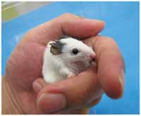
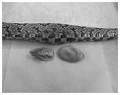
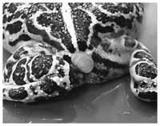
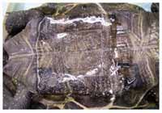
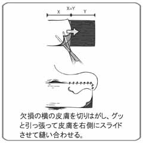
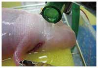
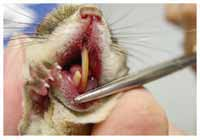
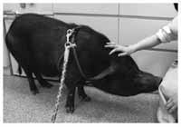

🏠
日
月
縦書き／横書き
動物病院にやってくるさまざまな動物たち
ウサギは今や、犬猫につづく第三のペットとなった。ウサギにもさまざまな品種があり、選択の幅が広がった。
最近ではハリネズミも人気だ。トゲトゲしていて痛そうだが、優しく撫でることぐらいはできる。ハリネズミ専用フードやドッグフードなどを与える。
ミーアキャット。南アフリカに生息するマングースの仲間。見かけによらず、トカゲやサソリが大好物。群れで暮らすため、仲間意識から人間にもよく馴れる。
タイリクモモンガ。大きな目は夜行性の証。前脚と後ろ脚の間にある膜で短距離なら滑空できる。
このページのペットたちは、すべてワシントン条約に記載されている動物だ
コツメカワウソの赤ちゃん。爪が小さいことからこの名がある。とてもかわいいが、野生動物であることを忘れてはいけない。よって「飼いやすい動物」とはいえない。
アホロートル。正しくはメキシコサラマンダーの幼形成熟個体。我が国ではウーパールーパーと呼んだ方がわかりやすい。大人気の両生類（「獣医業界でも混同されるエキゾチックペットと野生動物」参照）。
エキゾチックな動物の代表格カメレオン。パンサーカメレオンというマダガスカル原産のカメレオン。周囲の色や気分によって体色が変化する。餌は生きた昆虫（「『馴れる』と『慣れる』は基本的に異なる」参照）。
ミズオオトカゲは東南アジアに広く分布する大きなトカゲだ。成長すると胴体は丸太のようになり25㎏にも達する。こう見えても泳ぎは得意中の得意。
コモンマーモセット。手のひらに乗る小さなおサルさん。かわいらしいがれっきとした「霊長類」で人間の仲間。人と共通の感染症には気をつける必要がある上級者向けペット。
凛とした姿が美しいサーバルキャット。魅力的な動物であるが、飼育するには地域自治体の許可が必要である。
ホシガメのチビちゃん。安価で売られるが、飼育難易度の高いリクガメであり、すぐに体調を壊す。リクガメ初心者には向かない。
ブッシュベビー。ショウガラゴが正式名。アフリカに生息する原猿類。ペット用のサルの輸入は全面的に禁止となった今、これらの入手は難しい。
ヨウスコウワニ。中国の野生個体は厳重に保護されているが、国を挙げての養殖事業で殖やしたものが日本へ輸入許可されるようになった。小型のワニだが２ｍにはなる。
健康診断から入院するほどの重い病気まで...
いまだに捨て猫は後を絶たない。もとはと言えば、人間の都合で飼育を始めた動物である。最後まで責任があるのは言うまでもない。
アフリカワシミミズク。最近では猛禽類の飼育者も増えている。大きなまんまるの眼が人を魅了する。爪やクチバシが伸びたりしたときにはお手入れが必要。
オグロプレーリードッグが輸入禁止となり、その代打として、このリチャードソンジリスの人気が出てきている。
マダガスカル原産の珍獣ズグロテンレック。昆虫が主食で、ほとんど寝ているため眺めて楽しむ動物である。
「レンコンのきんぴら」を食べすぎ、開腹手術になってしまった犬。肉食動物は野菜を消化するのは苦手である（「レンコンをつまみ食いしすぎて手術となった犬」参照）。
貧血のフェレットに輸血を行っている。動物は変わっても、人間と同様の治療ができることも多い（「動物の血液型と輸血」参照）。
膀胱から結石を取りだしたウサギ。ウサギは腎臓や膀胱に結石ができやすい動物であり、カルシウムを多く与えてはいけない（「ウサギはカルシウム、カメは尿酸の結石ができる」参照）。
「なんか様子がへん」と連れてこられたフクラガエル。お団子のようで、カエル愛好家の中では大人気な種類である（「『ウチのカエル、具合が悪そうなんです』」参照）。
哺乳類から魚まで、必要となれば何でもやらなければならない
卵詰まりのエボシカメレオン。犬の麻酔マスクに入れて麻酔をかける。鳥類や爬虫類は人工飼育環境下では卵詰まりをおこしやすい。卵管ごと摘出（「がんばって自然環境に近づけるほど、卵が詰まってしまう」参照）。

ときには金魚だってくる。大きく膨らんだおなかに超音波を当てて検査したところ腎臓が巨大化し問題をおこしていることがわかった。
ペットとしてヤギを飼うことも話題になっている。角は危ないので全身麻酔を施して切除（「犬のシッポを切る理由は......？」参照）。
３ｍ近い大きなボアはペットシーツを飲み込んでしまった。おなかの中で膨れてしまい、開腹手術で摘出した（「ペットシーツを飲み込んでしまった３ｍの大蛇」参照）。
カエルのレントゲン写真。カエルも時々骨折する。細い骨なので、骨髄に注射針を使って固定（「ウサギの骨は割り箸よりも細く、もろい」参照）。
このゾウガメでもまだまだ小さい。こういった動物を飼うにはひと部屋明け渡す覚悟が必要だ。
ダマワラビー。正しい餌と広い飼育施設で飼わないと足腰が弱くなる。
モルモットは古くからペットとして可愛がられている飼いやすい動物である。最近ではまた人気が出てきている。いろいろなカラーバリエーションがある。
アルビノボールパイソン。黒色の色素が欠損した白蛇。人工飼育下で繁殖させられたヘビは飼育が容易でペット向きの動物だ。
私の獣医師としての原点は、子供のころにさかのぼる。小さいときから、生き物が大好きだった。幼稚園のとき雑木林で捕まえてきたカブトムシを筆頭に、ダンゴムシ、ハサミムシ、マイマイカブリ、クモ、タイコウチ、ミミズ、イモリ、カエル、トカゲ、ヘビ、ザリガニ、イソギンチャク、カニ......。捕まえられる動物は片端から捕まえて飼っていた。
買ってもらった動物は、ハツカネズミやハムスターにはじまり、ブンチョウ、セキセイインコ、イグアナ、熱帯魚の数々。ちょっと変わった動物だけでなく、拾ってきた猫や親戚から譲り受けたヨークシャテリアも飼っていた。何よりの楽しみは、休日のデパート。母親が買い物をしている間に、屋上のペット売り場に入りびたっていた。
そんな小学生時代、飼っていたセキセイインコの具合が悪くなったことがあった。今思えば、卵詰まりだったのだろう。近所の動物病院に連れて行くと、女性の先生は優しく対応してくれたが、「私、小鳥診るの初めてなのよね。注射も検査もできないし、どうしたらいいかしら」と困惑していた。そしてインコは先生の手の中であっけなく死んでしまった。
小鳥というのは、具合が悪いと、持っただけで死んでしまうことがある。しかし当時はそういうことすらあまり情報がなかった。そして、動物に関わる仕事を最初に意識し始めたのは、このときだったと思う。
さらに「獣医師」という仕事を具体的に考えるようになったのは、中学に入ってからだ。当時、ペットとして珍しかった中米産のグリーンイグアナがどうしても欲しくて、東京のペットショップから愛知の実家に取り寄せて飼いはじめた。
だが、こうした変わったペットは病気になっても診てもらえる病院が皆無であった。自分のペットが病気になっても診てもらえるところがない。いろいろなペットの病気を治せれば......。なにより、好きな動物のことを仕事にできるのはいいなあと、そんな漠然とした思いもあった。
みなさんは、「動物病院」というと、どんな動物でもひととおり診察してもらえると思っているのではないだろうか？ そして、獣医さんなら動物のことは何でも知っているんじゃないか、と。
実はそんなことはまったくない。大学の獣医学部で習うのは馬や牛、豚などの産業動物が中心で、ペットとしては犬と猫を習うくらいだ。飼育されている絶対数が多いこともあり、必然的に「動物病院」のほとんどは犬猫の診療が中心となる。
では、「珍獣」というと、どんな動物を思い浮かべるだろうか？ ペンギンやコアラ、オカピやパンダなど、動物園にいるような動物が、世間一般的な珍獣のイメージだろう。
しかし、日本の獣医学の世界では、犬猫以外のペットは十把ひとからげに「エキゾチックペット」と呼び、押しなべて「珍獣」扱いされている。今ではメジャーなペットであるウサギやフェレットでも普通の動物病院では「珍獣」になり、イグアナなどは「珍獣」中の「珍獣」である。
ペットとして大切にされ、寿命が長くなった犬や猫は加齢に伴って代謝性疾患やガン、生殖器系の病気などさまざまな病気が現れてくる。先達の努力によって、この二十年ほどで犬や猫の診療は著しく進歩をとげ、人間に施すのと同じようにＭＲＩ検査や放射線治療などの最先端医療さえも受けることができるようになった。
当院には犬や猫はもちろん、古くから飼われているウサギやハムスターから、アリクイやサルなど本当の「珍獣」、モモンガやハリネズミやヘビ、カエルなど変わったペットまでさまざまな動物がやってくる。ではハムスターはガンにならないか、ヘビは生殖器の病気にならないかというと、そんなことはない。形は違えど、命には変わりない。今までは誰も「知りたい」、「治したい」、「治そう」と思わなかっただけである。
ペットを飼ったことのない人に、犬や猫以外のペットが動物病院を訪れ、それに対して私が診察を行い、薬を調合したり、手術したりしていると言うと、驚かれることも多い。犬でもカメでも、同じように飼い主さんに大切にされ、病気になれば同じように飼い主さんは悲しむのだ。そして、少々変わった動物好きが高じて獣医師となったからには、どんな動物でも治してあげたいと思い、門戸を開いて診療をしている。
私が獣医師になって十三年がたち、エキゾチックペットの医療現場もずいぶんと変わってきた。小鳥やトカゲにも血液検査は必須であるし、ハムスターのガンだって手術で取ることができる。体長５㎝のカエルの骨折も治す技術はあるし、カメの膀胱結石も甲羅を開いて摘出することが可能だ。ただ、犬猫と比べて圧倒的に情報量が少ない「珍獣」を診察するには、そういう変わった動物も好きだという情熱と、自主的な勉強、ちょっとの度胸が必要になる。
本書では、当院を訪れたたくさんの動物たち、さまざまな目的で飼育されるペット医療の最前線について、一般の人にも楽しく読んでもらえるようにまとめた。さらに、「動物のことなら何でも知っている」はずの獣医師が、現場でどんなことに悩み、逡巡しているか、獣医師の生身の姿についても理解を深めてもらえれば幸いである。
もくじ
まえがき
先日、地中に潜って生活しているカエルの様子がなんだかヘンだと、飼い主さんが飼育ケージごと病院に連れてきた。
飼い主さんたちが動物を病院に連れてくる一番の理由は「食欲がない」、「元気がない」、「なんかヘン」といったことだ。病苦に関する患者さんの主な訴えを主訴というのだが、どんな動物もだいたい「いつもと違う」という主訴でやってくる。
地中のカエルがどうして「ヘン」だとわかるのか、疑問に思われるかもしれないが、飼い主さんにはちゃんとそれがわかるのだ。基本的に隠れて生活している生き物が、隠れているところから出てきたとか、いつも動かない動物が動き回っているというときは、具合が悪いことが多い。だから、普段地中に潜っているカエルが昼間から土の上に出ていたり、木の上でじっとしているヘビが終始グリグリ動いていると、病気かなと疑いを抱くのである。
そして、「なんかヘン」だとやってきた動物の診察は、まず、飼い主さんへの問診から始まる。いわば事情聴取みたいなものである。このときはなるべく客観的に答えてくれるような質問の仕方をする。餌はいつもの何パーセントくらいしか食べないのか、いつもの動きはどうで、今はどうか、尿の量は昨日と比べてどうか、など詳細な問診を行う。次に視診に入る。視診とは見て動物の体に異常がないか、チェックしていくことだ。その後、全身の触診をしていく。どこか痛がらないか、どこかに腫れはないかなど舐めるように触る。ときには鼻を近づけて臭いをかぐこともある。それで、「なんかヘン」の「なに」が「ヘン」なのかを捜す。
その結果、「まあ大丈夫でしょう」というときもあれば、触ってみて「反応が悪いですね」とか、「デキモノができていますね」ということで、次の検査のステップにいくこともある。
地中のカエルのときは、私が診た限り特に異常はなさそうだったので、「経過をみましょう」という判断になり、飼い主さんには安心して帰ってもらった。
病気の診断というのは、除外診断といって、基本的には症状から考えられる病気の可能性を全部挙げ、それを検査によって消去法で消していくという方法を採る。これはどんな動物でも一緒だ。
例えば犬が下痢をしているということであれば、下痢を引き起こす原因を挙げ、問診や触診、検便、各種検査で可能性をつぶしていく。あるいは血液検査をして血糖値が低ければ、血糖値が低くなる病気を挙げ、追加検査で一つ一つ可能性を消してゆき、残ったものがその病気であろう、ということになる。
飼い主さんは、「ベテランの先生なら、『これは××病！』と診てすぐにわかるはずだ」と思うかもしれないが、そんなことはない。経験や知識が豊富な先生ほど、「病気の引き出し」がたくさんあって、いくつも可能性を挙げることができるし、そのほうが診断に間違いがない。
私の病院にはいろいろな動物がやってくる。
ペンギン、カワウソ、ヤマネコ、ワラビー、ヤギ、ミニブタ、ウサギ、チンチラ、フェレット、モルモット、ネズミの仲間のデグー、コウモリ、ハリネズミ。サルではニホンザルからテナガザル、ブッシュベビー、スローロリス、リスザルなどが来る。
ハツカネズミやウズラ、アマガエルなど、一般の人には「ペットなの!?」と思われるような動物もくるが、飼い主さんにとっては、治療が必要だと思うほど大事にしている存在なのだ。
先日当院へやってきたドジョウは十二年も飼われているという。水槽でこすれて皮膚が傷ついてしまったということで、薬浴治療を指示した。
あとはカメ、トカゲ、カエル、ヘビ、ウーパールーパー、キンギョ、ワニなどが来る。種類でいえば百種類以上、動物園や水族館、同業の獣医師からも診察依頼がくるし、海外からの治療の相談も時々くる。
「変わった動物が来ますね」とよく言われるが、そんなこともない。犬猫もちゃんと診ている。割合は、犬猫とそれ以外のエキゾチックペットがそれぞれ五割くらいだろう。
獣医学の進歩や、飼い主さんからのニーズによって、各動物や疾患に対する専門性は、かなり高くなっている。エキゾチックペットの中でも、鳥や爬虫類などはそれだけを専門とする獣医師もいる。一番よい医療を受けるために、その筋の専門家に紹介する道しるべとなることも、町医者の仕事だ。
ただし獣医師は「動物」に関して万能な知識を持っているわけではない。実は獣医師は、「獣医学」を知っているに過ぎない。
では獣医学とは何かというと、そのルーツは戦時中の軍馬や食料に関わる家畜にある。産業に関わる動物のことを産業動物というが、もともとそれらの病気を治すために生まれた学問だから、大学で習う獣医学も馬や牛、豚、鶏などの家畜が中心となる。私の大学時代の専攻も豚の内科だった（おかげでミニブタの診察には役立っている）。動物病院で犬猫をきちんと診るようになったのもこの三十年くらいの話である。以前は「猫なんか診て何やってるんだ」と言われる時代もあったそうだ。それが、先人の努力で犬猫も獣医学として認められるようになった。それでも大学の授業ではようやく犬を教えるようになったくらいで、猫に関する授業の時間はいまだに少ない。
獣医師の業界で犬猫以外の珍獣ペットをエキゾチックペットと呼称するが、このエキゾチックペットの獣医学ともなれば、日本ではまだまだ未開拓の分野だ。例えば、「家畜・産業動物」ということで、大学では養蜂のミツバチ、養殖のブリやヒラメなどの勉強はする。でもペットの熱帯魚は習わない。実験動物としてのモルモットやハムスターは学ぶが、ペットとしてのそれらの勉強はしない。当然、ペンギンやカメなどは皆無である。開業獣医師で犬猫以外の動物を診ているというと、業界では奇異の目で見られる。きっと変わり者に違いないと。ペットとして犬猫の比率が高く一般的であることもあるが、教育を受けないこともあって、犬猫以外を診察する獣医師数は今でも極端に少ないのである。
しかし、ペットショップに行けば、犬猫もウサギもカメも、みんな同じように売られている。だから私は「動物病院」として、人が飼っている動物であれば、動物種を問わずだいたい診るというスタンスでやっている。
では、爬虫類、両生類から哺乳類まで、大学では教わらない動物を、どうやって診断して治療していくかといえば、「がんばる」としか言いようがない。
「まえがき」にも書いたように、私は、子供のころからずっと動物が大好きだった。だいたいの男の子の幼少時代はカブトムシやトカゲなど動物が好きなものだが、成長していく過程で動物以外に、車とか女の子とか音楽など、ほかにもっと好きなものができてくる。なぜか私の場合は、ずっと動物と自然にしか興味が向かなかったようだ。
小学校のときはデパートの屋上のペットショップに、毎週通っていた。自分で捕まえたクモやヘビを飼っていたこともある。中学のとき、爬虫類専門雑誌に載っていたイグアナが猛烈に欲しくなってしまった。しかし、実家のある愛知県では当時どこにも売ってなかった。そこで東京のペットショップから宅配便で取り寄せたこともあった。
そんなこともあって、獣医学部受験の面接の際、「イグアナの獣医学をやりたい！」と真顔で言ったのだが、あっさりと「ウチでは教えてないよ」と言われた。教えてないなら仕方ない、自分でやるしかないなと思った記憶がある。そして大学を卒業したあとで、見習いとしてエキゾチックペットを診察している動物病院に修行に行った。エキゾチックペットの診察方法は、そうした病院で習いつつ、あとは専門書を読んだり、論文を探したり、個人的に勉強するしかないのだ。今でも、海外の資料を含め、手に入る文献には一通り目を通すようにしている。海外ではエキゾチックペットの診療もかなり進んでいるので、さまざまな医学書や資料がある。それらの資料をもとに、あとは地道に経験を積み重ねていくしかないのだ。
体長20㎝ほどでわが家にやってきた小さなそのイグアナは、後に２ｍ近くになり、二十三年間も生きた。おそらく日本で飼育されているイグアナの中では最長寿記録に入るだろう。中学一年で飼い始めたイグアナの最期は、獣医師になった私自身が治療した。その経験もあってイグアナの診療は得意である。
しかし、私は決してエキゾチックペットの専門医ではない。犬猫の心臓病専門といったスペシャリストではなく、犬猫から爬虫類、無脊椎動物などさまざまなペットのどんな病気にも対応できるジェネラリストでありたいと思っている。いろいろな動物や、いろいろな症例を間近で診療できるのは、私たち町医者の特権なのである。
今も私は病院で、テンレック（マダガスカルに棲むハリネズミに似た動物）、モモンガ、ヘビ、トカゲ、カメ、カエル、古代魚など三十匹ほどの珍獣を飼育している。自宅には猫、イモリ、タイコウチ、フナなどがいる。見習い時代は今の五倍は飼っていて、毎日、二時間かけて掃除や世話をしていた。仕事は忙しかったが、「自分で稼いだ金でやっと好きな動物が飼える！」と、ペットショップに通いまくりの日々だった。週末のデートもペットショップか動物園。気がつけば小学生のときから今でも休みの日の過ごし方は変わっていない。結局、見習い時代の給料はそれで全部消えた。
でも、そこから学んだものは大きかった。ペットショップのおやじさんは動物のいろんなことを知っているので、行くと毎回二、三時間話し込んで情報交換した。動物園では人工環境下で飼育される野生動物の姿を学んだ。それらの関係で今でも獣医師以外の動物仲間との交流は多く、「動物ネットワーク」みたいなものがある。よく知らない珍獣のことでも、××のことなら○○の動物商に聞くというふうに、知恵を拝借することもある。
飼育を試行錯誤しながら、結局、死なせてしまった生き物もいっぱいいる。特に見習い時代、飼育の難しいカエルをたくさん飼っていたときには苦労した。
カエルをはじめ両生類や爬虫類のように、大自然のごく限られた一部のニッチな環境でしか生きられない生き物は、水槽で飼うということが非常に難しい。彼らの生きている環境を完璧に再現し、維持することはできないからだ。一日世話しなかったら死んでしまうという繊細なカエルもいっぱいいるのだ。
私はそんな「飼育困難な動物飼育」の前線で、「このカエルは絶対飼えない！」と言われていた「死にガエル」たちを、死なないように飼う技術を開発していった。今も一部マニアの間で使われている「死にガエル」は私の造語だ。
このときの経験が、今、カエルの診察に役立っている。例えば極小のカエルのような動物は、必ずしも診断名が付かないことがある。病名が付けられなければ、医学書にも出ていない。それを「大丈夫」と判断する根拠は、実はカエルの顔色だったりする。
普段、科学を標榜しながら、「そういうところは感覚なの!?」という話ではあるが、自分が飼っている生き物の顔色はわかるものだ。だからこそ、カエルが「なんかヘン」と病院に来たとき、診断のステップを踏んだ上で、「まあ大丈夫でしょう」と判断できるということもある。
そんなふうに、珍獣の診察には、獣医学だけではなく、飼育のスキルや生物学的な知識も役立つのである。
タランチュラが「元気がなくて、餌も食べません」とやって来た。診るとお尻にシワがよってしぼんでいる。元気のいいタランチュラのお尻はパンパンにはっているものだ。しぼんでいるのは、脱水のためである。そこで、タランチュラのお尻に水分を注射する。
これは別に思いつきでやっているわけではない。『Invertebrate Medicine』（無脊椎動物の医学）というイギリスで出版されている医学書にちゃんとその処置法が載っている。またアメリカには『Medicine and Surgeryof Tortoises and Turtles』（カメ類の内科と外科）という電話帳くらいの厚さの専門書もある。これにはカメのあらゆる治療法が一通りまとめられている。ただ当然ながら、どんな動物にも「教科書」があるわけではない。むしろ、教科書はないことのほうが多い。また臨床現場は、教科書の理論だけで行えるものでもない。
したがって、診たことのない動物の診察というのは、悩みの種である。これをどうクリアするかというのは、大きな課題である。なにしろ、毎回初めてのことだから、そのたびにどうしようかと悩む。
クモの死因の大部分は脱水といわれており、ときに、注射をして水分を補給してあげることもある。この毛は刺激性があり、皮膚に触れるとかゆくなるため、ゴム手袋をしての診療。
タランチュラは、成長期には数か月に１回脱皮をする。毛や爪までそっくり脱皮するので、脱皮後は２匹に増えたのかと驚くことも（下が脱皮した皮）。
鋭いかぎ爪で檻にしがみついてしまうと、人間の力では引きはがせない。このミナミコアリクイの場合も、お尻をコチョコチョして動いてもらった。
大変珍しいが、個人で飼育している人もいる。アリだけではなく、ペースト状にした果物も食べる。
いわゆる普通の衣装ケースに穴を開けてホースをつなぎ、麻酔ガスを流す。ぼんやり見えているのは、麻酔がかかってゴロンとしているハリネズミ。
犬用の麻酔マスクに全身をスッポリ入れられガスをかがされるソバージュネコメガエル。まさしく全身麻酔である。
サル等はケージから出して移動させるのが難しいため、ビニル袋をかぶせて麻酔ガスを注入する。写真は健康診断のために全身麻酔をするタラポワン。
左のホースの先についているのは右の液体の薬が入っているプラスチックボトルの下部を切ったもの。ハムスターやカエルなど小動物の麻酔に使う。
病院の一日は八時に始まる。病院に着くと、まずメールをチェックする。山ほど届いている診療以外の仕事のメール（書籍や論文、学会の準備などの）をチェックしていると、スタッフから入院動物について指示を仰ぐ内線がかかってくる。診察の開始は九時。九時を回った途端に、待ってましたとばかりに問い合わせの電話が鳴る。待合室には、不調のわが子を抱いて不安な気持ちのまま一晩明かした飼い主さんが、心配そうな顔で順番を待っている。
当院は世間でいういわゆる大きな動物病院ではなく、一日にだいたい四十件、多い日で六十件ほどの患者（飼い主さんと動物）を診療する中堅的なクリニックである。このうちだいたい四割が午前中に、六割が午後に来院する。
午前の診療は十三時ごろ終了する。そこから十六時までが世間でいう「昼休み」の時間となる。この時間、本当に休んでいると思っている飼い主さんも多いが、一般外来が「お休み中」なのであって、休んでいるわけではない。
私は午前の診療の合間をぬってそそくさと早弁し、スタッフの昼食時間の十三時から十四時まで部屋にこもってメールを返したり、原稿（本書の原稿も！）を書くなど事務仕事に徹する。そして、十四時からは昼の手術の時間となる。
普通、診察で手術が必要だということになっても、その場ですぐ手術を開始するのではなく、事前に入院してもらったり、予約してもらって昼の時間に手術を行っている。手術・麻酔件数は年間で約六百件。一日平均二件。行わない日もあるので、多い日には四件ほどこなす日もある。十六時ギリギリまで手術を行い、終われば、すぐに午後の診療にうつる。待合室には飼い主さんたちがもう待っている。午後の診療が終了するのは二十時すぎだ。
その後、さらに手術をすることがある。急患であるとか、「昼休み」の時間では終われないような「大きな手術」は、病院を閉めたあと落ち着いて行う。これを業界では「夜オペ」という。
「ごめん、今日の飲み会なんだけど、急に夜オペが入っちゃったから行けないわ」
約束をこんなふうに断るとなんとなく、一般的なお仕事をされている方は「なんか医療現場っぽくてカッコいい」と思うかもしれないが、夜オペも日常の業務としてやっているので、カッコよくもなく、一日中働いたあとはくたびれているので、できることなら避けたいと思っている。夜オペは、予約していた手術が昼間できなかったり、命に関わるような急患など、夜に行わなければならない事情がある。一方で、緊急性はないが、やっておかなかったことで、もしかしたら明日は状況がさらに悪化するようなこともあるかもしれない、というケースもまれにある。
そういうときは、夜に手術を実施するかどうか悩む。夜の手術は終了すると、夜中の十二時、一時になる。スタッフにもそれだけ残業してもらうことになるし、終わるまで当然何も食べずに手術をする。終わったあとはヘトヘトになる上、翌日も朝九時から診療である。あまり遅いと次の日の診療にも響く。私だって普通の人間だから、寝たい欲求だって持っている。また、院長の立場からスタッフにも苦労はかけたくないとも思う。
でもやらなければ、もしかして悪化させるかもしれない。医療現場はそんな風なグレーゾーンで成り立っている。人が思うほど病気の状態は白黒決められるものでもない。
しかし、結果は良くなるか悪くなるかの二つ。八割方大丈夫だと思うけど、死んじゃう可能性もゼロパーセントではないというレベル。例えるなら、ずっと待ちに待っていた楽しいお出かけに出発した後に、「あれ、ヤカンかけていたガス、確か消したはずだけど、もしかして消していないかも......」みたいな気持ち。命を扱っている以上、この「もしかして」という不安は無視してはいけない。そこは妥協なき心持ちで、やはり「今晩オペやるからさー、ごめんねー」とスタッフにも声をかける。
夜の手術がない日でも、診察が終了したあとは、獣医師同士の症例検討会の準備や文献の整理などで午前様となる。そして翌朝八時にはまた仕事が始まる。
つまり一日のうち、起きている時間の九割は獣医師として生きている。
別に忙しい自慢をしているわけではない。私に限らず一線で臨床をやっている多くの獣医師がこのような生活をしている。
病気にはお盆も正月も関係ない。当院にはお盆休暇は無く、正月三が日だけ休診にするが、外来を受け付けていないだけで、病院内は動いている。スタッフと交代で当番するものの、元旦くらい家で休みたいだろうと、毎年大晦日と元旦は私が担当する。
預かっている動物たちにも正月は関係ない。特に犬は散歩が大好きだ。一日中狭い入院ケージでは気が滅入るだろうから、散歩をさせる。複数一緒でケンカなどしたら困るため１匹ずつの散歩である。病院の周り１㎞のお決まり散歩コースを預かっている犬の数だけ何度もグルグルしながら、私の年も暮れ、元旦も犬の散歩から始まる。
この仕事は、警察みたいだと思う。警察は、交番のお巡りさんも警察なら、科学捜査官だって警察だ。獣医師はお巡りさんが受ける町のよろず相談から、顕微鏡をのぞいたり、血液検査の解析を行ったりして病気の原因をつきとめる科学捜査官まで全部一人でやっている。
ある日の診察時間、「ごきぶりホイホイ」に引っ掛かったハムスターがやってきた。モモンガなどもそうだが、ケージから逃げていなくなったと思ったら、「ごきぶりホイホイ」に引っ掛かっていたということが時々ある。「ごきぶりホイホイ」からはがしても、ノリがとれずにベタベタなので、「ノリをとってください」とやってくるのだ。
マヌケだな～と思いつつ、ベタベタの動物を水で薄めた植物性の「粘着テープはがし」につけて、こすり落とす。取りきれない場合は、片栗粉や小麦粉をふって、ベタベタ感をなくして返す。ノリが残っていると、フンや床材のおがくずがくっついたりするから、唐揚げを揚げる前みたいにコナコナ（粉々）にするのである。片栗粉を使うのは、動物が舐めても平気なためで、一日もすると取れてしまうので、「キレイになるまで毎日、粉をかけてくださいね」と飼い主さんには話す。ほほえましい光景のようだが、「粘着テープはがし」で落とすには、ハムスターが暴れないよう麻酔をかけなければならないから、やはり獣医師の出番なのである。
①ＴＢＳの『情報７ｄａｙｓニュースキャスター』にも登場したフクロモモンガ。顔にも体にもノリがベッタリ。
②ピンセットやクシである程度ノリを取ってから、薄めた粘着テープはがしに浸けてそっとこする。
③乾かしたあとで、ベタベタ感をなくすために片栗粉をまぶす。ほほえましい光景のようだが、麻酔下で行う緊張する作業。
カメの血液。だ円形のものは赤血球で、①がリンパ球、②が好酸球、③が好中球、④は栓球といって、鳥類・爬虫類における哺乳類の血小板にあたるもの。
エキゾチックペットは検便で未知の寄生虫が見つかることも少なくない。
フェネックの赤血球内に丸い構造物が見える。ジステンパーウイルスの封入体（矢印）。
左から自動血球計算装置（ｐｏｃＨ）、遠心分離器、血液生化学分析装置（ＤＲＩＣＨＥＭ）。これらの機器を使って体の異常を探す。
診察室のカウンターに置いてある顕微鏡は、横のモニターにつながっているので、モニターを見ながら飼い主さんに説明する。
以前、イグアナがペットとして流行ったことがあった。『イグアナの娘』というドラマもあった。
さて、当院へやってきたイグアナの「太郎君」。
「先生！ ウチの太郎のお腹がパンパンで、ご飯を食べません......」
「確かにおなかがパンパンですね。ところで太郎君、女の子ってことはないですか？」
「えっ......、いちおう男の子のつもりなのですが」
爬虫類の雌雄判別は難しいため、オスだと思っていたらメスだったというのはよくあることだ。さっそく膨れたおなかを調べるためレントゲンを撮ってみると、卵がたくさん写っていた。
「せっかくカッコいい名前を付けてもらったのになんですが、太郎君は女の子です。卵でおなかの中がいっぱいになってしまい、ご飯が食べられないんです。小鳥がよくおこす、いわゆる卵詰まりでしょう。これは手術で取り出したほうがいいですね」
「太郎君」には全身麻酔がかけられ、心電図などの生態管理モニターを装着しての本格的な手術が行われる。おなかを開いてみると、卵が出るわ、出るわ、数え切れないほど。小さな体にこんなにたくさんの卵が詰まっていたら、さぞ苦しかっただろう。ぺったんこのお腹になった「太郎君」は、元気に飼い主さんのもとへ帰って行った。
飼い主さんが今後、繁殖を望まないという場合、卵の摘出のみではなく卵詰まりの再発を防ぐため、避妊手術をすすめている。飼育下ではどうしても正常な繁殖周期を維持することが難しいからだ。先ほどの「太郎君」の場合も、卵の摘出と同時に、卵巣も摘出し無事避妊手術を完了した。今後はオナベとして生きてもらおう。
実際、卵詰まりは命に関わる怖い病気だ。臨床現場では、鳥類や爬虫類など卵で殖える動物は卵が詰まって死んでしまうことがよくおこる。メスを単独飼育していても卵ができてしまうのだ（当然ながら無精卵なので、待っていても孵化しない）。
では、なぜこれらの動物は交尾をしていないのに卵ができてしまうのだろうか。実は鳥類や爬虫類にとっての無精卵は、人間の女性に生理や排卵がくるのと同じようなものだ。もっと身近な例は、養鶏場のニワトリを思い出せば容易に理解できるだろう。
爬虫類なら本来の繁殖周期はだいたい一年に一回程度であり、その間にうまくカップルが成立すれば「オメデタ」となる。
野生動物の繁殖周期は、大自然のなかで、季節の移り変わりや気温差、日照時間の長短、餌の有無などさまざまなファクターが複雑に組み合わさったものをまず脳の視床下部が感知する。そして脳下垂体へ信号を送り、それが生殖腺を刺激し「卵つくらなきゃ」と反応する。しかし、人工的な環境下で「超不自然な状況」におかれている動物は、それらのファクターのバランスが崩れているため生殖サイクルがおかしくなってしまう。
よく卵が詰まる代表種としてセキセイインコが挙げられるが、餌の量を調整して、卵がつくられるのをできるだけ抑えるという方法がある。セキセイインコは、本来、オーストラリア内陸部の乾燥地帯の餌の貧しいところに棲んでいる。雨が降り、花が咲き、実がなり、食物がたくさんある時期になるとはじめて発情が刺激される。
したがって、小さな鳥かごで常に豊富なご馳走を与えられる裕福な生活を送り、あげくに一羽で寂しいからといって鏡を入れると、その鏡に映った自分の姿に思わず恋をして卵を詰まらせてしまう。
本来ならば、すごく貧しい餌を与え、質素に生活させると卵は詰まらない。詰まらないというより、卵をつくらない状態を保つということだが、質素な生活をさせることは飼い主さんにとっては大変だろう。
①グリーンイグアナの「太郎君」。しかし女の子だったと判明した。
②爬虫類などウロコのある動物は、手術前に歯ブラシを使ってウロコの間をキレイに。
③グリーンイグアナは一回の産卵で二十～四十個の卵を産む。
④卵を取り出した後に、卵巣を摘出する避妊手術も。おなかはぺたんこに！
インコの卵詰まりのレントゲン写真。以前私が飼っていたインコの死因もこれだった。
病院の二階にあるエキゾチック動物入院室には、本来、野生にいるべきキジバトとカラスがいる。これにはわけがある。
時々、傷ついて道端にうずくまっていた野鳥を拾って病院に連れてくる人がいる。
「先生、なんとかなりませんか」
本当に心優しい人なのだろう。しかし、鳥が道端で飛べないでいる状態にはそれなりの理由があるのだ。仮に複雑骨折した翼の骨をピンやワイヤーでつないで、自然に放せるならそれでいい。治療だってすべて無料でやっている。しかし、飛翔能力を持つ翼には戻らないことが多い。病院へ連れて行けば飛べるようになると思うかもしれないが、必ずしもそうではないのだ。一生、籠の中の鳥となる。
「飛べなかったら、どうしましょうか」と尋ねると、「えっ、私、拾って連れてきただけですから」と言う人が結構いる。
「飛べなかったら、拾ってきた方に責任持って飼ってもらいたいのですが」
「なんで、私が飼わなきゃいけないんですか。ウチじゃ、鳥は飼えません」
「では、私が代わりに飼い続けるということですか」
「まあ、そういうことですかね......」
「私が拾われてくる鳥をすべて保護していたら、病院は野鳥だらけになってしまいますよ」
このようなやり取りの後、「私、飼います」という人もいれば、「拾ってきただけなのに！」と怒りだす人もいる。小さな命を拾ったなら、自分でその命に責任を持たなければいけない。「かわいそう」という気持ちは本当に素晴らしい。日本が豊かな証拠でもある。しかし、その次に自分がその命をどうするか、と考えることはもっと重要だ。
本来、野鳥は羽が折れたら、地面に落ちて外敵に食べられたり、死んで土に返るのが自然の摂理である。また、弱い個体が死んでいくことでその野鳥の個体群が維持される。一種類の鳥だけが増えれば、餌の争奪となり、群れ全体の力を弱める。確かに一羽の命はかわいそうかもしれないが、その一羽が死ぬことで、さまざまな他の命が救われるのである。もし、一羽の野鳥がかわいそうと思うのであれば、そう思った人間が面倒を見るか、それが嫌なら傷ついた動物を一生ちゃんと飼ってくれる世話好きの人かどこかの施設を探してもらうしかない。冷たいようだが人の手にある命には、責任もつきまとうのだ。
野鳥といえば毎年五月ごろになると、よく野鳥のヒナが「たぶん巣から落ちていた」と「保護」されてくる。しかしその九割は「巣立ちヒナ」とよばれるもので、大人になるための飛行訓練期間中のヒナなのだ。ちゃんと親鳥は遠くからそのヒナを観察しており、時々餌も運んでいる。病気やケガをしているわけではなく、巣から落ちたわけでもないのだ。その旨を説明すると、「親鳥の姿は見えなかった」、「そうだとしてもこのままだとヘビに食べられてしまいます」というようなことを言う。自らの行為を正当化したいのだろう。しかし、人間の影があれば、親鳥は身を隠すだろう。巣立ちヒナがヘビに食べられてしまっても、ヘビにとっては、滅多に口にできないご馳走だ。もしかしたら、ヘビはそのヒナを食べなければ餓死してしまうかもしれない。
よって、巣立ちヒナを「保護」することはいろいろな意味で「誘拐」に相当する。これも野鳥の生態を知らないから無理もないことかもしれないが、教育の理科離れを感じずにはいられない。もしくは、幼少期から「命は平等」という言葉のみ言われづつけているので弱っていそうな動物を見ると、等しく「かわいそう、助けよう」ということになってしまうのかもしれない。
なお、病院にいる例のキジバトとカラスは、治療の甲斐なく再び飛ぶことはできなくなってしまった。連れてこられた方に「こちらで飼える準備が整うまで、病院で預かってください」と言われ、預かっている。かれこれ一年以上も預かっている。さぞかし、立派な飼育施設を準備しているのだろうと私は気長に待っている。
羽田空港で保護されてきたハヤブサ。幸いにも元気になって大空へ放された。
道で保護されたキジバト。折れていた羽は治療したが飛べるようにはならなかった。このキジバトは一生を当院の籠の中で過ごす。
「屋根裏を掃除していたら巣があったが、困るから」と巣ごと持ってくる人もいる。
南アメリカのアンデス山脈に生息するげっ歯類の仲間、チンチラ。
ノコヘリヤブガメ。アフリカのカラハリ砂漠に生息するとても珍しいリクガメの一種。
ボルネオのジャングルで撮影した１００％天然物のモーレンカンプオオカブト。
そうはいっても、最近、動物由来感染症が話題になることも多く、もちろんそれらに対するリスク管理は必要である。動物由来感染症は、人畜（獣）共通感染症といったりズーノーシスといったりもする。これらは最近の話ではなく昔からある問題だ。身近な動物からうつる病気はたくさんある。子犬や子猫がよくかかる皮膚糸状菌症といわれるカビの病気は、濃厚に接触していると人間にうつる。症状としては皮膚が赤くなるのだが感染した人が死ぬことはない。
最近、犬猫のカプノサイトファーガ・カニモルサスという細菌を原因とする新しい感染症が話題になった。この病気は動物（主に犬や猫など）の口腔内に常在しており、噛まれたり引っかかれたりすると感染する。免疫力が低下した人などが感染、発症すれば死亡率は30％になる。
カメがサルモネラ菌を持っていることは有名であるが、カメに限らず牛、豚、鶏などは10～30％、犬や猫は３～10％の割合で保有しているという報告もある。確かに子供がミドリガメを口に入れたりすれば、サルモネラ症で下痢や発熱、最悪なケースでは死に至る。だからアメリカではＦＤＡ（食品医薬品局）が、子供の口に入るような４インチ以下の小さなカメの販売を禁止している。
エキゾチックペット、特に得体のしれない珍獣は、動物由来感染症の危険性について理解しておかないといけない。ＡＩＤＳの原因であるヒト免疫不全ウイルス（ＨＩＶ）はアフリカのサルが起源ともいわれているし、ＳＡＲＳ（重症急性呼吸器症候群）はユーラシア大陸に分布するコウモリの一種が自然宿主と考えられている。本来、自然宿主の身体では病原性を示さない病気も他の動物、例えば人間に感染することでその病原性を発現することもある。
したがって、可能性は低いにしろ、野生動物を飼育するときはこれらのリスクを十分理解した上で飼育を開始しなければならない。しかし、確率論でいえば、日ごろ接触する確率からいっても人間の病気は人間からうつされる可能性のほうが高い。言い換えれば素性のわからない相手にナンパされて、いきなりやっちゃう女子高生のほうが危険だろう。
そのあたりも含めてよく考え、珍獣を飼うべきである。珍獣飼育にトライ＆エラーは許されない。渡航自粛地域やガイドブックのない場所へ海外旅行に行くようなものである。自分の責任は自分で背負うしかない。いつでも相手を知り常識的な距離を保つことは重要である。珍獣は素人が飼ってはいけない。
だが「ペットに適さない外国産野生動物」も、ひところに比べ、市場に流れる種類はかなり減っている。最近ではペストを媒介するとしてプレーリードッグの輸入が禁止された。プレーリードッグは熱心な愛好家も多く、輸入再開を願っている人々もたくさんいるが、現状では難しいだろう。コウモリやキツネ、野生げっ歯類も動物由来感染症を持っていることがあるので、輸入に規制がかかった。また、人間に近く、同じような病気にかかるペット用サルの輸入も止まった。現在サルが売られていたら、それはずっと日本で飼われていたか、人工繁殖されている個体もしくは密輸のいずれかである。
一九九〇年初頭ごろ、エキゾチックペットバブルと呼ばれる時代があった。あのときはワオキツネザルにピグミーマーモセット（世界最小級のサル）、ナマケモノ、アルマジロにスカンクなど動物園でしか見ないような相当変わった「珍獣」が普通に売られていた。でも、本当の「珍獣」は、とても臭かったり、特殊なものしか食べなかったり、決して馴れなかったりして飼うのが大変で難しく、やっぱりごく一部の人にしか飼えない。
それがわかって、ペットショップもだんだん売れない動物は扱わなくなった。だから今、普通に売られている動物は、そんな規制や時代の風潮をうけて、ある程度、ふるいにかけられて残ったものが多くなっている。われわれ個人が心配するまでもなく、社会によってそれらはおのずとジャッジされていくのだろう。
そもそも野生動物を飼うことの是非はといえば、おそらく、飼わないほうがいいと私は思っている。一方で、考え方は二つあって、人間は地球の中でどういう位置づけなのかという話になる。生態系のピラミッドの中の一つだと考えるなら飼っちゃいけない。けれど、人間は超越した存在で、自然の生態系になんか属してない、飼いたいものは飼いたいんだと考えるなら、それは「人間の業」だろう。仕方ないと思う。
私もいろいろ動物を飼ってきたし、今も飼っている。それは動物が大好きだからだが、基本的には飼育下で増やしたものを飼うとか、あまり変な生き物は飼わないようにしている。
よく野生動物を大切にしようとか、保護しようという。でも、保護するもしないも、人間サイドの思いにすぎない。また「飼う、飼わない」というのも、人間だけの都合で、野生動物にとっては迷惑な話である。彼らにもし感情というものがあるとしたら、「今更そんなこと言っても遅いんだよ」という気持ちだろう。野生動物は絶対に人間を許さない。ならば、人間は人間で、矛盾だらけながらも、その「業」を貫くしかないとも思うのである。
本来、野生動物を飼育する場合、それが野生から捕獲されてきたということを知った上で、飼うからにはきちんと飼ってあげなくてはならない。しかし、珍しいからといって十分な知識もなく飼って病気にさせてしまい、病院に来る人がたくさんいる。
スローロリスなどどがそうだ。非常にかわいらしいし、テレビにも登場する。スローロリスは人気の女性タレントが飼っているということで、認知度も上がった。
ところが、スローロリスは二〇〇七年に「サイテスⅠ種」に登録されている。「サイテス」とは正式名称を「絶滅のおそれのある野生動植物の種の国際取引に関する条約」といい、「ワシントン条約」という名称のほうがよく知られているだろう。Ⅰ種からⅢ種までランクがあり、Ⅰ種に登録された動物は学術目的など一部の例外を除いて、国際取引が禁止されている。したがって、スローロリスはジャイアントパンダやオランウータンと同じ扱いであり、国際取引が厳しく規制されているのである。
ただ、人工飼育下で繁殖された個体は、証明書があれば商取引が可能となる。そこで密輸されたものが、繁殖個体として偽って販売されていることがある。
以前はこうした個体は、さまざまな珍獣を飼うごく一部の「珍獣マニア」がこっそりと大切に飼っていたものだった。それが今では、スローロリスも大衆化され、タレントが平気でテレビに出したりする。そしてそれを見た若い女性が、「かわいい～！」とペットショップに買いに行く。価格は二十万～三十万円程度。安くはないが、買えない金額ではない。
ペットショップにいけば、たいてい「これ、日本で生まれたものです」と言われるが、ホントのところはどうなのであろう。スローロリスは一度に一匹か二匹しか子供を産まない。とても人気の高い珍獣だが、ペットショップの店頭に並ぶほど繁殖供給が間に合うのだろうか。今、あなたの飼っているスローロリスに登録証明書はついているだろうか。おそらく世界中で一番スローロリスをペットとして所有している国は日本であろう。買い手は売っているものだからと疑いもなく買う。仕方のないことかもしれないが、さらによろしくないことに、生態も飼い方も知らずに買う人も多い。
そしてかわいい顔をしたサルだから、「かわいい食べ物」しか食べないだろうと思って、バナナやフルーツなどしか与えない。でも野生下のスローロリスは、トカゲやバッタを頭からまるかじりしているのだ。
「かわいい食べ物」だけあげ続けた結果、栄養失調になって病院に来る。これは最近流行りのフクロモモンガも同様だ。彼らも野生では虫などを食べており、餌の約30～50％は動物性タンパク質を摂取している。でもやはり見た目はすごくかわいいので、フルーツとナッツしかあげていなかったという人がたくさんやってくる。「その餌のチョイス、リスだから！」と、内心思う。ちなみに、いわゆるモモンガはげっ歯類リス科だがフクロモモンガは有袋類フクロモモンガ科でカンガルーの仲間だ。栄養失調になり、骨が曲がるクル病になってしまう患者が後を絶たない。
スローロリスは東南アジアに分布する原猿の一種。「リス」ではなくサルの仲間。
帝王切開で生まれた生後５分のリスザルの赤ちゃん。適切に飼育すれば、繁殖も可能だ。
スローロリスやリスザルは野生では果物より昆虫類を多く食べるといわれる。これは餌用コオロギの缶詰。
上下ともにリスザルのレントゲン写真。腕や足の骨は膨らみスカスカになっている。骨盤も原型をとどめていない。
栄養、運動、適度な紫外線などの不足により発生する。こうなってしまった骨は元通りにはならない。
「先生！ ウチのカメのお尻から、変なものが出ています！」
「ああ、これはカメさんのおチンチンですよ」
「えっ......。どうすればいいのでしょうか」
「そうですね、このおチンチンはもう死んじゃっていますので、切断しかありません」
「えっ、切断って、切ってしまっても大丈夫なんですか？」
「まったく問題はありません、生きていく、という意味では」
普通、爬虫類のペニスは体内に引っ込んでいて、繁殖のときにだけ外に出てくるものである。ペニスが出っ放しになるという症状は、トカゲでもおこるが、特にカメが多い。原因は、過剰な性的興奮や栄養失調とされており、月に一、二回くらいは診ていると思う。
そのインドホシガメも、シッポの付け根のお尻の穴からペニスが出っ放しになり、壊死してしまっていた。リクガメのペニスは体のわりに大きい。カメのそれは、だいたいそのカメの頭と同じくらいと思っていただいて間違いないだろう。それにしても、亀頭とはよく言ったものだ。生きのいいペニスは張りがある。それが壊死してしまうと、くたっとして茶色く変色し、見た目は人間でいうところの、「寒い冬の日のおチンチン」のようになる。壊死したペニスは、残念だが切断するしかない。手術自体は難しいものではないが、止血をちゃんとしておかないと、血がドバーっと出る。
そこでまず、ペニスの根元に局部麻酔を打ち、血管を糸で結んで止血をしてから、切り落とす。
切断に対して以前はレーザーメスでオシャレにやっていたが、長年、ペニスを切り続けていると、「ハサミで切っても変わらない」ということに気づき、今はハサミでチョッキンとやっている。
カメのペニスは、切断した断面を見ると、溝を伝って精子を送り出す構造になっているのがわかる。これは交尾のときに精子を流しこむためだけの器官であり、排尿とは関係ない。だから切断しても問題ないし、命に関わるものでもない。
また、壊死していなければ、切断せず、もとに戻すこともできる。カメのペニスは、普段は総排泄口というお尻の穴に収納されている。そこに押し戻したら、また出てきてしまわないよう穴を糸で半分ほど結んでおく。「半分ほど」というのは、総排泄口は尿や便を排出する穴でもあるので、排泄ができるように隙間を開けておくのである。こうして一週間後に糸を抜くと、もとに戻っていることが多い。
先日、「出っ放しになってしまったカメのペニスを、一晩、砂糖水につけたが戻らないうえに、カメがぐったりしてしまった」という飼い主さんがやってきた。インターネットには、「砂糖水につけると、ペニスが縮んでもとに戻る」という話が紹介されている。実際、それは病院でも行われる方法だ。砂糖水は濃いので、浸透圧の関係でペニスの粘膜から水分を奪う。だからペニスを砂糖水につけると、ギュッとしぼむというしくみだ。
ただこれも、必ずしぼむとは限らない。通常は十分程度やって縮まらなかったらそこでやめる。ペニスを何時間も砂糖水につけていると、そこから体内の水分が大量に失われてしまい、非常に危険なのだ。そのカメも重度の脱水症状をおこし、助からなかった。
ネット情報には詳細まで書かれていない。中途半端な情報を真面目に鵜呑みしてしまうと、取り返しのつかないことになってしまう。
カメのペニスの切断法
ペニス脱をおこしたホシガメ。ソレの大きさは頭ほどある（①）。
ペニスの根元に局所麻酔をうち、根元を鉗子でおさえてハサミでチョキン！ 男性陣には鳥肌が立つ写真だろう（②）。
カメの精液はペニスの溝を伝わって送り込まれる。ペニスの役目はそれのみ（③）。
お尻の穴から「出る」ものといえば、ペニスだけでなく、腸も多い。脱腸はトカゲやカメに限らず、いろいろな動物でみられる。犬猫もあるし、フェレットやチンチラなどでもある。はげしく下痢をすると、すでに出すものがなくなってもまだ出そうとしてりきむ。その拍子に腸が出てしまったりするのだ。
中でもカエルの脱腸は多い。犬猫の脱腸は指で押し込めばよいが、カエルは指が入らないから、綿棒を使う。カエルのお尻もカメと同じ総排泄腔なので、排泄できるよう半分くらい糸でしばっておく。これも一週間もすると、もとに戻ることが多い。
ただあまりひどい脱腸は押し戻せないので、開腹して、内側から腸を引っ張り、また出てしまわないようにおなかの壁に腸を縫い付けることになる。また、腸を切断する場合は、ペニスのように切っておしまいというわけにはいかない。腸は筒状になっているので、切ったあとは円筒状に縫う必要がある。
腸重積の場合はもっと大変である。脱腸と腸重積は医学的には異なるが、見た目では同じようにお尻の穴から腸がピロッと出ている。やっかいなことに腸重積では、腸の一部がさらに腸の中にめりこんで、詰まったような状態になっている。つまり裏返して脱いだ靴下みたいになっているので、単純な脱腸のように、ピロッと出た先を押し込んでおしまいとはいかない。開腹手術で、裏返った腸を引き戻し、正常な状態に戻す必要がある。
ベルツノガエルの脱腸整復法

②優しく綿棒で押し戻す。
③押し込んだ後、排便排尿ができるようにゆるめにお尻の穴を縫う。
来院する爬虫類のうち九割はカメが占める。縁日で売られているような小さなミドリガメから、体重60㎏以上になる巨大なゾウガメなど大小さまざまなカメがやってくる。大きなカメはオムツをしてやってくることもある。大型種は排泄も大量なので粗相しないようにするためだ。
余談ながらそうしたリクガメの類は部屋で放し飼いにしていることも多い。カメはトイレを覚えないから、いきなりおしっこをが～～っとする。オムツをしないと部屋が汚れてしまうのでオムツをつけるのだ。オムツはカメの大きさによって生理用ナプキン、赤ちゃん用オムツ、さらに老人用介護オムツとサイズアップしていく。
カメの来院では、「餌を食べない」、「鼻水が出ている」、「呼吸に異常がある」、「排泄の際りきむ」、「便が出ない」などの主訴が多い。甲羅があるのにどうやって診察をするのかと質問されることがよくある。今までに百回以上聞かれているだろう。だがカメの場合も、他の動物と基本的には変わらない。できることというのは、どんな動物でもそれほど変わらないものだ。
ただ、一つ特別なことがある。それは「待つ」ということだ。たいてい診療しようとするカメは手足や首を引っ込め、石のようになっている。診察室で手足や首をだらっと出してあまり動かない場合は、相当具合が悪い証拠になる。
引っ込めた手足を無理に引き出して検査しようとすると、カメも意固地になってどんどん引っ込めてしまう。だから飼い主さんと雑談などしながらひたすら待つことになる。ムリヤリ引っ張り出すよりも、カメにとってもストレスが少なく、待っているほうが飼い主さんにも印象がよろしい。そして、カメが首を出したところを速やかにつかむのだ。
またカメは、前脚を押し込むと後ろ脚が出てきたり、後ろ脚を押し込むと前脚が出てきたりするので、それを利用することもある。カメというのは、甲羅の内側の体積が決まっている。だから、手足や首を引っ込めたところから、さらにグッと押し込むと、反対側がグニっと出てくる。それで、診たいほうとは逆の脚をつついて、脚を出させることもある。
両手両脚を同時にぐっと押し込めば、首がヒュッと出る個体もいる。また、前肢を先に引きずり出すと、引っ込める力が弱まるので、その後、クチバシにフックをかけて頭を引き出すという荒業もある。でも基本はやはりひたすら「待つ」である。
カメの甲羅に聴診器を当ててもゴツゴツして何も聞こえないので、ガーゼを挟んで呼吸音を聞く。
カメは甲羅があるので、基本的には何も写らない。はっきり写っているものがあれば、異常事態。これは卵が大きすぎて卵詰りになったリクガメのレントゲン写真。
撮影者の指がレントゲンに写らないよう、プラスチック製のトングで挟み、カメのレントゲンを撮る。大変便利。

レントゲンに写らないような柔らかいものを誤飲した可能性があるときは、バリウム検査を行う。
採血は首の静脈から。血管が透けて見えるわけではないので、経験値とカンでやる。
カメの超音波検査は後肢を引っ張り、甲羅のすき間からプローブをあてる。
餌を食べなくて衰弱しているときなど、首から胃にカテーテルを通し流動食を与える。
カメの超音波検査の画像の様子。丸く見えるのは卵。
カメの腹腔鏡検査。後肢の付け根からカメラを侵入させ、内臓を目視して検査する。

飼育下のカメはクチバシが伸びすぎて餌が食べにくくなる。
人間の歯医者さんでも使われているリューターでクチバシを削る。
ハリネズミの爪を切っているところ。丸まってしまうと針が痛くて持てないので、サカナを焼く網に乗せ、下に出てきた爪を切る
従来のカメの開腹手術法
①カメの開腹手術。甲羅を外科用電動ノコギリで台形に切り取る。
②切り取った甲羅を外し、体腔へアプローチする。
③いままでに取り出した中で最大のカメの結石。このカメは体重約10㎏で結石の直径は11．５㎝もあった。
⑤１年後、樹脂をはがす。だいたい甲羅が成長して完全にくっつくまで、１～５年かかるといわれている。
⑥樹脂を塗って固める方法の場合、このように腐ってしまうなどのトラブルが多かった。
新しく考案したカメのＰＥ法
①甲羅は完全に切り離さず、下の筋肉を残したままにしておく。シッポ側の一対の筋肉を切ると、甲羅は貝柱を切った貝のようにパカッと離れる
②作成した「甲羅の窓」から出ない大きさの結石はトンカチとノミで壊す。
③手術後、切った筋肉を縫い合わせる。こうすると切った甲羅片に血流が温存され癒合しやすい。
④セメダイン社の金属用パテで固定する。人間の背中に貼ったピップエレキバンのように見えないか？ ＰＥ法の完成だ！
⑤従来の方法では甲羅がくっつくまでに１年以上かかったが、この方法なら２、３か月だ！
⑥この術式はアメリカのエキゾチック診療専門誌『Exotic DVM』に掲載され、その後ここ12年間の優秀論文のひとつに選ばれた。その記事を見たポーランドの獣医雑誌より、ポーランド語に翻訳してよいか？と連絡があり、大変光栄に思っている。
ある日、甲羅がパックリ割れてしまったカメが来院した。ベランダで飼っていたミドリガメが水槽から逃げ出し、手すりをくぐって空中ダイブしてしまったという。カメは基本的に水平方向もしくは水中を移動するために進化している動物なので、移動範囲も垂直ではなく水平方向である。よって、「高さ」の概念を基本的に持ち合わせていない。そこで、水槽から逃げ出したカメさんが、コトコトとベランダを歩いているときにベランダの手すりの下に隙間があったりすると、いつの間にか空中散歩となって地上へとダイブしてしまうのである。年に数例は、このようなダイビングカメが来院する。
カメの甲羅は、殻ではなくて骨組織である。つまり甲羅の損傷は一種の骨折ということになるのだが、甲羅はカメにとって皮膚兼骨なので、割れてしまうと内臓が飛び出すほどの大ケガとなる。人間でいえば、開放骨折や内臓破裂に相当し、割れどころが悪いと死んでしまう。また、背中の甲羅（背甲）の中心には背骨が裏打ちされているため、横一文字に背甲が割れると、下半身麻痺になる。救急救命は迅速で適切な処置が重要となるが、それはカメも同じことだ。
まず、ダイビングカメが運ばれてくれば、酸素吸入を行い、抗ショック剤、抗生物質の全身投与を行う。割れた甲羅には滅菌ガーゼを施し、食品用ラップフィルムを巻いて乾燥から臓器を守る。緊急状態から脱するまでは、水の中には入れられない。脱水を防ぐため、点滴で水分を補給する。
四十八時間後、なんとかヤマを越え、状態が安定した。私が得意とするパテ（「新しく考案したカメの手術法にアメリカからも問い合わせが」参照）で甲羅をつなぎ合わせる。こうすれば割れた甲羅は固定され、傷口から水が入らない。人間も同様であるが重篤な外傷事故の場合、傷口からの感染症を防いだ後、「つなぐ、ふさぐ」の処置を施す。あとは個体の回復力に任せるしかない。このダイビングカメさん、七日後には、水中生活を送れるまでに回復した。
①ベランダからダイブしてしまったカメ。無惨に内臓が見えている。
②手当を行った後は乾燥から守るため食品用ラップフィルムで保護。
③６か月後には、固定するためのパテもはずすことができ、無事完治した。
皮膚欠損に対する形成パターン例
背中を食いちぎられたトイプードル。痛々しいが、脊髄に至らなかったのは不幸中の幸いだった。
「うちのウーパーのシッポが取れちゃいそうです！」
シッポがちぎれかけ、ぶらぶらになったウーパールーパーがやってきた。水槽の掃除中、水の浄化機をうっかり落としてしまったそうだ。運悪くその下にはウーパールーパー......。シッポの付け根はぱっくり開き、傷は骨にまで達していた。
暴れるとぶらぶらのシッポがちぎれてしまうので、全身麻酔をかけて、まず、脊椎損傷がないかレントゲンを撮ってチェックする。幸いこの症例はシッポの筋肉のみの損傷であった。陸生動物の麻酔はガスを使うが、エラ呼吸のウーパールーパーにはもちろん使えない。以前、おなかが腫瘍でパンパンになったウーパールーパーの手術をしたときに、専用の麻酔装置を考案した。
①水槽の掃除中うっかり濾過装置を落としてしまい、シッポの付け根がざっくりと切れてしまったウーパールーパー。
②ウーパールーパー用の麻酔装置。ウーパールーパーの形にあわせてスポンジを彫ってある（獣医師は何でもやるのだ）。
④手術後の様子。傷は残ったが機能に問題はない。
誤ってとなりの水槽に入り、同種から返り討ちにあったオオトカゲ。
自咬症で自分の尻尾を食べてしまったプレーリードッグ。
皮膚の縫合法のパターン例
①骨折し、内出血を起こしているセキセイインコ。
②セキセイインコの脚の骨は爪楊枝ほど。放し飼いにして踏んでしまう事故が多い。
③インコの細い足にはギプスを巻くのが難しいので骨の中に注射針を入れて固定する。
ウサギもよく骨折する。他の病院からの紹介で来ることも多いのだが、ウサギの骨折の手術にはちょっとしたコツが必要である。
ウサギはピョンピョンと飛び跳ねて、より早く外敵から逃る必要がある。そこで身体をより軽くするため、骨も軽くできている。猫の骨の重さが体重の13％なのに対し、ウサギの骨は８％といわれている。そのために、ウサギの骨はとてももろいのである。
犬猫の骨折の固定で使われるプレートは、やはりウサギには大きすぎる。また、骨の真ん中にピンを通す髄内ピンは、ウサギが動き回った際の衝撃で、骨がピンの強さに負けてしまい砕ける危険性がある。
こうした場合、私は好んで創外固定という方法を採る。これは人間の指の骨折や複雑骨折などで、骨を固定するときに行う方法だ。骨の折れた部分に、皮膚の上から骨の中央を貫くように、しっかりとピンを何本か刺していく。骨を串刺しにするような要領である。
見た目、メカニカルな器具が皮膚を貫いて刺さっているので、非常に痛々しい。しかし、創外固定は強い固定が可能で骨折部分を切開せずに行えるので、筋肉の損傷も少なく骨の癒合も早い。
当院で使用している創外固定の器具は、医療機業者の方がエキゾチック動物用にと極小サイズで作成してくれ、「先生、ちょっと使ってみて」と持ってきてくれたものだ。それを先発部隊として使っている。
ただ創外固定は技術的に髄内ピンより難しい。大きな病院であれば、リアルタイムでピンの挿入が見える透視レントゲン装置を使いながらやるが、当院にはない。そこで、折れた骨を外から触わった感覚で、骨の真ん中を狙ってピンを挿入するのである。このとき、ピンがきちんと骨の中心を貫かないと骨が割れてしまう。ピン挿入には感覚的な部分が強いため、センスも必要だ。
あるとき、右前肢と左後肢がぶらぶらになってしまったフェネックがやってきた。ドアにうっかり挟んでしまったのだそうだ。
ここで少し補足しておくが、小動物の骨折は、九割が飼い主に原因がある。落とした、踏んでしまった、ドアに挟んでしまった、強くつかんだ等々である。
さて、このフェネックのレントゲンを撮ってみると、右手首がポキッと折れていた。さらに左後肢は指の付け根がグシャッとつぶれ、指の骨が四本も折れていた。
こうなると、手術時間も労力もいつもの三倍かかる。時間を気にせず、手術に集中できるように、外来診療の終わった夜に手術を行うことにした。
①ウサギの骨折。ぽっきり折れてしまった上、剥離骨折もしている。
②ウサギの骨折の創外固定。骨の中央を横から貫くようにピンを差し、皮膚の外に出ているピンをパテで固定する。
特注の極小創外固定器を使ったウサギの骨折治療法。
プレート法で固定したトイプードルの腕の骨折。金属の板をあて、スクリューで止める。
①前肢・後肢ともに骨折してしまったフェネック。フェネックの骨もウサギと同様にとてももろい。
②指の骨が四本とも折れてしまった左後肢。
③もともと竹串のように細い骨をさらに細い随内ピンで固定。
①フクロモモンガは「自咬症」を起こすため、手術の後には、粘着包帯を利用した特性エリザベスカラーを装着する。
②こうしてしげしげと見ない限り、脚が一本ないことには気が付かない。
③水槽のふたで挟み複雑骨折をしたフクロモモンガ。断脚はしたが、木にも素早く登るほど生活には支障がない。
動物のギプスは難しい。この子の名はももちゃん。ピンクのギプスで決めてみた。
エリザベス女王のエリマキに似るから「エリザベスカラー」と呼ばれる。
ウサギには紙皿を流用してなめないように患部を保護することもある。
左後肢を断脚したウサギ。このケースは悪性腫瘍が原因だった。

①腕に感染症を起こし、骨が溶けてしまったヒキガエル。
②感染が広がらないように断脚手術を行った。
①アライグマの犬歯をカット。ダイヤモンドカッターで切断する。
②歯を切った後で歯髄を抜き、そこに歯科用セメントを詰める。
不適切な犬歯の処理で顔が腫れてしまったリスザル。こういった症例は実に多い。
リスザルの抜歯。見えている倍以上の長さの歯根が歯茎の中に埋まっている。
①歯の不完全な治療のため、顔に穴が開いてしまったテナガザル。ＣＴ撮影で、残っているはずの歯根を捜す。
②獣医歯科専門医と二時間かけて歯根を摘出。三年来の病巣がウソのようにすっきり治った。
①ウサギの不正咬合はよく見られる症例。前歯だけでなく、臼歯も伸びるので、カットしてあげる必要がある。
②前歯をカットした後。たいへんスッキリした印象。一度不正咬合をおこすと完治は難しいので定期的にカットする。
ウサギの口を開けるのは、耳鼻科で鼻の穴をグイっと広げるとき使われるアレ（鼻鏡）。

ウサギなどの奥歯をきちんと治療する場合、このように全身麻酔をかけて、開口器を使って行う。
ウサギの口は小さいため、器具で口の中がいっぱいになり、何も見えなくなってしまう。左が従来のカッター、右が田向式臼歯カッター。
プレーリードッグは人によく馴れ、かなりの数が飼育された時期があったが、輸入禁止に伴い、来院数も減ってきた。
歯牙腫で苦しくて白目をむいている。
今までに抜いた歯牙腫の数々。小動物の口腔外科は、小さい分技術的にかなり難しい。
皮膚を丸く切り取り、その後、ドリルで骨に穴を開ける。孔が落ち着くまでプラスチックのカバーを縫いつけておく。
歯牙腫が大きくなると、気道を圧迫され呼吸困難になるので、眉間に穴をあけ、呼吸孔を作る。
誤飲とは、字のごとく「誤って」異物を「飲み込んで」しまうことをいう。人間では小さな子供以外、変なものを誤飲することはほとんどないだろう。動物病院には、いろいろな動物たちが、それはもういろいろなものを飲み込んでやってくる。症状が軽い場合は「獣医の特権だな」と、少し楽しかったりする瞬間だ。
フェレットは誤飲が多い動物だ。彼らはムニムニしたものが大好きで、例えば、消しゴムや輪ゴム、お風呂のマット、スポンジ、布などをカミカミ遊んでいるうちに飲んでしまう。結果、腸閉塞となる。腸閉塞も完全に詰まってしまえば、緊急手術になる。放置すれば死に至る。
一方、ウサギは誤飲が少ない。用心深い性格とよく咀嚼するため、あまり変なものを飲み込んだりはしない。その代わり、しきりに毛づくろいをするため、毛が胃の中にたまって毛球症（胃腸鬱滞）という病気を引き起こす。多くのケモノは毛玉を吐くことができるが、ウサギは、胃の出口の筋肉が発達しているため嘔吐ができない。これは馬も同じである。
また、カメなどは誤飲してもたいていはウンチに混じって出てくる。消化管の構造がシンプルだからだ。仮に小石や画鋲を飲み込んでいても数か月後には排泄されることが多い。
カメに限らず爬虫類の飼育では、水槽の中に細かな砂を敷いてカッコよくレイアウトする人がいる。確かに見た目は野生の雰囲気でなかなかそれっぽい。しかしその砂は自然界のものと異なり、人間がふるいにかけ、大きさを均一にしたものである。餌にくっついた砂をずっと飲み込み続ければ、爬虫類といえども腸閉塞を引き起こす。人間の「それっぽい」イメージだけで飼うと痛い目にあう。
また飼育下では、思いもよらないものを誤飲する。
「ウチの子、ペットシーツ飲んじゃったみたいです！」
あるとき、そう言って飼い主さんが連れてきたのは大蛇だった。ボア・コンストリクターという種類で、成長すると３～４ｍになる。やってきたそれは３ｍ。見てくれは巨大だが、テレビなどで外国人が首に巻いたりしているのを見かけるとてもおとなしい大蛇である。
連れてこられたそのヘビ、飼い主さんによると「すごく神経質で偏食」なのだそうだ。ヘビには時々、そういう個体がいる。それなのになぜペットシーツを飲み込んでしまったか。
ヘビの餌は普通、冷凍マウスなのだが、その大蛇は、マウスは嫌いで、ヒヨコしか食べないという。しかも通常のヘビは、ピンセットで餌をつかんで差し出すと、ぬーっとやってきて食べるのだが、そのヘビは飼い主さんが見ている前では食べないのだという。夜に、解凍したヒヨコをケージにこっそり入れておくと、朝までにはなくなっているそうだ。
ところがあるとき、翌朝、起きたら置いておいたヒヨコと一緒に、ケージに敷いてあったペットシーツもなくなっていた。ヘビのケージにペットシーツを敷くというのは一般的なことで、これを誤飲することはまずない。
しかしこのヘビ的には、おそらくヒヨコを食べようとしたところ、ペットシーツも引っ掛かってついてきて、それをそのままヒヨコの続きと思って飲み続けてしまったのだろうと思われた。連れてこられたときには、おなかの一部がぽこっと膨れていた。
ヘビの誤飲はウンチと一緒に出るか吐くかすることが多い。以前、自分の尻尾を飲み込んでしまったマヌケなヘビがやってきたが、これもしばらくすると吐き出した。
飼い主さんもどうにか出るのではないかと、二週間、様子をみたそうだ。きっと私でもそうしたと思う。しかし次に餌をやる日になっても、どうにも出そうもない。ペットシーツは水を吸うと膨らむので、おなかの中でパッツンパッツンになってしまったのだ。
このままだと餌を食べられず、最終的には餓死してしまう。そこで開腹手術をすることにした。それにしてもこのヘビは大きい。二つつなげた手術台に載せても、シッポがビロンとはみ出した。
おなかを切ると、白い固まりが詰まっていた。先っぽをピンセットでつまんで引っ張り出すと、ずるずるっと、ペットシーツが現われる。
わかっていても、シーツの巨大さにちょっと笑ってしまった。
トカゲのおもちゃを飲み込んだベルツノガエル。麻酔をかけ、口から引っ張り出した。
自分と同じサイズのおもちゃを飲み込んでいた。
カエルやウーパールーパーなどの両生類は眼が悪く、動くものを何でも餌だと思って反応するため、水槽の中の水の流れで少しでも石が動いたりすると、餌と間違えてパクッと食べてしまう。このため、よく誤飲がおこる。特にカエルの誤飲での来院は非常に多い。たぶん私は世界で一番、カエルの胃から異物を取り出している獣医師だろう。
バジェットガエルというカエルがいる。別名、マルメタピオカガエルといい、南米出身、体長10㎝くらいになる比較的大きなカエルだ。
この二頭身の間抜けな顔をしたキュートなカエルは、水中にふらふらと漂い、眼の前に来た獲物をその大きな口で食べてしまう。水槽に入っているものも、餌と間違え何でも食べてしまう慌てんぼうさんなのである（本書の表紙もこのカエルだ）。
バジェットガエルは誤飲をしてもたいてい口から取り出すことができる。
ビー玉を６個も飲み込んでいるバジェットガエル。
水槽にしいていた砂を飲み込んでいたヒョウモントカゲモドキ。
水槽にしいていたきれいな色ガラスを飲み込んだコバルトツリーモニターというトカゲ。
①日本の自然にいる普通のアマガエルがやってきた。

②レントゲンを撮ると、自分の体のほとんどが飲み込んだ石でいっぱい。
③皮膚を切り、筋肉を切り、胃を切り、石を出したらその逆の順番で縫い合わせる。
④摘出した小石。
ヒモを誤飲した犬の腸。腸がヒモにたぐり寄せられ縮めたアコーディオンのようになっている。
胃腸に絡まった「ヒモ」を摘出している様子。単純に引っ張ると、胃腸が引きつれるためＮＧ。胃腸の２，３カ所に切れ込みを入れ、優しくゆっくり引き出す。

②嘔吐の止まらないミニブタに内視鏡検査（胃カメラ）を行っている。胃内は胃酸にあふれ、何も見えない状況であった。
③内視鏡検査の後、開腹手術を行ったところ、小腸に異物が詰まっているのを見つけた。豚の腸はとても薄いため、細い糸を使って丁寧に縫合する必要があった。
「院長、オオトカゲのモニちゃんが、急患で来院されるそうです」
電話を受けたスタッフからの声で、院内にさっと緊張が走る。
運ばれてきたオオトカゲは、いつもの元気が無く無気力な様子だった。早速、検査をはじめる。レントゲン検査、超音波検査、血液検査を行った。すると、重度の貧血をおこしていることがわかった。そして、おなかの中には何かの液体が充満しており、その液体の中に卵と思われる構造物がいくつも浮かんでいるように見えた。
こういう場合、恐らく卵巣、卵管の問題が疑われる。しかも、超音波検査で液体として映し出されているものは、たぶん体腔内に出血した血液だろう。それによって重度の貧血をおこしているに違いない。
一刻も早く開腹手術を行って、出血部位を止めなければ失血死することは想像に難くない。診療を終えた後、早速開腹手術を行った。案の定、おなかを開けると一面血だらけだった。血でタポタポになっている。まず、この血液を吸引しないことには、どこから出血しているか見つけることが困難であるため、注射器で体腔内にたまっている血液を吸い出した。血液は、牛乳瓶半分の１００㏄ほどもあった。
ちなみに、爬虫類の血液量は体重の５～８％だ。このオオトカゲの体重から換算すると、全血液量が１１０～１７０㏄だから、60～90％が体腔内に出血してしまったことになる。
出血した血液を吸引し、卵管を引っ張り出し、よく調べてみると、正常に発育しなかった卵が卵管で腐って破裂し、そこから出血しているとわかった。
「どうしようか......」
出血しているところは塞いだものの、これだけの大量出血ではどう考えても助かりそうにない。しかも回収した１００㏄の血液というのは結構な量だ。一刻の猶予も許されない。目の前に出血で死にそうな患者がいて、手には血液の入った注射器があり......これは捨てられない。
「これ、捨てるのもったいないよな。イチかバチかに賭けてみよう！」
今でもなぜそうしたのか理論的な説明はできないのだが、抜いた血液をそのままオオトカゲに輸血することを思い付いたのだった。
「院長、戻しちゃっていいんですか」
スタッフが問う。
「院長、細菌感染の可能性が......」
そんなことはわかっている！
おなかの中に漏れた血液というのは、細菌などで汚染されている可能性がある。冷静に考えると、その血を戻すというのは、非常にリスキーなことだ。
しかし、戻していいも何も、このままでは確実にオオトカゲは死ぬ。「細菌が......」などとまともなことを言っていられないくらい、私の精神も、トカゲの命もギリギリだったのだ！
ただ、医者というのは、実はこうした極限状態でも、どこかで理性が働く。獣医師の倫理にそむくようなことはできなかったりする。結果がすべてだから、どんなに悩もうと、よかれと思ってやったことでも、死んでしまったら、「お前がやったんじゃん」という一言で終わってしまう。
飼い主さんには「やはり手遅れでした」と話せても、自分の中では、「あの血液を戻したから死んでしまった」と絶対に後悔する。「自分がその死に手を下したのではないか」といつまでも悔やむことになるだろう。だから獣医師はどんなときでも、無謀なチャレンジはしないものなのだ。
しかし、今回のケースでは、今の今まで腹の中に漏れ出てたまっていた血液を再度、体内循環に戻すだけである。おかしいことか......。倫理的ではないのか......。
加えて、「パイオニア精神」というものもある。大学で探検部に所属していたとき「パイオニアワークの実戦」を部として標榜していた。パイオニアワークのない活動は許されなかった。人がやらないことをやる。同じ山を登るにしても、人が作った道を歩いてどうするんだ、どうせ同じ山を登るのであれば、誰も歩いたことのないところから登りなさいという教えだった。体の芯に叩き込まれたパイオニア精神が、今、獣医療の現場でも発揮されているのだ。
①出血多量のオオトカゲの腹部。注射器に二本分、約１００㏄も血液を吸い出した。
②輸液ポンプを使って吸い出した血液を輸血しているところ。
③奇跡的に回復！ このオオトカゲ（ブルーテールモニター）は飼い主さんに抱っこされるのが大好き。

貧血のフトアゴヒゲトカゲに輸血。
フトアゴヒゲトカゲの採血。シッポの中央に血管が走っているので、裏側から中心に向かって注射針を刺す。
正常なカエルの皮膚の顕微鏡写真。
カエルツボカビに感染したカエルの皮膚には円形の菌体が見える。
カエルツボカビに感染すると、ひっくり返って起きあがれなくなるような症状が出る。
健康診断で来院したそのゴールデン・レトリーバーを触診したところ、上腹部に巨大な塊を触知した。高齢になるとゴールデンやラブラドール・レトリーバーのような大型犬はおなかの中に腫瘍ができやすく、特に脾臓の腫瘍化をおこしやすい。もし仮に脾臓のガンであった場合、早期の摘出であれば意外と予後は良い。脾臓は大きな血液タンクのようなものなので全摘出してしまっても大丈夫である。
早速、血液検査、レントゲン検査、超音波（エコー）検査で、そのものがいったい何なのか調べにかかる。一通り検査したところ、腫瘍が大きすぎて確定が困難であったのだが、肝臓腫瘍の疑いが高く、しかし脾臓の可能性も捨て切れない診断となった。いずれにしても、その巨大な腫瘍がいつ破裂して出血多量で死んでしまってもおかしくない状況なので、脾臓であれ肝臓であれ、腫瘍の摘出を目的とした開腹手術を行うことにした。脾臓であれば、脾臓自体の摘出はそれほど難しい手術ではない。実は「脾臓ならいいな」との淡い期待もあった。
ところが、開腹した時点で、目の前の腫瘍があまりにも大きいため、腫瘍の発生部位がわからなかった。手を腹腔内に突っ込み、よくよく探ってみると、日ごろの行いの悪さがたたったのか、脾臓ではなく肝臓で、淡い期待は消えてしまった。レバーの塊（つまり肝臓）に、バレーボールくらいもあるでかい腫瘍がついていた。
「どうすりゃいいんだ......」
一瞬、ひるむ。このクラスになると町医者の仕事ではなく大学病院級の仕事となる。大勢のスタッフと万が一に備えての輸血も必要だ。普通だったら閉じてしまって「開腹したところ、もう取れない大きさでした」と飼い主さんに説明するケースである。
だがふと、師匠の言葉を思い出した。
「どんな大きい腫瘍でも、くっついてる部位は小さかったりするんだよ」
腫瘍の根元が小さければ、いくら腫瘍がでかくても関係ない。根元だけ処理すれば取れるということだ。
手探りしてみると、確かに根元は「意外に小さいかも」という感触があった。これならいけるかもしれない。
「よし、一度、冷静になるんだ」
こういうとき、私は一旦メスを置く。気を落ち着け、肝臓の血管の走行を解剖の教科書で再確認して、頭を整理する。
「これから出血するから、鉗子を用意してスタンばってて」
そう助手に声をかけ、腹壁と腫瘍の隙間に手を滑り込ませ、両手で腫瘍を持つ。息を止め、次の瞬間、根元から腫瘍をブチッと引きちぎった。
「キャー！」
まわりの看護婦さんから悲鳴があがり、血が噴き出す。それを、用意しておいた鉗子でバシッ、バシッと止める。糸で血管をくくり、出血がないのを確認する。
「よし、うまく取れてる」
大きな腫瘍が取れたあとは、視野が開けたので、ゆっくり正常な肝臓組織とガン組織を見分け、丁寧に切除していけばよい。
いつもこんな乱暴なやり方をしていると思われたら困るのだが、実は以前、外科専門の先生が同じように巨大な肝臓腫瘍をいきなりブチッとちぎっているのを見たことがあった。腫瘍はやわらかく、健康な肝臓はある程度の硬度があるので、引っ張れば取れるのだ。
しかし実際自分がやるとなったら、当たり前だが逡巡する。そんな手法はあくまでレアな、たまたま成功しただけ（かもしれない）の一例にすぎない。ブチッと引きちぎった瞬間に出血で殺してしまう可能性もある。
さまざまな動物たちのガン
①バレーボール大の腫瘍ができていたゴールデンレトリバー。開腹したところ、術野のすべてが腫瘍であった。
②翌日にはすっかり元気な姿を見せてくれた。
22ｇのパンダマウスに４ｇの腫瘍ができていたが、なんとか摘出できた。小さな動物は少しの出血が命取りになる。
首の付け根に大きな腫瘍ができてしまったオオコウモリ。これも無事に摘出することができた。

ウーパールーパーにだって腫瘍はできる。開腹手術を行って摘出した。これは精巣の腫瘍であった。
ヘビの大腸ガン。ガンによって排便がまったくできない状態になっていた。
現代日本人の間で増加が問題となっているアレルギー疾患。それと同調するように犬でも食物アレルギーが「流行って」いる。ネットで「犬 アレルギー フード」を検索すると、相当数の情報がヒットする。以前、当院のウェブサイトで「犬の食物アレルギー」というアレルギー疾患の解説文を載せたところ、その後から、「犬 皮膚病 フード アレルギー」でウェブサイトにアクセスする人がすごく増えた。
当院にも、「ウチの××ちゃんの皮膚がいつも痒くて痒くて......」とおっしゃる飼い主さんがたくさんやってくる。そういう飼い主さんは口をそろえて「この子、○○（食物の名前）アレルギーなんです」と言う。
しかし統計によると、一般動物病院に来院する犬の皮膚、耳疾患の全症例のうち、食物アレルギーによる皮膚疾患というのは、全体のわずか数パーセントにすぎない。人間でもアレルギーが増えているとはいえ、自分のまわりで、ある食品を食べたら皮膚にアレルギーが出る、という人はそんなに多くはないだろう。
獣医皮膚科専門医の話では、犬の皮膚疾患の原因は、多い順に「細菌、真菌による皮膚病、寄生虫（ノミ、ダニ）、アトピー性皮膚炎、ホルモン性皮膚疾患、食物アレルギー、接触もしくは薬物アレルギー」だという。だから犬の食物アレルギーも、実際にはそんなに多いものではないのである。
しかし日本では現在、皮膚疾患を患う犬の飼い主の間で、原因のすべてを市販フードのせいにするような風潮がみられる。食物アレルギーというのが、一種の免罪符になっているのかもしれない。とりあえず、そこに納めておけば納得、というような感じだ。
当院にもよく、「食物アレルギー」という主訴で転院してくる患者さんがいる。
「近所の病院で言われて専用のフードに換えたけど、治らないんです」
なぜ治らないのか。それは食物アレルギーだけではないからだ。初診時の診断が違う可能性も高い。
アレルギーとアトピーが混同されることがあるが、「アトピー性皮膚炎」と「食物アレルギー」は、似て非なるものだ。食物アレルギーとは、「ある食物によって正常な免疫反応とは異なる反応をした結果、生体に起きる有害反応」と定義づけられており、食物アレルギーの一つとしてアトピー性皮膚炎をおこすこともまれにあるが、有害反応の結果は必ずしも皮膚に出るとは限らない。
一方、アトピーは複雑な病態だが「ハウスダストやハウスマイト（いわゆるチリダニ）や植物、花粉などの物質に過剰に反応し、皮膚に病変が出るもの」と定義づけられる。アトピーの皮膚は乾燥気味になり、皮膚のバリア機構が壊れることで、原因物質が皮膚から浸入しやすくなる。
犬のアトピー性皮膚炎は比較的多く、食物アレルギーだと思ったら、本当は環境中の物質に反応しているアトピー性皮膚炎だったりするかもしれない。あるいはアトピー性皮膚炎と食物アレルギーが重なっている例も時々みかける。したがって、食物の変更のみで皮膚病変を治すことは、確率からしてもかなり低いものとなる。
さらに皮膚病変を引き起こすアレルゲンを決定することは、実は非常に難しい。大学病院の皮膚科専門医ですら、「この子、××アレルギーですよ」と特定するのはなかなかできるものではない。
血液検査でアレルギーの原因を調べるという方法もある。だが、一般的に行われるアレルギーの血液検査は、体内にある抗原に対する抗体の数値（抗体IgEの値）を単に計っているだけにすぎない。抗体の反応があるからといって、それが皮膚病変を引き起こしているとは限らない。だから、血液検査をしても、たくさんのアレルゲンに陽性反応が出てしまい、結局、どの食餌成分が本当に皮膚に悪影響を及ぼしているか判断をつけるのがとても難しい、というのが現状だ。
では、どうやって食物アレルギーかどうかを調べるかというと、まず、アレルギー症状を引き起こす可能性のあるタンパク源を与えないことからはじまる。タンパク質を特殊な手法で加水分解した、アレルギー反応をおこさせない専用フードを二か月間続ける試験を行う。これを除去食テストという。専用フードと水だけ。おやつも禁止だ。
もし、食物アレルギーであれば、今まで持っていた病変が治ってきて、二か月後にはだいぶよくなる。その後に、疑わしい食物、例えば鶏肉であればそれを再度与えてみる。それで試験前と同じ病変が現れたら確実に鶏肉アレルギーだとわかる。
診断方法としては、単純、簡単なものだ。一番確実な方法でもある。それでもこのテストを実施するのはとても難しい。なぜなら、飼い主さんに「本当に食物アレルギーか調べるために、まずはこのフードだけで二か月やってください」と言うと、「できません！」という話になるからだ。
「どうしてですか？」
「......だって散歩のときに、おやつもらっちゃうから」
「......ご飯が一種類だけなんてかわいそう」
結局みんな、おやつや他のものをあげたいのだ。これが飼い主さんのいない実験動物であれば、とても簡単に実施できる。二か月間、専用フードと水を与えればいい。しかし臨床現場において、ちゃんと食物アレルギーの診断をつけようとするには、しばしば飼い主という大きな壁が立ちふさがるのである。
同時に、アトピー性皮膚炎の来院も増えていると感じる。アトピーは犬で多く見られ、猫ではさほど多くない。エキゾチックではハムスターについて報告されているものの、それ以外の動物のアトピー性皮膚炎はほとんど研究されていない。
アトピーは原則として治らない。言い換えれば一見よくなったとしても治ったとはいえず、単に治まっているということだ。そしていい時期と悪い時期を繰り返して、徐々に悪くなっていく。
アトピーというのは、自分の免疫が過敏に、あるいは過剰に反応するものなので、治療はその免疫を抑えていくという治療になる。つまり免疫抑制剤、有名なところではステロイドを使うことになる。
ステロイドは本来、安価でよく効く、効果の高い良い薬である。ただ、ドーピングなどに使われるステロイドのイメージと混同され、非常にマイナスイメージの強い薬となっているのも事実だ。そのため、ステロイドの誤解について長時間、説明にあたることもしばしばある。まず、ドーピングに使われる筋肉増強のステロイドと、治療に使われるステロイドはまったく別のものだ。ステロイドは副作用が強いといわれるが、めちゃくちゃな使い方をすると副作用があるのはどんな薬も同じである。
アトピーで来院した飼い主さんに「ステロイド出しましょう」と言うと、「ステロイドですか」と、明らかに不審そうな顔つきでこちらを見つめる。「では、出すのはやめましょうか」と言うのだが、そうするとアトピーは一向によくはならない。
ステロイド以外にも、副作用の少ない高価な免疫抑制剤もある。ただそういうものは即効性に欠け長期的に使わないと効果が目に見えてこない。飼い主さんにとっては「高くて、なかなか効かない薬」と判断されてしまう。「ならば、やっぱりステロイドにしますか」と言うと、また、「副作用が怖いからイヤだ」という問答になる。
今はインターネットがあるので、飼い主さんもいろいろ調べている。巷では脱ステロイドの本がやたらめったら売れたり、「犬の手作り食」の本が流行ったりする。あるいは「ステロイドを使わないで治す」といういかにもキャッチーなものが受けたりもする。そして結果的に、民間療法をやり続けて悪化してしまい、さらにひどい状態になって来院されることも多い。
しかしそもそも、ステロイドというのは軽いものから、非常に強力なものまで何種類もある。何を何ミリグラム使っているかによって、強い、弱いは常に変わる。作用の弱いステロイドを、さらに基準量の十分の一しか使ってなくても、薬の総称は「ステロイド」だ。獣医師はステロイドを処方するとき、こうしたことを踏まえ、可能な限り副作用が出ない容量を計算して出しているし、副作用が出たときは、そのための対応をすぐにできるよう準備をしているものだ。アトピーのように完治できない病気は、いくつかの薬をうまく使ってコントロールしていくことが現実的だ。
飼い主さんに考えてみてほしいのは、自分のペットの皮膚の痒みを、どこまで許せるかということだ。例えば今の痒さが十であるなら、投薬後その痒みが五になればいいのか、一にしたいのか、限りなくゼロにしたいのか。でも十のものをいきなりゼロにするのは困難なので、十を五にすればそれでいいんじゃないか、ペットが痒くて苦しんでなければいいんじゃないか、そういう考え方がとても大事になる。
いままで一日十回掻いていたものが五回になっても、「まだ掻いている！」と気になりはじめたら、本来、ペットのことなのに自分のことのようになってしまう。例えば、今まで気にならなかった隣の「物音」が、自分のなかで認識され、気になると「騒音」になってしまうことと同じだ。そして、痒みをゼロにしようと思ったら、薬をかなり強くしないとできないことである。
アトピーに限ったことではないが、皮膚の組織は一度、激しい炎症をおこしてしまうと、その部分の細胞は正常な状態に戻らなくなる。だから、重度のアレルギーやアトピーでは、激しい炎症を抑えるため、一時的にでもステロイドを使うことがとても重要である。
副作用を心配し、自己判断で薬の量を減らしてしまう飼い主さんもいるが、それは獣医師にとって大変怖いことなのである。
ステロイドは切るにあたっても、徐々に用量を減らしていかなければならない薬だ。ステロイドを飲んでよくなった、だから、もうやめた、と勝手にバツッと切ってしまうと、副作用を引き起こす可能性が高くなる。また、薬を急にやめて症状が悪化してしまうと、前よりも強い薬を使わざるを得ないこともある。
すると「やっぱりステロイドは強い。副作用がでる」と思われてしまう。動物も痒くてつらいし、私も「あの先生のところにずっと通っているのに、ちっともよくならない」と言われてしまい、大変つらい思いをする。
世間一般の薬に対する副作用などのマイナスイメージや誤解、それに伴う抵抗感は非常に強い。ペットならなおさら、自分よりとても小さく、弱い存在だ。「飼い主である私がちゃんと守ってあげなければ」と思ってしまう気持ちは理解できる。
しかし、人間を含めペットも薬という化学物質の存在によって寿命が延び、苦痛を少しでも軽減できていることも事実と踏まえ、薬のメリットデメリットをきちんと把握し、その動物にあった薬をうまく使っていくことが重要だろう。
抗生物質も飼い主さんの抵抗が大きい薬の一つだ。抗生物質で一番よくないのは、使ったりやめたりという中途半端な使い方だ。使うならしっかりが～っと使って、徹底的に細菌をやっつけないと、生き残っていた細菌はまたすぐ立ち上がってくる。それを繰り返せば耐性菌が出現しやすくなる。抗生物質もステロイドと同じで、飼い主さんはちょっとよくなったら、それで「もういいだろう」とやめてしまう。
私は基本的に「処方した分は必ず飲ませ切ってください。続けてください」と言う。それが自分でドラッグストアで風邪薬を買うのと医師が処方することの違いだと思っているのだが、それでも途中でやめてしまう飼い主さんがいる。当然薬を飲んでいるうちはよくはなる。でもそれは飲んでいるからよくなったように思うだけで、切ればまたぶり返す。症状が治るのと一時的に収まるのとは違うのだ。
動物でもよくおきる膀胱炎。一回なってしまうと、医学的には二か月くらいは投薬を続けないと、再発を繰り返すといわれている。抗生物質を飲めば、四、五日くらいでよくなるのだが、そこでやめると、その後、再発を繰り返すことになる。
なぜかといえば、膀胱というのは、一回炎症を起こすと、細菌が住みやすい、荒れた「畑」ができてしまうのだ。細菌はいわば雑草のようなもの。抗生物質で菌を一時的に叩いても、畑が残っていると、抗生物質が切れたところでまた生えてくる。
膀胱の細胞再生が一まわりして、荒れた畑がキレイな舗装道路になるには二か月ほどかかる。それまでは抗生物質を飲み続け、畑に雑草が植え付かないようにするわけだ。だから、抗生物質は完全によくなるまで飲み続けておかないと、また細菌が来てしまう。でも膀胱と細菌と抗生物質の関係を知ってもらえれば、薬を続けることの重要性を理解していただけるだろう。
ところで細菌感染の場合、体内に細菌がいるという状況は確かに問題ではあるが、細菌の増殖を許してしまう体側の防御態勢も問題だったりする。本来、健康な体であれば、多少細菌がきても、寄せ付けないだけの免疫が存在している。その免疫力が低下するとき、細菌感染がおきやすくなる。
免疫が低下する原因というのは、ストレスをはじめ他の疾患の有無、環境などさまざまなものがある。したがって細菌感染を制御するには、抗生物質の投薬と同時に、免疫力低下の原因を調べておくことも重要だ。
心臓病もアトピー同様、一般的に治らない病気の一つだ。高齢になり、一旦心臓病を患ってしまうと、薬を飲み続けなければならない。心臓が悪くなると、体が動かなくなったり、ひんぱんに咳をしたり呼吸が苦しそうといった症状を呈する。そこで飼い主さんに「薬を飲めば心臓は楽になります」と話すと、飼い主さんは「よかった」と言いながら、「一生飲まなければいけないんですか？」と問う。薬が切れなくなるんじゃないかとか、あるいは一生飲ませなければならないという手間が、漠然とした不安を呼ぶ。
しかし、心臓薬は心臓を治すものではなく、心臓の働きを手伝うという補助の役目を果たしている。だから薬が切れればまた苦しくなる。手間を気にする飼い主さんには、「一生飲ませなくてもかまわないけれど、今、あなたの大事なペットが苦しいのをちょっと和らげてあげるのと、あなたの薬を飲ませ続ける手間とのどちらを重視しますか」ということを言いたくなる。
投薬と並んで「全身麻酔」もまた、飼い主さんにとってはよろしくないイメージのものである。検査の一環として麻酔を提案するとき、「麻酔をかけるくらいなら様子を見ます」という人も実際に多い。確かに全身麻酔は１００％安全とは言い切れない。よって、その麻酔のリスクを避けたいと言われれば、こちらは何もできなくなってしまう。
動物病院の実際の現場では、人間以上に全身麻酔をかける場面が多い。というか、格段に多いと思う。ご近所の内科や外科の個人開業医の先生が、一年間に六百件もの全身麻酔を患者さんに施しているだろうか。人間では局所麻酔で済むようなことでも、小さくてよく動く動物などでは、麻酔をかけなければ、身体検査すらできないことが少なくない。
暴れまわる動物を無理に押さえ込んで聴診器を当てたり、触診したりすると、ショック死を誘発する危険性すら出てくる。このため、麻酔を「必要悪」として使用しなければならない。
使わなくて済むなら私だってそうしたい。でもどうしても必要だから、使っているのだ。それはステロイドも抗生物質も同じだ。ただむやみに出しているのではなく、それが大切なペットの病気の治療に必要だからこそ出しているのだということは心に留めておいてほしい。
ところで、動物病院で使っている薬の八、九割は人間用の薬だ。人間用の薬問屋から購入して、動物の体重から使用量を計算して処方しているというのが現状である。例えば同じ薬でも、哺乳類では１㎏あたりこのくらい、カメであればこれくらいと、動物によって基準になる量があるので、それにのっとって処方する。
動物専用の薬を使用する頻度は全体の一、二割に満たない程度だ。動物用はまず人間用のものから農林水産省の認可を得て、動物用として販売するという手続きを踏む。手間がかかっている分、人間用の同じ成分の薬より高価になる。
だからどうしても人間用を使うことが多くなる。逆に言えば、人間用の薬を使わずに、動物を治療しようとしたら、高くつくし、種類も少なくて何もできない。ただ、厳密には人間用の薬を動物に使うというのは違法なので、人間用であることをあらかじめ伝える、担当獣医師の責任のもとで使うといった原則がある。
さらに人間用の薬は、人間の無数の詳細なデータがあるので使いやすい。「この薬を使うと、人間だったらこういうふうにして効き、こういう副作用がある」ということがわかっていれば、それが犬猫でもエキゾチックでも、おそらく同じような作用をするだろうと想像できるし、副作用があったときにも対応しやすい。だから、自分がよく使い慣れた薬を使う。獣医師によって、同じ病気でも処方する薬が多少違うのはそういうことなのである。
ただ、我々が処方する薬の中には、動物によって使ってはいけない薬というものがある。例えばウサギ、モルモット、チンチラ、デグー、あるいはリクガメのように完全な草食動物というのは、おなかの中に善玉バクテリアを飼っている。それによって食物繊維という元来消化のしにくいものを消化しているのだ。そういう動物にある種の抗生物質を使ってしまうと、善玉バクテリアが死んで悪玉バクテリアが増え、正常な胃腸の働きが行われなくなる。だから人間や犬猫、フェレットやトカゲ、カエルに使う抗生物質が、これら草食動物には使えないということがある。
それはエキゾチックの診療の中では基本。そういう基本かつ重要な事柄が、エキゾチックの診療には散らばっている。きちんと知っておかなければ治療を誤って殺してしまう、いわば地雷みたいなものなのである。
余談ながら、獣医師の中には麻薬取扱者免許を持っている人もいる。これは合法的に麻薬を扱うための資格だ。麻薬は麻酔や痛み止めに使ったりする必要な薬だ。有名なところでは巷でスペシャルＫといわれる麻酔薬ケタミンや末期ガンなどに使われるモルヒネなどがある。麻酔取扱主任者は毎年使った麻薬の量を厳密に申請しなければならない。また、それらの薬を保管するには専用の金庫が必要で、金庫はネジで床に留めなければならない。当たり前だが盗まれてしまったら大変である。免許書き換えのときは、人間の病院へ行って、「麻薬中毒ではない」という診断書をお医者さんに書いてもらって役所へ提出する必要がある。獣医師の知られざる仕事の一面だろう。
人間用のマイナーな薬を珍獣に使うこともよくやっている。鳥類は常にカビとの闘いだし、野生からきた爬虫類は常に寄生虫と闘わなければならない。薬物に強いクリプトスポリジウムという原虫やマラリア、アメーバなどもこれらの動物にみられる。犬猫は完全に繁殖された動物なので、よほどのことが無い限り、あまりヘンテコな寄生虫やカビの病気にはかからない。
カエルツボカビ症のカエルの治療に使ったのも、人間の水虫の薬だ。水虫もカビの一種なのでカエルツボカビにも「効くんじゃないかな」と想像に難くなく（多くの臨床獣医師はそういうものの考えかたをする）、私は安全性が高く高価な人間用水虫薬をカエルの飼育水に薄め、カエルツボカビ症で瀕死のカエルの治療を行った。人間の先生方からすると、「え～、カエルにそんな高い薬使うわけ!?」といった感じだろうが、私も飼い主さんも苦しんでいるカエルを治すために必死なので、この際、値段は関係ない。結果、その治療は功を奏し、カエルは元気になった。
海外には、日本で発売していない動物用の薬も多数ある。海外旅行に行ったときについでに買ってきたり、海外に行く人に買ってきてもらったり、場合によっては通販で取り寄せる。もちろん密輸ではなく、ちゃんと手続きを踏んでのことである。しかし、数年前の狂牛病の世界的事件以来、動物用医薬品の輸入手続きは非常に煩雑化し、なかなか通関できなくなっているのが現状だ。
臨床獣医師は、そういういわば「面倒な業務」を診療の合間をぬって地道にやっている。それも結局は動物をきちんと治したいという思いからである。
薬に関して言えることは、おそらく担当の先生が動物のことを一番に考えているし、わかっているということ。だから、闇雲にネットの情報などを見て心配したりするのではなくて、わからないことがあったらきちんと聞いてほしいと思う。
私たちも所詮ただの人間なので、話をしなければわからない。もしネットの情報を読んで何か思うところがあれば、ありのままを言ってほしい。言ってもらわなければ、「誤解」はずっと消えない。逆に、「ネットを見て、こうだって書いてあるんですけど、それって、どうなんでしょう」とダイレクトに言ってもらえれば、こちらもその情報に対しての評価は可能だ。心の中で「この先生、ネットの情報と言ってること違うんじゃない？」と思わないで、もっとぶっちゃけトークしていこうよと。そうすればお互いに、より信用できる人間関係を作っていけると思うのである。
「院長、カエルの飼い主さんから問い合わせの電話です！」
昼休みに院長室で調べ物をしていると、スタッフから内線がかかってきた。
「テヅカミネコメアマガエルの右肢がピンと伸びっぱなしなんだけど、それって何なんですかって聞いてます」
またか！ 内心思いながら、電話をかわる。こうした問い合わせの電話は非常に多い。しかし、診察せずにわかることは限られている。
「脚が伸びてしまう病気はいろいろ考えられますので、一度、診せてもらったほうがいいですね」
飼い主さんにそう話すと、「ああ、そうですか」とつれない返事。そして電話の向こうの飼い主さんは、また状況の説明をはじめる。
「昨日から左の脚が力なくダランとして、それで右脚が伸びているんですけど、それって何なんですかね？」
振り出しに戻った。
「いや～、それだけではわからないんで、申し訳ないですけど診せてもらえますか？」
「やっぱり診せないとわかんないですか？」
「わからないです、ごめんなさい」
「そうですか、じゃ、また連絡しまーす」ガチャン。
......今の会話って意味あったのかな？
電話相談はまるでアヤシイ占い師の仕事みたいだ。飼い主さんは「右脚が伸びているのは、××だ」という何か決定的な答えを求めて電話をかけてくる。占い師に「あなたのこのところの不運は、ご先祖様の供養が足りないからです。毎日、お水を供えなさい」と言ってもらいたいかのように。
しかし、獣医師は国家資格を持った科学者の端くれ。基本的に、診もせずにあまりいい加減なことは言えない。診察は目の前に動物がいないとわからないのだ。
今日もカメの飼い主さんから電話があった。
「カメの卵詰まりの開腹手術っていくらですか？」
そのカメ、一度も診たことがないんだけどなあ。
エキゾチックペットでは、この手の電話もよくかかってくる。
「他の病院で○○円と言われたけれど、そちらは手術代いくら？」
察するに値段を聞いて回って決めているのである。
しかし病気にも「個性」があり、一概に値段は決められない。人間の顔がそれぞれ違ったり、ペットの性格が違ったりするように、病気だって「イキモノ」だ。個性があり、同じ状態のものは二つとない。
ある程度、決まったことをする避妊、去勢手術ならともかく、手術の値段を聞いて回って病院を決めるというのは、寿司屋に「おたくの大トロいくら？」と聞いて店を決めるようなものだ。技術や鮮度、包丁の種類、日本産クロマグロなのか、輸入冷凍ものなのか、店舗の家賃によっても違う。同じ大トロといっても同じ味のものが出てくるとは限らない。自家用車が突然止まってしまって、車修理屋さんに電話して、「ウチの車、いきなり止ったんだけど、修理代いくら？」と言うのと同じである。
そもそも「手術代」といったとき、「手術」だけがすべてではない。事前の検査代、麻酔代や入院費だってかかる。手術だけやって、「ハイ、さよなら」と帰すならこんな簡単なことはない。実際は麻酔管理や術後のケアも手術以上に重要だ。手術代だけ聞いても、施術の内容やケアの良し悪しはまったくわからないだろう。
本当に一式の費用を知りたいのなら、一度診察を受け、獣医師と手術内容などを相談した上で聞くべきである。
「先生。ウチの子がこの手術するにあたって、入院、検査、手術、退院まででだいたいどれくらい費用がかかりますか」と。
一度診察すれば、おおよその目安はわかる。電話だけで何も情報がない状態では、こちらも答えたくとも答えようがない。連れてきてもらって、相談だけなら当院は初診料だけで済む。相談に来た飼い主さんのペットに、無理やり手術を組んでお金を請求するようなことはしない。
そして、その動物が手術をしたほうがいいかどうかは私が判断できるが、手術をするかしないかは、私には決められない。命のかかっている話だし、飼い主さんのペットなのだから。最終的には飼い主さんが考えて決定すべきことである。
問い合わせの電話があったカメの手術代については、一応、卵詰まりの手術と麻酔込みで十五万円くらいでしょうと回答した。その料金で当院に来てもらえるかどうかはわからない。しかし、これは私が思っている妥当な金額だ。
ちなみに一匹五百円で売られているミドリガメが卵詰まりをおこしても、ワシントン条約Ⅰ類証明書付きの二百万円のホウシャリクガメであっても手術代は同じである。動物の値段が治療費や手術費用に影響することはない。
動物病院というのは、動物を飼ったことのない人は一生行かない場所だ。そういう人がいきなり犬を飼って、病院に連れて行かなければならないとなったとき、「動物病院ってどんなところなの、保険は利かないっていうし、怖い先生だったどーしよ？」という不安があるかもしれない。新宿歌舞伎町の知らないお店に飲みに行ったら「ぼったくられるんじゃないか？」と思うように。
それもあって、以前、『動物病院のかかり方』という本を書こうと、本気で思ったことがある。動物病院がどんなことをしているか、例えば料金システムはどうなっているのか、そういうものをまとめた本だ。
例えばフェレットを飼っているなら、そもそもどこの動物病院でフェレットを診てもらえるか、どうやって連れていったらいいか、どんな検査があって、検査結果の解釈の方法やそれにお金がいくらくらいかかるかなどを書いておけば、もっとスムースに飼い主さんが動物病院に連れてきてくれて、手遅れの動物が少なくなるのではないかと思ったのだ。ただ金額に関しては、病院ごとに違うし、実際のところ、診察してみないとわからない。カラオケボックスみたいに「三十分五百円」というふうにはいかない。よって、この企画は構想半ばにして頓挫した。
以前、ＴＢＳの『ニュースキャスター』で当院の診療の模様が放送されたとき、某ネット掲示板では、番組で紹介された治療の費用が憶測を呼んでいた。そこには「ごきぶりホイホイ」に引っ掛かったモモンガの接着剤取り処置は四万円、ウサギの脱臼は二十万円ぐらいかかるだろうという書き込みがあった。
アホいっちゃいけない。モモンガは麻酔と処置で五千円、ウサギの脱臼は、レントゲン、全身麻酔、処置、診察料全部で三万。人間なら三割負担の健康保険を使えば九千円の仕事だ。これを高いと感じるか安いと感じるかは個人によって違うとは思うが、モモンガの接着剤取りは、小さな体に全身麻酔をするため神経を使うし、ベタベタを取るだけでも二人がかりで、三十分はかかる。ウサギの脱臼も、人間の脱臼した肩を整体師がひっぱって、ゴキッと治すようにはいかない。そんなことしたら細くてもろいウサギの骨は、ぽっきりと折れてしまう。全身麻酔をかけての繊細な処置となる。
飼い主さんは病院に連れてきた段階で、とりあえずお金さえ払えば自分の動物は治ると思っているかもしれないが、その裏では、生身の人間が生身の動物を精いっぱい治療しているのである。
動物病院は自由診療であり、同業者同士で価格を一律に取り決めてはいけないことになっている。よって料金の設定は、病院のシステムを決める院長や獣医師個人によるところが大きい。したがって、診療費はすべて自由に決められる。百万円のラーメンを作って売り出してもいいように。
しかし、実際はそんなぼろい商売ではない。獣医師は好きで始めた仕事だ。子供のころから動物に対する夢があってやってきている。仮に遠くからわざわざ来てくださった飼い主さんに、「甲羅の曲がったカメの腸閉塞の手術は難しいので百万円ですよ」と言ったら、どう思うことだろう。
「ああ、助けたいのに、払えない......」
ここなら助けてくれるかもしれないと思って連れてきた飼い主さんは、希望のかけらもなくしてしまう。
獣医とてビジネス感覚がなければ病院は倒産してしまうが、とにかくカネになればいいという職業ではないのだ。「獣医はビジネスだ、三千万円持ってこい」と言い切るドラマが注目されているが、ビジネスだけで病院経営を考えたら、おそらく誰も動物病院に動物を連れて行くことはしなくなるだろう。日本人はそんなに馬鹿ではない。ビジネスだけで動物病院は成り立たないし、決して動物は救えない。
お金の話ばかりで申し訳ないが、もう少しだけ獣医師の実情を話させてほしい。
まず、獣医師になるためには獣医学科に入学しなければならないが、全国に獣医学科がある大学は十六校しかない。年間千人くらいしか獣医予備軍は誕生せず、予備校の偏差値ランキングでは、医学部の次に難しいとされている。歯学科や薬学科のほうが実は門戸が広いのだ。そして、やっと獣医師免許を取った後も、見習い期間は格安賃金である。人間の医者は勤務医で経験三年目なら年収八百万円くらいといわれる。三年目の獣医師は三百万円くらいだ。人間の医師と同じような仕事をしているのに、獣医師は勤務医である間は一部上場企業のサラリーマンにもはるかに及ばない。だからというべきか、獣医師免許をとっても臨床へ進むのは四割、ほかはちゃんと安定したお給料がもらえる会社に研究者として就職したり、公務員になったりする。六年間大学へ通い、国家試験を通り、専門的知識と高度な技術を持つ職業の中で、獣医師は一番給料が低いのではなかろうか。
今日は熱中症のハムスターが担ぎ込まれてきた。対応したのは私ではなく勤務医だったが、一時間近く診察室を使って飼い主さんからいろいろな相談を受けていた。
しかし肝心のハムスターのほうは、来たときにはもう死んでしまっていたという。
診察室から出てきたとき、勤務医に聞かれた。
「院長、診察料はどうすればいいですか？」
「治療もしてないし、別に無料でもいいんじゃないのかな」
そう答えて治療費はいただかなかった。
だが、よく考えれば、彼は一時間近く飼い主さんからたくさんの質問を受けて、それに対応したわけだ。専門家が情報提供したことに対して、ゼロ円というのもおかしいし、勤務医に対しても正当な評価をしていなかったのではないかと少し悪い気がしてしまった。あとから初診料くらいはいただこうかと思ったが、もう飼い主さんは帰られていた。時すでに遅し、であった。
やはり困るのは、お金を払ってもらえないことだ。いくらビジネスだけじゃないといっても、これでは本末転倒と思う。
「今、手持ちがないので、次回きたときに払います」
「お給料前で厳しいので、来月でいいですか」
そういう人が、たまにではなく、よくいる。
例えば一万円の診療費を請求し、「給料日まで待ってほしい」と言う飼い主さんに、「かまいませんが、本日は三千円でもお願いできませんか」と言うと、それもないと言う。自分のかわいがっているペットの医療費なのだから、三千円くらいなんとかできないかとも思うのだが。人にはそれぞれ事情があるし、いきなり病気になったのであれば仕方のないことかもしれないが......。
「来月に払う」と言う飼い主さんの中には、そのままバックレる人もいる。また、入院中は毎日面会に来て、退院すると「入院費は来週持ってきます」と言いながら、持ってこない人もいる。その後は連絡もなく、電話をしてもつながらない状況になっている。こういう飼い主さんはおそらく確信犯だろう。
普通、カバンを買いに行って、「カバンを持たせて」と言ったまま持ち去ったら捕まる。しかし医療費の滞納、未払いの請求は、病院で回収しきれない場合、債務回収業者か弁護士などに有料で依頼する形となる。実際、内容証明を送ったという獣医師の話を聞いたことがある。
詳しくはわからないが医療費の未払いは食い逃げやタクシー乗り逃げなどと違って、はっきりと犯罪とは定義されていないようで、刑事事件にするのは難しいようだ。医療費の踏み倒しは人間の病院でも大きな問題になっており、市町村が財産の差し押さえなどの措置をとることも検討されている。しかし、市町村が回収に乗り出すのは、国民健康保険の絡みがあるためで、公的な保険のない動物病院にはこれも適応されない。
よい医療を提供するためにはお金がかかる。さまざまな薬の在庫を揃えたり、最新式の検査機器の設備投資をしなければならない。また、優秀なスタッフを雇用するには人件費もかかる。
安くするのは簡単だが、どこからか寄付金を頂いてやっているわけではない。お金を払わない飼い主さんが増えればそれは最終的に、他の飼い主さんと動物にも跳ね返ってしまう。
ただその一方で、非常に律儀な人もいる。先日、道端から野鳥を保護して病院に連れてきた人がいた。診察すると、頭蓋骨にＢＢ弾が撃ち込まれていた。手術して摘出したが、結局、野鳥は死んでしまった。
こういうとき、連れてきた人は鳥を病院に託して帰られることが多い。こちらも治療代を請求するつもりはない。当院は、東京都の野生鳥獣保護指定病院であり、怪我した野生動物が持ち込まれた場合は、無料で治療している。このときの野鳥の方は、翌日にわざわざ「大変お世話をおかけました」と謝礼金を持って再訪してくれた。丁重にお返ししたが、動物もいろいろなら、飼い主さんもいろいろである。
来院する動物も飼い主さんも千差万別だが、その中で、獣医師として対応に困ることがある。
非常によくある「困った」は、これ。
「ウチの子、お薬飲まないんです！」
確かに動物は一般的に薬を嫌がる。餌に混ぜたり好物に入れるといった薬の飲ませ方を事前に説明するのだが、またあとで電話がかかってくる。
「それでも、全然飲んでくれないのですが、どうしたらいいですか」
「では、注射を打ちに通ってもらえますか？」
「え～、注射はかわいそうだから......」
「うーん、それ以上はオレもわかんないよ～、なんとか努力して飲ませてみてよ～」とは言えないが、飼い主さんに飲ませられない薬は、我々もどうしようもない。朝晩、おうちに行くわけにもいかない。なんとかしてほしいものである。
また、時間を守れない人もいる。
当院は朝九時から夜八時まで十一時間開いている。二十四時間のうち十一時間ということは、一日のほぼ半分は開院しているわけだ。飼い主さんの睡眠時間を含めれば飼い主さんが起きている時間のうち、病院が開いてない時間は数時間しかない。
そのたった数時間に急変したのなら時間外の来院も仕方がないが、時間を守れない多くのケースでは、緊急ではないことがほとんどである。
朝一番にこんな電話がかかってくる。
「今日、仕事なんで夜遅くなりますが、診てもらってもいいですか？」
仕事が忙しいのは確かにわかる。でも仕事といえば、こちらも仕事である。あなたの仕事に合わせてこちらの仕事を延長するのはどうなんだろう。
夜八時に終わるデパートに、朝、電話を入れて、「今日、醤油買いたいんだけど、仕事だから、九時に買いに行っていいですか」と言うだろうか。自分が朝起きて歯がすごく痛かったら、夜七時に閉まる歯医者さんに電話して、「仕事なんで、今夜九時に行くけど診てもらえますか？」と言えるだろうか。会社を休んで歯医者さんに行くことはしないのだろうか。
具合の悪い状態を一日、我慢させられる動物が一番気の毒だ。
あるいは「ついでに××してください」という飼い主さんがいる。先日、犬が釣り針を誤飲したということで来院したときのこと。幸いまだ、どこかに鋭い釣り針が引っ掛かっている状況ではなさそうだった。ただ、いつ引っ掛かるかは知る由もない。だが釣り針とはいえ、運が良ければどこにも引っ掛からずウンチから出たりすることもある。こんなどっちつかずの状況のとき、「ウンチから出ることもありますが、引っ掛かると危険です。手術したほうが確実に取り出せます。どうしましょうか」と話をした。
すると飼い主さんは言う。
「じゃ、釣り針の摘出と、ついでに避妊手術もしといてください」
オイオイ......。言わんとすることはわからないでもないが「ついで」という思考回路がよくわからない。
例えば自分の子供が釣り針を飲んでしまい、いざ手術するというときに、「ついでにここのイボ、取っといて」とお医者さんにお願いはしないだろう。
ペットは家族のようだ、子供のようだといいつつ、自分が旅行に行くとなると、ペットホテルに「ごめんね～、５日間我慢してね～」と言いながら置いてゆく人がいた。本当に家族と言うなら、犬が泊まれるペンションに泊まってあげればいい。あるときその犬が、重い病気になった。「入院させてしっかり治療したほうがいい」と言うと「この子を一人ぼっちにさせるなんてかわいそう......」と連れて帰ってしまったことがあった。私はいい悪いと言える立場ではないのだが、こうしてペットは場面によって家族になったり所有物になったり、なんとも複雑な存在である。それらを踏まえてペットとの付き合い方をしっかり考える必要があるだろう。
余談だが、当院ではペットホテルも併設しており、犬猫以外のペットも預かっている。というのも、毎日、散歩の必要な犬は忙しい人にはなかなか飼えない。そこで代わりに飼うとなると、カメやウサギなどのエキゾチックペットになる。そういう飼い主さんは出掛けがちな人が多いので、ホテルのニーズも高くなるのだ。
預かる動物はサル、トカゲ、ヘビ、イグアナ、カメ、ウサギ、リス、金魚を預かることもある。魚を預かれるホテルはあまりないだろう。だがエキゾチックペットは犬猫以上に気を使うことがある。
当院には犬用部屋、猫用部屋、爬虫類部屋と小動物部屋がそれぞれある。それというのも、爬虫類は高温を好み、さらに温度湿度の管理が必要だからだ。
またウサギのような小動物は、犬猫と同じ部屋には入れられない。捕食動物の餌となるウサギからすれば、犬猫の中であってもライオンの群れの中に入れられたシマウマみたいなもの。ウサギにとっては非常にストレスとなる。
特にウサギは環境の変化でストレスを感じて餌を食べなくなることがある。肉食動物は水だけで一週間くらい問題なく過ごすことができるが、草食動物は一、二日食べないと弱ってしまうため、ウサギやモルモットなどはとても神経を使う。
さらに小さな仔ガメも環境の変化や温度変化のちょっとしたことですぐに弱ってしまう。預かっている間は、ちゃんと管理しているつもりでも、健康なままお返ししないといけないためドキドキする。サルやリスのようなすばしこい動物は、逃げたら最後、なかなか捕まらないので、リスクが大きく責任重大だ。逃亡のリスクというと外で散歩をしなければならない犬も、実は同じである。
先日、知り合いのペットホテルのオーナーが、「院長！ 聞いてください、大変だったんですよ！」と電話をかけてきた。
「預かっていた犬の散歩に行ったら、オレをいきなり噛んで逃げちゃって、どしゃぶりの雨の中、『コロちゃん、コロちゃん！』って叫び続けて、声がガラガラですよ」
実はコロちゃん、彼のことが大嫌いだそうだ。
「それで遙か彼方で、オレの顔、ちらっと見てるんですよ。でも、ちょっとでも近づこうとするとまた、走っていって。パトカーまで呼んで、最後は用水に誘いこんで、オレもやけくそで飛び込んで、泥んこになって、噛まれながらも、四時間かけて捕まえたんです。超最悪でした！」
そういうリスクがあるのだ。ペットホテルは人間のホテルと違って、動物は喜んできているわけではない。人間はホテルに泊まったら日常より快適でずっとここにいたいと思うが、ペットホテルというのは動物にとっては非日常的で、早くおうちに帰りたいと思っている。
だからペットホテルによっては、犬は逃げる危険性があるから散歩をしないというところもある。でも外で排泄をすることに慣れている犬は、散歩をしないとオシッコやウンチを我慢してしまうからかわいそうだ。
そんな理由から、当院では犬のペットホテルは散歩付きだ。このため、スタッフには散歩のためのリードは二本つけること、サンダルでの散歩は禁止と厳しく指導している。なぜなら、万が一、逃げ出したとき、サンダルでは犬を追い掛けられないからだ。
それとは別に、治療とはまた違った飼い主さんのリクエストを受けることもある。
ウサギを預ける際に、「朝晩におはようとお休みって必ず言ってあげてください」と言う人もいれば、犬を預けて、「一日二時間くらい、病院の中で放して遊んでください」と言う人もいる。「おはよう、おやすみ」は言えても、院内で遊ぶことは難しい。真面目な話、病院の中で遊ばせたらさまざまな事故のもとだ。
中には「ウチのカメ、レタスしか、しかも、手からしか食べないんで、手でレタスあげてもらっていいですか？」といったリスクエストも受けることがある。でも実際のところ、そのカメは手からあげなくても餌は食べるし、レタス以外でもバクバク食べていた。お迎えのときそう伝えると、飼い主さんは「え！ 食べたんですか！」と驚かれる。動物の飼育は、子供の教育にも似ていて、飼い主さんの一方的な思い込みが動物たちにもうつるのだ。
とにかく心配性の飼い主さんがいる。皮膚の上にポチッとできた湿疹で、「湿疹できちゃいました～」と犬を連れてくる。
「ウチの子、大丈夫でしょうか」
「このくらいなら大丈夫ですよ」
「えええ～、ホントに大丈夫ですか!?」
「大丈夫です」
「えー、でも......」
飼い主さんはあきらかに納得していないしぶい顔だ。
「じゃあ、念のため、薬を出しておきましょうか？」
「はい！ お願いします！」
本音を言えば、薬を出さなくてもいずれ治る程度である。ハリウッドスターだって、背中に湿疹の一つくらいはあるだろう。
こんなこともある。
「先生、ウチのワンコ、おなかに小さなシコリができちゃったみたいです。心配で心配で、大丈夫でしょうか」
「では診てみましょう」
シコリができたといわれたあたりを触診する。小さな突起のような感触が手に当たる。
「......これは乳首です」
「ええ！ ウチの子、男の子ですよ。しかも、たくさんありますよ！」
犬の乳首は１対ではなく、四、五対あるのだ。また、オスには乳首がないと思っている人もいるが、オスにもある。人間のオスにだって乳首はある。
また、「大きな腫瘍ができちゃいました～、不安で不安で......」とやってくる飼い主さんもいる。診てみると握りこぶしくらいある大きな毛玉だ。たった数日でこんなに大きな毛玉ができるわけはないのだが......。
愚痴っぽくなってしまって申し訳ないが、大前提としては、不安になったらそのつど来院してもらって、「大丈夫です、問題ありません」と小さな不安はその場で解消するのがいちばんだ。診察してみて、何もないと、飼い主さんは「こんなことですいません......」と恐縮するが、そんなことはまったくない。特に動物は症状が出てからではすでに手遅れになっていることが多い。早めに来ていただいたほうがいい。
ただ、診察の結果、必ずしも「安心」を提供できるとは限らない。すっきり白黒つけばわかりやすくてよいが、医療の現場には、「グレーゾーン」も多く存在するのだ。そのグレーゾーンで、飼い主さんからなにげなく発せられれる言葉が時に獣医師の心に突き刺さる。ここで、「私」が言われるとへこむ言葉を紹介しよう。たぶん、他の獣医さんや人間のお医者さんも同じだと思うので、これがなぜ「医者をへこませるフレーズ」なのか心理状態を把握していただければ幸いである。
──もっと、効く薬ないんですか？
肝臓病などの代謝性疾患や皮膚炎など、すぐによくならない病気では、飼い主さんも一進一退の病状にじりじりする。治療において「一番いい」があると思うかもしれないが、「一番いい」ということは往々にしてない。
「もっと効く薬があれば、最初に出しているよ！ 治療をもったいぶったりなんかしないよ！」
問われるたびに心が痛い。
──治りませんね～。
アトピーやウサギの膿瘍など根治できない、もしくは根治が難しい病気のとき。そのことについては何度も飼い主さんにも説明しているのだが、毎週通院されるたび、「よくならないですね～」と言われるのは、こちらも真綿で首をしめられるようでつらい。私だって、治せるものなら治してあげたいんだよ～とどんなに思うことか。
──治るならやります。
「入院したほうがいいんじゃないでしょうか」という状況のとき、「治るんだったら入院させます」と言う人がいる。「治るなら」という条件が付く。確かに入院して確実に治るならこちらももっと強くいえるだろう。入院したほうが集中して治療ができるし、よいと思うが、それが「絶対」の選択ではない。やってみなければわからない。入院して手を尽くしても、必ずしもよくなるかわからない病気も多い。
それは携帯電話を買い換えるとき、「登録したアドレスがなくなるかもしれません」と言われて、「なくならないなら、買い換えます」と言うようなものだ。信頼されていないのかなあ......と悲しくなる。
その一方で、「すべてお任せします」というのもちょっと困る。一生懸命説明して、「うん、何でもいいです。先生にお任せします」と言う飼い主さん。全面的に信頼してくれているのだろうが、「悩むのはオレだけか～」の丸投げである。あなたのペットなのだから、ちょっとはこの病魔との闘いに参戦してください、と思う。なんとなく一人ぼっちな感じで寂しい気がする。
また初診で来て、少し話をしただけで、「この子、もうダメでしょ？」を連発する飼い主さんもいる。特に子供が飼っているハムスターとか小鳥とかを連れてくるお母さんに多い。
「先生、ダメでしょ。ダメならあきらめます」
いやいや、まだダメって一言も言ってないし......。何がダメかは一つ一つ確かめなければならないのである。
──やっぱりわからないんですね......。
多くの飼い主さんが、「原因はなんでしょう」と問う。しかし、ペットの病気は人間の病気と比べて単純っぽいと思われるかもしれないが、そうとも限らない。科学捜査官のように、原因を捜しまくっても、結局、わからないということもある。そして飼い主さんは言う。
「やっぱりわからないんですね......」
心に突き刺さる一言だ。
私だって、原因を知りたい。しかしわからないこともある。医学は不完全な学問である。今おきている事象を把握するということはできても、なぜそうなっているのかは、神のみぞ知るということも多い。
ただ、現状を把握できれば、たとえ原因がわからなくても、それに対する治療方法はわかる病気がある。
例えば元気のない動物がやってきた。調べると、元気のない理由は貧血だった。でも、貧血の原因が何かというと、いろいろ調べても確定できなかったりする。しかし、ハッキリとした原因がわからなくとも、貧血を解消する治療法はいくつかあるのだ。
また、夏には湿疹が増える。すると飼い主さんとこんな会話が展開される。
「先生、何で夏になると湿疹ができるんでしょうか？」
「夏は細菌が活発になり増殖しやすく、暑さやストレスで免疫力が落ちて感染しやすくなるんでしょう」
「でも、なんで免疫力が落ちるんですかね」
「......暑いからですかね」
夏になれば皮膚炎が増えるのは経験上知っている。それに細菌が関係しているのもわかる。シャンプーをしたり、抗生物質を飲めばだいたいよくなる。しかし本当に免疫力が落ちているか、ストレスを感じているかまではわからない。
原因は不明でも治せる病気はいっぱいある。原因がわかっていても、治せない病気も同じようにたくさんあるのだ。
私が獣医師になってから十三年になる。開業したてのころから来院してくれている飼い主さんとも、もう八年の付き合いだ。大学を卒業してから開業するまで、いくつかの病院で研修していたが、その都度私の移動先にあわせて病院を変え、今も当院に通ってくれている飼い主さんもいる。
八章に登場した、大出血をおこしたオオトカゲの飼い主さんも、私が獣医師国家試験に合格したてのヒヨコのようなときからずっと通っていただいている一人。オオトカゲのときは本当に危ない状況だったが、助けることができたのは、飼い主さんが私を信頼してくれていて、即、手術の判断ができたからだと思う。
そういう人間関係ができていれば、危険な状況でもすぐに治療や手術に踏み込めて助けられることもある。だからやはりかかりつけの先生をみつけるというのは大事なことだ。
先日、ひさしぶりにそのオオトカゲの飼い主さんが、ケヅメリクガメを連れていらした。ケヅメリクガメは、成長すると60㎏にもなるというアフリカのリクガメだ。
十二年前にもそのケヅメリクガメを診たことがあったが、そのときは手のひらに乗る60ｇくらいだった。今はひと抱えほどあって、体重も40㎏。
世の中には、あらゆるペット動物がいるが、きちんと飼われているカメはとても長寿である。たとえ長年来院がなくても、十年後のある日にふと来院されてもおかしくない。これがハムスターなら、二年来院しなければ「寿命をおうちで迎えたんだろうな」と思う。また、五歳ではじめて当院に来た犬も、十年たてば多くの場合はよぼよぼの老犬になっている。でもそのケヅメリクガメは少なくともあと三十年くらいの付き合いはできるだろう。私は死ぬまでそのカメの主治医でいたい。
今までペットにかける飼い主さんの愛情の深さに、何度も頭の下がる思いをしてきた。
ガンで脚を失ってほとんど動けなくなってしまったウサギをずっと介護している飼い主さん。普通はウンチやオシッコなどでベタベタに汚れてしまい、衛生的に保つのはすごく大変なのだが、とても清潔にちゃんと管理ができており、私が指導するよりも、飼い主さんの工夫のほうがよほど長けている。
栄養性疾患で背骨が折れて排泄ができなくなってしまったイグアナを、二、三日に一回、お湯に入れてお腹をマッサージしてウンチを出してあげて、何年も飼っている方もいた。
こちらが驚くほどだ。医療行為より愛情がまさっているというケースであり、病院に入院してもらうよりも飼い主さんに世話してもらったほうがずっと長生きするだろう。
しかし、そうはいっても命は必ず終わりを迎える。少なくともカメ類や大型インコ類を除いて多くのペットは人間より寿命が短い。よって獣医師である私はたくさんの動物の最期を看取ってきた。むしろ職業柄、動物の死に立ち会うことには慣れている。だが、心に残る最期というものもある。
ある猿回しの方のサルを看取ったことがある。彼とこのサルはまだサルが生まれたばかりのころから寝食を共にし、我が子同然に育て上げ、厳しい稽古も含め苦楽を共にしてきた仲である。そのサルが急死したとき、彼は病院にいることも気にせず、流れる涙と鼻水でグチャグチャになって大きな声で男泣きしていた。
また入院していたカメが、肺炎で死んでしまい、飼い主さんに電話でそのことを知らせたところ、喪服で迎えにいらしたこともあった。
勤務医時代の話だが、八十代の老夫婦が、同じように小さく老いたヨークシャテリアを飼っていた。その犬は慢性心疾患を患っており、ずっと私が診ていた。
本当に仲むつまじいご夫婦で、孫もおらず、よぼよぼのヨークシャーテリアをとてもかわいがっていた。この犬が二人の心の拠り所だったのだと思う。しかしあるとき、その犬は心不全で死んでしまった。もちろん命としては仕方のないことであった。愛犬の死に対してどうしてよいかわからず、呆然と立ちすくむ二人の姿を見たとき、心にぐっと迫るものがあった。
実は一年に一度くらい、スタッフに隠れてトイレにこもり、泣くことがある。涙をこらえきれなくなるのは、飼い主さんの愛情深い気持ちに触れたとき、そしてその大切にしていたものを失った飼い主さんが、悲しみをこらえている姿を見たときだ。
ヨークシャーテリアの老夫婦のときもそうだった。悲しみを一生懸命抑えようと涙をこらえている人や、現実をのみつつ、そのあまりの喪失感に途方にくれている人を見ると、こちらまでたまらなくなってしまう。
以前、下半身が動かず尿も出ないプレーリードッグを連れた若いご夫婦が来院したことがあった。
実はその少し前、食欲不振ということで、近くの動物病院に連れて行ったとのことだった。このとき病院にしばらく預けて血液検査を行ってもらったそうだ。しかし、そのあとから、ずっとこの調子だという。
当院でレントゲンと血液検査を行うと、背骨が折れていることが判明し、血中の尿素窒素の値が測定機械の限界値から振り切れていた。背骨の骨折により、下半身麻痺となり、腎不全の末期状態になっていることは明白であった。
プレーリードッグやウサギなどの小動物は、突然、突発的な動きをする。このため、検査するときに思わず強くつかんでしまい、骨を折ってしまうことがある。犬猫ではまずあり得ないが、小動物では十分に想像できることだ。
検査などでこれらの動物を押さえるとき、逆に力を緩めすぎても、暴れた拍子に診察台から落ちてしまい、ケガをさせてしまう可能性もある。
もし仮に、このような事態になった場合、これを医療ミスと捉えるかどうかは、獣医師の肩を持つわけではないが、とても難しい問題だと思う。暴れる動物をちゃんと押さえないと、診察や適切な検査もできないのである。明日は私がやってしまうかもしれない。知っていただきたいのは、これらの動物に何か医療行為を施すには、常にこのようなことがおきうる可能性がある、ということである。
私はプレーリードッグの飼い主のご夫婦に、正直に、「背骨が折れています。下半身不随になっており、腎不全の末期です。残念ですが助けられる方法はおそらくありません」とそれだけ告げた。
そう伝えると、うるっと溢れかけた涙を必死にこらえ、
「この子は今、苦しいのでしょうか」とだけ質問を返してきた。
「そうですね、腎不全の末期は、どうやっても苦しいとしか言えません」
飼い主さんは、何も言わず、どれだけ過去を遡っても、苦しみ失われつつある目の前の命を救うことはできないという現実を静かにのみ込んでいる様子だった。
「この子の苦しくない方法でお願いします」
そして安楽死を選択した。
この最愛のペットから苦しみを取り除いてあげるには、私から見ても安楽死しかないのは事実であった。しかし、最愛のペットの安楽死は大変苦しい選択であるのも事実である。この全く正反対の事実をどう捉えるか。
実は、この飼い主さんの奥さんは妊娠中で臨月をむかえていた。命に対して、とてもナーバスになっているに違いない時期に、安楽死というとても苦しい選択肢を選んだ。誰にでもそう簡単にできることではない。
終始、取り乱すこともなく、ぐっと涙をこらえるご夫婦の姿に、こちらも涙が出てしまった。
一方、同じ「安楽死」でも悔しくて泣くことがある。それは本意でないのにやらなければいけないというときだ。
あるとき、頭が傾いた状態になった「斜頸」のウサギが来院した。ウサギの「斜頸」にはいくつかの原因があるが、このウサギの場合は、寄生虫が大脳に入ることによって頭が傾いてしまっていた。完全に元通りにはならないが、すぐに死んでしまう病気ではない。きちんとケアをすれば苦痛もなく、長生きできる。頭が傾いている以外、その他の内臓機能にまったく異常はないのだ。そもそもウサギ本人は自分の頭が傾いていることもわかっていないかもしれない。
それを飼い主さんに説明すると、飼い主さんは首を横に振った。
「私は世話できないので、安楽死させてください」
「えっ、安楽死ですか」
思わず言葉を返す。
「でも、すぐに死んでしまう病気ではないのですよ。きちんと管理をすれば餌も食べられるし、そしてこんな状態でも、ちゃんと生きていけるんです」
何度か説明を繰り返すと、飼い主さんは「わかりました」と言って帰って行った。
しかし翌週、今度は友達を伴って再び来院した。
私がいつものように問診を取ろうとしたとき、友人が押し切るかのごとく言った。
「この人、このウサギ、安楽死させてほしいって言ってるんだけど。先生を前にすると、何も言えなくなっちゃうって言うんで」
「でも、このウサギはちゃんと管理すれば、生きられるし、安楽死をする状況ではないですよ！」
同じ説明を再び繰り返す。
「だいたいこれで安楽死なんていったら、介護が必要な動物、全部殺さなければなりませんよ」
実際、飼い主さんが動物の今後について安楽死を選択肢に入れるケースは結構ある。しかし、私の中にはルールがある。まだ苦痛なく生きられる動物に対しては、そのことを飼い主さんにきちんと話す。それでも安楽死を望むという方は幸いそう多くない。たいていは、もう少しがんばってみます、ということになる。
しかし今回ばかりは違った。その〝友達〟は、「融通の利かない獣医に一言、言ってやろう」と言わんばかりの勢いで、あくまで安楽死をしてもらおうという感じでやってきた。
本来の飼い主さんのほうは黙ってうつむいたまま、何も言わない。しばらく押し問答を続けたが、いいかげん、私も腹に据えかねた。
「じゃ、やります。本当にいいんですか。絶対に後悔しないですか！」
念を押したつもりだったが、〝友達〟は「はい、お願いします。後悔はしません」と勝ち誇ったように言い放った。それにムッとしながらも、飼い主さんの立会いのもと、私は安楽死を施した。飼い主さんは身動き一つせず、一言も言葉を発しなかった。何も感じていないようにも見えた。
問答の最中、「私はやりません」と言うことも頭をかすめた。でもそうしたら、他の病院に行くだけで同じことが繰り返されるだろう。ならば私が行うべきなのか、そんな気持ちだった。
飼い主さんが帰った後、冷静さを欠いた自分と、ウサギに対するやるせなさと、「何してんだよ、オレ」という気持ちが入り混じり、涙が一気に込み上げてきた。
悲しかったし、何より生きる命を奪ったことを自分が一番後悔していた。
飼い主さんに必要とされたことをする、それが職務だとずっと思ってきたのに、自分はそれすら正当化できない。飼い主さんは納得して帰っていったが、私はしばらくの間、落ち込んだままだった。
このケースを友人の獣医師に話したときに指摘された。
「それはね、安楽死じゃなくて殺処分なんだよ！」
飼い主さんは「安楽死」という言葉を使い「楽にしてほしい」と言うものの、言葉を換えればそれは殺処分に相当すると友人は言う。
「殺処分なんて、命を救うことを第一にしている我々臨床家にはできっこない。あえてその欲求をのんでお前が自分でやったから涙が出たんだと思うよ。オレだったらそんなとき、『それって、あなたは殺処分をお望みなんですね。殺処分はやらないよ』って言っちゃうよ。殺処分はつらいよ、オレはやったことないけど。ホントつらいと思うよ」
そう言われて、「自分のやったことは、安楽死ではなく殺処分だから虚しくて泣けてきたのか」と改めて気付くことができた。殺処分はもうしたくない。ますますあのウサギに対して申し訳ないという気持ちでいっぱいになった。
動物の安楽死というと、どのくらいの時間で死を迎えるものと思うだろうか。
安楽死をする場合、普通、薬物を静脈から入れる。死を迎えるまでの時間は、投薬してから長くても数分だ。意外に早くて、立ち会っている飼い主さんは「もう死んじゃいましたか？」
と、みなあっけにとられる。
死を迎える本人にもちろん苦痛はないが、私のほうは、自分でそれに手を下したという感覚がしっかり伝わってくる。安楽死は、みんな眠るように時間をかけて、ゆっくり死を迎えると思っているかもしれないが、実際には非常に速やかで、遂行している獣医師本人には、「今、死んだ」ということが如実にわかるものである。
また、中途半端な量の薬物を投入すると、いつまでも死を迎えないし、却って苦しめることもある。言葉は悪いが死んでほしくないときにはあっけなく逝ってしまうが、安らかに死を迎えてほしいときにはなかなかそうはいかないこともある。命は複雑である。
飼い主さんの気持ち、動物の状態、自分の考えを含めると、適切な安楽死を行うためには、非常に緻密で複雑な感情のコントロールと適切な麻酔薬の計算が必要であり、とても難しい仕事の一つである。
「生死」の選択というのは、時に、非常に難しいことがある。例えば、年を取った動物の慢性的な病気、心臓や腎臓が悪いときなどは、なかなかコロッとは死を迎えない。じわじわと真綿で首をしめられるように、動物を弱らせ死に近づけてゆく。
もう完治を望めない重度の呼吸器疾患、例えば心不全に伴う肺水腫のような末期的な状態のとき、酸素室に入れれば、あと半日くらいは生きられる見込みがあって、しかし、そこに入れなければ、二時間くらいで死んでしまうかもしれない状況に直面したとする。
このとき、酸素室に入れるかどうかの選択というのはとても難しい。いや、むしろ半日でも酸素室に入れて、数時間でも生き長らえさせたほうがいい、と思う方のほうが多いかもしれない。
だが、現実に愛する動物がとても苦しんでいる姿を目の前にしていると、そう簡単に選択できるものではない。仮に酸素室に入れたとしても、ほんの少し呼吸が楽になるだけで、動物本人は苦しいことに変わりない。いずれにしても半日後には死を迎える。
そんなとき、私は飼い主さんに今動物が置かれている状況を細かく説明し、そして尋ねる。
「半日間、生かすということに、意味がありますか？」
早く楽にしてやったほうがいい、という意味で問うているのではない。一分一秒でも生き長らえさせたいという気持ちがあるなら、入れておいたほうがよい。でも、数時間生きることに対して、意味を見いだせないのであれば、酸素室へは入れず本来の自然死を待ったほうがよい。
こういうとき、女性の飼い主さんのほうがいさぎがいい。ペットの死に立ち会う家族の中で、お母さんが「そのまま死なせてやってください」と肝っ玉が据っているのに対し、お父さんは、「かわいそうだよ、もうちょっとやってやろうよ」と言っていたりする。
「そうじゃないの、お父さん。苦しいままで半日生かすのになんの意味があるの。そっちのほうがよっぽどかわいそうじゃない。だったら、もうそのまま自然に死なせてあげるほうがいいじゃない」
「でも、かわいそうだと思うんだけど、母さん」
そんなやり取りが延々と続くこともある。
「だから、なんの意味があるの？」
お母さんは、そうお父さんをいさめる。お母さんは日ごろからずっと面倒をみている分、命に対する覚悟ができているのだ。
「お母ちゃんの肝っ玉」というと、こんな話があった。
餌を食べないというカメを、お母ちゃんが連れてきた。甲羅がボコボコに変形していて、いかにも飼い方がよろしくない状態で十年たってしまったという感じのカメだった。検査をすると餌を食べない原因は卵詰まりだとわかった。卵が詰まるのも必然だろうという曲がった甲羅で、手術するほかないが、全身状態からしても甲羅を開けるような長い手術には耐えられそうもなかった。骨格異常などの基礎疾患は、次に他の病気にかかったときにそれが致命的になることが多いのだ。
もしも自分のカメが同じような状態だったら、死んでしまう可能性が高いと判断して手術はしないかもしれない。ただ、やらない＝死んでしまう、というのもわかっている。
その状況を説明し選択肢を飼い主さんに提示したとき、飼い主のお母ちゃんは、「どうせ死んでしまうなら、イチかバチか手術してください」と強く希望された。リスクの高い手術が想像できたが、そう言われれば全力でやるしかない。
カメを開腹し、卵は取り出したものの、不幸にも腸の一部に異常が見つかった。その部分は壊死を起こしグズグスになっていた。腐敗臭も漂っている。ちょっとピンセットでつまんだだけで腸の組織に穴が開く。
「ああ、こんな状態でも生きているのか！ カメってなんなんだ......」
腐敗臭が漂うというのは、すでに生命として死に向かっていることを示す。
「まず助からないだろう......」と内心思いつつ、腐った腸を切り、隙間ができないように細かく細かく縫ってゆく。
手術をしながらも、何度も「助からないだろう」という思いが頭をよぎる。スタッフも言葉にはしないまでも、そういう目で私を見ている。しかし、どんなに絶望的な手術であっても、今は目の前のことを一生懸命やるしかない。
そして二時間半にわたる卵巣卵管切除および腸の切除手術はなんとか終わった。が、覚醒するはずの時間が過ぎても麻酔から覚めない。スタッフが懸命に人工呼吸を続ける。ちなみに人工呼吸といっても、マウストゥーマウスではない。気管につながれたチューブを介してエアバッグを収縮させることで肺に直接空気を送り込む。
手術終了後二時間が経過した。依然呼吸は戻らず、少しも動かない。普通、この状況で麻酔から覚めなければ、ほとんど死んでしまっている。やはりダメか。
だが、少しだけ、ピクリと動いた。
「先生！ カメが動きました！ 動きました!!」
人工呼吸を二時間以上も続けたスタッフが興奮している。
こうしてなんとか自発呼吸を始めたカメだったが、その後の経過もやはりよくなかった。二週間入院させたものの、その間、一度も餌を食べず、元気もない。さすがにもう限界だろうということで、飼い主さんにお返しし、週一回の通院で注射と流動食という治療に切り替えた。
それでも助かる見込みはとても低いことに変わりはない。毎週、飼い主さんに連れてきていただいても、カメの具合はどうみても悪く、私の心は重く沈む。飼い主さんも「大丈夫ですか？」と心配しているが、よい返事はとてもできそうにない。治療しながら、手術中の腐った腸の様子が頭に浮かぶ。
「あの感じではまたきっと腸に穴が開いて、腹膜炎になっているに違いない。それがこのカメをじわじわと死に近づけてるんだ......」
こうして一か月半ほどが過ぎた。その間、飼い主のお母ちゃんは、全く進展のない状況にもめげず毎週病院通いを続けてくれた。
ところが先日、そのお母ちゃんが、今まで一度もきたことのないお父ちゃんと一緒にやってきた。
「先生！ 昨日から急に餌を食べ始めました」
「ええっ!!」
絶句する。
「餌、食べたんですか！」
「ええ、すごい勢いで食べています！ ウンチもして、元気になりました！」
「それはよかった!!」
本当に奇跡だ。人工呼吸を二時間がんばったスタッフもとても喜んでいる。あまりにこちらが驚いている様子を察してか、
「先生、ホントはダメだと思ってました？」
お母ちゃんが私に尋ねる。
「正直、厳しいなあと思ってました」
そう答えると、「そりゃそうですよね」とお父ちゃんも相槌を打った。
「先生、オレもダメだろうと思ってましたよ」
「でも、先生」
お母ちゃんの目からじわりと涙があふれ出す。
「私は絶対、絶対、大丈夫！と思っていたんです」
お母ちゃんは、「どうせ死ぬなら、手術してください」と言いつつ、心の中では「絶対、助かる」と信じていたのだという。
死んでしまうかもしれない手術の決断も、一向によくなる兆しも見えないのにあきらめず週に一回ずつ通院することも、飼い主さんの「助かる」という強い意思がなければできなかったことだろう。
私の獣医学的知識や経験以上のことが、生き物には備わっている。よい意味で見立てが外れることがある。こういった出来事は、あきらめてはいけないというまた一つの経験となる。仕事のやる気にもつながり、私自身、脱皮をしたような気持ちになる。飼い主さんの「助かる」という強い信念がこのカメと私を救ったのだ。
熱帯雨林のど真ん中を貫く一本道を、アマゾン河の河口に向け、バスは時速１００㎞で土埃を上げてとばしている。ブルドーザーでかきわけただけのような道は、赤茶けた大地がむき出しになっている。時折、対向車が同じく１００㎞近いスピードでやってくる。ビュッとすれ違った瞬間、窓がガタガタと揺れる。衝突したら双方、粉々だろう。そうして対向車が過ぎると、車窓にはまた鬱蒼とした緑のジャングルが続く。ブラジルの玄関口サンパウロからアマゾン河まで約３０００㎞。二人のドライバーが交代しながら、二十四時間ぶっ通しで走り続けて六十時間の距離だ。
小さいころから動物好きだった私がいつも見ていたテレビ番組は、『野生の王国』と『川口浩探検隊シリーズ』。これに影響され、大学時代に所属した探検部では、初の海外遠征で、アマゾン一人旅に出かけた。
アマゾンには私の「原風景」がある。サンパウロについた初日、これから一人でジャングルに向かうというときのことだった。情報収集しようと、日本人が多く集まる盗賊の巣窟のような安宿に出向いた。そこで出会った日本人の一人が、「ここは危ねえとこで、カネもよく取られる。でも、いくらブラジルでも、命まで取るって人はそういねえから、がんばっていけよ」と声をかけてくれた。明日はどうなるかわからないというアマゾンの旅を前に、ひどく心細かった私は、その言葉に腹が据わった。たとえお金がなくても、生きてさえいれば、明日をなんとかのりきってゆける──。
開業したときにも同じ心境だった。低賃金の研修医の給料で、貯金もないのに数千万円の借金を背負った大きな不安感は、これからアマゾンに行くという不安に重なった。そして、あのときの気持ちを思い出した。
「お金がなくても、生きていれば大丈夫」
そうか、生きてりゃいいんだと、開きなおるような気持ちだった。
そういった気持ちは、実は本書で紹介した珍獣たちの医療にも通じている。何度も書いてきたが、珍獣は犬猫とは異なり、わかっている情報は限られている。でも、そのわからないことにとらわれていては、助けることはおろか、治療すらできない。診たことのない動物や病気に、どうやって向かい合うか。あきらめず、まずは一歩を踏み出し、もがいているうちに、道が見えてくることだってある。
アマゾンの時間軸を思えば、人間なんてちっぽけな存在である。アマゾン河の河口の川幅は東京─名古屋間ほどもある。バスに揺られやっとのことで河岸に立ったとき、自分は本当に小さな存在だと感じた。
命だ、医療だ、といっても、私たちは人間が作り出した小さな社会の中を走り回っているだけ。自然が生み出す生命の奥深さの前ではあまりにも無力だ。どれほど科学技術や医学が発達しても、所詮、私たちがやれることは小さな氷山の一角にすぎない。生命の複雑さは容易に解明はできない。
だからこそがんばれるのだ。悩んだとき、疲れ果てたとき、寝る前のひととき、また、この原稿を書いている今も、脳裏にはアマゾン河が悠々と流れている。すると、すべてのことがちっぽけなことに思えてきて、「なんとかなる！ なんとかしなくちゃ！」という気持ちがわいてくる。
最後に、本書を書くにあたり、企画提案をしていただき、当院の患者さまの中でもっとも遠方の愛亀家である北京在住ルポライターの田中奈美さん、このようなチャンスを与えていただいた扶桑社の高橋香澄さん、また、いつも院内で傍若無人な振る舞いの私を終始サポートしてくれている当院の勤務獣医師、看護師諸氏にお礼を述べたい。
さて、この原稿書きもこれで終わる。いつもの診察室に戻り、人間社会で生きる動物のために、また少しがんばれそうだ。
田向健一
Kenichi tamukai
愛知県出身。98年麻布大学獣医学科卒業。幼少時の動物好きが高じて獣医師に。大学時代は探検部に所属し、アマゾンやガラパゴス、ボルネオなど海外の秘境に動物訪問。卒業後は東京、神奈川の動物病院勤務を経て、田園調布動物病院を開業。ペットとして飼育される動物のほとんどを診療対象としており、無脊椎動物、爬虫類から哺乳類までと守備範囲は広い。その専門知識を生かし一般書、専門書、論文まで動物に関する著書を多数執筆、監修を行う。
構成
珍獣の医学
(c) KENICHI Tamukai / Fusosha
●扶桑社「珍獣の医学」（２０１０年12月31日 第１刷発行）に基づいて制作されました。
※本書の内容を無断で複製・複写・放送・データ配信などをすることは、かたくお断りいたします。
| 珍獣の医学 | |
| 田向健一 | |
| 扶桑社 (2010) | |
珍獣の医学
田向健一
動物病院にやってくるさまざまな動物たち
このページのペットたちは、すべてワシントン条約に記載されている動物だ
健康診断から入院するほどの重い病気まで...

パンダマウスはハツカネズミより一回り小さい。この子は22ｇだった。大きな腫瘍を抱えての来院（「手術は無理かと一瞬絶望した巨大腫瘍を手で引きちぎる」参照）。哺乳類から魚まで、必要となれば何でもやらなければならない
どんな動物でも飼い主さんにとっては家族の一員
私の獣医師としての原点は、子供のころにさかのぼる。小さいときから、生き物が大好きだった。幼稚園のとき雑木林で捕まえてきたカブトムシを筆頭に、ダンゴムシ、ハサミムシ、マイマイカブリ、クモ、タイコウチ、ミミズ、イモリ、カエル、トカゲ、ヘビ、ザリガニ、イソギンチャク、カニ......。捕まえられる動物は片端から捕まえて飼っていた。
買ってもらった動物は、ハツカネズミやハムスターにはじまり、ブンチョウ、セキセイインコ、イグアナ、熱帯魚の数々。ちょっと変わった動物だけでなく、拾ってきた猫や親戚から譲り受けたヨークシャテリアも飼っていた。何よりの楽しみは、休日のデパート。母親が買い物をしている間に、屋上のペット売り場に入りびたっていた。
そんな小学生時代、飼っていたセキセイインコの具合が悪くなったことがあった。今思えば、卵詰まりだったのだろう。近所の動物病院に連れて行くと、女性の先生は優しく対応してくれたが、「私、小鳥診るの初めてなのよね。注射も検査もできないし、どうしたらいいかしら」と困惑していた。そしてインコは先生の手の中であっけなく死んでしまった。
小鳥というのは、具合が悪いと、持っただけで死んでしまうことがある。しかし当時はそういうことすらあまり情報がなかった。そして、動物に関わる仕事を最初に意識し始めたのは、このときだったと思う。
さらに「獣医師」という仕事を具体的に考えるようになったのは、中学に入ってからだ。当時、ペットとして珍しかった中米産のグリーンイグアナがどうしても欲しくて、東京のペットショップから愛知の実家に取り寄せて飼いはじめた。
だが、こうした変わったペットは病気になっても診てもらえる病院が皆無であった。自分のペットが病気になっても診てもらえるところがない。いろいろなペットの病気を治せれば......。なにより、好きな動物のことを仕事にできるのはいいなあと、そんな漠然とした思いもあった。
みなさんは、「動物病院」というと、どんな動物でもひととおり診察してもらえると思っているのではないだろうか？ そして、獣医さんなら動物のことは何でも知っているんじゃないか、と。
実はそんなことはまったくない。大学の獣医学部で習うのは馬や牛、豚などの産業動物が中心で、ペットとしては犬と猫を習うくらいだ。飼育されている絶対数が多いこともあり、必然的に「動物病院」のほとんどは犬猫の診療が中心となる。
では、「珍獣」というと、どんな動物を思い浮かべるだろうか？ ペンギンやコアラ、オカピやパンダなど、動物園にいるような動物が、世間一般的な珍獣のイメージだろう。
しかし、日本の獣医学の世界では、犬猫以外のペットは十把ひとからげに「エキゾチックペット」と呼び、押しなべて「珍獣」扱いされている。今ではメジャーなペットであるウサギやフェレットでも普通の動物病院では「珍獣」になり、イグアナなどは「珍獣」中の「珍獣」である。
ペットとして大切にされ、寿命が長くなった犬や猫は加齢に伴って代謝性疾患やガン、生殖器系の病気などさまざまな病気が現れてくる。先達の努力によって、この二十年ほどで犬や猫の診療は著しく進歩をとげ、人間に施すのと同じようにＭＲＩ検査や放射線治療などの最先端医療さえも受けることができるようになった。
当院には犬や猫はもちろん、古くから飼われているウサギやハムスターから、アリクイやサルなど本当の「珍獣」、モモンガやハリネズミやヘビ、カエルなど変わったペットまでさまざまな動物がやってくる。ではハムスターはガンにならないか、ヘビは生殖器の病気にならないかというと、そんなことはない。形は違えど、命には変わりない。今までは誰も「知りたい」、「治したい」、「治そう」と思わなかっただけである。
ペットを飼ったことのない人に、犬や猫以外のペットが動物病院を訪れ、それに対して私が診察を行い、薬を調合したり、手術したりしていると言うと、驚かれることも多い。犬でもカメでも、同じように飼い主さんに大切にされ、病気になれば同じように飼い主さんは悲しむのだ。そして、少々変わった動物好きが高じて獣医師となったからには、どんな動物でも治してあげたいと思い、門戸を開いて診療をしている。
私が獣医師になって十三年がたち、エキゾチックペットの医療現場もずいぶんと変わってきた。小鳥やトカゲにも血液検査は必須であるし、ハムスターのガンだって手術で取ることができる。体長５㎝のカエルの骨折も治す技術はあるし、カメの膀胱結石も甲羅を開いて摘出することが可能だ。ただ、犬猫と比べて圧倒的に情報量が少ない「珍獣」を診察するには、そういう変わった動物も好きだという情熱と、自主的な勉強、ちょっとの度胸が必要になる。
本書では、当院を訪れたたくさんの動物たち、さまざまな目的で飼育されるペット医療の最前線について、一般の人にも楽しく読んでもらえるようにまとめた。さらに、「動物のことなら何でも知っている」はずの獣医師が、現場でどんなことに悩み、逡巡しているか、獣医師の生身の姿についても理解を深めてもらえれば幸いである。
もくじ
まえがき
一章 毎日が未知との闘い、「珍獣」の診療
・「ウチのカエル、具合が悪そうなんです」
・牛や馬、鯛や蜂の病気も習うが、カメは教えない獣医学部
・診療の根底には飼育スキルもものをいう
・タランチュラもアリクイも脱水になる
・珍獣は、診察にこぎつくまでも大変
・獣医師は常に悩み、悔やみ、そして間違う
二章 動物の診療は科学捜査に通ずる
・動物病院の一日
・ノリでベタベタになったハムスターには片栗粉
・たまたまジステンパーと判明したフェネック
・血液の顔色をうかがいながら診断・治療を行う
・黄疸で瀕死の猫がなぜか奇跡の生還
・脚を引きずって家出から戻ってきた猫
・「なんとなく」系症状の難しさ
・「治れば結果オーライ」では割り切れない獣医師の心情
三章 イグアナたちの卵詰まりと不妊手術
・がんばって自然環境に近づけるほど、卵が詰まってしまう
・避妊・去勢手術は「病気を防ぐため」が主流
・犬のシッポを切る理由は......？
四章 命を「飼う」ということ
・拾ってきた野鳥は誰が飼うのか
・すべての命は等しく重い......とは限らない
・獣医業界でも混同されるエキゾチックペットと野生動物
・野生動物を飼うリスク
・「かわいい～！」と安易に飼い、栄養失調になるスローロリス
・動物の飼育には段階が必要
・「馴れる」と「慣れる」は基本的に異なる
・命を「飼う」ということ
五章 カメの手術方法と動物の結石
・カメのおチンチンをハサミでチョキン！
・カメは甲羅があるのに、どうやって診察するのか？
・カメの結石は甲羅をパカッと開けて開腹手術する
・新しく考案したカメの手術法にアメリカからも問い合わせが
・ウサギはカルシウム、カメは尿酸の結石ができる
六章 注意一秒、ケガ一生。多くは飼い主の不注意による
・ベランダからダイブし、甲羅が割れてしまったカメ
・エラ呼吸のウーパールーパー用に麻酔装置を考案
・ウサギの骨は割り箸よりも細く、もろい
・難しい骨折の場合「断脚」という選択肢もある
・獣医師は外科医も内科医も歯科医も兼ねる
・不正咬合をおこしたウサギの歯をカット
・歯根が団子状になり気道をふさいでしまう難病
七章 なぜ、かくも食べられないものを飲み込むのか
・ペットシーツを飲み込んでしまった３ｍの大蛇
・カエルによくある誤飲。体長わずか２㎝のアマガエルを開腹手術
・レンコンをつまみ食いしすぎて手術となった犬
八章 トカゲ百匹の血液検査をし、血液基準値を作成
・とっさに行った自己血輸血で奇跡的に回復したオオトカゲ
・動物の血液型と輸血
・血液基準値を調べるため、百匹のトカゲから採血
・カエルの難病、カエルツボカビ症をアジア地域で最初に発見
・マイナー志向こそが私の仕事の原動力
・カエルにも白血病が......。これからの研究にひそかに胸躍らせる
九章 バレーボール大の犬の腫瘍から、ヘビの大腸ガンまで
・手術は無理かと一瞬絶望した巨大腫瘍を手で引きちぎる
・犬猫の応用で、ヘビの大腸ガンを摘出
・「プレーリードッグにサメ軟骨を飲ませてもいいですか？」
・選択肢だけ提示する「逃げの姿勢」は意味がない
十章 動物病院で使う薬のほとんどは人間用
・犬に「流行中」の食物アレルギー
・「ステロイド」は怖くない
・薬の使用は最小限に越したことはない
・犬には使えるがウサギには使えないという薬もある
・カエルの病気に人間用水虫薬
十一章 動物いろいろ、飼い主さんもいろいろ
・「カメの手術って、いくら？」
・動物病院のお財布事情
・診療代の踏み倒し、バックレも少なくない
・本当にペットのことを考えているのか首をかしげたくなる飼い主さんも
・「ウチの子、手からしかご飯食べませんから」
・飼い主さんの「心配」をすべて取り除いてあげるのは困難
十二章「楽にしてあげたい」と思うか「助かる」と信じるか
・年に一、二度、スタッフに隠れて涙する
・苦渋の選択をする飼い主さんの勇気
・安易な安楽死は、殺処分でしかない
・絶対助けたいという信念は獣医学の常識を超える
一章 毎日が未知との闘い、「珍獣」の診療
先日、地中に潜って生活しているカエルの様子がなんだかヘンだと、飼い主さんが飼育ケージごと病院に連れてきた。
飼い主さんたちが動物を病院に連れてくる一番の理由は「食欲がない」、「元気がない」、「なんかヘン」といったことだ。病苦に関する患者さんの主な訴えを主訴というのだが、どんな動物もだいたい「いつもと違う」という主訴でやってくる。
地中のカエルがどうして「ヘン」だとわかるのか、疑問に思われるかもしれないが、飼い主さんにはちゃんとそれがわかるのだ。基本的に隠れて生活している生き物が、隠れているところから出てきたとか、いつも動かない動物が動き回っているというときは、具合が悪いことが多い。だから、普段地中に潜っているカエルが昼間から土の上に出ていたり、木の上でじっとしているヘビが終始グリグリ動いていると、病気かなと疑いを抱くのである。
そして、「なんかヘン」だとやってきた動物の診察は、まず、飼い主さんへの問診から始まる。いわば事情聴取みたいなものである。このときはなるべく客観的に答えてくれるような質問の仕方をする。餌はいつもの何パーセントくらいしか食べないのか、いつもの動きはどうで、今はどうか、尿の量は昨日と比べてどうか、など詳細な問診を行う。次に視診に入る。視診とは見て動物の体に異常がないか、チェックしていくことだ。その後、全身の触診をしていく。どこか痛がらないか、どこかに腫れはないかなど舐めるように触る。ときには鼻を近づけて臭いをかぐこともある。それで、「なんかヘン」の「なに」が「ヘン」なのかを捜す。
その結果、「まあ大丈夫でしょう」というときもあれば、触ってみて「反応が悪いですね」とか、「デキモノができていますね」ということで、次の検査のステップにいくこともある。
地中のカエルのときは、私が診た限り特に異常はなさそうだったので、「経過をみましょう」という判断になり、飼い主さんには安心して帰ってもらった。
病気の診断というのは、除外診断といって、基本的には症状から考えられる病気の可能性を全部挙げ、それを検査によって消去法で消していくという方法を採る。これはどんな動物でも一緒だ。
例えば犬が下痢をしているということであれば、下痢を引き起こす原因を挙げ、問診や触診、検便、各種検査で可能性をつぶしていく。あるいは血液検査をして血糖値が低ければ、血糖値が低くなる病気を挙げ、追加検査で一つ一つ可能性を消してゆき、残ったものがその病気であろう、ということになる。
飼い主さんは、「ベテランの先生なら、『これは××病！』と診てすぐにわかるはずだ」と思うかもしれないが、そんなことはない。経験や知識が豊富な先生ほど、「病気の引き出し」がたくさんあって、いくつも可能性を挙げることができるし、そのほうが診断に間違いがない。
私の病院にはいろいろな動物がやってくる。
ペンギン、カワウソ、ヤマネコ、ワラビー、ヤギ、ミニブタ、ウサギ、チンチラ、フェレット、モルモット、ネズミの仲間のデグー、コウモリ、ハリネズミ。サルではニホンザルからテナガザル、ブッシュベビー、スローロリス、リスザルなどが来る。
ハツカネズミやウズラ、アマガエルなど、一般の人には「ペットなの!?」と思われるような動物もくるが、飼い主さんにとっては、治療が必要だと思うほど大事にしている存在なのだ。
先日当院へやってきたドジョウは十二年も飼われているという。水槽でこすれて皮膚が傷ついてしまったということで、薬浴治療を指示した。
あとはカメ、トカゲ、カエル、ヘビ、ウーパールーパー、キンギョ、ワニなどが来る。種類でいえば百種類以上、動物園や水族館、同業の獣医師からも診察依頼がくるし、海外からの治療の相談も時々くる。
「変わった動物が来ますね」とよく言われるが、そんなこともない。犬猫もちゃんと診ている。割合は、犬猫とそれ以外のエキゾチックペットがそれぞれ五割くらいだろう。
獣医学の進歩や、飼い主さんからのニーズによって、各動物や疾患に対する専門性は、かなり高くなっている。エキゾチックペットの中でも、鳥や爬虫類などはそれだけを専門とする獣医師もいる。一番よい医療を受けるために、その筋の専門家に紹介する道しるべとなることも、町医者の仕事だ。
ただし獣医師は「動物」に関して万能な知識を持っているわけではない。実は獣医師は、「獣医学」を知っているに過ぎない。
では獣医学とは何かというと、そのルーツは戦時中の軍馬や食料に関わる家畜にある。産業に関わる動物のことを産業動物というが、もともとそれらの病気を治すために生まれた学問だから、大学で習う獣医学も馬や牛、豚、鶏などの家畜が中心となる。私の大学時代の専攻も豚の内科だった（おかげでミニブタの診察には役立っている）。動物病院で犬猫をきちんと診るようになったのもこの三十年くらいの話である。以前は「猫なんか診て何やってるんだ」と言われる時代もあったそうだ。それが、先人の努力で犬猫も獣医学として認められるようになった。それでも大学の授業ではようやく犬を教えるようになったくらいで、猫に関する授業の時間はいまだに少ない。
獣医師の業界で犬猫以外の珍獣ペットをエキゾチックペットと呼称するが、このエキゾチックペットの獣医学ともなれば、日本ではまだまだ未開拓の分野だ。例えば、「家畜・産業動物」ということで、大学では養蜂のミツバチ、養殖のブリやヒラメなどの勉強はする。でもペットの熱帯魚は習わない。実験動物としてのモルモットやハムスターは学ぶが、ペットとしてのそれらの勉強はしない。当然、ペンギンやカメなどは皆無である。開業獣医師で犬猫以外の動物を診ているというと、業界では奇異の目で見られる。きっと変わり者に違いないと。ペットとして犬猫の比率が高く一般的であることもあるが、教育を受けないこともあって、犬猫以外を診察する獣医師数は今でも極端に少ないのである。
しかし、ペットショップに行けば、犬猫もウサギもカメも、みんな同じように売られている。だから私は「動物病院」として、人が飼っている動物であれば、動物種を問わずだいたい診るというスタンスでやっている。
では、爬虫類、両生類から哺乳類まで、大学では教わらない動物を、どうやって診断して治療していくかといえば、「がんばる」としか言いようがない。
「まえがき」にも書いたように、私は、子供のころからずっと動物が大好きだった。だいたいの男の子の幼少時代はカブトムシやトカゲなど動物が好きなものだが、成長していく過程で動物以外に、車とか女の子とか音楽など、ほかにもっと好きなものができてくる。なぜか私の場合は、ずっと動物と自然にしか興味が向かなかったようだ。
小学校のときはデパートの屋上のペットショップに、毎週通っていた。自分で捕まえたクモやヘビを飼っていたこともある。中学のとき、爬虫類専門雑誌に載っていたイグアナが猛烈に欲しくなってしまった。しかし、実家のある愛知県では当時どこにも売ってなかった。そこで東京のペットショップから宅配便で取り寄せたこともあった。
そんなこともあって、獣医学部受験の面接の際、「イグアナの獣医学をやりたい！」と真顔で言ったのだが、あっさりと「ウチでは教えてないよ」と言われた。教えてないなら仕方ない、自分でやるしかないなと思った記憶がある。そして大学を卒業したあとで、見習いとしてエキゾチックペットを診察している動物病院に修行に行った。エキゾチックペットの診察方法は、そうした病院で習いつつ、あとは専門書を読んだり、論文を探したり、個人的に勉強するしかないのだ。今でも、海外の資料を含め、手に入る文献には一通り目を通すようにしている。海外ではエキゾチックペットの診療もかなり進んでいるので、さまざまな医学書や資料がある。それらの資料をもとに、あとは地道に経験を積み重ねていくしかないのだ。
体長20㎝ほどでわが家にやってきた小さなそのイグアナは、後に２ｍ近くになり、二十三年間も生きた。おそらく日本で飼育されているイグアナの中では最長寿記録に入るだろう。中学一年で飼い始めたイグアナの最期は、獣医師になった私自身が治療した。その経験もあってイグアナの診療は得意である。
しかし、私は決してエキゾチックペットの専門医ではない。犬猫の心臓病専門といったスペシャリストではなく、犬猫から爬虫類、無脊椎動物などさまざまなペットのどんな病気にも対応できるジェネラリストでありたいと思っている。いろいろな動物や、いろいろな症例を間近で診療できるのは、私たち町医者の特権なのである。
今も私は病院で、テンレック（マダガスカルに棲むハリネズミに似た動物）、モモンガ、ヘビ、トカゲ、カメ、カエル、古代魚など三十匹ほどの珍獣を飼育している。自宅には猫、イモリ、タイコウチ、フナなどがいる。見習い時代は今の五倍は飼っていて、毎日、二時間かけて掃除や世話をしていた。仕事は忙しかったが、「自分で稼いだ金でやっと好きな動物が飼える！」と、ペットショップに通いまくりの日々だった。週末のデートもペットショップか動物園。気がつけば小学生のときから今でも休みの日の過ごし方は変わっていない。結局、見習い時代の給料はそれで全部消えた。
でも、そこから学んだものは大きかった。ペットショップのおやじさんは動物のいろんなことを知っているので、行くと毎回二、三時間話し込んで情報交換した。動物園では人工環境下で飼育される野生動物の姿を学んだ。それらの関係で今でも獣医師以外の動物仲間との交流は多く、「動物ネットワーク」みたいなものがある。よく知らない珍獣のことでも、××のことなら○○の動物商に聞くというふうに、知恵を拝借することもある。
飼育を試行錯誤しながら、結局、死なせてしまった生き物もいっぱいいる。特に見習い時代、飼育の難しいカエルをたくさん飼っていたときには苦労した。
カエルをはじめ両生類や爬虫類のように、大自然のごく限られた一部のニッチな環境でしか生きられない生き物は、水槽で飼うということが非常に難しい。彼らの生きている環境を完璧に再現し、維持することはできないからだ。一日世話しなかったら死んでしまうという繊細なカエルもいっぱいいるのだ。
私はそんな「飼育困難な動物飼育」の前線で、「このカエルは絶対飼えない！」と言われていた「死にガエル」たちを、死なないように飼う技術を開発していった。今も一部マニアの間で使われている「死にガエル」は私の造語だ。
このときの経験が、今、カエルの診察に役立っている。例えば極小のカエルのような動物は、必ずしも診断名が付かないことがある。病名が付けられなければ、医学書にも出ていない。それを「大丈夫」と判断する根拠は、実はカエルの顔色だったりする。
普段、科学を標榜しながら、「そういうところは感覚なの!?」という話ではあるが、自分が飼っている生き物の顔色はわかるものだ。だからこそ、カエルが「なんかヘン」と病院に来たとき、診断のステップを踏んだ上で、「まあ大丈夫でしょう」と判断できるということもある。
そんなふうに、珍獣の診察には、獣医学だけではなく、飼育のスキルや生物学的な知識も役立つのである。
タランチュラが「元気がなくて、餌も食べません」とやって来た。診るとお尻にシワがよってしぼんでいる。元気のいいタランチュラのお尻はパンパンにはっているものだ。しぼんでいるのは、脱水のためである。そこで、タランチュラのお尻に水分を注射する。
これは別に思いつきでやっているわけではない。『Invertebrate Medicine』（無脊椎動物の医学）というイギリスで出版されている医学書にちゃんとその処置法が載っている。またアメリカには『Medicine and Surgeryof Tortoises and Turtles』（カメ類の内科と外科）という電話帳くらいの厚さの専門書もある。これにはカメのあらゆる治療法が一通りまとめられている。ただ当然ながら、どんな動物にも「教科書」があるわけではない。むしろ、教科書はないことのほうが多い。また臨床現場は、教科書の理論だけで行えるものでもない。
したがって、診たことのない動物の診察というのは、悩みの種である。これをどうクリアするかというのは、大きな課題である。なにしろ、毎回初めてのことだから、そのたびにどうしようかと悩む。
「断ろうか......」と思うこともある。獣医師の多くが、犬猫しか診ないというのは、「リスクヘッジ」の一環なのだ。診たことのない動物の場合、診断を間違えれば動物を殺してしまうかもしれない。死んでしまったらそれでおしまいだ。とりかえしはつかない。だから「診ない」という判断は、決して「怠惰」なわけではではなく、ある意味の誠意の表れでもある。ただ、珍しい動物の場合、飼い主さんは何軒も病院を回り診療を断られて、当院に来ることが少なくない。私だって知らない動物の場合、理由を説明し「診られない」と言いたくなる。しかし、藁にもすがる気持ちでいらした飼い主さんの心情を考えると、なるべく協力したくなるのが人情だろう。もし私よりその動物に関して詳しい先生がいれば、すぐにでも紹介するつもりだが。
「リスクマネジメント」という点でいえば、おそらく私は管理能力があまりないほうだろう。ルーチンよりも刺激を好む。だから一人でアマゾンに探検も行くし、真冬の北海道の山にも登る。診たことのない動物も、できるだけ受ける。ただ、受けたからには、真剣に全力で向き合う。
「アリクイの調子が悪いので診てほしい......」
そんな電話がかかってきたことがあった。アリクイなんて動物園ではよく見かけるが、当然、飼ったことも診たことない。「アリクイ!?」といったんはひるむ。断りたいとも思う。でもそこを逃げないで向かうには、結局、徹底的に相手を知るしかない。
まず動物図鑑でアリクイの生態を集中して調べる。哺乳類、爬虫類、鳥類も、心臓があって、胃があって、腸があってと、ついている臓器は同じなので、基本はそれほど変わらない。
飼い主さんにもいろいろ聞く。例えば今日と昨日とでは目つきに変わったところはないか、変化を客観的に話してもらう。これを他の一般的な動物との変化に照らし合わせて診て行くということをする。
「リスクマネジメント」という点でいえば、おそらく私は管理能力があまりないほうだろう。ルーチンよりも刺激を好む。だから一人でアマゾンに探検も行くし、真冬の北海道の山にも登る。診たことのない動物も、できるだけ受ける。ただ、受けたからには、真剣に全力で向き合う。
「アリクイの調子が悪いので診てほしい......」
そんな電話がかかってきたことがあった。アリクイなんて動物園ではよく見かけるが、当然、飼ったことも診たことない。「アリクイ!?」といったんはひるむ。断りたいとも思う。でもそこを逃げないで向かうには、結局、徹底的に相手を知るしかない。
まず動物図鑑でアリクイの生態を集中して調べる。哺乳類、爬虫類、鳥類も、心臓があって、胃があって、腸があってと、ついている臓器は同じなので、基本はそれほど変わらない。
飼い主さんにもいろいろ聞く。例えば今日と昨日とでは目つきに変わったところはないか、変化を客観的に話してもらう。これを他の一般的な動物との変化に照らし合わせて診て行くということをする。
このときは餌を食べる量が減ったということだった。ちなみに、アリクイの飼育下での主食は、キャットフードや果物をドロドロにしたもの。これらは動物園通いから学んだ知識だ。時々、「冷凍アリ」なんていうマニアックな餌も売られている。またマヨネーズが好物で、アリに含まれる蟻酸に似るのか、酸っぱいレモンも好むという。
血液検査をすると、軽度の脱水が見られた。しかしそれ以外、大きな異常はない。そこで入院をしてもらい、生理食塩水にカリウムを加えた点滴液にビタミン剤を加えたものを投与して、様子を見ることにした。
幸い、アリクイはほどなくして元気になり、退院していったが、回復するまでは、「万が一......」という不安がつきまとう。そんな気持ちを知ってか知らずか、実習に来ている獣医学部の学生さんは写真をバシバシ撮り、楽しそうに治療風景を眺めている。だから私は彼にいう。
「これ、獣医になると、ぜんぜん楽しめないからね！」
ただそれでも、診たことのない動物を診るという状況は、常に頭の中がフル回転で、悩みながら、判断する。不安はありつつも、ワクワクと刺激的で私にとって楽しい仕事である。
「珍獣」は、診察にこぎつくまでも大変だ。
さきほどのアリクイも、見た目はおちょぼ口で、非常に愛らしい姿をしている。一見すると平和系動物のようだが、実は案外強暴だ。それはまず、飼い主さんが分厚い手袋を持参していることからわかる。
これは大蛇やオオトカゲの飼い主さんにもいえることだが、分厚い皮手袋を持ってくる飼い主さんの動物は、だいたい危険と相場が決まっている。
実際、アリクイは鋭い鉤爪を持ち、筋肉ムキムキのハイパワーだ。アリ塚をぶち壊すほど強力な鉤爪で手を握られたら、手に穴が開くほど。扱いは慎重に行わなければならない。
このアリクイが、最近また、病院にやってきた。今度はシッポを怪我したとのこと。体調不良で来たときは、ぐったりしていたのだが、今回は檻を開けて出そうとしたら、そのまま檻によじ登ってしまった。アリクイは網状のものにのぼると、鉤爪で踏ん張ってしまい、引っ張っても絶対に放さない。こうなると梃子でも動かないので、自分から自然に降りてくるまで待たなければならない。
そのときは結局、十分以上降りず、お尻をコチョコチョして刺激をあたえ、フラットな床の上まで誘導した。床に降りたところで、バスタオルをかぶせれば、爪を引っ掛ける取っ掛かりがないので、おとなしくなり押さえることができる。
こんなふうに大変なのは、大きくて凶暴な動物ばかりではない。むしろ小さくてすばしっこい動物のほうが厄介だ。プレーリードッグやサル類は、身体能力がきわめて高く、非常に力強いうえに素早い。馴れていない彼らは人間に触れられることを極端に嫌うため、犬猫のように暴れたら取り押さえて処置をするということもできない。押さえつけようものなら、手をすり抜けるか、噛み付くかのどちらかだ。
中型のサルを飼っている人は、部屋の中で本気でサルを捕まえるとき、人間が怪我をしないよう、バイク用の皮製つなぎとフルフェイスヘルメット着用で格闘すると聞いたことがあるが、それが死闘になることは想像に難くない。
シマリスのような小さな生き物は、押さえつけたショックで死んでしまう場合もある。しかも、逃げ出したらなかなか捕まらない。よくあるサルなどの大捕物劇のごとく病院中を網をもって追いかける羽目になる。だから、すばしっこくてさわれないような小動物を診るときは、連れてこられたケージごとビニル袋に入れ、麻酔ガスを注入する。麻酔をかけて静かにさせてから診療をしましょうという作戦だ。
実際こういうケースはかなり多い。当院の年間手術数は四百件程度だが、全身麻酔にいたっては年間六百件ほどやっている。
余談ながらエキゾチックペットは、専用の麻酔装置もない。このためいろいろ工夫する。押さえつけることができない小動物には、麻酔ボックスを自作してその中に動物を入れて麻酔をかける。
血液検査をすると、軽度の脱水が見られた。しかしそれ以外、大きな異常はない。そこで入院をしてもらい、生理食塩水にカリウムを加えた点滴液にビタミン剤を加えたものを投与して、様子を見ることにした。
幸い、アリクイはほどなくして元気になり、退院していったが、回復するまでは、「万が一......」という不安がつきまとう。そんな気持ちを知ってか知らずか、実習に来ている獣医学部の学生さんは写真をバシバシ撮り、楽しそうに治療風景を眺めている。だから私は彼にいう。
「これ、獣医になると、ぜんぜん楽しめないからね！」
ただそれでも、診たことのない動物を診るという状況は、常に頭の中がフル回転で、悩みながら、判断する。不安はありつつも、ワクワクと刺激的で私にとって楽しい仕事である。
「珍獣」は、診察にこぎつくまでも大変だ。
さきほどのアリクイも、見た目はおちょぼ口で、非常に愛らしい姿をしている。一見すると平和系動物のようだが、実は案外強暴だ。それはまず、飼い主さんが分厚い手袋を持参していることからわかる。
これは大蛇やオオトカゲの飼い主さんにもいえることだが、分厚い皮手袋を持ってくる飼い主さんの動物は、だいたい危険と相場が決まっている。
実際、アリクイは鋭い鉤爪を持ち、筋肉ムキムキのハイパワーだ。アリ塚をぶち壊すほど強力な鉤爪で手を握られたら、手に穴が開くほど。扱いは慎重に行わなければならない。
このアリクイが、最近また、病院にやってきた。今度はシッポを怪我したとのこと。体調不良で来たときは、ぐったりしていたのだが、今回は檻を開けて出そうとしたら、そのまま檻によじ登ってしまった。アリクイは網状のものにのぼると、鉤爪で踏ん張ってしまい、引っ張っても絶対に放さない。こうなると梃子でも動かないので、自分から自然に降りてくるまで待たなければならない。
そのときは結局、十分以上降りず、お尻をコチョコチョして刺激をあたえ、フラットな床の上まで誘導した。床に降りたところで、バスタオルをかぶせれば、爪を引っ掛ける取っ掛かりがないので、おとなしくなり押さえることができる。
こんなふうに大変なのは、大きくて凶暴な動物ばかりではない。むしろ小さくてすばしっこい動物のほうが厄介だ。プレーリードッグやサル類は、身体能力がきわめて高く、非常に力強いうえに素早い。馴れていない彼らは人間に触れられることを極端に嫌うため、犬猫のように暴れたら取り押さえて処置をするということもできない。押さえつけようものなら、手をすり抜けるか、噛み付くかのどちらかだ。
中型のサルを飼っている人は、部屋の中で本気でサルを捕まえるとき、人間が怪我をしないよう、バイク用の皮製つなぎとフルフェイスヘルメット着用で格闘すると聞いたことがあるが、それが死闘になることは想像に難くない。
シマリスのような小さな生き物は、押さえつけたショックで死んでしまう場合もある。しかも、逃げ出したらなかなか捕まらない。よくあるサルなどの大捕物劇のごとく病院中を網をもって追いかける羽目になる。だから、すばしっこくてさわれないような小動物を診るときは、連れてこられたケージごとビニル袋に入れ、麻酔ガスを注入する。麻酔をかけて静かにさせてから診療をしましょうという作戦だ。
実際こういうケースはかなり多い。当院の年間手術数は四百件程度だが、全身麻酔にいたっては年間六百件ほどやっている。
余談ながらエキゾチックペットは、専用の麻酔装置もない。このためいろいろ工夫する。押さえつけることができない小動物には、麻酔ボックスを自作してその中に動物を入れて麻酔をかける。
例えば、蓋つきの衣装ケースに麻酔チューブをつないだもの。これに動物を入れ、麻酔ガスを注入してしばらくすると、コロッと寝てしまう。これだと暴れる動物を押さえつける必要もない。
タッパーを利用するとフェレットにぴったりサイズの麻酔ボックスができる。さらに小さな動物には、薬の瓶を使うこともある。カエル用には、犬などに使う麻酔用マスクの口の広い部分を下にして診察台に置く。この中にカエルを入れ、上の穴からガスを注入すると、丁度よい麻酔ボックスとなる。哺乳瓶の吸口部分を、ハムスターの麻酔用マスクとして使っている獣医さんもいる。
ただどんな方法であれ、麻酔は常に危険が伴う。通常は血液検査をして、全身麻酔が可能かどうかを確認するのだが、ケージごと麻酔をしなければならないような小動物では、それができない。相手の状態がまったくわからないところに麻酔をかけてしまうため、それで死んでしまうということも、非常にまれだが、経験することがある。エキゾチックペット診療には、そうした難しさがいつもともなう。
エキゾチックペットに限ったことではないが、どこまで医療行為を施すかという線引きは、非常に難しい。例えば孵化したての５㎜くらいのウーパールーパーが来たことがある。コップに入ってやってきたが、見あたらない。
「え？ どこにいるの？ ......これ!?（この点みたいなの!?）」
ウーパールーパーは水底にいるのが正常なのだが、孵化したばかりの五十匹ほどのうち一匹がプカプカ浮いてしまっているということだった。これはさすがに、医療行為で治せる領域ではない。
あるいは私がその必要がないと思っても、飼い主さんが希望をしたらやることもある。例えば三歳のハムスターの腫瘍を摘出したことがある。ハムスターの寿命は約三年だから、それは九十歳のおばあさんの胃がんを手術するようなものである。
でも、動物はあまり老いを感じさせないし、飼い主さんも「かわいそうだから手術を」となる。では、何がかわいそうかというと、それは腫瘍を背負っているペットを見ていられない飼い主さん自身だったりする。
断ることは簡単だ。断ってもいいと思う。けれどできるだけ断らないようにしているのは、「ここで私が断ったら、その飼い主さんはとても残念に思うだろう。せっかく連れてきたのに......」と思うからだ。そして引き受けたからには絶対、助かるように手術する。
検査や治療をどこまで行うか、獣医師は常に決断を問われる。いくらでも複雑なことをやろうと思えばできるのだ。今の現代獣医療はＭＲＩから放射線治療まで、人間でやることはおよそできる。
例えばレントゲンでもある程度わかるのだが、もう少し詳しい情報がほしいからとＣＴやＭＲＩを撮る。それらを撮影するためには、数分間ジッとしていなければならない。人間であれば、ジッとできることも、動いてしまう動物の場合は、全身麻酔をかけての撮影になる。麻酔なしでＣＴを撮ろうと、ウサギを両手で抱いて押さえて、一緒に機械の中に入ったという獣医師の話を聞いたこともある。
ただそこまでしてＣＴを撮ったからといって、病気が必ず見つかるかというとそうとも言えない。当たり前だが撮影によって病気が治るわけではない。あくまでも検査の手段にすぎない。麻酔のリスク、得られる情報、治療の可能性を含めたバランスをどう考えるかが重要だと思う。飼い主や獣医師側の「知りたい」という欲求が一人歩きすると、動物は不幸になる。
実は獣医師だって病気の動物を診ることは常に不安なのだ。本当に治るか、不安でたまらない。これを書いている今も、昼間、膀胱結石の摘出手術をした犬がいて、腕には点滴のチューブがつながれ、ペニスの先からは膀胱に通したカテーテルが出ている。横たわっている犬のカテーテルからは真っ赤な血尿が流れている。これは手術後のいつもの風景であり、問題ないことだとはわかっている。けれどその姿を見ると、やはり不安になる。スタッフに隠れてこっそり「お～い、大丈夫か～生きてるか～？」と、冗談交じりで犬に対して、あるいは自分に対して話しかけるとき、半分は本気で「死んじゃっていたらどうしよう」と思っていたりするものなのだ。
人間であれば、自分の気持ちがあって、「痛い」とか「それはいらない」などと言えるが、動物は話せない。飼い主さんが「検査してほしい」と言ったらたとえ無用と思えても検査をしなければいけないプレッシャーもある。診察の結果、それほど異常は見当たらないから、まずは点滴だけで様子を見たほうがいいというときでも、飼い主さんに「ウチの子、大丈夫なんでしょうか。もっと詳しい検査したほうがいいんじゃないでしょうか」と言われてしまったときなど、どう説明したらいいかわからなくなることもある。しかし、そのプレッシャーに屈し、こちらの不安が募って、必要のない検査で動物をいじりまわせば、それはやはり動物に余計な負担をかけてしまう。
『動物病院24時』（ＮＴＴ出版）というボストンの大手動物病院で働く臨床獣医師ニック・トラウトが書いた本がある。その本の帯には大きく「僕たちは悩み、悔やみ、まちがう──。」と著者の言葉が引用してある。動物診療の現場から生まれたまぎれもない心の言葉だと思う。人間と比較して犬や猫、ましてや珍獣は寿命が短かったり、小さく体力が無かったり、医学的にわかっていないことが多いため、病気が直接的に死につながる可能性が人間と比べて圧倒的に高い。どれだけ真剣に最善をつくしても、死んでしまうものは死んでしまう。獣医師とは、あらゆる現実と不安を呑み込んで、いつも耐えている人種なのかもしれない。
ある精神科医の調査では、英国の獣医師の自殺者数は、人の医療従事者と比較して二倍、一般の四倍の水準に達するそうだ。英国の獣医師一万六千人のうち、毎年五、六人は自殺しているという。私はこの仕事が好きだし、獣医師だけが大変な職業だとはまったく思わないが、獣医師には、もの言わぬ動物に対する責任があり、もの申す飼い主さんへの責任もある。また、獣医師としての言動が社会へ及ぼす影響や、自身のみ感じる治療の手ごたえなど、さまざまな要素のストレスがつきまとう仕事ともいえるかもしれない。
タッパーを利用するとフェレットにぴったりサイズの麻酔ボックスができる。さらに小さな動物には、薬の瓶を使うこともある。カエル用には、犬などに使う麻酔用マスクの口の広い部分を下にして診察台に置く。この中にカエルを入れ、上の穴からガスを注入すると、丁度よい麻酔ボックスとなる。哺乳瓶の吸口部分を、ハムスターの麻酔用マスクとして使っている獣医さんもいる。
ただどんな方法であれ、麻酔は常に危険が伴う。通常は血液検査をして、全身麻酔が可能かどうかを確認するのだが、ケージごと麻酔をしなければならないような小動物では、それができない。相手の状態がまったくわからないところに麻酔をかけてしまうため、それで死んでしまうということも、非常にまれだが、経験することがある。エキゾチックペット診療には、そうした難しさがいつもともなう。
エキゾチックペットに限ったことではないが、どこまで医療行為を施すかという線引きは、非常に難しい。例えば孵化したての５㎜くらいのウーパールーパーが来たことがある。コップに入ってやってきたが、見あたらない。
「え？ どこにいるの？ ......これ!?（この点みたいなの!?）」
ウーパールーパーは水底にいるのが正常なのだが、孵化したばかりの五十匹ほどのうち一匹がプカプカ浮いてしまっているということだった。これはさすがに、医療行為で治せる領域ではない。
あるいは私がその必要がないと思っても、飼い主さんが希望をしたらやることもある。例えば三歳のハムスターの腫瘍を摘出したことがある。ハムスターの寿命は約三年だから、それは九十歳のおばあさんの胃がんを手術するようなものである。
でも、動物はあまり老いを感じさせないし、飼い主さんも「かわいそうだから手術を」となる。では、何がかわいそうかというと、それは腫瘍を背負っているペットを見ていられない飼い主さん自身だったりする。
断ることは簡単だ。断ってもいいと思う。けれどできるだけ断らないようにしているのは、「ここで私が断ったら、その飼い主さんはとても残念に思うだろう。せっかく連れてきたのに......」と思うからだ。そして引き受けたからには絶対、助かるように手術する。
検査や治療をどこまで行うか、獣医師は常に決断を問われる。いくらでも複雑なことをやろうと思えばできるのだ。今の現代獣医療はＭＲＩから放射線治療まで、人間でやることはおよそできる。
例えばレントゲンでもある程度わかるのだが、もう少し詳しい情報がほしいからとＣＴやＭＲＩを撮る。それらを撮影するためには、数分間ジッとしていなければならない。人間であれば、ジッとできることも、動いてしまう動物の場合は、全身麻酔をかけての撮影になる。麻酔なしでＣＴを撮ろうと、ウサギを両手で抱いて押さえて、一緒に機械の中に入ったという獣医師の話を聞いたこともある。
ただそこまでしてＣＴを撮ったからといって、病気が必ず見つかるかというとそうとも言えない。当たり前だが撮影によって病気が治るわけではない。あくまでも検査の手段にすぎない。麻酔のリスク、得られる情報、治療の可能性を含めたバランスをどう考えるかが重要だと思う。飼い主や獣医師側の「知りたい」という欲求が一人歩きすると、動物は不幸になる。
実は獣医師だって病気の動物を診ることは常に不安なのだ。本当に治るか、不安でたまらない。これを書いている今も、昼間、膀胱結石の摘出手術をした犬がいて、腕には点滴のチューブがつながれ、ペニスの先からは膀胱に通したカテーテルが出ている。横たわっている犬のカテーテルからは真っ赤な血尿が流れている。これは手術後のいつもの風景であり、問題ないことだとはわかっている。けれどその姿を見ると、やはり不安になる。スタッフに隠れてこっそり「お～い、大丈夫か～生きてるか～？」と、冗談交じりで犬に対して、あるいは自分に対して話しかけるとき、半分は本気で「死んじゃっていたらどうしよう」と思っていたりするものなのだ。
人間であれば、自分の気持ちがあって、「痛い」とか「それはいらない」などと言えるが、動物は話せない。飼い主さんが「検査してほしい」と言ったらたとえ無用と思えても検査をしなければいけないプレッシャーもある。診察の結果、それほど異常は見当たらないから、まずは点滴だけで様子を見たほうがいいというときでも、飼い主さんに「ウチの子、大丈夫なんでしょうか。もっと詳しい検査したほうがいいんじゃないでしょうか」と言われてしまったときなど、どう説明したらいいかわからなくなることもある。しかし、そのプレッシャーに屈し、こちらの不安が募って、必要のない検査で動物をいじりまわせば、それはやはり動物に余計な負担をかけてしまう。
『動物病院24時』（ＮＴＴ出版）というボストンの大手動物病院で働く臨床獣医師ニック・トラウトが書いた本がある。その本の帯には大きく「僕たちは悩み、悔やみ、まちがう──。」と著者の言葉が引用してある。動物診療の現場から生まれたまぎれもない心の言葉だと思う。人間と比較して犬や猫、ましてや珍獣は寿命が短かったり、小さく体力が無かったり、医学的にわかっていないことが多いため、病気が直接的に死につながる可能性が人間と比べて圧倒的に高い。どれだけ真剣に最善をつくしても、死んでしまうものは死んでしまう。獣医師とは、あらゆる現実と不安を呑み込んで、いつも耐えている人種なのかもしれない。
ある精神科医の調査では、英国の獣医師の自殺者数は、人の医療従事者と比較して二倍、一般の四倍の水準に達するそうだ。英国の獣医師一万六千人のうち、毎年五、六人は自殺しているという。私はこの仕事が好きだし、獣医師だけが大変な職業だとはまったく思わないが、獣医師には、もの言わぬ動物に対する責任があり、もの申す飼い主さんへの責任もある。また、獣医師としての言動が社会へ及ぼす影響や、自身のみ感じる治療の手ごたえなど、さまざまな要素のストレスがつきまとう仕事ともいえるかもしれない。
二章 動物の診療は科学捜査に通ずる
病院の一日は八時に始まる。病院に着くと、まずメールをチェックする。山ほど届いている診療以外の仕事のメール（書籍や論文、学会の準備などの）をチェックしていると、スタッフから入院動物について指示を仰ぐ内線がかかってくる。診察の開始は九時。九時を回った途端に、待ってましたとばかりに問い合わせの電話が鳴る。待合室には、不調のわが子を抱いて不安な気持ちのまま一晩明かした飼い主さんが、心配そうな顔で順番を待っている。
当院は世間でいういわゆる大きな動物病院ではなく、一日にだいたい四十件、多い日で六十件ほどの患者（飼い主さんと動物）を診療する中堅的なクリニックである。このうちだいたい四割が午前中に、六割が午後に来院する。
午前の診療は十三時ごろ終了する。そこから十六時までが世間でいう「昼休み」の時間となる。この時間、本当に休んでいると思っている飼い主さんも多いが、一般外来が「お休み中」なのであって、休んでいるわけではない。
私は午前の診療の合間をぬってそそくさと早弁し、スタッフの昼食時間の十三時から十四時まで部屋にこもってメールを返したり、原稿（本書の原稿も！）を書くなど事務仕事に徹する。そして、十四時からは昼の手術の時間となる。
普通、診察で手術が必要だということになっても、その場ですぐ手術を開始するのではなく、事前に入院してもらったり、予約してもらって昼の時間に手術を行っている。手術・麻酔件数は年間で約六百件。一日平均二件。行わない日もあるので、多い日には四件ほどこなす日もある。十六時ギリギリまで手術を行い、終われば、すぐに午後の診療にうつる。待合室には飼い主さんたちがもう待っている。午後の診療が終了するのは二十時すぎだ。
その後、さらに手術をすることがある。急患であるとか、「昼休み」の時間では終われないような「大きな手術」は、病院を閉めたあと落ち着いて行う。これを業界では「夜オペ」という。
「ごめん、今日の飲み会なんだけど、急に夜オペが入っちゃったから行けないわ」
約束をこんなふうに断るとなんとなく、一般的なお仕事をされている方は「なんか医療現場っぽくてカッコいい」と思うかもしれないが、夜オペも日常の業務としてやっているので、カッコよくもなく、一日中働いたあとはくたびれているので、できることなら避けたいと思っている。夜オペは、予約していた手術が昼間できなかったり、命に関わるような急患など、夜に行わなければならない事情がある。一方で、緊急性はないが、やっておかなかったことで、もしかしたら明日は状況がさらに悪化するようなこともあるかもしれない、というケースもまれにある。
そういうときは、夜に手術を実施するかどうか悩む。夜の手術は終了すると、夜中の十二時、一時になる。スタッフにもそれだけ残業してもらうことになるし、終わるまで当然何も食べずに手術をする。終わったあとはヘトヘトになる上、翌日も朝九時から診療である。あまり遅いと次の日の診療にも響く。私だって普通の人間だから、寝たい欲求だって持っている。また、院長の立場からスタッフにも苦労はかけたくないとも思う。
でもやらなければ、もしかして悪化させるかもしれない。医療現場はそんな風なグレーゾーンで成り立っている。人が思うほど病気の状態は白黒決められるものでもない。
しかし、結果は良くなるか悪くなるかの二つ。八割方大丈夫だと思うけど、死んじゃう可能性もゼロパーセントではないというレベル。例えるなら、ずっと待ちに待っていた楽しいお出かけに出発した後に、「あれ、ヤカンかけていたガス、確か消したはずだけど、もしかして消していないかも......」みたいな気持ち。命を扱っている以上、この「もしかして」という不安は無視してはいけない。そこは妥協なき心持ちで、やはり「今晩オペやるからさー、ごめんねー」とスタッフにも声をかける。
夜の手術がない日でも、診察が終了したあとは、獣医師同士の症例検討会の準備や文献の整理などで午前様となる。そして翌朝八時にはまた仕事が始まる。
つまり一日のうち、起きている時間の九割は獣医師として生きている。
別に忙しい自慢をしているわけではない。私に限らず一線で臨床をやっている多くの獣医師がこのような生活をしている。
病気にはお盆も正月も関係ない。当院にはお盆休暇は無く、正月三が日だけ休診にするが、外来を受け付けていないだけで、病院内は動いている。スタッフと交代で当番するものの、元旦くらい家で休みたいだろうと、毎年大晦日と元旦は私が担当する。
預かっている動物たちにも正月は関係ない。特に犬は散歩が大好きだ。一日中狭い入院ケージでは気が滅入るだろうから、散歩をさせる。複数一緒でケンカなどしたら困るため１匹ずつの散歩である。病院の周り１㎞のお決まり散歩コースを預かっている犬の数だけ何度もグルグルしながら、私の年も暮れ、元旦も犬の散歩から始まる。
この仕事は、警察みたいだと思う。警察は、交番のお巡りさんも警察なら、科学捜査官だって警察だ。獣医師はお巡りさんが受ける町のよろず相談から、顕微鏡をのぞいたり、血液検査の解析を行ったりして病気の原因をつきとめる科学捜査官まで全部一人でやっている。
ある日の診察時間、「ごきぶりホイホイ」に引っ掛かったハムスターがやってきた。モモンガなどもそうだが、ケージから逃げていなくなったと思ったら、「ごきぶりホイホイ」に引っ掛かっていたということが時々ある。「ごきぶりホイホイ」からはがしても、ノリがとれずにベタベタなので、「ノリをとってください」とやってくるのだ。
マヌケだな～と思いつつ、ベタベタの動物を水で薄めた植物性の「粘着テープはがし」につけて、こすり落とす。取りきれない場合は、片栗粉や小麦粉をふって、ベタベタ感をなくして返す。ノリが残っていると、フンや床材のおがくずがくっついたりするから、唐揚げを揚げる前みたいにコナコナ（粉々）にするのである。片栗粉を使うのは、動物が舐めても平気なためで、一日もすると取れてしまうので、「キレイになるまで毎日、粉をかけてくださいね」と飼い主さんには話す。ほほえましい光景のようだが、「粘着テープはがし」で落とすには、ハムスターが暴れないよう麻酔をかけなければならないから、やはり獣医師の出番なのである。
いろいろなことをするのが臨床獣医師の仕事であるが、ときには動物のダイエットの相談なんていうのもある。犬猫の場合はきちんとカロリー計算して減量プログラムを考え、餌はダイエットフードに切り替えてもらうように指導をする。
太りすぎたカメは肉が甲羅に入らなくなり、ムニムニとはみ出してしまうので、これも飼育指導、餌や運動の指示をする。
ちなみに、人間においても急激なダイエットは体によくないというが、それは動物も同じだ。太っている人（動物）が急に絶食すると、エネルギーが足りなくなり、体の脂肪を溶かして、エネルギーにしようとする。すぐに痩せることはできるが、このとき肝細胞が脂肪に置きかわって脂肪肝となり、肝不全に陥ってしまう。
急激なダイエットで、脂肪肝になってしまった猫はよく来院する。あるケースでは、飼い主さんが自分の断食ダイエットが成功したからと、飼っている猫にもダイエットをさせようとしたそうだ。一日四粒しかキャットフードをあげなかったら、二匹いたおデブちゃん猫は二匹とも脂肪肝になってしまい、黄疸が出て慌てて来院してきた。その瀕死の猫二匹は長期入院してなんとか元気になったが、やはりなにごとも少しずつやることが大切である。急激なダイエットはよしたほうがいい。
あるときは、太ったウサギがやってくる。ウサギは太ってしまうと、体が回らなくて、毛繕いできないから、お尻のまわりがベタベタになる。もしくは、太ったウサギはだいたいおやつをたくさん与えられているので便が緩くなり、お尻まわりが汚れてしまう。それを「洗ってください」と連れてくるのだ。
「オイオイ......」
実は、小声で言うが、動物病院の仕事の中で、ウサギのお尻を洗うのがもっとも苦手な作業である。暴れるウサギはどんなに私の扱いがうまくても暴れる。水をかければなおさら怒って、抱っこも難しい。ウサギは骨がとてももろいので、強く抱くと骨が折れてしまうことがある。その上、被毛がぎっしりと密で乾きにくいし、ドライヤーの音を恐れてまた暴れる。
だから、飼い主さんが困っている気持ちもよ～く理解できる。
「年をとったウサギが、お漏らしをしてしまい、脚を汚くしているけれど、お風呂への入れ方がわからず、自分でキレイにしてあげることができない。お恥ずかしく、申し訳ないけれど洗ってもらえないでしょうか」
そんな風に言われれば、もちろん気持ちよく受ける。けれど中には、「洗ってください」とはダイレクトに言わない飼い主さんもいる。「汚くて～」、「ウチじゃ取れないし」、「先生みたいにちゃんと抱っこできないし～」とモヤモヤ言う。日本人のいけないところだ。やって欲しいことは素直に言葉にしたほうがいい。「じゃあ、こちらで洗いましょうか？」と言えば、「はい！お願いします！」とハッキリした返答に切り替わる。トホホ......。
当たり前だがお尻を洗うことは気をつけさえすれば獣医師でなくてもできること。下手な手術よりよっぽど時間がかかり、大変で神経を使うが、その報酬は診療料金に反映されないのである......。
ハムスターに小麦粉をふりかけたり、ウサギのお尻を洗ったりしたあとに、フェレットの血管に覆われた超繊細な腫瘍の摘出手術をしたり、骨肉腫になった人間並みの大型犬の断脚手術を行う。
それが終わり、午後の診察の時間になると、今度はダイエットや「ウチのワンちゃん、お留守番の間に部屋にあるごみ箱をぐちゃぐちゃにしちゃう悪い子なんです。どうしたらいいですか？」といった相談を受ける。時々、仕事内容の幅広い振りに、どう頭の中の切り替えをしていいかわからなくなるときがある。
あるとき、フェネック（アフリカに生息する世界最小のイヌ科の動物）が鼻水をたらし、目やにが出て具合が悪いということで来院した。一緒に飼っていたフェレットが二匹、風邪のような症状で死んでしまい、どうやらそのフェネックにもうつったようだということだった。フェネックはキツネの一種で、フェレットはイタチの仲間だが、異種間で感染する病気もある。
キツネの医学書など当然ない。わかる範囲で抗生物質を投与したりしたものの、どんどん悪くなっていく。血液検査をしてもそれほど異常はない。ただ、血液を顕微鏡で見てみると普通は何もないはずの赤血球の中に、見たこともない丸い構造物があった。
「なんだこれ？」
血液の専門家である先生に送ってみたところ、ジステンパーウイルスの封入体だという。
封入体というのは、ウイルスに感染した際、細胞内にできる構造物である。感染後二～九日間しか出現しないというまれなものだ。運よく封入体を見つけることができて、ジステンパーだという確定診断に漕ぎつけることができた（確定診断とは病名を特定すること）。これが、その封入体が見えなかったら、診断はどうなったか定かではなく、恐らく「ジステンパー疑い」という微妙な診断となり、確定診断はできなかっただろう。
ジステンパーは非常に死亡率の高い、犬の代表的な伝染病だ。犬に限らず、食肉目の動物であればおよそ感染するといわれている。おそらく先に死んだフェレットもジステンパーだったのだろう。フェレットはジステンパーウイルスにとても感受性が高く、発症すれば１００％死ぬといわれている。
今回のケースでは、フェレットの体内で増幅されたジステンパーウイルスが、フェネックにも感染したと考えられる。残念ながらこのフェネックも助けることができなかった。それだけ死亡率の高い病気なのである。まれに助かることもあるが、脳炎による後遺症で、チックという痙攣のような症状が残ってしまったりする。
では、ジステンパーウイルスがどこから来たか。これがナゾなのだが、実はフェレットが風邪のような症状で死亡する少し前に、近所の動物病院でジステンパーのワクチンを接種したということであった。フェレットのジステンパーのワクチン接種は一般的なこととして行われている。しかし、フェレットのジステンパーワクチン接種には大きな問題がある。フェレット用のジステンパーワクチンは、日本では認可されておらず、やむを得ず、犬用のワクチンを流用している。ワクチンというものは簡単にいうと弱毒化したウイルスなので、それが原因でごくまれにジステンパーを発症することもあるといわれている。しかし、今回の一件が、ワクチンによって誘発されたものなのか、本当のところはわからない。
余談だが、アメリカではフェレット専用ワクチンも販売されている。日本で輸入、使用の認可がされていない理由は、ワクチンは生物製剤なので他の薬物と比べても認可をとるのが非常に難しく、またそれに見合うだけのニーズがないためだ。だから日本でフェレット用ワクチンを輸入して打っているという病院があったとしたら、それは個人輸入でもしない限り難しいだろう。
人間も動物も病気の診断は、前章でも述べたように、症状から考えられる病気をあげ、その可能性を消去法で消していく。「ウチの子、なんかヘンです～」、「ご飯を食べません」とやってきた動物の、何がヘンで、なぜご飯を食べないのかを、飼い主さんの話や検査の結果からつきとめていくことになる。
ただその結末は、刑事ドラマのようにわかりやすくすべてのナゾが解けるとは限らない。
一連の臨床検査をすることも獣医師の仕事だ。人間のお医者さんであれば、臨床検査技師や放射線技師という検査を専門とする人達がいるが、一般動物病院では血液検査もレントゲン検査もエコー検査もすべて自分たちで実施し、診断しなければならない。
動物の患者さんは、病院に連れられてきたときにはかなり病状が進行していることが少なくなく、すぐに迅速な検査、診断をしないとあっけなく死んでしまうことがある。このため、多くの動物病院ではすぐ対応できるよう、たくさんの高額な医療検査機械を導入している。
例えば血液検査の設備の一つで、血液中の血球数を数える機械がある。赤血球や白血球などの数を三十秒程度でカウントしてくれるスグレモノで、価格は百万円以上だ。
その名は「ｐｏｃＨ」と書いて「ポチ」という。動物病院用だからなのか、なんとも安易で微妙なネーミングだが、もともと人間用血球カウント装置を動物用に認可をとったものである。院内検査が立て込んでしまってバタバタしているとき、私はスタッフに声を張り上げるのだ。
「ちょっと、そこの佐藤さんちのポチちゃんの血液、ｐｏｃＨもやっておいて!!」
緊張の欠片もない会話である。
血液検査は、機械で数値を割り出すだけではない。「ｐｏｃＨ」の隣には顕微鏡があり、採血した血液の血球の状態を確認する。数値ではなく血液を直接目で観察することでわかることもたくさんあるのだ。
専門的な話になるが、白血球には「好中球」「好酸球」「好塩基球」「単球」「リンパ球」がある。これらの変化を調べることにより、体内のどこかで炎症などの異常がおきていないかを、ある程度判断することができる。
太りすぎたカメは肉が甲羅に入らなくなり、ムニムニとはみ出してしまうので、これも飼育指導、餌や運動の指示をする。
ちなみに、人間においても急激なダイエットは体によくないというが、それは動物も同じだ。太っている人（動物）が急に絶食すると、エネルギーが足りなくなり、体の脂肪を溶かして、エネルギーにしようとする。すぐに痩せることはできるが、このとき肝細胞が脂肪に置きかわって脂肪肝となり、肝不全に陥ってしまう。
急激なダイエットで、脂肪肝になってしまった猫はよく来院する。あるケースでは、飼い主さんが自分の断食ダイエットが成功したからと、飼っている猫にもダイエットをさせようとしたそうだ。一日四粒しかキャットフードをあげなかったら、二匹いたおデブちゃん猫は二匹とも脂肪肝になってしまい、黄疸が出て慌てて来院してきた。その瀕死の猫二匹は長期入院してなんとか元気になったが、やはりなにごとも少しずつやることが大切である。急激なダイエットはよしたほうがいい。
あるときは、太ったウサギがやってくる。ウサギは太ってしまうと、体が回らなくて、毛繕いできないから、お尻のまわりがベタベタになる。もしくは、太ったウサギはだいたいおやつをたくさん与えられているので便が緩くなり、お尻まわりが汚れてしまう。それを「洗ってください」と連れてくるのだ。
「オイオイ......」
実は、小声で言うが、動物病院の仕事の中で、ウサギのお尻を洗うのがもっとも苦手な作業である。暴れるウサギはどんなに私の扱いがうまくても暴れる。水をかければなおさら怒って、抱っこも難しい。ウサギは骨がとてももろいので、強く抱くと骨が折れてしまうことがある。その上、被毛がぎっしりと密で乾きにくいし、ドライヤーの音を恐れてまた暴れる。
だから、飼い主さんが困っている気持ちもよ～く理解できる。
「年をとったウサギが、お漏らしをしてしまい、脚を汚くしているけれど、お風呂への入れ方がわからず、自分でキレイにしてあげることができない。お恥ずかしく、申し訳ないけれど洗ってもらえないでしょうか」
そんな風に言われれば、もちろん気持ちよく受ける。けれど中には、「洗ってください」とはダイレクトに言わない飼い主さんもいる。「汚くて～」、「ウチじゃ取れないし」、「先生みたいにちゃんと抱っこできないし～」とモヤモヤ言う。日本人のいけないところだ。やって欲しいことは素直に言葉にしたほうがいい。「じゃあ、こちらで洗いましょうか？」と言えば、「はい！お願いします！」とハッキリした返答に切り替わる。トホホ......。
当たり前だがお尻を洗うことは気をつけさえすれば獣医師でなくてもできること。下手な手術よりよっぽど時間がかかり、大変で神経を使うが、その報酬は診療料金に反映されないのである......。
ハムスターに小麦粉をふりかけたり、ウサギのお尻を洗ったりしたあとに、フェレットの血管に覆われた超繊細な腫瘍の摘出手術をしたり、骨肉腫になった人間並みの大型犬の断脚手術を行う。
それが終わり、午後の診察の時間になると、今度はダイエットや「ウチのワンちゃん、お留守番の間に部屋にあるごみ箱をぐちゃぐちゃにしちゃう悪い子なんです。どうしたらいいですか？」といった相談を受ける。時々、仕事内容の幅広い振りに、どう頭の中の切り替えをしていいかわからなくなるときがある。
あるとき、フェネック（アフリカに生息する世界最小のイヌ科の動物）が鼻水をたらし、目やにが出て具合が悪いということで来院した。一緒に飼っていたフェレットが二匹、風邪のような症状で死んでしまい、どうやらそのフェネックにもうつったようだということだった。フェネックはキツネの一種で、フェレットはイタチの仲間だが、異種間で感染する病気もある。
キツネの医学書など当然ない。わかる範囲で抗生物質を投与したりしたものの、どんどん悪くなっていく。血液検査をしてもそれほど異常はない。ただ、血液を顕微鏡で見てみると普通は何もないはずの赤血球の中に、見たこともない丸い構造物があった。
「なんだこれ？」
血液の専門家である先生に送ってみたところ、ジステンパーウイルスの封入体だという。
封入体というのは、ウイルスに感染した際、細胞内にできる構造物である。感染後二～九日間しか出現しないというまれなものだ。運よく封入体を見つけることができて、ジステンパーだという確定診断に漕ぎつけることができた（確定診断とは病名を特定すること）。これが、その封入体が見えなかったら、診断はどうなったか定かではなく、恐らく「ジステンパー疑い」という微妙な診断となり、確定診断はできなかっただろう。
ジステンパーは非常に死亡率の高い、犬の代表的な伝染病だ。犬に限らず、食肉目の動物であればおよそ感染するといわれている。おそらく先に死んだフェレットもジステンパーだったのだろう。フェレットはジステンパーウイルスにとても感受性が高く、発症すれば１００％死ぬといわれている。
今回のケースでは、フェレットの体内で増幅されたジステンパーウイルスが、フェネックにも感染したと考えられる。残念ながらこのフェネックも助けることができなかった。それだけ死亡率の高い病気なのである。まれに助かることもあるが、脳炎による後遺症で、チックという痙攣のような症状が残ってしまったりする。
では、ジステンパーウイルスがどこから来たか。これがナゾなのだが、実はフェレットが風邪のような症状で死亡する少し前に、近所の動物病院でジステンパーのワクチンを接種したということであった。フェレットのジステンパーのワクチン接種は一般的なこととして行われている。しかし、フェレットのジステンパーワクチン接種には大きな問題がある。フェレット用のジステンパーワクチンは、日本では認可されておらず、やむを得ず、犬用のワクチンを流用している。ワクチンというものは簡単にいうと弱毒化したウイルスなので、それが原因でごくまれにジステンパーを発症することもあるといわれている。しかし、今回の一件が、ワクチンによって誘発されたものなのか、本当のところはわからない。
余談だが、アメリカではフェレット専用ワクチンも販売されている。日本で輸入、使用の認可がされていない理由は、ワクチンは生物製剤なので他の薬物と比べても認可をとるのが非常に難しく、またそれに見合うだけのニーズがないためだ。だから日本でフェレット用ワクチンを輸入して打っているという病院があったとしたら、それは個人輸入でもしない限り難しいだろう。
人間も動物も病気の診断は、前章でも述べたように、症状から考えられる病気をあげ、その可能性を消去法で消していく。「ウチの子、なんかヘンです～」、「ご飯を食べません」とやってきた動物の、何がヘンで、なぜご飯を食べないのかを、飼い主さんの話や検査の結果からつきとめていくことになる。
ただその結末は、刑事ドラマのようにわかりやすくすべてのナゾが解けるとは限らない。
一連の臨床検査をすることも獣医師の仕事だ。人間のお医者さんであれば、臨床検査技師や放射線技師という検査を専門とする人達がいるが、一般動物病院では血液検査もレントゲン検査もエコー検査もすべて自分たちで実施し、診断しなければならない。
動物の患者さんは、病院に連れられてきたときにはかなり病状が進行していることが少なくなく、すぐに迅速な検査、診断をしないとあっけなく死んでしまうことがある。このため、多くの動物病院ではすぐ対応できるよう、たくさんの高額な医療検査機械を導入している。
例えば血液検査の設備の一つで、血液中の血球数を数える機械がある。赤血球や白血球などの数を三十秒程度でカウントしてくれるスグレモノで、価格は百万円以上だ。
その名は「ｐｏｃＨ」と書いて「ポチ」という。動物病院用だからなのか、なんとも安易で微妙なネーミングだが、もともと人間用血球カウント装置を動物用に認可をとったものである。院内検査が立て込んでしまってバタバタしているとき、私はスタッフに声を張り上げるのだ。
「ちょっと、そこの佐藤さんちのポチちゃんの血液、ｐｏｃＨもやっておいて!!」
緊張の欠片もない会話である。
血液検査は、機械で数値を割り出すだけではない。「ｐｏｃＨ」の隣には顕微鏡があり、採血した血液の血球の状態を確認する。数値ではなく血液を直接目で観察することでわかることもたくさんあるのだ。
専門的な話になるが、白血球には「好中球」「好酸球」「好塩基球」「単球」「リンパ球」がある。これらの変化を調べることにより、体内のどこかで炎症などの異常がおきていないかを、ある程度判断することができる。
好中球は、細菌をやっつける機能を持っている。骨髄などで生まれ、成熟し、血流に乗る。
血中の白血球数が正常で、成熟した好中球が総白血球数の大部分を占めているときには、体内が平和で、闘う相手がいないということがわかる。
逆に成熟度が低い、若い好中球がたくさん見えた場合は、生体側が大量に好中球を必要として新しい好中球をどんどん生産している状況であり、好中球が細菌との戦争（重度の感染）に駆り出されているということを示す。
「やばい！ 若い好中球がいっぱい出てきている！ 細菌と闘ってる！」ということで、「抗生物質で援護射撃してあげよう！」というふうになるわけだ。これが、リンパ球だった場合、正常なときは白血球全体の20％程度であるが、ある種の白血病になると、腫瘍化したリンパ球の割合がグッと増えることになる。
「あ、リンパ性白血病だ、抗がん剤を投与しないと死んでしまう！」
そんなふうに獣医師は、顕微鏡を覗き血球の顔色をうかがいながら治療をする。
人間の病院では臨床検査技師がやるような血液検査からＥＲの仕事まで、獣医師はすべて自分で行い、病気の原因を突き止めていくのである。
「科学的捜査」をしつくしても、ときには原因がどうしてもつかめないということもある。
先日、嘔吐が止まらないとやってきた猫がいた。一日十数回も吐くということで、おかしいと思って血液検査をしたところ、肝臓の数値が異常値を示していた。肝細胞に含まれるＧＰＴとＧＯＴという酵素があるのだが、それが検査機器の測定限界を振りきって、正常なときは１００以下のところ、その10倍、１０００を超えるという状況だった。
黄疸も出ていて、黄疸の指数となるビリルビンが、正常値は通常１以下のところ４と高い。猫本人は元気そうだったが、数値はかなり悪い。
「この猫ちゃんはまだ元気そうですが、数値が高いので入院したほうがいいと思います」と私は入院をすすめ、飼い主さんは少し迷っていたが、入院させることに同意してくれた。
肝臓数値が悪く黄疸も出ている場合、そこから類推できる病気は十個ほど挙げられる。ここから、さらなる検査と治療で病名を確定していく。治療で診断するというのは、確定的な診断を出す前に、もしくは診断をつけるのに時間がかかってしまって、悪化する可能性がある場合に、診断がついてから治療を開始するのではなく、この病気かもしれないということで治療してみて効果があれば、やはりその病気だったと判断するということだ。これを試験的投薬、または診断的治療という。
少し難しい話になるが、黄疸というのはビリルビンという黄色い色素が血液中で増加し、その結果、皮膚、結膜、粘膜に沈着した症状をいう。
血液中のビリルビン濃度が高まるというのは、肝臓がすごく悪くてビリルビンを処理できないか、肝臓から胆嚢、腸までのどこかで管が詰まり、腸に排泄できないか、もしくは赤血球が何らかの原因で壊され（溶血という状態）、血液中にビリルビンが増えてしまった状態である。
したがって、黄疸を呈している状態のときには、溶血していないか、肝臓自体が悪くないか、胆管に閉塞がないかなど他の血液検査やレントゲン検査、超音波検査を駆使してビリルビンが上がる原因をさぐってゆく。しかし、今回はどれもあまり釈然としない。
現在のところ、切らずに肝臓の構造を知る方法というのは、レントゲンと超音波、ＣＴやＭＲＩしかない。そして、ほとんどの病院は、レントゲンと超音波検査に頼っている。
画像診断は臓器の形態の把握は得意とするが、組織自体の変化をとらえることは苦手である。例えば、肝臓の形に異常がなくとも、肝蔵の機能に問題があるかもしれない。
したがって、さらに詳しい情報を得るためには、皮膚から肝臓めがけて注射針を刺し、肝蔵の細胞を採取したり、試験的開腹といって試しにおなかを開けて、臓器を目で見てチェックし、少し肝臓の組織を採取するという方法がある。
実際、開けてみてはじめてわかることも多い。だがそれは、あくまで検査のための開腹で、直接的な治療の代わりにはならない。あくまで肝蔵の状態を把握するための方法論であって、するしないは最終的に飼い主さんの判断が必要となる。この猫の場合、飼い主さんに何度も説明したが了解が得られず、これらの検査の実施はできなかった。
引き続き入院で点滴治療や強肝剤の投与を行い、肝臓に対する考え得る限りの治療を行った。だが一向に餌を食べないし、一日たつごとに、黄疸の数値も１、２ずつ上がっていった。三日目にはビリルビン値は10を示した。
どうしたらいいんだろう。何度も血液検査を行い、超音波をあてたり、レントゲンをとったり、許される範囲のあらゆることをしたが、やはりわからない。そんな折、入院五日目、流動食を強制給餌していたときに、こぶし大くらいの大きな毛玉をゴボッと吐いた。
「これか!? このせいか!?」
だいたいこんなものが胃の中にあればいいことはないし、もしかしてこれが十二指腸にある胆管の出口をふさいでいたのかもしれない。それで数値がおかしくなる可能性もゼロではない。
しかし、その後もよくなるどころか黄疸の数値は上がり続け、ついにはビリルビン値が12を示した。
「何なんだろう......」
スタッフ一同困惑するしかない。
この猫の飼い主さんは、入院にもともと乗り気ではなかった。それを、「こちらもがんばります。もしこのままだと死んでしまうかもしれないけれど、ある程度集中して治療するとよくなる場合もありますから」と説明し、なんとか入院させた経緯がある。
にもかかわらず、入院治療してもどんどん悪化していった。プレッシャーは高まる一方である。勤務医や他の病院の獣医師と一緒に検討したが、はっきりとした原因はわからなかった。
一週間たったころには、ビリルビン値は14にまで上がってしまった。14といえば瀕死の状態だ。耳は黄色く染まり、口の中も真っ黄色。飼い主さんには、今まで行ってきた治療経過と検査の結果をありのままに話した。
「何がおきているかわかりませんが、黄疸の数字がどんどん上がってしまって、今後治癒の見込みも難しいかもしれません。継続の入院も可能ですが、おうちに連れて帰ったほうがいいかもしれません」
こうなると医者の世界では、「予後不良」といって見通しがないことを意味する。私も内心、ここまでやれる限りのことをやって、これはもういよいよダメかもしれない、それなら最期は家族に看取ってもらったほうがよいのではないかと思っていた。
ところが家に帰ったら、二日後少しずつ餌を食べ始めて、一週間後には元気になってしまった。元気になってしまったというと語弊があるが、少なくとも今にも死にそうな動物が普通は餌を食べたりはしない。
肝機能を継続的にモニターしたが、数字は上がったり下ったりで安定しないものの、それも数字だけのことで、猫本人はケロッとしている。結局、一か月後には肝蔵の数値も元に戻り、黄疸も消えた。よく「動物はおうちのほうがいい」というがまさにそんな症例であった。
実は、こういう事例はたまに経験する。経験すればするほど臨床家というのは、なにごとも疑い深くなる。医学書は、病気について非常に整理されてわかり易く書かれており、それを読むと「なるほど！」と、簡単に病気を見つけられそうに思う。だが、必ずしもそうではない。
なぜなら、教科書に書かれている内容は総論的なことであり、一方、私たちの仕事は目の前の一匹の動物であり、各論であり、ひとつとして同じ症例はない。事件は現場で起きている、とはよく言ったものである。
どのケースもそれぞれみな異なるし、ある病気が別の病気を引き起こし、それがまた別の病気として症状を呈するということもある。この場合はいくら一つの病気だけみてもよくはならない。臨床現場は常に「世の中そう甘くないよな......」と感じさせてくれる、全く安心のない厳しい世界である。
複合したいくつかのファクターを総合的に見て紐解くことで、病因がわかるという場合もある。
先日、逃げ出した猫が翌日に戻ってくると脚を引きずっており、餌も食べないということで、病院にやってきた。出ていく前は元気だったというから、おそらく逃げ出している間に何かあったのだろう。
診察をしてみると、呼吸が少し荒いことが気になった。猫というのは非常に静かに呼吸する動物なので、胸の上下が目立って見える呼吸というのは、何かがおかしい場合が多い。歩かせると確かに脚を引きずっているものの、触診しても特別に痛がるということもなく、少なくとも折れたり脱臼したりしているわけではなさそうだった。
念のため、脚のレントゲンを撮ったが、大きな異常はない。呼吸が少しおかしいので胸のレントゲンも一緒に撮影したところ、一部に白い影が映り、なにかしらの水（胸水）がたまっていることがわかった。
哺乳類では胸部と腹部が横隔膜で区切られており、胸部には、胸腔という陰圧の空間の中に、肺と心臓が位置している。胸水は肺の外側、すなわち胸腔内に液体がたまることをいう。それが、肺や心臓を押しつぶして苦しくなるのだ。
胸水は一般に心臓病、肝臓病、腎臓病、腫瘍、感染症などの慢性疾患に付随してたまってくることが多いため、昨日まで元気でピンピンしていたのに、今日になって、急に胸水がたまるという可能性は低い。
この猫の場合、ひとつの症状は右脚を引きずること。もうひとつの症状は右胸に胸水。つまり症状は右側のみおこっている。同じ側に問題をおこしているとすると、何かしら事故的な要素が考えられないだろうか？ 例えば、右側に何か強い力が加わって、脚を傷め胸の中で血管が切れた可能性はないか？ もしかすると、胸水として映っている液体は血液ではないだろうか？ そう仮説を立てる。
実際に、胸に針を刺して胸水を抜いてみると、採れたのは赤い液体だった。そこでこの赤い液体を顕微鏡で確認すると、案の定、血液だった。体の右側に加えられた強い力、「おそらく外傷」によって脚を引きずり、胸に血がたまり、苦しいので餌も食べなかったと判断できる。
ただし、医学というのは、そこまでしかわからない。おそらくそういうことだろう、ということ。しかし、飼い主さんは、「この子は車に対してはすごく臆病だから、車じゃないと思うんですが、バイクですか、自転車ですか」と、しきりに何によるものか確定を迫ってくる。
次に面会に来られたときも、「誰かに蹴っ飛ばされたということはありますか」と質問される。もちろん、原因を知りたい飼い主さんの気持ちはすごくよくわかるのだが、さすがに私も、車か自転車か、はたまた蹴っ飛ばされたものかは見ていないのでわからない。
その後、猫には止血剤を投与し出血が止まるのを待った。軽度の出血であれば時間の経過とともに通常は自然に止まるものだ。それまでの間は呼吸が苦しいので、酸素ケージに入院してもらい、数日後には元気になって帰っていった。
これは、「昨日まで元気だった」、「外に行って帰ってきたら」という飼い主さんの説明と「脚を引きずる」、「苦しい」、「右側のみ」という動物の状態を組み合わせることで、導きだすことができた診断だ。単に「脚を引きずっている」だけみていては、胸の異常に気づかなかったかもしれない。
また「最近ずっと調子が悪そうだった」と慢性疾患を疑うような飼い主さんの話だったとしたら、心疾患や腫瘍の可能性を第一に調べることになってしまったかもしれない。
飼い主さんに客観的に状況を説明してもらうことは非常に重要だし、獣医師も一つの症状だけにとらわれて視野が狭くなってもいけない。なにごともバランスが大切だということである。
「科学捜査」の難しい例の一つとして、これといって特徴的な症状はないけれど、漠然と調子が悪いという場合がある。その一つが犬の甲状腺機能低下症という病気だ。
その症状は、なんとなく毛が抜けるとか、なんとなく太ってきたとか、なんとなくだるそう、少し貧血気味といった「なんとなく」系である。なんとなく毛が抜けるからと、なんとなくサプリメントを与える。しかし、案の定、毛は生えてこない。また、餌の量は増やしていないのに太ってきたというのは、高齢だから運動量が減ったせいかもしれない、となる。あるいは動きたがらないのも高齢で太ったせいだと思い込む。
高齢の大型犬で前述のような症状が見られた場合、第一に甲状腺機能低下症という病気を疑わなければならない。診断自体は難しくなく、血液検査で甲状腺ホルモンを測定すれば確定診断が可能な病気である。しかし、この「なんとなく」という症状は、日常的に非常に多いので、見落としてしまいがちな病気である。内科疾患は、病気の種類も非常にたくさんあるため、しゃべらない動物の「なんとなく」の症状から原因を突き止めることは、かえって難しい。
これは皮膚病でも同じで、皮膚科の教科書に出てくる皮膚病というのは、非常に典型的でひどい状態の写真とともに解説が書かれている。逆にいえば、そんなひどい状態で来院すればすぐにわかるが、普通、今どきの飼い主さんはそんなにひどくなるまで放ってはおかない。なんとなく赤いとか、なんとなく毛が抜けるという程度の症状でやって来る。
その「なんとなく皮膚病」はとても難しい。皮膚科の場合、実は百年も前から同じことをやっていて、基本的には目で見て診断することが今でも中心である。この検査をして、この数値が出たらこの皮膚病ですと言えればいいのだが、今のところ、すべての皮膚病を検査機械を使って診断することはできない。
しかし、唯一、皮膚病を客観的、医学的に診断する方法がある。皮膚の病変部分を一部切り取りそれを病理組織検査に出すという方法だ。こうして細胞や組織を調べることで、皮膚病の診断が確定する。
しかし、ここに大きなハードルがある。皮膚が少し赤くなって痒そうというだけの状況で、皮膚に穴を開けていいかと聞いても、許してくれる飼い主さんはそうはいない。手技自体は局所麻酔を行ってからするので痛くはないが、「少し赤くなっているだけなのに、なんで皮膚に穴を開けられなければいけないの？」、「そんなことしないと、治せないの？」という気持ちになるだろう。だから、一次診療の場である町医者ではいきなりそこまで行うのはなかなか難しい。
これが大学病院など専門病院ならば状況が異なる。飼い主さんも、なかなか治らない皮膚病のために病院を回り、最後に専門医に診断をしてほしいということなら、スムーズに「皮膚組織検査、お願いします」ということにもなるだろう。
よって、臨床現場では、劇的な症状よりも「なんとなく」系症状の診断、治療はかえって難しいのである。
獣医師の使命として、治療して治すのも重要なのだが、それよりも病名を確定することが重要視される場合がある。飼い主さんは、「診断なんでどうでもいい、治せば名医だ」と言いたいところだろうが、この「確定診断」が獣医業界では非常に大切なのだ。それが獣医師同士の共通言語となるからだ。
確定診断ができれば、どこか遠くの病院へ行っても、仮にそれがアメリカだとしてもだいたい同じ治療が受けられる。ゴールが同じだからである。しかし、確定診断が無い場合に遠くへ引っ越ししてしまったら、また振り出しに戻り、たくさんの検査を行わなければならないかもしれない。
また、どうしても病名が付けられない症状を運よく治したとしても、「たまたま、まぐれ当たりで効いたんじゃない？」となり、他の獣医師が参考にすることもできないし、適切な評価がされにくい。「確定診断」は絶対的に必要というわけではないが、あるに越したことがない。誰でもわかるという意味では、水戸黄門の印籠みたいなものなのだ。
確定診断をつけるために、一定のプロセスを踏み、その方法論が一貫していれば、次からも同じような症例に対して、より近い道筋で確定診断ができる可能性がある。獣医師は「なんとなくなく治っちゃった」では、満足できない人種なのである。
『獣医倫理入門』（バーナード・ローリン著、白揚社）という本の中に、なるほどと思うことが書いてあった。少々長いので要約すると以下のようである。
具体的にどういうことかというと、確定診断ができなくても治っちゃった場合、動物と飼い主に対しての責任は果たしているが、自分や同業者、社会に対する責任を果たしてはいない。
また、飼い主の望んだ治療に忠実にしたがって処置を施し、それによって動物が苦しむようなことがあったとすれば、動物に対して責任を果たしたとは言えない。
では飼い主さんと動物さえよければいいからと超激安で外科手術を行ったとすれば同業者に対する責任が無い。
あるいは野鳥を拾って病院に連れてくる人に対し、「生態学的に考えれば、その一匹を助けたからといって、野生動物の保護につながらない。だから、ほっとけばいい！」と罵ってしまうことは社会的責任を果たしていることにはならない。
確かに、どんな小さな症例であっても、何かをするとき、これらすべての責任をクリアしないと納まりが悪いという感覚はある。今まで私は、これらの責任をなんとなく果たしていたのだと思うのだが、「これで正しいのか」となんとなくわだかまりも抱えていた。それが、この本によって言語化されたのを読んだとき、「なるほどなぁ」と妙に納得できたのである。
もし、ときには相反するこの五つの責任をいとも簡単にクリアすることができる獣医師がいたとすれば、私はすぐに弟子入りしたい。動物の診療は本当に難しい。
血中の白血球数が正常で、成熟した好中球が総白血球数の大部分を占めているときには、体内が平和で、闘う相手がいないということがわかる。
逆に成熟度が低い、若い好中球がたくさん見えた場合は、生体側が大量に好中球を必要として新しい好中球をどんどん生産している状況であり、好中球が細菌との戦争（重度の感染）に駆り出されているということを示す。
「やばい！ 若い好中球がいっぱい出てきている！ 細菌と闘ってる！」ということで、「抗生物質で援護射撃してあげよう！」というふうになるわけだ。これが、リンパ球だった場合、正常なときは白血球全体の20％程度であるが、ある種の白血病になると、腫瘍化したリンパ球の割合がグッと増えることになる。
「あ、リンパ性白血病だ、抗がん剤を投与しないと死んでしまう！」
そんなふうに獣医師は、顕微鏡を覗き血球の顔色をうかがいながら治療をする。
人間の病院では臨床検査技師がやるような血液検査からＥＲの仕事まで、獣医師はすべて自分で行い、病気の原因を突き止めていくのである。
「科学的捜査」をしつくしても、ときには原因がどうしてもつかめないということもある。
先日、嘔吐が止まらないとやってきた猫がいた。一日十数回も吐くということで、おかしいと思って血液検査をしたところ、肝臓の数値が異常値を示していた。肝細胞に含まれるＧＰＴとＧＯＴという酵素があるのだが、それが検査機器の測定限界を振りきって、正常なときは１００以下のところ、その10倍、１０００を超えるという状況だった。
黄疸も出ていて、黄疸の指数となるビリルビンが、正常値は通常１以下のところ４と高い。猫本人は元気そうだったが、数値はかなり悪い。
「この猫ちゃんはまだ元気そうですが、数値が高いので入院したほうがいいと思います」と私は入院をすすめ、飼い主さんは少し迷っていたが、入院させることに同意してくれた。
肝臓数値が悪く黄疸も出ている場合、そこから類推できる病気は十個ほど挙げられる。ここから、さらなる検査と治療で病名を確定していく。治療で診断するというのは、確定的な診断を出す前に、もしくは診断をつけるのに時間がかかってしまって、悪化する可能性がある場合に、診断がついてから治療を開始するのではなく、この病気かもしれないということで治療してみて効果があれば、やはりその病気だったと判断するということだ。これを試験的投薬、または診断的治療という。
少し難しい話になるが、黄疸というのはビリルビンという黄色い色素が血液中で増加し、その結果、皮膚、結膜、粘膜に沈着した症状をいう。
血液中のビリルビン濃度が高まるというのは、肝臓がすごく悪くてビリルビンを処理できないか、肝臓から胆嚢、腸までのどこかで管が詰まり、腸に排泄できないか、もしくは赤血球が何らかの原因で壊され（溶血という状態）、血液中にビリルビンが増えてしまった状態である。
したがって、黄疸を呈している状態のときには、溶血していないか、肝臓自体が悪くないか、胆管に閉塞がないかなど他の血液検査やレントゲン検査、超音波検査を駆使してビリルビンが上がる原因をさぐってゆく。しかし、今回はどれもあまり釈然としない。
現在のところ、切らずに肝臓の構造を知る方法というのは、レントゲンと超音波、ＣＴやＭＲＩしかない。そして、ほとんどの病院は、レントゲンと超音波検査に頼っている。
画像診断は臓器の形態の把握は得意とするが、組織自体の変化をとらえることは苦手である。例えば、肝臓の形に異常がなくとも、肝蔵の機能に問題があるかもしれない。
したがって、さらに詳しい情報を得るためには、皮膚から肝臓めがけて注射針を刺し、肝蔵の細胞を採取したり、試験的開腹といって試しにおなかを開けて、臓器を目で見てチェックし、少し肝臓の組織を採取するという方法がある。
実際、開けてみてはじめてわかることも多い。だがそれは、あくまで検査のための開腹で、直接的な治療の代わりにはならない。あくまで肝蔵の状態を把握するための方法論であって、するしないは最終的に飼い主さんの判断が必要となる。この猫の場合、飼い主さんに何度も説明したが了解が得られず、これらの検査の実施はできなかった。
引き続き入院で点滴治療や強肝剤の投与を行い、肝臓に対する考え得る限りの治療を行った。だが一向に餌を食べないし、一日たつごとに、黄疸の数値も１、２ずつ上がっていった。三日目にはビリルビン値は10を示した。
どうしたらいいんだろう。何度も血液検査を行い、超音波をあてたり、レントゲンをとったり、許される範囲のあらゆることをしたが、やはりわからない。そんな折、入院五日目、流動食を強制給餌していたときに、こぶし大くらいの大きな毛玉をゴボッと吐いた。
「これか!? このせいか!?」
だいたいこんなものが胃の中にあればいいことはないし、もしかしてこれが十二指腸にある胆管の出口をふさいでいたのかもしれない。それで数値がおかしくなる可能性もゼロではない。
しかし、その後もよくなるどころか黄疸の数値は上がり続け、ついにはビリルビン値が12を示した。
「何なんだろう......」
スタッフ一同困惑するしかない。
この猫の飼い主さんは、入院にもともと乗り気ではなかった。それを、「こちらもがんばります。もしこのままだと死んでしまうかもしれないけれど、ある程度集中して治療するとよくなる場合もありますから」と説明し、なんとか入院させた経緯がある。
にもかかわらず、入院治療してもどんどん悪化していった。プレッシャーは高まる一方である。勤務医や他の病院の獣医師と一緒に検討したが、はっきりとした原因はわからなかった。
一週間たったころには、ビリルビン値は14にまで上がってしまった。14といえば瀕死の状態だ。耳は黄色く染まり、口の中も真っ黄色。飼い主さんには、今まで行ってきた治療経過と検査の結果をありのままに話した。
「何がおきているかわかりませんが、黄疸の数字がどんどん上がってしまって、今後治癒の見込みも難しいかもしれません。継続の入院も可能ですが、おうちに連れて帰ったほうがいいかもしれません」
こうなると医者の世界では、「予後不良」といって見通しがないことを意味する。私も内心、ここまでやれる限りのことをやって、これはもういよいよダメかもしれない、それなら最期は家族に看取ってもらったほうがよいのではないかと思っていた。
ところが家に帰ったら、二日後少しずつ餌を食べ始めて、一週間後には元気になってしまった。元気になってしまったというと語弊があるが、少なくとも今にも死にそうな動物が普通は餌を食べたりはしない。
肝機能を継続的にモニターしたが、数字は上がったり下ったりで安定しないものの、それも数字だけのことで、猫本人はケロッとしている。結局、一か月後には肝蔵の数値も元に戻り、黄疸も消えた。よく「動物はおうちのほうがいい」というがまさにそんな症例であった。
実は、こういう事例はたまに経験する。経験すればするほど臨床家というのは、なにごとも疑い深くなる。医学書は、病気について非常に整理されてわかり易く書かれており、それを読むと「なるほど！」と、簡単に病気を見つけられそうに思う。だが、必ずしもそうではない。
なぜなら、教科書に書かれている内容は総論的なことであり、一方、私たちの仕事は目の前の一匹の動物であり、各論であり、ひとつとして同じ症例はない。事件は現場で起きている、とはよく言ったものである。
どのケースもそれぞれみな異なるし、ある病気が別の病気を引き起こし、それがまた別の病気として症状を呈するということもある。この場合はいくら一つの病気だけみてもよくはならない。臨床現場は常に「世の中そう甘くないよな......」と感じさせてくれる、全く安心のない厳しい世界である。
複合したいくつかのファクターを総合的に見て紐解くことで、病因がわかるという場合もある。
先日、逃げ出した猫が翌日に戻ってくると脚を引きずっており、餌も食べないということで、病院にやってきた。出ていく前は元気だったというから、おそらく逃げ出している間に何かあったのだろう。
診察をしてみると、呼吸が少し荒いことが気になった。猫というのは非常に静かに呼吸する動物なので、胸の上下が目立って見える呼吸というのは、何かがおかしい場合が多い。歩かせると確かに脚を引きずっているものの、触診しても特別に痛がるということもなく、少なくとも折れたり脱臼したりしているわけではなさそうだった。
念のため、脚のレントゲンを撮ったが、大きな異常はない。呼吸が少しおかしいので胸のレントゲンも一緒に撮影したところ、一部に白い影が映り、なにかしらの水（胸水）がたまっていることがわかった。
哺乳類では胸部と腹部が横隔膜で区切られており、胸部には、胸腔という陰圧の空間の中に、肺と心臓が位置している。胸水は肺の外側、すなわち胸腔内に液体がたまることをいう。それが、肺や心臓を押しつぶして苦しくなるのだ。
胸水は一般に心臓病、肝臓病、腎臓病、腫瘍、感染症などの慢性疾患に付随してたまってくることが多いため、昨日まで元気でピンピンしていたのに、今日になって、急に胸水がたまるという可能性は低い。
この猫の場合、ひとつの症状は右脚を引きずること。もうひとつの症状は右胸に胸水。つまり症状は右側のみおこっている。同じ側に問題をおこしているとすると、何かしら事故的な要素が考えられないだろうか？ 例えば、右側に何か強い力が加わって、脚を傷め胸の中で血管が切れた可能性はないか？ もしかすると、胸水として映っている液体は血液ではないだろうか？ そう仮説を立てる。
実際に、胸に針を刺して胸水を抜いてみると、採れたのは赤い液体だった。そこでこの赤い液体を顕微鏡で確認すると、案の定、血液だった。体の右側に加えられた強い力、「おそらく外傷」によって脚を引きずり、胸に血がたまり、苦しいので餌も食べなかったと判断できる。
ただし、医学というのは、そこまでしかわからない。おそらくそういうことだろう、ということ。しかし、飼い主さんは、「この子は車に対してはすごく臆病だから、車じゃないと思うんですが、バイクですか、自転車ですか」と、しきりに何によるものか確定を迫ってくる。
次に面会に来られたときも、「誰かに蹴っ飛ばされたということはありますか」と質問される。もちろん、原因を知りたい飼い主さんの気持ちはすごくよくわかるのだが、さすがに私も、車か自転車か、はたまた蹴っ飛ばされたものかは見ていないのでわからない。
その後、猫には止血剤を投与し出血が止まるのを待った。軽度の出血であれば時間の経過とともに通常は自然に止まるものだ。それまでの間は呼吸が苦しいので、酸素ケージに入院してもらい、数日後には元気になって帰っていった。
これは、「昨日まで元気だった」、「外に行って帰ってきたら」という飼い主さんの説明と「脚を引きずる」、「苦しい」、「右側のみ」という動物の状態を組み合わせることで、導きだすことができた診断だ。単に「脚を引きずっている」だけみていては、胸の異常に気づかなかったかもしれない。
また「最近ずっと調子が悪そうだった」と慢性疾患を疑うような飼い主さんの話だったとしたら、心疾患や腫瘍の可能性を第一に調べることになってしまったかもしれない。
飼い主さんに客観的に状況を説明してもらうことは非常に重要だし、獣医師も一つの症状だけにとらわれて視野が狭くなってもいけない。なにごともバランスが大切だということである。
「科学捜査」の難しい例の一つとして、これといって特徴的な症状はないけれど、漠然と調子が悪いという場合がある。その一つが犬の甲状腺機能低下症という病気だ。
その症状は、なんとなく毛が抜けるとか、なんとなく太ってきたとか、なんとなくだるそう、少し貧血気味といった「なんとなく」系である。なんとなく毛が抜けるからと、なんとなくサプリメントを与える。しかし、案の定、毛は生えてこない。また、餌の量は増やしていないのに太ってきたというのは、高齢だから運動量が減ったせいかもしれない、となる。あるいは動きたがらないのも高齢で太ったせいだと思い込む。
高齢の大型犬で前述のような症状が見られた場合、第一に甲状腺機能低下症という病気を疑わなければならない。診断自体は難しくなく、血液検査で甲状腺ホルモンを測定すれば確定診断が可能な病気である。しかし、この「なんとなく」という症状は、日常的に非常に多いので、見落としてしまいがちな病気である。内科疾患は、病気の種類も非常にたくさんあるため、しゃべらない動物の「なんとなく」の症状から原因を突き止めることは、かえって難しい。
これは皮膚病でも同じで、皮膚科の教科書に出てくる皮膚病というのは、非常に典型的でひどい状態の写真とともに解説が書かれている。逆にいえば、そんなひどい状態で来院すればすぐにわかるが、普通、今どきの飼い主さんはそんなにひどくなるまで放ってはおかない。なんとなく赤いとか、なんとなく毛が抜けるという程度の症状でやって来る。
その「なんとなく皮膚病」はとても難しい。皮膚科の場合、実は百年も前から同じことをやっていて、基本的には目で見て診断することが今でも中心である。この検査をして、この数値が出たらこの皮膚病ですと言えればいいのだが、今のところ、すべての皮膚病を検査機械を使って診断することはできない。
しかし、唯一、皮膚病を客観的、医学的に診断する方法がある。皮膚の病変部分を一部切り取りそれを病理組織検査に出すという方法だ。こうして細胞や組織を調べることで、皮膚病の診断が確定する。
しかし、ここに大きなハードルがある。皮膚が少し赤くなって痒そうというだけの状況で、皮膚に穴を開けていいかと聞いても、許してくれる飼い主さんはそうはいない。手技自体は局所麻酔を行ってからするので痛くはないが、「少し赤くなっているだけなのに、なんで皮膚に穴を開けられなければいけないの？」、「そんなことしないと、治せないの？」という気持ちになるだろう。だから、一次診療の場である町医者ではいきなりそこまで行うのはなかなか難しい。
これが大学病院など専門病院ならば状況が異なる。飼い主さんも、なかなか治らない皮膚病のために病院を回り、最後に専門医に診断をしてほしいということなら、スムーズに「皮膚組織検査、お願いします」ということにもなるだろう。
よって、臨床現場では、劇的な症状よりも「なんとなく」系症状の診断、治療はかえって難しいのである。
獣医師の使命として、治療して治すのも重要なのだが、それよりも病名を確定することが重要視される場合がある。飼い主さんは、「診断なんでどうでもいい、治せば名医だ」と言いたいところだろうが、この「確定診断」が獣医業界では非常に大切なのだ。それが獣医師同士の共通言語となるからだ。
確定診断ができれば、どこか遠くの病院へ行っても、仮にそれがアメリカだとしてもだいたい同じ治療が受けられる。ゴールが同じだからである。しかし、確定診断が無い場合に遠くへ引っ越ししてしまったら、また振り出しに戻り、たくさんの検査を行わなければならないかもしれない。
また、どうしても病名が付けられない症状を運よく治したとしても、「たまたま、まぐれ当たりで効いたんじゃない？」となり、他の獣医師が参考にすることもできないし、適切な評価がされにくい。「確定診断」は絶対的に必要というわけではないが、あるに越したことがない。誰でもわかるという意味では、水戸黄門の印籠みたいなものなのだ。
確定診断をつけるために、一定のプロセスを踏み、その方法論が一貫していれば、次からも同じような症例に対して、より近い道筋で確定診断ができる可能性がある。獣医師は「なんとなくなく治っちゃった」では、満足できない人種なのである。
『獣医倫理入門』（バーナード・ローリン著、白揚社）という本の中に、なるほどと思うことが書いてあった。少々長いので要約すると以下のようである。
臨床獣医師には「五つの責任」がある。一つ目は飼い主に対する責任、二つ目は同業者に対する責任、三つ目は社会に対する責任、四つ目は自分に対する責任、最後が動物に対する責任。一つの症例に対して、この互いにぶつかり合ういくつもの道徳的責務の網に絡められ、それを処理する過程において葛藤が生じるため、実際の現場において獣医師は非常に複雑な心理状況に立たされる。
具体的にどういうことかというと、確定診断ができなくても治っちゃった場合、動物と飼い主に対しての責任は果たしているが、自分や同業者、社会に対する責任を果たしてはいない。
また、飼い主の望んだ治療に忠実にしたがって処置を施し、それによって動物が苦しむようなことがあったとすれば、動物に対して責任を果たしたとは言えない。
では飼い主さんと動物さえよければいいからと超激安で外科手術を行ったとすれば同業者に対する責任が無い。
あるいは野鳥を拾って病院に連れてくる人に対し、「生態学的に考えれば、その一匹を助けたからといって、野生動物の保護につながらない。だから、ほっとけばいい！」と罵ってしまうことは社会的責任を果たしていることにはならない。
確かに、どんな小さな症例であっても、何かをするとき、これらすべての責任をクリアしないと納まりが悪いという感覚はある。今まで私は、これらの責任をなんとなく果たしていたのだと思うのだが、「これで正しいのか」となんとなくわだかまりも抱えていた。それが、この本によって言語化されたのを読んだとき、「なるほどなぁ」と妙に納得できたのである。
もし、ときには相反するこの五つの責任をいとも簡単にクリアすることができる獣医師がいたとすれば、私はすぐに弟子入りしたい。動物の診療は本当に難しい。
三章 イグアナたちの卵詰まりと不妊手術
以前、イグアナがペットとして流行ったことがあった。『イグアナの娘』というドラマもあった。
さて、当院へやってきたイグアナの「太郎君」。
「先生！ ウチの太郎のお腹がパンパンで、ご飯を食べません......」
「確かにおなかがパンパンですね。ところで太郎君、女の子ってことはないですか？」
「えっ......、いちおう男の子のつもりなのですが」
爬虫類の雌雄判別は難しいため、オスだと思っていたらメスだったというのはよくあることだ。さっそく膨れたおなかを調べるためレントゲンを撮ってみると、卵がたくさん写っていた。
「せっかくカッコいい名前を付けてもらったのになんですが、太郎君は女の子です。卵でおなかの中がいっぱいになってしまい、ご飯が食べられないんです。小鳥がよくおこす、いわゆる卵詰まりでしょう。これは手術で取り出したほうがいいですね」
「太郎君」には全身麻酔がかけられ、心電図などの生態管理モニターを装着しての本格的な手術が行われる。おなかを開いてみると、卵が出るわ、出るわ、数え切れないほど。小さな体にこんなにたくさんの卵が詰まっていたら、さぞ苦しかっただろう。ぺったんこのお腹になった「太郎君」は、元気に飼い主さんのもとへ帰って行った。
飼い主さんが今後、繁殖を望まないという場合、卵の摘出のみではなく卵詰まりの再発を防ぐため、避妊手術をすすめている。飼育下ではどうしても正常な繁殖周期を維持することが難しいからだ。先ほどの「太郎君」の場合も、卵の摘出と同時に、卵巣も摘出し無事避妊手術を完了した。今後はオナベとして生きてもらおう。
実際、卵詰まりは命に関わる怖い病気だ。臨床現場では、鳥類や爬虫類など卵で殖える動物は卵が詰まって死んでしまうことがよくおこる。メスを単独飼育していても卵ができてしまうのだ（当然ながら無精卵なので、待っていても孵化しない）。
では、なぜこれらの動物は交尾をしていないのに卵ができてしまうのだろうか。実は鳥類や爬虫類にとっての無精卵は、人間の女性に生理や排卵がくるのと同じようなものだ。もっと身近な例は、養鶏場のニワトリを思い出せば容易に理解できるだろう。
爬虫類なら本来の繁殖周期はだいたい一年に一回程度であり、その間にうまくカップルが成立すれば「オメデタ」となる。
野生動物の繁殖周期は、大自然のなかで、季節の移り変わりや気温差、日照時間の長短、餌の有無などさまざまなファクターが複雑に組み合わさったものをまず脳の視床下部が感知する。そして脳下垂体へ信号を送り、それが生殖腺を刺激し「卵つくらなきゃ」と反応する。しかし、人工的な環境下で「超不自然な状況」におかれている動物は、それらのファクターのバランスが崩れているため生殖サイクルがおかしくなってしまう。
よく卵が詰まる代表種としてセキセイインコが挙げられるが、餌の量を調整して、卵がつくられるのをできるだけ抑えるという方法がある。セキセイインコは、本来、オーストラリア内陸部の乾燥地帯の餌の貧しいところに棲んでいる。雨が降り、花が咲き、実がなり、食物がたくさんある時期になるとはじめて発情が刺激される。
したがって、小さな鳥かごで常に豊富なご馳走を与えられる裕福な生活を送り、あげくに一羽で寂しいからといって鏡を入れると、その鏡に映った自分の姿に思わず恋をして卵を詰まらせてしまう。
本来ならば、すごく貧しい餌を与え、質素に生活させると卵は詰まらない。詰まらないというより、卵をつくらない状態を保つということだが、質素な生活をさせることは飼い主さんにとっては大変だろう。

カメやトカゲに比べてヘビの卵詰まりは少ないが、ときに致命的になる。
私が中学生のころから二十三年も飼っていたメスのイグアナも、とうとう最後まで一度も卵を産まなかった。ちゃんと餌は与えていたつもりだが、質素な生活だったのだろうか。おかげで卵詰まりをおこすことなく、とても長生きしてくれた。
熱心な飼い主さんは、がんばって飼育環境を自然に近づけるのだが、それが実はさらに卵を詰まりやすくする可能性がある。いくら自然に近づけるといっても、自然環境とまったく同じにするのは所詮、無理な話。卵が詰まるというのは、鳥も爬虫類も、人間に飼われている以上、一種の宿命みたいなものなのである。
卵がなかなか産まれない場合は、産卵促進剤を打つという手もある。
「えっ？ 産卵促進剤ですか!?」
鳥類や爬虫類に産卵促進剤というと、びっくりする飼い主さんもいるが、臨床獣医師にとっては驚かれることに驚くほど一般的に行なわれる処置である。
当院でも、カメ、カメレオン、トカゲなどの卵詰まりは珍しくなく、「人間の陣痛促進剤のオキシトシンというホルモン剤を使います。それで様子を見て産まれなかったら、帝王切開による摘出手術をしましょう」と説明している。
ところで、爬虫類のおしりの構造は人間と異なり、総排泄腔という一つの穴から尿、糞、卵またはペニスが出るしくみになっている。総排泄腔の内側は、メスであれば卵管、尿道、直腸がそれぞれ、総排泄腔手前で三差路のようになっている。
カメの卵詰まりの手術で、卵管に詰まった卵をしごいて総排泄腔から出そうとしていると、三差路のところで卵がつるんとすべって膀胱の中に落ちてしまうことがある。こうなると今度は膀胱を切って卵を取り出し、膀胱も縫わなければならない。
「ああ、もう......」
カメならではのアクシデントである。
避妊や去勢といった不妊手術の目的は主に二つある。一つは子供を増やさないためにするもの。以前は犬猫で不妊というとこちらの目的がほとんどであった。でも、今どきの飼い犬、飼い猫の多くは、室内でかわいがられているから、昔のように三軒先の放し飼い雄犬ポチがやってきて勝手に交配し、「あれ？ ウチの花子ちゃん、いつのまにかオメデタかしら？」ということは、ほとんどない。
最近の避妊手術の目的は、むしろ病気を防ぐことが主流になっている。
鳥類や爬虫類の卵詰まりと一緒で、犬猫も年を取ると生殖器の病気にかかりやすい。特にペットとしての犬や猫は、二十年くらい前まではさまざまな病気にかかって十歳くらいで死んでしまっていたのだが、家の中で飼ったり、予防注射を打ったり、よいフードを与えたりすることで二十歳くらいまで生きるようになった。従来では、子宮や卵巣の病気になる年齢の前に別の病気で死んでいたのに、寿命が延びたため、これらの病気にかかってしまうのだろう。
特にウサギはこの傾向が強い。ウサギも完全にペット化された動物で、長生きする個体では十年ほど生きる。しかし、五歳以上のメスウサギの70％以上が、子宮の病気を経験するというデータもある。さらに、メスのウサギで十年生きている個体は、１００％に近い確率で避妊手術をしているという話もある。
中にはフェレットのように、海外のファームから日本に送られてくる時点で、ほぼ１００％避妊、去勢されている動物もある。フェレットのメスは交尾排卵動物であり、交尾の刺激がないと排卵がされず発情が持続する。メスを単独で飼うと発情が続き、発情ホルモン、エストロジェンの影響で貧血になって死んでしまうといわれており、避妊の必要があると説明される。
避妊手術について、飼い主さんからよく「どう思いますか？ やったほうがいいですか？」とたずねられる。ペット愛好家同士の会話であれば、去勢や避妊のために健康な体にメスを入れるのはかわいそう、そんなのは不自然だという意見もあるだろう。それはある意味では正しいことだと思う。しかし私は、日常の診療の中で、飼い犬が十歳を過ぎて生殖器の病気になったとき「若いうちに避妊手術をしていればよかった。決断しなかった私のせいでこんなツライ思いをさせて、ごめんね、ごめんね」と涙ながらに謝っている飼い主さんを毎月必ず見ているのだ。
私自身も、何が何でも不妊手術を施さなければならないとは思っていない。確かに若い健康な動物に全身麻酔をしてメスを入れるのはかわいそうというのは本当によく理解できる。しかし、病気の予防という意味で、健康に長生きできる可能性という意味では、やっておいたほうがいいのも事実である。そもそも、私の仕事は動物を長生きさせることだから、飼い主さんには「不妊手術はやっておいたほうがよいのではないか」と答えるようにしている。
私は今、七歳の去勢済み雄猫を飼っているが、その猫が一歳のとき、自身で手術を執刀した。私とて決断にはそうとうな覚悟が必要だったことは付け加えておく。
卵詰まりにしろ、避妊去勢手術にしろ、これらは私たちがたびたび直面する問題で「飼う」という不自然さの中ではある意味仕方のない結果である。しかし、多くの飼い主さんは、自分のペットをなるべく自然のままでいさせたいと心から願っている。
では、そもそも「自然」とは何か？ 引用が少し長くなるが、広辞苑（第五版）で「自然」を引いてみると、「おのずからそうなっているさま。天然のままで人為が加わらないさま。あるがままのさま。人工・人為になったものとしての文化に対し、人力によって変更・形成・規制されることなくおのずからなる生成・展開によって成りいでた状態。山川・草木・海など、人類がそこで生まれ生活してきた場。特に、人が自分たちの生活の便宜から改造の手を加えていないもの」と記してある。
では、ペットの代表である犬はどうであろう。犬は人と長い間暮らしていく中で、何かの目的のために、つくりかえられてきた歴史を持つ。鼻が短かったり、胴が長かったり、やたらと被毛が縮れていたり、左右の目の色が違っていたりする。ブルドッグのお産は、子犬の頭が大きすぎて産道に引っ掛かって自然分娩できないので、必ず帝王切開になる。こんな動物は自然界の中では存在しない。実は犬という生き物は超不自然なのである。
プードルは胸や足にボンボンをつけたようなトリミングをする。別にかわいさを求めた結果ではない。かつてプードルには水鳥猟の回収作業などの役目があった。このため、冷たい水温から心臓を保護すべく胸部の毛を残し、他は水の抵抗を少なくするよう刈り込んだといわれている。
もともと闘犬だったドーベルマンは、相手の犬に噛まれないように耳やシッポを短く切る習慣があった。今でもそれが「通例」として残っており、耳やシッポを切っていることが多い。
最近流行っているトイプードルもシッポを短く切ってあるものがスタンダードとされている。当院にも、自宅でトイプードルの子犬が産まれ、「シッポが長いので切ってください」と飼い主さんが来ることがある。人に差しあげたり、ペットショップに引き取ってもらうとき、シッポが長いとトイプードルとして「なんとなくおかしい」からだ。
もらうほうも、子犬のシッポが長かったら、「あれ？ トイプードルってシッポ短いんじゃないの？」となる。表参道や自由が丘に連れていくのに、シッポがなが～いトイプードルより、短いほうがいろいろ都合がいいんだろう。理由はそんなことだけだ。つい心の中で、「みんな、なるべく自然にしたいんじゃないの？」と思ってしまう。
シッポを切るときは、生後数日以内に局部麻酔を行ってからハサミでチョッキンするが、それでも痛いのだろう。切った瞬間、「ウギャー」と声をあげる。
飼い主さんが何か強いポリシーを持って「切ってください」と言うのだったら私は構わない。でも、たいてい「切ってほしい」と来院する場合は、「長いとなんかヘン」といった程度の理由にすぎない。
正直に言って、とてもイヤな仕事だ。
「でもしょうがない。オレの犬じゃないんだから」
そう思って「やっておきます」と言って黙々と処置をして帰す。普通、トイプードルの出産で一匹だけ産まれることはほとんどなく、三～五匹くらいは軽く産むので、私は三～五回、「ウギャー」を聞かなければならない。本当は、飼い主さんもシッポ切り現場に立ち会ったほうがいいと思う。自分が人に頼んだ処置をちゃんと知っておくことは重要である。
「犬が吠えてうるさいので、声帯を取ってください」と来る飼い主さんもいる。声帯を取ると、犬は吠えることが無くなり、大人しくなって犬自体がサイレントになると思うかもしれないが、実際は全然違う。「カオカオカオッ」と、かすれた声にならない声を搾り出して、一生懸命吠える。
声帯除去手術を希望する飼い主さんに対して、なぜ、それを希望したかの理由をしっかり聞いた上で、除去しても吠える仕草まではなくならないのだという話をする。次に声にならない声で吠え続ける大切な愛犬をあなたは見ていられますか、と聞くようにしている。そうするとほとんどの方は、声帯除去を諦めるか、そんなウルサイことを言わずに黙ってやってくれる先生を探し始める。
似たようなケースでは、飼育下では危ないからという理由で、サルやアライグマの牙を抜くことがある。猫は爪で家具などをガリガリやってしまうので、爪を手術で抜いたりする。ペットが人間の生活に不都合であってはならない、とのことであろう。爪を抜いてしばらくの間は指が腫れあがり痛がるので、本当にやりたくない手術である。
ペットのヤギの角を切ったこともある。室内飼育ですごくかわいがられていて、家の中では角が危なっかしいから切ってほしいということだった。とはいえ、私は都内動物病院の一獣医師に過ぎない。もちろんヤギの角なんて切ったこともない。これも「どうしようか」とすごく悩んで、一度は断った。なぜなら、私でなくても、もっと「ヤギの角」に関して詳しい先生がどこかにいるだろうと思ったからだ。しかし、たくさんの病院にあたっても、やっぱりやってくれるところがないということで再度打診されたので、受けることにした。
家畜のヤギは、大きなペンチで角をバチンと切る。血がビューッと出るので、そこに真っ赤に熱した焼きゴテをジュッと当てる。痛みで暴れまわったり、出血して死んだりすることもある。だがペットのヤギにはとてもそんなことはできない。このときは全身麻酔をして、外科用のノコギリで角を切断したあと、レーザーを使って止血をした。
犬の断尾もサルの抜歯も、あるいはヤギの角切りも、結局は人間の都合であり、その都合をどこまで動物に要求するかというのは、いろいろな価値観や考え方がある。ドイツやデンマーク、オランダなど欧州の動物の権利を認める国々では、法律で犬の断尾・断耳を禁じている。そういうルールがあれば明確だが、日本にはまだない。
私は動物をペットとして飼うこと自体人間のエゴであり「業」だと思っている。基本的に超不自然だし、動物にとっては不都合なことが山ほどある。しかし、私は、それらの行為を肯定する立場にも否定もする立場にもいようとは思わない。臨床獣医師の仕事は、飼い主が「必要」と思った瞬間に、必要となる。必要とされれば、やったことのないヤギの角切りも一生懸命やり方を考える。
私の職業は人間の業であるペットを生かす職業である。ただ一つ言えることは、動物の寿命を短くさせるような行為は、特別な理由がない限り（例えば延命させることが動物にとって非常な苦痛を伴うようなとき以外）行わないということである。
人はそれでもペットを飼う。私も、そんな「人間の業」にどっぷりつかっている。なんだかんだ「人間」という枠から飛び出せずにいる一人に過ぎなく、人間社会で生きているし、今後もそこから外れることはないだろう。類猿人ターザンにはなれそうもない......。ペットと人間、そして自然は究極的に相反するものなのだろうか。
熱心な飼い主さんは、がんばって飼育環境を自然に近づけるのだが、それが実はさらに卵を詰まりやすくする可能性がある。いくら自然に近づけるといっても、自然環境とまったく同じにするのは所詮、無理な話。卵が詰まるというのは、鳥も爬虫類も、人間に飼われている以上、一種の宿命みたいなものなのである。
卵がなかなか産まれない場合は、産卵促進剤を打つという手もある。
「えっ？ 産卵促進剤ですか!?」
鳥類や爬虫類に産卵促進剤というと、びっくりする飼い主さんもいるが、臨床獣医師にとっては驚かれることに驚くほど一般的に行なわれる処置である。
当院でも、カメ、カメレオン、トカゲなどの卵詰まりは珍しくなく、「人間の陣痛促進剤のオキシトシンというホルモン剤を使います。それで様子を見て産まれなかったら、帝王切開による摘出手術をしましょう」と説明している。
ところで、爬虫類のおしりの構造は人間と異なり、総排泄腔という一つの穴から尿、糞、卵またはペニスが出るしくみになっている。総排泄腔の内側は、メスであれば卵管、尿道、直腸がそれぞれ、総排泄腔手前で三差路のようになっている。
カメの卵詰まりの手術で、卵管に詰まった卵をしごいて総排泄腔から出そうとしていると、三差路のところで卵がつるんとすべって膀胱の中に落ちてしまうことがある。こうなると今度は膀胱を切って卵を取り出し、膀胱も縫わなければならない。
「ああ、もう......」
カメならではのアクシデントである。
避妊や去勢といった不妊手術の目的は主に二つある。一つは子供を増やさないためにするもの。以前は犬猫で不妊というとこちらの目的がほとんどであった。でも、今どきの飼い犬、飼い猫の多くは、室内でかわいがられているから、昔のように三軒先の放し飼い雄犬ポチがやってきて勝手に交配し、「あれ？ ウチの花子ちゃん、いつのまにかオメデタかしら？」ということは、ほとんどない。
最近の避妊手術の目的は、むしろ病気を防ぐことが主流になっている。
鳥類や爬虫類の卵詰まりと一緒で、犬猫も年を取ると生殖器の病気にかかりやすい。特にペットとしての犬や猫は、二十年くらい前まではさまざまな病気にかかって十歳くらいで死んでしまっていたのだが、家の中で飼ったり、予防注射を打ったり、よいフードを与えたりすることで二十歳くらいまで生きるようになった。従来では、子宮や卵巣の病気になる年齢の前に別の病気で死んでいたのに、寿命が延びたため、これらの病気にかかってしまうのだろう。
特にウサギはこの傾向が強い。ウサギも完全にペット化された動物で、長生きする個体では十年ほど生きる。しかし、五歳以上のメスウサギの70％以上が、子宮の病気を経験するというデータもある。さらに、メスのウサギで十年生きている個体は、１００％に近い確率で避妊手術をしているという話もある。
中にはフェレットのように、海外のファームから日本に送られてくる時点で、ほぼ１００％避妊、去勢されている動物もある。フェレットのメスは交尾排卵動物であり、交尾の刺激がないと排卵がされず発情が持続する。メスを単独で飼うと発情が続き、発情ホルモン、エストロジェンの影響で貧血になって死んでしまうといわれており、避妊の必要があると説明される。
避妊手術について、飼い主さんからよく「どう思いますか？ やったほうがいいですか？」とたずねられる。ペット愛好家同士の会話であれば、去勢や避妊のために健康な体にメスを入れるのはかわいそう、そんなのは不自然だという意見もあるだろう。それはある意味では正しいことだと思う。しかし私は、日常の診療の中で、飼い犬が十歳を過ぎて生殖器の病気になったとき「若いうちに避妊手術をしていればよかった。決断しなかった私のせいでこんなツライ思いをさせて、ごめんね、ごめんね」と涙ながらに謝っている飼い主さんを毎月必ず見ているのだ。
私自身も、何が何でも不妊手術を施さなければならないとは思っていない。確かに若い健康な動物に全身麻酔をしてメスを入れるのはかわいそうというのは本当によく理解できる。しかし、病気の予防という意味で、健康に長生きできる可能性という意味では、やっておいたほうがいいのも事実である。そもそも、私の仕事は動物を長生きさせることだから、飼い主さんには「不妊手術はやっておいたほうがよいのではないか」と答えるようにしている。
私は今、七歳の去勢済み雄猫を飼っているが、その猫が一歳のとき、自身で手術を執刀した。私とて決断にはそうとうな覚悟が必要だったことは付け加えておく。
卵詰まりにしろ、避妊去勢手術にしろ、これらは私たちがたびたび直面する問題で「飼う」という不自然さの中ではある意味仕方のない結果である。しかし、多くの飼い主さんは、自分のペットをなるべく自然のままでいさせたいと心から願っている。
では、そもそも「自然」とは何か？ 引用が少し長くなるが、広辞苑（第五版）で「自然」を引いてみると、「おのずからそうなっているさま。天然のままで人為が加わらないさま。あるがままのさま。人工・人為になったものとしての文化に対し、人力によって変更・形成・規制されることなくおのずからなる生成・展開によって成りいでた状態。山川・草木・海など、人類がそこで生まれ生活してきた場。特に、人が自分たちの生活の便宜から改造の手を加えていないもの」と記してある。
では、ペットの代表である犬はどうであろう。犬は人と長い間暮らしていく中で、何かの目的のために、つくりかえられてきた歴史を持つ。鼻が短かったり、胴が長かったり、やたらと被毛が縮れていたり、左右の目の色が違っていたりする。ブルドッグのお産は、子犬の頭が大きすぎて産道に引っ掛かって自然分娩できないので、必ず帝王切開になる。こんな動物は自然界の中では存在しない。実は犬という生き物は超不自然なのである。
プードルは胸や足にボンボンをつけたようなトリミングをする。別にかわいさを求めた結果ではない。かつてプードルには水鳥猟の回収作業などの役目があった。このため、冷たい水温から心臓を保護すべく胸部の毛を残し、他は水の抵抗を少なくするよう刈り込んだといわれている。
もともと闘犬だったドーベルマンは、相手の犬に噛まれないように耳やシッポを短く切る習慣があった。今でもそれが「通例」として残っており、耳やシッポを切っていることが多い。
最近流行っているトイプードルもシッポを短く切ってあるものがスタンダードとされている。当院にも、自宅でトイプードルの子犬が産まれ、「シッポが長いので切ってください」と飼い主さんが来ることがある。人に差しあげたり、ペットショップに引き取ってもらうとき、シッポが長いとトイプードルとして「なんとなくおかしい」からだ。
もらうほうも、子犬のシッポが長かったら、「あれ？ トイプードルってシッポ短いんじゃないの？」となる。表参道や自由が丘に連れていくのに、シッポがなが～いトイプードルより、短いほうがいろいろ都合がいいんだろう。理由はそんなことだけだ。つい心の中で、「みんな、なるべく自然にしたいんじゃないの？」と思ってしまう。
シッポを切るときは、生後数日以内に局部麻酔を行ってからハサミでチョッキンするが、それでも痛いのだろう。切った瞬間、「ウギャー」と声をあげる。
飼い主さんが何か強いポリシーを持って「切ってください」と言うのだったら私は構わない。でも、たいてい「切ってほしい」と来院する場合は、「長いとなんかヘン」といった程度の理由にすぎない。
正直に言って、とてもイヤな仕事だ。
「でもしょうがない。オレの犬じゃないんだから」
そう思って「やっておきます」と言って黙々と処置をして帰す。普通、トイプードルの出産で一匹だけ産まれることはほとんどなく、三～五匹くらいは軽く産むので、私は三～五回、「ウギャー」を聞かなければならない。本当は、飼い主さんもシッポ切り現場に立ち会ったほうがいいと思う。自分が人に頼んだ処置をちゃんと知っておくことは重要である。
「犬が吠えてうるさいので、声帯を取ってください」と来る飼い主さんもいる。声帯を取ると、犬は吠えることが無くなり、大人しくなって犬自体がサイレントになると思うかもしれないが、実際は全然違う。「カオカオカオッ」と、かすれた声にならない声を搾り出して、一生懸命吠える。
声帯除去手術を希望する飼い主さんに対して、なぜ、それを希望したかの理由をしっかり聞いた上で、除去しても吠える仕草まではなくならないのだという話をする。次に声にならない声で吠え続ける大切な愛犬をあなたは見ていられますか、と聞くようにしている。そうするとほとんどの方は、声帯除去を諦めるか、そんなウルサイことを言わずに黙ってやってくれる先生を探し始める。
似たようなケースでは、飼育下では危ないからという理由で、サルやアライグマの牙を抜くことがある。猫は爪で家具などをガリガリやってしまうので、爪を手術で抜いたりする。ペットが人間の生活に不都合であってはならない、とのことであろう。爪を抜いてしばらくの間は指が腫れあがり痛がるので、本当にやりたくない手術である。
ペットのヤギの角を切ったこともある。室内飼育ですごくかわいがられていて、家の中では角が危なっかしいから切ってほしいということだった。とはいえ、私は都内動物病院の一獣医師に過ぎない。もちろんヤギの角なんて切ったこともない。これも「どうしようか」とすごく悩んで、一度は断った。なぜなら、私でなくても、もっと「ヤギの角」に関して詳しい先生がどこかにいるだろうと思ったからだ。しかし、たくさんの病院にあたっても、やっぱりやってくれるところがないということで再度打診されたので、受けることにした。
家畜のヤギは、大きなペンチで角をバチンと切る。血がビューッと出るので、そこに真っ赤に熱した焼きゴテをジュッと当てる。痛みで暴れまわったり、出血して死んだりすることもある。だがペットのヤギにはとてもそんなことはできない。このときは全身麻酔をして、外科用のノコギリで角を切断したあと、レーザーを使って止血をした。
犬の断尾もサルの抜歯も、あるいはヤギの角切りも、結局は人間の都合であり、その都合をどこまで動物に要求するかというのは、いろいろな価値観や考え方がある。ドイツやデンマーク、オランダなど欧州の動物の権利を認める国々では、法律で犬の断尾・断耳を禁じている。そういうルールがあれば明確だが、日本にはまだない。
私は動物をペットとして飼うこと自体人間のエゴであり「業」だと思っている。基本的に超不自然だし、動物にとっては不都合なことが山ほどある。しかし、私は、それらの行為を肯定する立場にも否定もする立場にもいようとは思わない。臨床獣医師の仕事は、飼い主が「必要」と思った瞬間に、必要となる。必要とされれば、やったことのないヤギの角切りも一生懸命やり方を考える。
私の職業は人間の業であるペットを生かす職業である。ただ一つ言えることは、動物の寿命を短くさせるような行為は、特別な理由がない限り（例えば延命させることが動物にとって非常な苦痛を伴うようなとき以外）行わないということである。
人はそれでもペットを飼う。私も、そんな「人間の業」にどっぷりつかっている。なんだかんだ「人間」という枠から飛び出せずにいる一人に過ぎなく、人間社会で生きているし、今後もそこから外れることはないだろう。類猿人ターザンにはなれそうもない......。ペットと人間、そして自然は究極的に相反するものなのだろうか。
四章 命を「飼う」ということ
病院の二階にあるエキゾチック動物入院室には、本来、野生にいるべきキジバトとカラスがいる。これにはわけがある。
時々、傷ついて道端にうずくまっていた野鳥を拾って病院に連れてくる人がいる。
「先生、なんとかなりませんか」
本当に心優しい人なのだろう。しかし、鳥が道端で飛べないでいる状態にはそれなりの理由があるのだ。仮に複雑骨折した翼の骨をピンやワイヤーでつないで、自然に放せるならそれでいい。治療だってすべて無料でやっている。しかし、飛翔能力を持つ翼には戻らないことが多い。病院へ連れて行けば飛べるようになると思うかもしれないが、必ずしもそうではないのだ。一生、籠の中の鳥となる。
「飛べなかったら、どうしましょうか」と尋ねると、「えっ、私、拾って連れてきただけですから」と言う人が結構いる。
「飛べなかったら、拾ってきた方に責任持って飼ってもらいたいのですが」
「なんで、私が飼わなきゃいけないんですか。ウチじゃ、鳥は飼えません」
「では、私が代わりに飼い続けるということですか」
「まあ、そういうことですかね......」
「私が拾われてくる鳥をすべて保護していたら、病院は野鳥だらけになってしまいますよ」
このようなやり取りの後、「私、飼います」という人もいれば、「拾ってきただけなのに！」と怒りだす人もいる。小さな命を拾ったなら、自分でその命に責任を持たなければいけない。「かわいそう」という気持ちは本当に素晴らしい。日本が豊かな証拠でもある。しかし、その次に自分がその命をどうするか、と考えることはもっと重要だ。
本来、野鳥は羽が折れたら、地面に落ちて外敵に食べられたり、死んで土に返るのが自然の摂理である。また、弱い個体が死んでいくことでその野鳥の個体群が維持される。一種類の鳥だけが増えれば、餌の争奪となり、群れ全体の力を弱める。確かに一羽の命はかわいそうかもしれないが、その一羽が死ぬことで、さまざまな他の命が救われるのである。もし、一羽の野鳥がかわいそうと思うのであれば、そう思った人間が面倒を見るか、それが嫌なら傷ついた動物を一生ちゃんと飼ってくれる世話好きの人かどこかの施設を探してもらうしかない。冷たいようだが人の手にある命には、責任もつきまとうのだ。
野鳥といえば毎年五月ごろになると、よく野鳥のヒナが「たぶん巣から落ちていた」と「保護」されてくる。しかしその九割は「巣立ちヒナ」とよばれるもので、大人になるための飛行訓練期間中のヒナなのだ。ちゃんと親鳥は遠くからそのヒナを観察しており、時々餌も運んでいる。病気やケガをしているわけではなく、巣から落ちたわけでもないのだ。その旨を説明すると、「親鳥の姿は見えなかった」、「そうだとしてもこのままだとヘビに食べられてしまいます」というようなことを言う。自らの行為を正当化したいのだろう。しかし、人間の影があれば、親鳥は身を隠すだろう。巣立ちヒナがヘビに食べられてしまっても、ヘビにとっては、滅多に口にできないご馳走だ。もしかしたら、ヘビはそのヒナを食べなければ餓死してしまうかもしれない。
よって、巣立ちヒナを「保護」することはいろいろな意味で「誘拐」に相当する。これも野鳥の生態を知らないから無理もないことかもしれないが、教育の理科離れを感じずにはいられない。もしくは、幼少期から「命は平等」という言葉のみ言われづつけているので弱っていそうな動物を見ると、等しく「かわいそう、助けよう」ということになってしまうのかもしれない。
なお、病院にいる例のキジバトとカラスは、治療の甲斐なく再び飛ぶことはできなくなってしまった。連れてこられた方に「こちらで飼える準備が整うまで、病院で預かってください」と言われ、預かっている。かれこれ一年以上も預かっている。さぞかし、立派な飼育施設を準備しているのだろうと私は気長に待っている。
「野生動物」はクマやイノシシやスズメなど野生に生きている動物。「飼育動物」というのは、人間が継続的に関係を持つ動物を指し、この中には「産業動物」、「実験動物」、「ペット」、「飼育される野生動物」に分類できる。
飼育動物のうち「産業動物」は、その労働力や生産物（肉や牛乳など）を人間の産業に役立たせる動物であり、馬や牛、羊、鶏、養殖魚や競走馬などの家畜が含まれる。「実験動物」は人や他の動物に新たな薬物や装置などを使う場合、まず先に他の動物を用いて問題がないか実験される動物である。「ペット」は皆様の飼われているかわいい動物たちである。「飼育される野生動物」は、教育や種の保存を目的とした動物園や水族館の動物、また傷ついて保護されたり、なんらかの理由で継続的に飼われる野生動物だ。
「野生動物でも飼育動物でもない動物」というのは、例えば日本ですでに帰化している外来種のマングースやアライグマ、ヌートリアなどである。野生化はしているがもともと生息しない地域に生息しているという意味では、野良犬や野良猫もこのカテゴリーに該当するだろう。
学校で動物の命は大事だと教わる。しかし、命という意味では、「野生動物」、「飼育動物」、「野生でも飼育でもない動物」の扱いは平等ではない。
多くの競走馬は走れなくなったら処分されるし、口蹄疫にかかった牛も殺されなければならない。それは隣の健康な牛を病気から守り、肉や乳の生産性を維持するために必要なことだ。しかし、人間が不治の病にかかり、それが人にうつる病気だとしても、殺したりはしない。
実験動物は飼育環境の温度、湿度、餌、水、空気に至るまで非常に厳密に管理がなされている。この血統のネズミを使ってこの結果が出たということを示さないといけない。ペットの乱交配のように血統が混じってしまうと、その動物から得られたデータは、科学として意味がなくなってしまうからだ。そして実験が終われば、彼らは死ななければならない。
しかし同じマウスでも、人間にかわいがられているマウスはペットとなり、手術も行い、病気を治して一日でも長く生かすことを求められる。
沖縄でハブ退治のために人為的に放され帰化したマングースは、実際にはハブよりも、より簡単に捕まるヤンバルクイナなど在来の鳥獣を食べてしまうことが判明し、今では積極的に駆除されている。このように命は平等には扱われない。
以前、甲羅にペンキで「カメデス」と書かれた公園の池のカメを保護するために、公園を管理する職員が何日も追い掛け回していたことがあった。だが、水棲カメの甲羅は脱皮して自然とはがれる。冷静に考えれば「カメデス」と書かれていたって本人は気付かないし、別のカメに笑われることもない。
大前提として生き物にそういういたずらは絶対すべきではないけれど、問題はそれだけで、公務員を何人も使って大捕り物をするような話ではない。何日も追いかけられるほうがカメにとってはストレスだし、その上、保護されたカメは池より狭いところで飼われるのだから、カメの福祉の観点からはどちらが良いかは言うまでもない。
その一方で以前、小学校で飼った豚を食べる、食べないという話が話題となった。とある小学四年生のクラスが一匹の豚を飼うことに決める。名前をつけ、給食の残飯を与え、ペットのように愛情をもってかわいがり、六年生になって卒業式が迫ったある日、議論の末、これ以上飼い切れないとの理由から、食肉センターに連れて行く決断をする。
だいたい、畜産農家の方々は豚を一匹だけで飼ったり、名前をつけてペットのように扱うことはしない。豚には豚用の専用フードを与える。肉にするなら半年で出荷する。食べものとしての豚と、ペットとしての豚が混同され、区別がなされていない例だ。
畜産農家のように効率的に飼養し、いい肉を作るために毎日朝から晩まで一生懸命働き、最終的に食べることを目的として飼うのなら理解できるが、自分の子供にヒヨコを買い与え、ピーちゃんと名づけて毎日可愛がり、ある日、大きくなったので食べましょうというようなものである。子供にとってその出来事は忘れることのできない記憶となることだろう。
食用の鶏は専用の施設で飼われ、時期がきたら食用の肉になる。それが正しい家畜としての鶏の生き方であって、ペットのように飼った後、それを食べるというのは命の尊さを学ぶこととか命をいただく食育とは言えないだろうと私は思う。それがあたかも美談のように語られる一面がある。なんとも言えない話である。
「ペット」と一口に言っても、日本の獣医業界では「犬猫」と、その他のペットに相当する「エキゾチックペット」に大別される。さらにエキゾチックペットには、「ペット用に生産された動物」と「野生動物」がある。
前者はウサギ、ハムスター、フェレット、チンチラ、小鳥、人工飼育下で繁殖された爬虫類や両生類、金魚など。これらは人工繁殖によって、人間の完全なコントロール下で生産されており、逃げださないかぎり野生の生態系にはほぼ影響を与えない。
ウーパールーパーもその一つだ。ちなみにウーパールーパーというのは商品名で、生物学的に呼称するのであれば、「メキシコサラマンダーの幼形成熟個体」と言わなければならない。幼形成熟はネオテニーともいわれ、身体的にまだ未熟で、形態は子供でありながら繁殖することができる動物界屈指の変わり者である。何かのきっかけでまれに「ちゃんと大人になる」と、あのトレードマークのエラが引っ込み、上陸し、イモリのようなまったく別の姿になる。
うんちくはさておき、このウーパーちゃん、実は、故郷のメキシコでは絶滅寸前の超貴重な動物である。ワシントン条約（「『かわいい～！』と安易に飼い、栄養失調になるスローロリス」参照）の附属書Ⅱに入っている。だが、繁殖技術が確立しており、大量に繁殖されたウーパールーパーがペットとして流通している。したがってこの種を飼うことはまったく法的には問題ない。同じく、げっ歯類のチンチラも現地アンデス地方では絶滅に瀕し、これもワシントン条約附属書Ⅰに入っているが、ペットとして出回っているのは１００％繁殖物である。
しかし、そうではない「野生動物のペット」というのは、野生から直接捕獲されてきた個体だ。飼育が難しい上に、野放図な乱獲が続けば個体数は減ってしまうだろう。
今、リクガメは人気のペットで、女性の飼育者も多い。けれどそのほとんどの個体がいまだに野生から来ているのである。つい数か月前、（もしくは先週だってこともある！）ノコノコと大地を歩いていたものが、現地の人によって石ころを拾うかのように拾われ、木箱にすし詰めにされて、日本に送られてくる。
それがペットショップやホームセンターで売られ、街行くお姉さんたちが、「わ～、カメかわいい！ そういえば私、子供のころからカメ好きだった。陸で飼えるんだ～。ご飯は野菜なんだ～、わ～、いいな～～」と飼う。
当然、勉強もしないまま、インターネット程度の情報を鵜呑みして飼うので、いずれ病気になる。そして病院に来て涙する。いえ、まず泣く第一のポイントは、自然の住み家から引き離されて日本に連れてこられた時点でしょうと思う。
「エキゾチックペットの飼育」の是非をよく問われるが、それを問う場合、「エキゾチックを飼う、飼わない」ではなく、「真の野生動物を飼う、飼わない」という議論が必要だ。
だが実は、獣医業界でも「エキゾチックペット」に、「ペット用に繁殖させたもの」と「野生から捕獲されたもの」があるということは、充分には理解されていない。
二〇一一年に、多数の獣医師が集まる大きな学会があるのだが、私が所属する研究会も、講演のために参加することになった。学会申込書には、「内科」、「外科」、「腫瘍科」、「眼科」、「泌尿器科」などさまざまなカテゴリーがあり、どこの分野に該当するか丸をつける個所があった。そこには「エキゾチック」はなく、あえて近いとすれば「野生動物」もしくは「その他」。
学会事務局に「私の研究会は、『その他』ですか」と聞くと、「『野生動物』かな？」と言われた。私が予定している講演内容は「ウサギの病気」のことなので、「野生動物」ではないのである。
過日、ある新聞に、「野生動物をペットとして飼うことに反対する」という意見広告が掲載されていた。ここでは「ペットには適さないさまざまな外来生物」がペットとして飼育されていることへの問題を説いている。
その「ペットに適さない外来種」として挙げられているのは、「珍しい哺乳類、爬虫類、さらにカブトムシやクワガタなどの昆虫類や熱帯魚」などである。これらを飼うことは「先人たちの深慮を無視した、人間本意の欲望で飼う風潮」であり、「動物由来の新たな致死率の高い疾病が発生するとも限らない」し、「動物虐待に通ずると同時に自然の摂理を無視し、多くの人たちに迷惑を及ぼす行為に他なりません」という。
言わんとしていることは何となく察することはできる。しかし、そんな簡単な表現では、珍しい哺乳類や爬虫類すべてが野生動物であると誤った認識を人に植え付けはしないか。
病気の発生の可能性があるから飼ってはいけないと結び付ける考えは「臭いものには蓋」の論理にしか見えないのは私だけであろうか。今どきのカブトムシやクワガタや熱帯魚などの多くは完全に養殖されたものであり、飼育設備もかなり充実している。飼うこと自体が虐待に通じて、自然の摂理を無視している、飼うことは先人の深慮を無視しているという論旨に理論の飛躍はないだろうか。
飼育動物のうち「産業動物」は、その労働力や生産物（肉や牛乳など）を人間の産業に役立たせる動物であり、馬や牛、羊、鶏、養殖魚や競走馬などの家畜が含まれる。「実験動物」は人や他の動物に新たな薬物や装置などを使う場合、まず先に他の動物を用いて問題がないか実験される動物である。「ペット」は皆様の飼われているかわいい動物たちである。「飼育される野生動物」は、教育や種の保存を目的とした動物園や水族館の動物、また傷ついて保護されたり、なんらかの理由で継続的に飼われる野生動物だ。
「野生動物でも飼育動物でもない動物」というのは、例えば日本ですでに帰化している外来種のマングースやアライグマ、ヌートリアなどである。野生化はしているがもともと生息しない地域に生息しているという意味では、野良犬や野良猫もこのカテゴリーに該当するだろう。
学校で動物の命は大事だと教わる。しかし、命という意味では、「野生動物」、「飼育動物」、「野生でも飼育でもない動物」の扱いは平等ではない。
多くの競走馬は走れなくなったら処分されるし、口蹄疫にかかった牛も殺されなければならない。それは隣の健康な牛を病気から守り、肉や乳の生産性を維持するために必要なことだ。しかし、人間が不治の病にかかり、それが人にうつる病気だとしても、殺したりはしない。
実験動物は飼育環境の温度、湿度、餌、水、空気に至るまで非常に厳密に管理がなされている。この血統のネズミを使ってこの結果が出たということを示さないといけない。ペットの乱交配のように血統が混じってしまうと、その動物から得られたデータは、科学として意味がなくなってしまうからだ。そして実験が終われば、彼らは死ななければならない。
しかし同じマウスでも、人間にかわいがられているマウスはペットとなり、手術も行い、病気を治して一日でも長く生かすことを求められる。
沖縄でハブ退治のために人為的に放され帰化したマングースは、実際にはハブよりも、より簡単に捕まるヤンバルクイナなど在来の鳥獣を食べてしまうことが判明し、今では積極的に駆除されている。このように命は平等には扱われない。
以前、甲羅にペンキで「カメデス」と書かれた公園の池のカメを保護するために、公園を管理する職員が何日も追い掛け回していたことがあった。だが、水棲カメの甲羅は脱皮して自然とはがれる。冷静に考えれば「カメデス」と書かれていたって本人は気付かないし、別のカメに笑われることもない。
大前提として生き物にそういういたずらは絶対すべきではないけれど、問題はそれだけで、公務員を何人も使って大捕り物をするような話ではない。何日も追いかけられるほうがカメにとってはストレスだし、その上、保護されたカメは池より狭いところで飼われるのだから、カメの福祉の観点からはどちらが良いかは言うまでもない。
その一方で以前、小学校で飼った豚を食べる、食べないという話が話題となった。とある小学四年生のクラスが一匹の豚を飼うことに決める。名前をつけ、給食の残飯を与え、ペットのように愛情をもってかわいがり、六年生になって卒業式が迫ったある日、議論の末、これ以上飼い切れないとの理由から、食肉センターに連れて行く決断をする。
だいたい、畜産農家の方々は豚を一匹だけで飼ったり、名前をつけてペットのように扱うことはしない。豚には豚用の専用フードを与える。肉にするなら半年で出荷する。食べものとしての豚と、ペットとしての豚が混同され、区別がなされていない例だ。
畜産農家のように効率的に飼養し、いい肉を作るために毎日朝から晩まで一生懸命働き、最終的に食べることを目的として飼うのなら理解できるが、自分の子供にヒヨコを買い与え、ピーちゃんと名づけて毎日可愛がり、ある日、大きくなったので食べましょうというようなものである。子供にとってその出来事は忘れることのできない記憶となることだろう。
食用の鶏は専用の施設で飼われ、時期がきたら食用の肉になる。それが正しい家畜としての鶏の生き方であって、ペットのように飼った後、それを食べるというのは命の尊さを学ぶこととか命をいただく食育とは言えないだろうと私は思う。それがあたかも美談のように語られる一面がある。なんとも言えない話である。
「ペット」と一口に言っても、日本の獣医業界では「犬猫」と、その他のペットに相当する「エキゾチックペット」に大別される。さらにエキゾチックペットには、「ペット用に生産された動物」と「野生動物」がある。
前者はウサギ、ハムスター、フェレット、チンチラ、小鳥、人工飼育下で繁殖された爬虫類や両生類、金魚など。これらは人工繁殖によって、人間の完全なコントロール下で生産されており、逃げださないかぎり野生の生態系にはほぼ影響を与えない。
ウーパールーパーもその一つだ。ちなみにウーパールーパーというのは商品名で、生物学的に呼称するのであれば、「メキシコサラマンダーの幼形成熟個体」と言わなければならない。幼形成熟はネオテニーともいわれ、身体的にまだ未熟で、形態は子供でありながら繁殖することができる動物界屈指の変わり者である。何かのきっかけでまれに「ちゃんと大人になる」と、あのトレードマークのエラが引っ込み、上陸し、イモリのようなまったく別の姿になる。
うんちくはさておき、このウーパーちゃん、実は、故郷のメキシコでは絶滅寸前の超貴重な動物である。ワシントン条約（「『かわいい～！』と安易に飼い、栄養失調になるスローロリス」参照）の附属書Ⅱに入っている。だが、繁殖技術が確立しており、大量に繁殖されたウーパールーパーがペットとして流通している。したがってこの種を飼うことはまったく法的には問題ない。同じく、げっ歯類のチンチラも現地アンデス地方では絶滅に瀕し、これもワシントン条約附属書Ⅰに入っているが、ペットとして出回っているのは１００％繁殖物である。
しかし、そうではない「野生動物のペット」というのは、野生から直接捕獲されてきた個体だ。飼育が難しい上に、野放図な乱獲が続けば個体数は減ってしまうだろう。
今、リクガメは人気のペットで、女性の飼育者も多い。けれどそのほとんどの個体がいまだに野生から来ているのである。つい数か月前、（もしくは先週だってこともある！）ノコノコと大地を歩いていたものが、現地の人によって石ころを拾うかのように拾われ、木箱にすし詰めにされて、日本に送られてくる。
それがペットショップやホームセンターで売られ、街行くお姉さんたちが、「わ～、カメかわいい！ そういえば私、子供のころからカメ好きだった。陸で飼えるんだ～。ご飯は野菜なんだ～、わ～、いいな～～」と飼う。
当然、勉強もしないまま、インターネット程度の情報を鵜呑みして飼うので、いずれ病気になる。そして病院に来て涙する。いえ、まず泣く第一のポイントは、自然の住み家から引き離されて日本に連れてこられた時点でしょうと思う。
「エキゾチックペットの飼育」の是非をよく問われるが、それを問う場合、「エキゾチックを飼う、飼わない」ではなく、「真の野生動物を飼う、飼わない」という議論が必要だ。
だが実は、獣医業界でも「エキゾチックペット」に、「ペット用に繁殖させたもの」と「野生から捕獲されたもの」があるということは、充分には理解されていない。
二〇一一年に、多数の獣医師が集まる大きな学会があるのだが、私が所属する研究会も、講演のために参加することになった。学会申込書には、「内科」、「外科」、「腫瘍科」、「眼科」、「泌尿器科」などさまざまなカテゴリーがあり、どこの分野に該当するか丸をつける個所があった。そこには「エキゾチック」はなく、あえて近いとすれば「野生動物」もしくは「その他」。
学会事務局に「私の研究会は、『その他』ですか」と聞くと、「『野生動物』かな？」と言われた。私が予定している講演内容は「ウサギの病気」のことなので、「野生動物」ではないのである。
過日、ある新聞に、「野生動物をペットとして飼うことに反対する」という意見広告が掲載されていた。ここでは「ペットには適さないさまざまな外来生物」がペットとして飼育されていることへの問題を説いている。
その「ペットに適さない外来種」として挙げられているのは、「珍しい哺乳類、爬虫類、さらにカブトムシやクワガタなどの昆虫類や熱帯魚」などである。これらを飼うことは「先人たちの深慮を無視した、人間本意の欲望で飼う風潮」であり、「動物由来の新たな致死率の高い疾病が発生するとも限らない」し、「動物虐待に通ずると同時に自然の摂理を無視し、多くの人たちに迷惑を及ぼす行為に他なりません」という。
言わんとしていることは何となく察することはできる。しかし、そんな簡単な表現では、珍しい哺乳類や爬虫類すべてが野生動物であると誤った認識を人に植え付けはしないか。
病気の発生の可能性があるから飼ってはいけないと結び付ける考えは「臭いものには蓋」の論理にしか見えないのは私だけであろうか。今どきのカブトムシやクワガタや熱帯魚などの多くは完全に養殖されたものであり、飼育設備もかなり充実している。飼うこと自体が虐待に通じて、自然の摂理を無視している、飼うことは先人の深慮を無視しているという論旨に理論の飛躍はないだろうか。
そうはいっても、最近、動物由来感染症が話題になることも多く、もちろんそれらに対するリスク管理は必要である。動物由来感染症は、人畜（獣）共通感染症といったりズーノーシスといったりもする。これらは最近の話ではなく昔からある問題だ。身近な動物からうつる病気はたくさんある。子犬や子猫がよくかかる皮膚糸状菌症といわれるカビの病気は、濃厚に接触していると人間にうつる。症状としては皮膚が赤くなるのだが感染した人が死ぬことはない。
最近、犬猫のカプノサイトファーガ・カニモルサスという細菌を原因とする新しい感染症が話題になった。この病気は動物（主に犬や猫など）の口腔内に常在しており、噛まれたり引っかかれたりすると感染する。免疫力が低下した人などが感染、発症すれば死亡率は30％になる。
カメがサルモネラ菌を持っていることは有名であるが、カメに限らず牛、豚、鶏などは10～30％、犬や猫は３～10％の割合で保有しているという報告もある。確かに子供がミドリガメを口に入れたりすれば、サルモネラ症で下痢や発熱、最悪なケースでは死に至る。だからアメリカではＦＤＡ（食品医薬品局）が、子供の口に入るような４インチ以下の小さなカメの販売を禁止している。
エキゾチックペット、特に得体のしれない珍獣は、動物由来感染症の危険性について理解しておかないといけない。ＡＩＤＳの原因であるヒト免疫不全ウイルス（ＨＩＶ）はアフリカのサルが起源ともいわれているし、ＳＡＲＳ（重症急性呼吸器症候群）はユーラシア大陸に分布するコウモリの一種が自然宿主と考えられている。本来、自然宿主の身体では病原性を示さない病気も他の動物、例えば人間に感染することでその病原性を発現することもある。
したがって、可能性は低いにしろ、野生動物を飼育するときはこれらのリスクを十分理解した上で飼育を開始しなければならない。しかし、確率論でいえば、日ごろ接触する確率からいっても人間の病気は人間からうつされる可能性のほうが高い。言い換えれば素性のわからない相手にナンパされて、いきなりやっちゃう女子高生のほうが危険だろう。
そのあたりも含めてよく考え、珍獣を飼うべきである。珍獣飼育にトライ＆エラーは許されない。渡航自粛地域やガイドブックのない場所へ海外旅行に行くようなものである。自分の責任は自分で背負うしかない。いつでも相手を知り常識的な距離を保つことは重要である。珍獣は素人が飼ってはいけない。
だが「ペットに適さない外国産野生動物」も、ひところに比べ、市場に流れる種類はかなり減っている。最近ではペストを媒介するとしてプレーリードッグの輸入が禁止された。プレーリードッグは熱心な愛好家も多く、輸入再開を願っている人々もたくさんいるが、現状では難しいだろう。コウモリやキツネ、野生げっ歯類も動物由来感染症を持っていることがあるので、輸入に規制がかかった。また、人間に近く、同じような病気にかかるペット用サルの輸入も止まった。現在サルが売られていたら、それはずっと日本で飼われていたか、人工繁殖されている個体もしくは密輸のいずれかである。
一九九〇年初頭ごろ、エキゾチックペットバブルと呼ばれる時代があった。あのときはワオキツネザルにピグミーマーモセット（世界最小級のサル）、ナマケモノ、アルマジロにスカンクなど動物園でしか見ないような相当変わった「珍獣」が普通に売られていた。でも、本当の「珍獣」は、とても臭かったり、特殊なものしか食べなかったり、決して馴れなかったりして飼うのが大変で難しく、やっぱりごく一部の人にしか飼えない。
それがわかって、ペットショップもだんだん売れない動物は扱わなくなった。だから今、普通に売られている動物は、そんな規制や時代の風潮をうけて、ある程度、ふるいにかけられて残ったものが多くなっている。われわれ個人が心配するまでもなく、社会によってそれらはおのずとジャッジされていくのだろう。
そもそも野生動物を飼うことの是非はといえば、おそらく、飼わないほうがいいと私は思っている。一方で、考え方は二つあって、人間は地球の中でどういう位置づけなのかという話になる。生態系のピラミッドの中の一つだと考えるなら飼っちゃいけない。けれど、人間は超越した存在で、自然の生態系になんか属してない、飼いたいものは飼いたいんだと考えるなら、それは「人間の業」だろう。仕方ないと思う。
私もいろいろ動物を飼ってきたし、今も飼っている。それは動物が大好きだからだが、基本的には飼育下で増やしたものを飼うとか、あまり変な生き物は飼わないようにしている。
よく野生動物を大切にしようとか、保護しようという。でも、保護するもしないも、人間サイドの思いにすぎない。また「飼う、飼わない」というのも、人間だけの都合で、野生動物にとっては迷惑な話である。彼らにもし感情というものがあるとしたら、「今更そんなこと言っても遅いんだよ」という気持ちだろう。野生動物は絶対に人間を許さない。ならば、人間は人間で、矛盾だらけながらも、その「業」を貫くしかないとも思うのである。
本来、野生動物を飼育する場合、それが野生から捕獲されてきたということを知った上で、飼うからにはきちんと飼ってあげなくてはならない。しかし、珍しいからといって十分な知識もなく飼って病気にさせてしまい、病院に来る人がたくさんいる。
スローロリスなどどがそうだ。非常にかわいらしいし、テレビにも登場する。スローロリスは人気の女性タレントが飼っているということで、認知度も上がった。
ところが、スローロリスは二〇〇七年に「サイテスⅠ種」に登録されている。「サイテス」とは正式名称を「絶滅のおそれのある野生動植物の種の国際取引に関する条約」といい、「ワシントン条約」という名称のほうがよく知られているだろう。Ⅰ種からⅢ種までランクがあり、Ⅰ種に登録された動物は学術目的など一部の例外を除いて、国際取引が禁止されている。したがって、スローロリスはジャイアントパンダやオランウータンと同じ扱いであり、国際取引が厳しく規制されているのである。
ただ、人工飼育下で繁殖された個体は、証明書があれば商取引が可能となる。そこで密輸されたものが、繁殖個体として偽って販売されていることがある。
以前はこうした個体は、さまざまな珍獣を飼うごく一部の「珍獣マニア」がこっそりと大切に飼っていたものだった。それが今では、スローロリスも大衆化され、タレントが平気でテレビに出したりする。そしてそれを見た若い女性が、「かわいい～！」とペットショップに買いに行く。価格は二十万～三十万円程度。安くはないが、買えない金額ではない。
ペットショップにいけば、たいてい「これ、日本で生まれたものです」と言われるが、ホントのところはどうなのであろう。スローロリスは一度に一匹か二匹しか子供を産まない。とても人気の高い珍獣だが、ペットショップの店頭に並ぶほど繁殖供給が間に合うのだろうか。今、あなたの飼っているスローロリスに登録証明書はついているだろうか。おそらく世界中で一番スローロリスをペットとして所有している国は日本であろう。買い手は売っているものだからと疑いもなく買う。仕方のないことかもしれないが、さらによろしくないことに、生態も飼い方も知らずに買う人も多い。
そしてかわいい顔をしたサルだから、「かわいい食べ物」しか食べないだろうと思って、バナナやフルーツなどしか与えない。でも野生下のスローロリスは、トカゲやバッタを頭からまるかじりしているのだ。
「かわいい食べ物」だけあげ続けた結果、栄養失調になって病院に来る。これは最近流行りのフクロモモンガも同様だ。彼らも野生では虫などを食べており、餌の約30～50％は動物性タンパク質を摂取している。でもやはり見た目はすごくかわいいので、フルーツとナッツしかあげていなかったという人がたくさんやってくる。「その餌のチョイス、リスだから！」と、内心思う。ちなみに、いわゆるモモンガはげっ歯類リス科だがフクロモモンガは有袋類フクロモモンガ科でカンガルーの仲間だ。栄養失調になり、骨が曲がるクル病になってしまう患者が後を絶たない。
そうした飼い主さんには、彼らが野生下でバッタなどを食べている写真を見せる。
「餌用のコオロギなどの虫もあげなきゃいけませんよ」
「無理。絶対、無理！」
「こんな特殊な動物を飼っているのだから、あなたも冷蔵庫にコオロギの缶詰めを入れておいても平気なくらい特殊な人間でなければなりません」
もしくは
「コオロギがダメなら、せめてフクロモモンガ専用フードをあげてください」
「あ、与えたけど、嫌いみたいで全然食べてくれないんです......」
そんなやり取りが日常的に起こる。
「××ちゃん、ごめんね」と泣いてがんばろうとする飼い主さんもいれば、「無理！」と言い張って二度と来ない人もいる。
野生動物は、可愛い外見に反して飼ってみたら凶暴で手に負えないということもある。特にサルは、表情豊かでなにか超越したかわいさがあるので、その愛らしい姿が女性の一人暮らしの心の隙間にポッと入ると、「ちょっと飼っちゃおうかな」となったりするのだろう。
でも実際はすぐに噛みつくし、トイレは覚えない。噛まれても噛まれても、毎日ちゃんと構ってあげないと、抱っこしたり撫でたりできるベタ馴れ状態にはなりにくい。馴れないとつまらないし、管理ができなくなって、結局、檻に閉じ込めたままになってしまう。当院に来院したリスザルの何匹かは、檻に閉じこめたままで筋力も低下し、バナナしかもらっていなかったためクル病になり、背骨もグネグネに曲がっていた。
サルが凶暴すぎて、首輪を外せないまま、どんどん大きくなってしまったと病院にきた飼い主さんがいた。麻酔をして首輪を外したが、キツい首輪のために首のところは肉までえぐれてしまっていた。
サルの飼育は難しい。知能も高いし、立体的な動きをするので広い場所もいる。私は某猿回しのお猿さんの主治医であり、その稽古場に往診へ行ったことがあるが、人と動物が対等にまさに命がけで毎日厳しい稽古を積んでいるのを垣間見た。テレビに出てきて芸をするサルたちは、飼育されたサルの中のトップアスリートなのである。本来、一般の人が飼えるものではない。自分の生活の多くを犠牲にするくらいの覚悟が必要なのである。
日本は、サルなどにかぎらず、お金を出せば、誰でもどんな特殊な動物でも買える状況にある。生まれてこのかた、金魚すら飼ったことがない人が、いきなり飼育の難しいカメレオンを買ったり、犬に触ったこともない中学生が、「強い犬が欲しい！」と、ピットブルを選んでしまったりする。しかし、ピットブルはアメリカの一部の州やイギリス、デンマークなどで飼育を禁止されている。ドイツでは州によって闘犬の飼育規制、飼育について登録免許制などを導入している。
かたや日本では、人に危害を与えそうな動物について、動物愛護法の「特定動物の飼養・保管許可制度」というものがあり、飼育についての規定が法律で定められているが、現在の段階ではその効果や有用性が充分に発揮されているとは言いにくい。
ボア・コンストリクターという南米出身の蛇も「特定動物（危険な動物）」に指定されており、飼育には都道府県知事の許可が必要で、厳重な飼育設備を用意しなければならない。しかし、ボア・コンストリクターはおとなしい性格の個体が多く、仮に逃げ出したとしても人間への殺傷能力は低い。だが、ピットブルが逃げ出し、人間を噛んだら場合によっては死んでしまうだろう。実際、土佐犬で死亡事件が起こっているが、これらの犬を飼うことは法律では規制されていない。
「飼育」は技術である。生き物を飼う感覚は、小さなときに金魚などから始めて、面倒くさくても水替えして、ちゃんと世話をしないと、死んでしまうものだということを体感しておかないといけない。そうでないと、何も飼ったことがない人が、大人になってからいきなり２か月齢の子犬を飼い始め、ネットに犬の餌は朝晩二回でよいと書いてあったからといって、それを鵜呑みにしてしまう。子犬も人間の赤ん坊と同じように一日に何度も餌をあげなければならない。それを一日一、二回しかあげなかったら、当然、低血糖をおこしてひっくり返る。
だから免許ではないけれど、金魚から始めて、チワワをちゃんと飼えたら、シベリアンハスキーを飼っていいとか、シベリアンハスキーをちゃんと飼えたら、ピットブルまでいいとか、飼育には段階と経験が必要なのである。犬をまったく飼ったことがない人が、いきなりピットブルを飼うというのは、ペーパードライバーがランボルギーニ・カウンタックに乗るようなもの。乗ってはいけないという法律はないが、乗らないほうがいい。
思いつきで買うのが一番いけない。車は思いつきで買っても、車に迷惑はかけないが、命というのは、毎日生きている。飼われたほうにも迷惑がかかるし、結局飼い主側にも被害が及ぶことだろう。
何度も説明しているようにエキゾチックペットは概して飼いにくい。彼らは往々にしてあっさり死ぬ。その多くは、大自然の小さなニッチの環境下で細々と生きているので、環境や食餌に対するこだわりが強く、究極的にはその生態系の中でしか生きられないのだ。
「どんなに環境が悪くてもがんばって生きよう！」ではなく、「こんなに環境悪かったら、もう死んじゃおう～」となる。特に珍しい爬虫類や両生類などは、大枚はたいて買ったものの一度も餌を食べずに死んでしまったりすることがある。
また、家畜である草食動物のウサギも、今日元気でご飯を食べていても、次の日突然死んだりする。恐らく生命力（こういうときだけ非科学的な表現で申し訳ないが）が弱く、弱みを見せると肉食動物に食べられてしまうのでギリギリまで普通のようにふるまっているのだろう。だから飼い主さんも我々獣医師もウサギに対しては、いつも「死と隣り合わせ感」が強い。
ハムスターは体が小さいので、大きな環境の変化に耐えられない。夏の暑い日、または冬の寒い日に、半日だけエアコンの効いていない部屋に置いておいただけで、熱死もしくは凍死してしまうことがよくある。
では飼いやすいオススメなエキゾチックペットはいないかというと、いる。
人工繁殖下で生まれたヘビだ。餌は冷凍のマウスだけでいい。一週間か二週間に一度、解凍した餌用マウスを投入するだけ。それと水。一生それだけで軽く二十年くらい生きる。ウンコも餌と同じく二週間に一回くらいしかしない。
加えて彼らは、水槽で飼われても狭いなんて思わない。繁殖シーズンにオスとメスを一緒にすれば、すぐに交尾して卵を産む。
タランチュラも種類を選べば飼育しやすい動物だ。毒グモとして有名だが、実際は猛毒ではないし、タランチュラで人が亡くなったという正式な記録もない。アメリカやドイツでは非常に人気が高いペットだ。
餌は一週間に一回くらい、コオロギをポイッと入れるだけ。あとはひたすら見て、愛でる。彼らは見られていることすら気付かない。だが「馴れる」ことはない。せいぜい飼われていることに「慣れる」だけである。私も２㎜のサイズを購入し、三年かけて20㎝にまで成長させた。ちなみに寿命も二十年はある。傲慢な考えかもしれないが、生物学的に顧みても、おそらくヘビやクモは普通に飼ってさえいればあまりストレスは感じていないようだ。
よくヘビやクモについて「馴れますか？」と聞かれるが、回答は「馴れません」だ。もしくは「始めから馴らそうとなんか思ってはいけません」、でも少しだけ「慣れます」。馴れるばかりがペットではないということを知っておけば、自分の性格やライフスタイルに合ったペット探しの参考になるだろう。
そうはいっても馴れるかどうかの要素を欲する人は多い。ヘビも女性が飼うと、ベタベタに馴れるという。大きなヘビは頭がよく、飼い主が近づくと、ヘビもぐ～～っとやってきて、「餌ないよ」と言えば、す～～と戻るそうだ。
カメレオンも女性に人気のエキゾチックペットだ。持ち上げて腕に乗せたりすると、ギュッと爪を立ててつかむのですごく痛いのだが、飼い主さんをつかむときは手加減するといわれる。ただそれは、飼い主さんが扱い方に「慣れて」いるので、カメレオンも安心してつかまれて、あえてギュッとしなくてもよいだけかもしれない。ヘビだって本当はいつも餌をくれる人を認識しているだけで「慣れて」いるだけかもしれない。
コミュニケーションがとりづらいエキゾチックペットだからか、飼い主さんの中には、ストーカーみたいになって、ペットをずーーっと見ている方もいる。そうなると、動物の種類によっては、見られていることに大きなストレスを感じることがある。ウサギはもともと大きな動物から見つめられることが好きではない。鷹から狙われているような気持ちになるのだ。だから病気で弱っているときは、必要最小限の扱いにして、あとはそっとしておいたほうがいい。
見つめ続け、何かと触ることは、飼い主さんの安心にはなるかもしれないが、動物にとってはデメリットにもなる。私が「放っておきましょう」と言っても放っておけなくて、やればやるほど嫌われる。まさにストーカーである。
かく言う私も、小学生のころ、大切に飼っていたイモリをいじり倒して殺してしまったことがあった。冬になって冬眠させなきゃと、土の入った水槽に入れたが潜らない。当然、すぐに潜るわけはないのだが、潜るところが見たいから穴を掘って埋めてあげたりと、いじくっているうちに、結局そのイモリは死んでしまった。私の強い想いとは裏腹にイモリは死をもって私に訴えたのである。そこで学んだことは、イモリが自分のイメージ通りに土に潜らなくても、そこは冷静な目で動物を観察し、自分の欲求を我慢しなければならないということだった。
少々乱暴な言い方になるが、犬猫の「飼育」は多少大雑把でも大丈夫だ。餌は市販の専用フードをあげればいいし、今日が元気なら次の日もだいたい元気でいてくれる。若い元気な犬がある日突然具合が悪くなって、半日後に死んでしまうということは、よほどのことが無い限りおきない。万が一、急に具合が悪くなったとしても、近所の犬猫病院に駆け込める。
その代わり、たくさん接する時間が必要で、より多くのコミュニケーションをとらなければならない。犬と人間は古くから親友である。猫は人間社会とつかず離れず共存してきた。犬猫はペット動物としてさまざまな点からも安定しているといえる。犬猫と人間の長い歴史を、エキゾチックペットは容易には越えられない。残念だが基本的に犬猫の代わりにはならないのだ。
ペットを飼うということは、動物をちゃんと一つの命として見るということだ。当たり前だが物ではないし、自分が思っているように動物が思っているわけでもない。
かわいがって、愛情を注ぐというのは重要だし、それがときには治療に勝ることだってある。しかし、生き物としてちゃんと見ないで、人間の身勝手な想像で「ウチの子はこう思ってるに違いない」と言ったらおかしなことになる。
例えばリクガメの飼い主さんで、「ケージをガタガタさせて、出たがっているみたいです」と言う人がいる。売られている多くのリクガメは野生から来た個体だ。ついこの間まで壁のない大地を歩いていたのだから、ガラスにぶつかれば、前に進もうとしてガタガタやる。
中には出口を覚えていて、出たがっていることだってあるかもしれないが、ほとんどは単純に透明ガラスの意味がわからず、前に進もうとしているだけだ。それを「出たがっているんですけど、どうしてですか」というのは、「想像力なさすぎじゃない？」と思う。
すぐに数値化しようとする飼い主さんもいる。ウサギのフンが今日は何粒とか、カメが食べた餌が、「昨日は二十五粒だったけれど、今日は二十粒です、大丈夫ですか？」とか。
エキゾチックペットの「死と隣り合わせ感」から、飼い主さんがフンまで数えてしまう気持ちはわかる。ただ、数値を見れば確かに昨日とは違っても、動物を日々観察していれば、それが異常なことかどうかの区別はつくはずである。相手はアナログなものなのに、それをデジタル変換して考えを押し付けることは本当に動物のことを想っていることにはならない。
先日、羽をむしってしまうという鳥が来た。キバタンという大きなインコで、十二年飼っているそうだ。そのうち十年間は問題なかったのに、二年前、犬と猫を飼いはじめたとき、放し飼にしていたものをケージ飼育に変えてから、むしるようになってしまったという相談だった。他の病院では、羽を抜かないように首に輪っかをつけ、ビタミン剤を処方されたそうだが、ストレスの原因を除かないかぎり治すのは難しいだろう。
親しい鳥類専門医に相談すると、実はこの羽をむしるという行為は、ストレス解消の一種で、脳内に覚醒物質が出て、むしることが本人にとってすごく気持ちいいことなのだそうだ。「いわゆる自慰行為だよ。やめさせたらかわいそうでしょ」と教えてもらった。「飼い主さんが思っていること」と「動物が思っていること」は必ずしも一致しているわけではないのである。
動物を飼うのであれば、いいことも悪いことも含めて、現実と向き合わなければならない。学校で飼育されているウサギやニワトリが時々問題になることがある。校内のすみっこの日当たりの悪い飼育小屋で飼われていて、なぜか、月曜日の死亡率が高いという。土日は休みだからと金曜日に餌をてんこ盛りにしておくそうだ。
本来は、土日だって、夏休みだって、命に休みは無く、飼っているからには、毎日誰かが当番で行かなくてはならない。これでは、「自分がお休みのときは、前日に餌を多めにやっておけばいい」ということを、子供のときから脈々と教えているようなものだろう。
「生き物を飼うのは大変だよ、これが現実だよ」ということを教えなければいけないのに、先生たちだって小学生のとき同じことをやってきている。だから「金曜日にお水と餌をたくさんやって、月曜日に世話しましょう」というのが自然な流れになる。これではずっと同じことの繰り返しになるし、命の大切さを学ぶ教材になっているのだろうか。
動物は、どれだけ愛情を注いで飼っても寿命はだいたい人間のそれより短い。どんな動物も小さいころは、かわいくて楽しいことばかりだ。でも、何年かすれば老いて、やがて寿命が近づく。体力も衰え病気にもかかりやすくなる。ガンになることだってある。病気になれば、かわいそうな姿も見なければならないし、お金もかかる。こうしたあらゆる現実を飲む根性がないなら、飼わないほうがいい。
「もっと長生きできればいいのに......」と言う飼い主さんがいる。その気持ちもよくわかる。でも逆なのだ。そのくらい寿命の短いものを飼っているとはじめから考え、来るべき時が来たら、右往左往しないように自分がどうしていきたいかを考えておかないといけないのである。
「餌用のコオロギなどの虫もあげなきゃいけませんよ」
「無理。絶対、無理！」
「こんな特殊な動物を飼っているのだから、あなたも冷蔵庫にコオロギの缶詰めを入れておいても平気なくらい特殊な人間でなければなりません」
もしくは
「コオロギがダメなら、せめてフクロモモンガ専用フードをあげてください」
「あ、与えたけど、嫌いみたいで全然食べてくれないんです......」
そんなやり取りが日常的に起こる。
「××ちゃん、ごめんね」と泣いてがんばろうとする飼い主さんもいれば、「無理！」と言い張って二度と来ない人もいる。
野生動物は、可愛い外見に反して飼ってみたら凶暴で手に負えないということもある。特にサルは、表情豊かでなにか超越したかわいさがあるので、その愛らしい姿が女性の一人暮らしの心の隙間にポッと入ると、「ちょっと飼っちゃおうかな」となったりするのだろう。
でも実際はすぐに噛みつくし、トイレは覚えない。噛まれても噛まれても、毎日ちゃんと構ってあげないと、抱っこしたり撫でたりできるベタ馴れ状態にはなりにくい。馴れないとつまらないし、管理ができなくなって、結局、檻に閉じ込めたままになってしまう。当院に来院したリスザルの何匹かは、檻に閉じこめたままで筋力も低下し、バナナしかもらっていなかったためクル病になり、背骨もグネグネに曲がっていた。
サルが凶暴すぎて、首輪を外せないまま、どんどん大きくなってしまったと病院にきた飼い主さんがいた。麻酔をして首輪を外したが、キツい首輪のために首のところは肉までえぐれてしまっていた。
サルの飼育は難しい。知能も高いし、立体的な動きをするので広い場所もいる。私は某猿回しのお猿さんの主治医であり、その稽古場に往診へ行ったことがあるが、人と動物が対等にまさに命がけで毎日厳しい稽古を積んでいるのを垣間見た。テレビに出てきて芸をするサルたちは、飼育されたサルの中のトップアスリートなのである。本来、一般の人が飼えるものではない。自分の生活の多くを犠牲にするくらいの覚悟が必要なのである。
日本は、サルなどにかぎらず、お金を出せば、誰でもどんな特殊な動物でも買える状況にある。生まれてこのかた、金魚すら飼ったことがない人が、いきなり飼育の難しいカメレオンを買ったり、犬に触ったこともない中学生が、「強い犬が欲しい！」と、ピットブルを選んでしまったりする。しかし、ピットブルはアメリカの一部の州やイギリス、デンマークなどで飼育を禁止されている。ドイツでは州によって闘犬の飼育規制、飼育について登録免許制などを導入している。
かたや日本では、人に危害を与えそうな動物について、動物愛護法の「特定動物の飼養・保管許可制度」というものがあり、飼育についての規定が法律で定められているが、現在の段階ではその効果や有用性が充分に発揮されているとは言いにくい。
ボア・コンストリクターという南米出身の蛇も「特定動物（危険な動物）」に指定されており、飼育には都道府県知事の許可が必要で、厳重な飼育設備を用意しなければならない。しかし、ボア・コンストリクターはおとなしい性格の個体が多く、仮に逃げ出したとしても人間への殺傷能力は低い。だが、ピットブルが逃げ出し、人間を噛んだら場合によっては死んでしまうだろう。実際、土佐犬で死亡事件が起こっているが、これらの犬を飼うことは法律では規制されていない。
「飼育」は技術である。生き物を飼う感覚は、小さなときに金魚などから始めて、面倒くさくても水替えして、ちゃんと世話をしないと、死んでしまうものだということを体感しておかないといけない。そうでないと、何も飼ったことがない人が、大人になってからいきなり２か月齢の子犬を飼い始め、ネットに犬の餌は朝晩二回でよいと書いてあったからといって、それを鵜呑みにしてしまう。子犬も人間の赤ん坊と同じように一日に何度も餌をあげなければならない。それを一日一、二回しかあげなかったら、当然、低血糖をおこしてひっくり返る。
だから免許ではないけれど、金魚から始めて、チワワをちゃんと飼えたら、シベリアンハスキーを飼っていいとか、シベリアンハスキーをちゃんと飼えたら、ピットブルまでいいとか、飼育には段階と経験が必要なのである。犬をまったく飼ったことがない人が、いきなりピットブルを飼うというのは、ペーパードライバーがランボルギーニ・カウンタックに乗るようなもの。乗ってはいけないという法律はないが、乗らないほうがいい。
思いつきで買うのが一番いけない。車は思いつきで買っても、車に迷惑はかけないが、命というのは、毎日生きている。飼われたほうにも迷惑がかかるし、結局飼い主側にも被害が及ぶことだろう。
何度も説明しているようにエキゾチックペットは概して飼いにくい。彼らは往々にしてあっさり死ぬ。その多くは、大自然の小さなニッチの環境下で細々と生きているので、環境や食餌に対するこだわりが強く、究極的にはその生態系の中でしか生きられないのだ。
「どんなに環境が悪くてもがんばって生きよう！」ではなく、「こんなに環境悪かったら、もう死んじゃおう～」となる。特に珍しい爬虫類や両生類などは、大枚はたいて買ったものの一度も餌を食べずに死んでしまったりすることがある。
また、家畜である草食動物のウサギも、今日元気でご飯を食べていても、次の日突然死んだりする。恐らく生命力（こういうときだけ非科学的な表現で申し訳ないが）が弱く、弱みを見せると肉食動物に食べられてしまうのでギリギリまで普通のようにふるまっているのだろう。だから飼い主さんも我々獣医師もウサギに対しては、いつも「死と隣り合わせ感」が強い。
ハムスターは体が小さいので、大きな環境の変化に耐えられない。夏の暑い日、または冬の寒い日に、半日だけエアコンの効いていない部屋に置いておいただけで、熱死もしくは凍死してしまうことがよくある。
では飼いやすいオススメなエキゾチックペットはいないかというと、いる。
人工繁殖下で生まれたヘビだ。餌は冷凍のマウスだけでいい。一週間か二週間に一度、解凍した餌用マウスを投入するだけ。それと水。一生それだけで軽く二十年くらい生きる。ウンコも餌と同じく二週間に一回くらいしかしない。
加えて彼らは、水槽で飼われても狭いなんて思わない。繁殖シーズンにオスとメスを一緒にすれば、すぐに交尾して卵を産む。
タランチュラも種類を選べば飼育しやすい動物だ。毒グモとして有名だが、実際は猛毒ではないし、タランチュラで人が亡くなったという正式な記録もない。アメリカやドイツでは非常に人気が高いペットだ。
餌は一週間に一回くらい、コオロギをポイッと入れるだけ。あとはひたすら見て、愛でる。彼らは見られていることすら気付かない。だが「馴れる」ことはない。せいぜい飼われていることに「慣れる」だけである。私も２㎜のサイズを購入し、三年かけて20㎝にまで成長させた。ちなみに寿命も二十年はある。傲慢な考えかもしれないが、生物学的に顧みても、おそらくヘビやクモは普通に飼ってさえいればあまりストレスは感じていないようだ。
よくヘビやクモについて「馴れますか？」と聞かれるが、回答は「馴れません」だ。もしくは「始めから馴らそうとなんか思ってはいけません」、でも少しだけ「慣れます」。馴れるばかりがペットではないということを知っておけば、自分の性格やライフスタイルに合ったペット探しの参考になるだろう。
そうはいっても馴れるかどうかの要素を欲する人は多い。ヘビも女性が飼うと、ベタベタに馴れるという。大きなヘビは頭がよく、飼い主が近づくと、ヘビもぐ～～っとやってきて、「餌ないよ」と言えば、す～～と戻るそうだ。
カメレオンも女性に人気のエキゾチックペットだ。持ち上げて腕に乗せたりすると、ギュッと爪を立ててつかむのですごく痛いのだが、飼い主さんをつかむときは手加減するといわれる。ただそれは、飼い主さんが扱い方に「慣れて」いるので、カメレオンも安心してつかまれて、あえてギュッとしなくてもよいだけかもしれない。ヘビだって本当はいつも餌をくれる人を認識しているだけで「慣れて」いるだけかもしれない。
コミュニケーションがとりづらいエキゾチックペットだからか、飼い主さんの中には、ストーカーみたいになって、ペットをずーーっと見ている方もいる。そうなると、動物の種類によっては、見られていることに大きなストレスを感じることがある。ウサギはもともと大きな動物から見つめられることが好きではない。鷹から狙われているような気持ちになるのだ。だから病気で弱っているときは、必要最小限の扱いにして、あとはそっとしておいたほうがいい。
見つめ続け、何かと触ることは、飼い主さんの安心にはなるかもしれないが、動物にとってはデメリットにもなる。私が「放っておきましょう」と言っても放っておけなくて、やればやるほど嫌われる。まさにストーカーである。
かく言う私も、小学生のころ、大切に飼っていたイモリをいじり倒して殺してしまったことがあった。冬になって冬眠させなきゃと、土の入った水槽に入れたが潜らない。当然、すぐに潜るわけはないのだが、潜るところが見たいから穴を掘って埋めてあげたりと、いじくっているうちに、結局そのイモリは死んでしまった。私の強い想いとは裏腹にイモリは死をもって私に訴えたのである。そこで学んだことは、イモリが自分のイメージ通りに土に潜らなくても、そこは冷静な目で動物を観察し、自分の欲求を我慢しなければならないということだった。
少々乱暴な言い方になるが、犬猫の「飼育」は多少大雑把でも大丈夫だ。餌は市販の専用フードをあげればいいし、今日が元気なら次の日もだいたい元気でいてくれる。若い元気な犬がある日突然具合が悪くなって、半日後に死んでしまうということは、よほどのことが無い限りおきない。万が一、急に具合が悪くなったとしても、近所の犬猫病院に駆け込める。
その代わり、たくさん接する時間が必要で、より多くのコミュニケーションをとらなければならない。犬と人間は古くから親友である。猫は人間社会とつかず離れず共存してきた。犬猫はペット動物としてさまざまな点からも安定しているといえる。犬猫と人間の長い歴史を、エキゾチックペットは容易には越えられない。残念だが基本的に犬猫の代わりにはならないのだ。
ペットを飼うということは、動物をちゃんと一つの命として見るということだ。当たり前だが物ではないし、自分が思っているように動物が思っているわけでもない。
かわいがって、愛情を注ぐというのは重要だし、それがときには治療に勝ることだってある。しかし、生き物としてちゃんと見ないで、人間の身勝手な想像で「ウチの子はこう思ってるに違いない」と言ったらおかしなことになる。
例えばリクガメの飼い主さんで、「ケージをガタガタさせて、出たがっているみたいです」と言う人がいる。売られている多くのリクガメは野生から来た個体だ。ついこの間まで壁のない大地を歩いていたのだから、ガラスにぶつかれば、前に進もうとしてガタガタやる。
中には出口を覚えていて、出たがっていることだってあるかもしれないが、ほとんどは単純に透明ガラスの意味がわからず、前に進もうとしているだけだ。それを「出たがっているんですけど、どうしてですか」というのは、「想像力なさすぎじゃない？」と思う。
すぐに数値化しようとする飼い主さんもいる。ウサギのフンが今日は何粒とか、カメが食べた餌が、「昨日は二十五粒だったけれど、今日は二十粒です、大丈夫ですか？」とか。
エキゾチックペットの「死と隣り合わせ感」から、飼い主さんがフンまで数えてしまう気持ちはわかる。ただ、数値を見れば確かに昨日とは違っても、動物を日々観察していれば、それが異常なことかどうかの区別はつくはずである。相手はアナログなものなのに、それをデジタル変換して考えを押し付けることは本当に動物のことを想っていることにはならない。
先日、羽をむしってしまうという鳥が来た。キバタンという大きなインコで、十二年飼っているそうだ。そのうち十年間は問題なかったのに、二年前、犬と猫を飼いはじめたとき、放し飼にしていたものをケージ飼育に変えてから、むしるようになってしまったという相談だった。他の病院では、羽を抜かないように首に輪っかをつけ、ビタミン剤を処方されたそうだが、ストレスの原因を除かないかぎり治すのは難しいだろう。
親しい鳥類専門医に相談すると、実はこの羽をむしるという行為は、ストレス解消の一種で、脳内に覚醒物質が出て、むしることが本人にとってすごく気持ちいいことなのだそうだ。「いわゆる自慰行為だよ。やめさせたらかわいそうでしょ」と教えてもらった。「飼い主さんが思っていること」と「動物が思っていること」は必ずしも一致しているわけではないのである。
動物を飼うのであれば、いいことも悪いことも含めて、現実と向き合わなければならない。学校で飼育されているウサギやニワトリが時々問題になることがある。校内のすみっこの日当たりの悪い飼育小屋で飼われていて、なぜか、月曜日の死亡率が高いという。土日は休みだからと金曜日に餌をてんこ盛りにしておくそうだ。
本来は、土日だって、夏休みだって、命に休みは無く、飼っているからには、毎日誰かが当番で行かなくてはならない。これでは、「自分がお休みのときは、前日に餌を多めにやっておけばいい」ということを、子供のときから脈々と教えているようなものだろう。
「生き物を飼うのは大変だよ、これが現実だよ」ということを教えなければいけないのに、先生たちだって小学生のとき同じことをやってきている。だから「金曜日にお水と餌をたくさんやって、月曜日に世話しましょう」というのが自然な流れになる。これではずっと同じことの繰り返しになるし、命の大切さを学ぶ教材になっているのだろうか。
動物は、どれだけ愛情を注いで飼っても寿命はだいたい人間のそれより短い。どんな動物も小さいころは、かわいくて楽しいことばかりだ。でも、何年かすれば老いて、やがて寿命が近づく。体力も衰え病気にもかかりやすくなる。ガンになることだってある。病気になれば、かわいそうな姿も見なければならないし、お金もかかる。こうしたあらゆる現実を飲む根性がないなら、飼わないほうがいい。
「もっと長生きできればいいのに......」と言う飼い主さんがいる。その気持ちもよくわかる。でも逆なのだ。そのくらい寿命の短いものを飼っているとはじめから考え、来るべき時が来たら、右往左往しないように自分がどうしていきたいかを考えておかないといけないのである。
五章 カメの手術方法と動物の結石
「先生！ ウチのカメのお尻から、変なものが出ています！」
「ああ、これはカメさんのおチンチンですよ」
「えっ......。どうすればいいのでしょうか」
「そうですね、このおチンチンはもう死んじゃっていますので、切断しかありません」
「えっ、切断って、切ってしまっても大丈夫なんですか？」
「まったく問題はありません、生きていく、という意味では」
普通、爬虫類のペニスは体内に引っ込んでいて、繁殖のときにだけ外に出てくるものである。ペニスが出っ放しになるという症状は、トカゲでもおこるが、特にカメが多い。原因は、過剰な性的興奮や栄養失調とされており、月に一、二回くらいは診ていると思う。
そのインドホシガメも、シッポの付け根のお尻の穴からペニスが出っ放しになり、壊死してしまっていた。リクガメのペニスは体のわりに大きい。カメのそれは、だいたいそのカメの頭と同じくらいと思っていただいて間違いないだろう。それにしても、亀頭とはよく言ったものだ。生きのいいペニスは張りがある。それが壊死してしまうと、くたっとして茶色く変色し、見た目は人間でいうところの、「寒い冬の日のおチンチン」のようになる。壊死したペニスは、残念だが切断するしかない。手術自体は難しいものではないが、止血をちゃんとしておかないと、血がドバーっと出る。
そこでまず、ペニスの根元に局部麻酔を打ち、血管を糸で結んで止血をしてから、切り落とす。
切断に対して以前はレーザーメスでオシャレにやっていたが、長年、ペニスを切り続けていると、「ハサミで切っても変わらない」ということに気づき、今はハサミでチョッキンとやっている。
カメのペニスは、切断した断面を見ると、溝を伝って精子を送り出す構造になっているのがわかる。これは交尾のときに精子を流しこむためだけの器官であり、排尿とは関係ない。だから切断しても問題ないし、命に関わるものでもない。
また、壊死していなければ、切断せず、もとに戻すこともできる。カメのペニスは、普段は総排泄口というお尻の穴に収納されている。そこに押し戻したら、また出てきてしまわないよう穴を糸で半分ほど結んでおく。「半分ほど」というのは、総排泄口は尿や便を排出する穴でもあるので、排泄ができるように隙間を開けておくのである。こうして一週間後に糸を抜くと、もとに戻っていることが多い。
先日、「出っ放しになってしまったカメのペニスを、一晩、砂糖水につけたが戻らないうえに、カメがぐったりしてしまった」という飼い主さんがやってきた。インターネットには、「砂糖水につけると、ペニスが縮んでもとに戻る」という話が紹介されている。実際、それは病院でも行われる方法だ。砂糖水は濃いので、浸透圧の関係でペニスの粘膜から水分を奪う。だからペニスを砂糖水につけると、ギュッとしぼむというしくみだ。
ただこれも、必ずしぼむとは限らない。通常は十分程度やって縮まらなかったらそこでやめる。ペニスを何時間も砂糖水につけていると、そこから体内の水分が大量に失われてしまい、非常に危険なのだ。そのカメも重度の脱水症状をおこし、助からなかった。
ネット情報には詳細まで書かれていない。中途半端な情報を真面目に鵜呑みしてしまうと、取り返しのつかないことになってしまう。
カメのペニスの切断法
お尻の穴から「出る」ものといえば、ペニスだけでなく、腸も多い。脱腸はトカゲやカメに限らず、いろいろな動物でみられる。犬猫もあるし、フェレットやチンチラなどでもある。はげしく下痢をすると、すでに出すものがなくなってもまだ出そうとしてりきむ。その拍子に腸が出てしまったりするのだ。
中でもカエルの脱腸は多い。犬猫の脱腸は指で押し込めばよいが、カエルは指が入らないから、綿棒を使う。カエルのお尻もカメと同じ総排泄腔なので、排泄できるよう半分くらい糸でしばっておく。これも一週間もすると、もとに戻ることが多い。
ただあまりひどい脱腸は押し戻せないので、開腹して、内側から腸を引っ張り、また出てしまわないようにおなかの壁に腸を縫い付けることになる。また、腸を切断する場合は、ペニスのように切っておしまいというわけにはいかない。腸は筒状になっているので、切ったあとは円筒状に縫う必要がある。
腸重積の場合はもっと大変である。脱腸と腸重積は医学的には異なるが、見た目では同じようにお尻の穴から腸がピロッと出ている。やっかいなことに腸重積では、腸の一部がさらに腸の中にめりこんで、詰まったような状態になっている。つまり裏返して脱いだ靴下みたいになっているので、単純な脱腸のように、ピロッと出た先を押し込んでおしまいとはいかない。開腹手術で、裏返った腸を引き戻し、正常な状態に戻す必要がある。
ベルツノガエルの脱腸整復法

①カエルの脱腸はよくある。来院する爬虫類のうち九割はカメが占める。縁日で売られているような小さなミドリガメから、体重60㎏以上になる巨大なゾウガメなど大小さまざまなカメがやってくる。大きなカメはオムツをしてやってくることもある。大型種は排泄も大量なので粗相しないようにするためだ。
余談ながらそうしたリクガメの類は部屋で放し飼いにしていることも多い。カメはトイレを覚えないから、いきなりおしっこをが～～っとする。オムツをしないと部屋が汚れてしまうのでオムツをつけるのだ。オムツはカメの大きさによって生理用ナプキン、赤ちゃん用オムツ、さらに老人用介護オムツとサイズアップしていく。
カメの来院では、「餌を食べない」、「鼻水が出ている」、「呼吸に異常がある」、「排泄の際りきむ」、「便が出ない」などの主訴が多い。甲羅があるのにどうやって診察をするのかと質問されることがよくある。今までに百回以上聞かれているだろう。だがカメの場合も、他の動物と基本的には変わらない。できることというのは、どんな動物でもそれほど変わらないものだ。
ただ、一つ特別なことがある。それは「待つ」ということだ。たいてい診療しようとするカメは手足や首を引っ込め、石のようになっている。診察室で手足や首をだらっと出してあまり動かない場合は、相当具合が悪い証拠になる。
引っ込めた手足を無理に引き出して検査しようとすると、カメも意固地になってどんどん引っ込めてしまう。だから飼い主さんと雑談などしながらひたすら待つことになる。ムリヤリ引っ張り出すよりも、カメにとってもストレスが少なく、待っているほうが飼い主さんにも印象がよろしい。そして、カメが首を出したところを速やかにつかむのだ。
またカメは、前脚を押し込むと後ろ脚が出てきたり、後ろ脚を押し込むと前脚が出てきたりするので、それを利用することもある。カメというのは、甲羅の内側の体積が決まっている。だから、手足や首を引っ込めたところから、さらにグッと押し込むと、反対側がグニっと出てくる。それで、診たいほうとは逆の脚をつついて、脚を出させることもある。
両手両脚を同時にぐっと押し込めば、首がヒュッと出る個体もいる。また、前肢を先に引きずり出すと、引っ込める力が弱まるので、その後、クチバシにフックをかけて頭を引き出すという荒業もある。でも基本はやはりひたすら「待つ」である。
その上でやる検査といえば、他の動物とあまり変わらない。というより、カメだけの特別な検査などというものはない。血液検査の場合、採血は首の静脈から行う。静脈点滴なども同様だ。人間のように血管は透けて見えないから、血管のあるべき位置をイメージし、この辺だろうというところでエイヤッと刺す。
大怪獣ガメラが超音波怪獣ギャオスと戦った際、傷口から緑色の血液が流れていた。その印象もあってか、たまに爬虫類のそれは緑とか青だと信じている人がいるが、それは間違いである。カメもイグアナもお魚も、血液は赤い。赤いのは血液に含まれる赤血球の中のヘモグロビンというタンパク質の色だ。違いは色ではなくて血球の形である。哺乳類の赤血球はキレイな円形で核が無い。爬虫類の赤血球は楕円であり、真ん中に核がある。これは、爬虫類に限ったことではなく、鳥類、爬虫類、両生類、魚類はすべてこうである。獣医師では当たり前の知識ではあるが、人間のお医者さんが見たらびっくりすることだろう。
人間も風邪などで内科に行ったとき、まず聴診器を当てられると思うが、カメでも同じように肺の音を聞くこともある。ただ、硬い甲羅に聴診器の膜が当たるとゴツゴツと雑音しか聞こえない。そこで、塗らしたガーゼを甲羅にあてがい聴診器を当てる。正常なカメの呼吸音はあまり聞こえないが、肺炎、気管支炎などの呼吸器疾患にかかっているとゼーゼーと聞こえる。
また、レントゲン検査もカメにはよく行われる検査の一つだ。
「えっ？ カメのレントゲンって、甲羅があるのに？」と思われるだろうが、その通り、甲羅を介すと、健康なカメの場合、ほとんど何も写らない。逆に何か確認できたら異常だということがわかる。肺のエリアに影があれば肺炎だ。腸の部分にガスが見られれば、鼓腸だ。また、結石や卵詰まり、誤飲した硬いものなども、レントゲンで確認できる。
ちなみに、当院でカメをレントゲン撮影するときは、パンをつかむトングを使っている。というのは、側面から撮ろうとすると、カメが転がってしまうので、押さえておく必要があるためだ。従来はカメをタオルでくるんで、手で持っていたのだが、撮りにくいうえに、撮影するたびに押さえている人がＸ線を浴びてしまい、放射線取扱いの規定上問題となってしまう。
何かいい方法はないかと考えて、「そうだ！あれだ！」とひらめいたのがパン屋さんで使うトングだった。金属性ではレントゲンに写ってしまうので、プラスチック製のトングの先に、カメが滑らないよう布を巻いて使っている。
レントゲンは基本的に硬いものしか写らない。布、糸、ビニル、ゴムなどを誤飲した可能性があるときは、バリウム検査も行う。検査後、バリウムはそのまま出るので、下剤を飲ませることもない。これもよく聞かれることだが犬猫やウサギでも同じことが言え、基本的に、バリウム造影した動物に下剤を飲ませることはほとんどしない。
カメは変温動物のため、温度によって消化速度が異なる。カメはもともと消化時間が長いのだが、あるカメでは気温25℃の場合、胃に入ったバリウムは最終的に四十八時間ほどかかってすべて腸へ移動する。しかし15℃では、二十四時間後にようやく少し流れ始め、四十八時間たっても胃の中に残っている。すなわち、外気温が低い時は代謝が落ちるため、病気などにもかかりやすくなるということを示している。
レントゲン検査では写らない臓器である心臓や卵巣を確認したいときには、超音波検査（エコー）を行う。このエコー機器だって人間用の流用である。カメのエコーは腕や脚を引っ張り、その隙間にプローブを挿入して内臓を映し出す。
病気で食べられなくなってしまったカメに、胃カテーテルを設置することもよく行う処置である。これは首から胃までチューブを通すことによって、流動食を流し込む。
病気ではないが、クチバシ削りや爪切りもよく行う。カメは歯がなく、鳥のようなクチバシがある。自然下で食べている野草にくらべて繊維質の少ない野菜などを日常的に食べていると、クチバシが伸びてきてしまい、餌が食べにくくなるので、リューターで削る。
リューターは先が回転するペン型の切削工具で、人間の歯医者さんでよく使われているアレだ。クチバシは爪のようなものだから、削っても痛みはなく、麻酔の必要もない。
大怪獣ガメラが超音波怪獣ギャオスと戦った際、傷口から緑色の血液が流れていた。その印象もあってか、たまに爬虫類のそれは緑とか青だと信じている人がいるが、それは間違いである。カメもイグアナもお魚も、血液は赤い。赤いのは血液に含まれる赤血球の中のヘモグロビンというタンパク質の色だ。違いは色ではなくて血球の形である。哺乳類の赤血球はキレイな円形で核が無い。爬虫類の赤血球は楕円であり、真ん中に核がある。これは、爬虫類に限ったことではなく、鳥類、爬虫類、両生類、魚類はすべてこうである。獣医師では当たり前の知識ではあるが、人間のお医者さんが見たらびっくりすることだろう。
人間も風邪などで内科に行ったとき、まず聴診器を当てられると思うが、カメでも同じように肺の音を聞くこともある。ただ、硬い甲羅に聴診器の膜が当たるとゴツゴツと雑音しか聞こえない。そこで、塗らしたガーゼを甲羅にあてがい聴診器を当てる。正常なカメの呼吸音はあまり聞こえないが、肺炎、気管支炎などの呼吸器疾患にかかっているとゼーゼーと聞こえる。
また、レントゲン検査もカメにはよく行われる検査の一つだ。
「えっ？ カメのレントゲンって、甲羅があるのに？」と思われるだろうが、その通り、甲羅を介すと、健康なカメの場合、ほとんど何も写らない。逆に何か確認できたら異常だということがわかる。肺のエリアに影があれば肺炎だ。腸の部分にガスが見られれば、鼓腸だ。また、結石や卵詰まり、誤飲した硬いものなども、レントゲンで確認できる。
ちなみに、当院でカメをレントゲン撮影するときは、パンをつかむトングを使っている。というのは、側面から撮ろうとすると、カメが転がってしまうので、押さえておく必要があるためだ。従来はカメをタオルでくるんで、手で持っていたのだが、撮りにくいうえに、撮影するたびに押さえている人がＸ線を浴びてしまい、放射線取扱いの規定上問題となってしまう。
何かいい方法はないかと考えて、「そうだ！あれだ！」とひらめいたのがパン屋さんで使うトングだった。金属性ではレントゲンに写ってしまうので、プラスチック製のトングの先に、カメが滑らないよう布を巻いて使っている。
レントゲンは基本的に硬いものしか写らない。布、糸、ビニル、ゴムなどを誤飲した可能性があるときは、バリウム検査も行う。検査後、バリウムはそのまま出るので、下剤を飲ませることもない。これもよく聞かれることだが犬猫やウサギでも同じことが言え、基本的に、バリウム造影した動物に下剤を飲ませることはほとんどしない。
カメは変温動物のため、温度によって消化速度が異なる。カメはもともと消化時間が長いのだが、あるカメでは気温25℃の場合、胃に入ったバリウムは最終的に四十八時間ほどかかってすべて腸へ移動する。しかし15℃では、二十四時間後にようやく少し流れ始め、四十八時間たっても胃の中に残っている。すなわち、外気温が低い時は代謝が落ちるため、病気などにもかかりやすくなるということを示している。
レントゲン検査では写らない臓器である心臓や卵巣を確認したいときには、超音波検査（エコー）を行う。このエコー機器だって人間用の流用である。カメのエコーは腕や脚を引っ張り、その隙間にプローブを挿入して内臓を映し出す。
病気で食べられなくなってしまったカメに、胃カテーテルを設置することもよく行う処置である。これは首から胃までチューブを通すことによって、流動食を流し込む。
病気ではないが、クチバシ削りや爪切りもよく行う。カメは歯がなく、鳥のようなクチバシがある。自然下で食べている野草にくらべて繊維質の少ない野菜などを日常的に食べていると、クチバシが伸びてきてしまい、餌が食べにくくなるので、リューターで削る。
リューターは先が回転するペン型の切削工具で、人間の歯医者さんでよく使われているアレだ。クチバシは爪のようなものだから、削っても痛みはなく、麻酔の必要もない。
また足の爪も、野生では自然に削れてすりへるのだが、どうしても飼育下では伸びてくる。放っておくと歩きにくくなったり、爪が折れたりするため、ニッパーで切る。これはトカゲやイグアナでもよく行う処置である。爬虫類を飼われている飼い主さんは平日勤めている方が多い。したがって日曜日ともなると、愛するわが子の爪切りやクチバシ削りなどのお手入れをしにくる飼い主さんが増えるのだ。
私の病院のウェブサイトに来る方のアクセス解析をすると、「カメ、結石」で検索してくる人が多い。
カメが結石になるのかと思うかもしれないが、なるのである。当院のカメの膀胱結石手術は犬猫よりも多いくらいで、年間20件は行なっている。結石が総排泄腔にある場合はそこから取り出すことができるが、膀胱内にあって出てくる大きさではないと判断したときには全身麻酔をかけ、開腹手術をすることになる。
あるときケヅメリクガメが、「排尿中、いきんで声をあげる」と来院した。ケヅメリクガメというのはアフリカに生息する甲長70㎝以上、体重は60㎏以上になるという超大型のリクガメだ。病院に来たそのカメは体重10㎏を超える「子供」であった。
カメは基本的には鳴かない。いきんでボエ～、ブヘ～とうなり声のような声をあげるときは、排泄したくても何かが引っ掛かって出てこないときか、交尾するときぐらいだ。
そのケヅメリクガメもレントゲンを撮ると、10㎝を超える結石が膀胱に詰まっていた。これは手術でなければ取り除けない。全身麻酔をかけ、腹側の甲羅を切開することになるが、カメは呼吸を三十分以上も止めていられるため、得意の吸入麻酔だけではなかなか麻酔がかからない。よって前投与薬という注射による麻酔をまず打って寝かせることになる。
ここで疑問が湧くかもしれない。「カメの注射ってどこにするんですか？」と。この質問も「もう、人生で何度聞かれたか！」と思うくらいよく聞かれる。カメの注射というのは、前脚を引っ張り、腕の付け根に打つ。後ろ脚に打つと、薬は全身に回らない。爬虫類には「腎門脈」という特殊な血管系が存在し、下半身に入った薬物は全身に回らず、腎臓から尿へと排泄されるためだ。採血のところでも書いたが、カメが頭と手足を引っ込めるとひたすら待つことになる。そして出てきたところを捕まえるのだが、アフリカの大地に大穴を掘るケヅメの前脚は、体重10㎏ともなると相当強力だ。
手術中は犬猫と同じように心電図、血中酸素飽和度などを測定し、生体のモニタリングをする。モニタリング装置は哺乳類用だが、カメの正常な心拍数は一分間二十回程度なので、装置はこれを異常としてとらえ、警戒アラームが鳴りっぱなしになる。それが鳴る都度、解除ボタンを押すという作業が、手術スタッフの仕事に加わる。
カメの開腹手術をするにあたり、当たり前だがカメの甲羅はメスでは切れない。よく「カメの甲羅の構造はどうなっているのですか？」、「ヤドカリみたいに脱げるのですか？」という質問を受ける。残念だが、カメは甲羅を脱ぐことは絶対にできない。なぜなら、甲羅は背骨と一体化しているためである。
話は戻って、骨組織の甲羅を切るには、外科用の電動ノコギリを使用する。電動でノコギリの歯が前後に高速振動する特殊な道具だ。それを使って、まずおなか側の甲羅をノコギリで台形に切り取り、その下に付着している筋肉も切開して開腹する。甲羅を切る際に、あまり頭側の方で切るとノコギリが心臓を直撃することになり、シッポのほうになると骨盤を切ってしまい歩けなくなってしまう。したがって、窓を開けられる範囲はおのずと決まる。また、カメには横隔膜がないため、開腹した時点で心臓が鼓動を打っているのを目視できてしまう。
たまに、切って作った窓より結石のほうが大きいということがある。体重10㎏のケヅメリクガメのときも、結石が大きすぎて、開いた窓から取り出せる大きさではなかった。他の動物なら、結石が大きければ、腹膜に再度メスを入れ、切開創を広げることが可能であるが、カメの場合は一旦開けた窓を後から広げることができない。よって、こういう場合、おなかの中にある結石をおなかの中で壊して出すことになる。そのためには、おなかの中に鉗子（血を止めるハサミのようなもの）をつっこみ少しずつ挟みながら砕いて、小さくしてから取り出す。
私の病院のウェブサイトに来る方のアクセス解析をすると、「カメ、結石」で検索してくる人が多い。
カメが結石になるのかと思うかもしれないが、なるのである。当院のカメの膀胱結石手術は犬猫よりも多いくらいで、年間20件は行なっている。結石が総排泄腔にある場合はそこから取り出すことができるが、膀胱内にあって出てくる大きさではないと判断したときには全身麻酔をかけ、開腹手術をすることになる。
あるときケヅメリクガメが、「排尿中、いきんで声をあげる」と来院した。ケヅメリクガメというのはアフリカに生息する甲長70㎝以上、体重は60㎏以上になるという超大型のリクガメだ。病院に来たそのカメは体重10㎏を超える「子供」であった。
カメは基本的には鳴かない。いきんでボエ～、ブヘ～とうなり声のような声をあげるときは、排泄したくても何かが引っ掛かって出てこないときか、交尾するときぐらいだ。
そのケヅメリクガメもレントゲンを撮ると、10㎝を超える結石が膀胱に詰まっていた。これは手術でなければ取り除けない。全身麻酔をかけ、腹側の甲羅を切開することになるが、カメは呼吸を三十分以上も止めていられるため、得意の吸入麻酔だけではなかなか麻酔がかからない。よって前投与薬という注射による麻酔をまず打って寝かせることになる。
ここで疑問が湧くかもしれない。「カメの注射ってどこにするんですか？」と。この質問も「もう、人生で何度聞かれたか！」と思うくらいよく聞かれる。カメの注射というのは、前脚を引っ張り、腕の付け根に打つ。後ろ脚に打つと、薬は全身に回らない。爬虫類には「腎門脈」という特殊な血管系が存在し、下半身に入った薬物は全身に回らず、腎臓から尿へと排泄されるためだ。採血のところでも書いたが、カメが頭と手足を引っ込めるとひたすら待つことになる。そして出てきたところを捕まえるのだが、アフリカの大地に大穴を掘るケヅメの前脚は、体重10㎏ともなると相当強力だ。
手術中は犬猫と同じように心電図、血中酸素飽和度などを測定し、生体のモニタリングをする。モニタリング装置は哺乳類用だが、カメの正常な心拍数は一分間二十回程度なので、装置はこれを異常としてとらえ、警戒アラームが鳴りっぱなしになる。それが鳴る都度、解除ボタンを押すという作業が、手術スタッフの仕事に加わる。
カメの開腹手術をするにあたり、当たり前だがカメの甲羅はメスでは切れない。よく「カメの甲羅の構造はどうなっているのですか？」、「ヤドカリみたいに脱げるのですか？」という質問を受ける。残念だが、カメは甲羅を脱ぐことは絶対にできない。なぜなら、甲羅は背骨と一体化しているためである。
話は戻って、骨組織の甲羅を切るには、外科用の電動ノコギリを使用する。電動でノコギリの歯が前後に高速振動する特殊な道具だ。それを使って、まずおなか側の甲羅をノコギリで台形に切り取り、その下に付着している筋肉も切開して開腹する。甲羅を切る際に、あまり頭側の方で切るとノコギリが心臓を直撃することになり、シッポのほうになると骨盤を切ってしまい歩けなくなってしまう。したがって、窓を開けられる範囲はおのずと決まる。また、カメには横隔膜がないため、開腹した時点で心臓が鼓動を打っているのを目視できてしまう。
たまに、切って作った窓より結石のほうが大きいということがある。体重10㎏のケヅメリクガメのときも、結石が大きすぎて、開いた窓から取り出せる大きさではなかった。他の動物なら、結石が大きければ、腹膜に再度メスを入れ、切開創を広げることが可能であるが、カメの場合は一旦開けた窓を後から広げることができない。よって、こういう場合、おなかの中にある結石をおなかの中で壊して出すことになる。そのためには、おなかの中に鉗子（血を止めるハサミのようなもの）をつっこみ少しずつ挟みながら砕いて、小さくしてから取り出す。
しかし、このカメの結石は野球ボールサイズであり、鉗子を最大に開いたよりもはるかに大きい。これをチマチマ崩していくというのは、非常に時間のかかることが容易に想像され、手術をやる前から萎えモードになってくる。
ふと、ひらめた。
「これはノミとトンカチだな！」
しかし、いきなりこの大きな結石を、上からノミとトンカチで叩いても、背中側に沈んで行くだけで、割れないだろう。そこでまず土台をセットする。スプーンの頭をＬ字に曲げオタマのようにして、結石の下にしっかりあてがう。その後、上からノミとトンカチで、大工のようにカンカンやる。私の父親は大工なので、私も小さいころからその手の作業には慣れている。カメの結石は石ほどは硬くなく、コンペイトウくらいの硬さなので、ほどなくパカッと割れて取り出すことができた。
結石を摘出した後は、膀胱、筋肉を縫い、最後に甲羅を閉じる。
甲羅の中の手術が終わったら、台形に切った甲羅は戻さなければならない。従来は、それを粘稠性のあるエポキシ樹脂を塗って貼りつけるのが一般的な方法だった。でもそれは、折れた骨を樹脂でつなぐようなもの。切り口の隙間に樹脂が入りこんでくっつかなかったり、樹脂によって完全にシールされた術創は漿液が外部に流れることができずに不都合が生じる。その結果、切った甲羅が壊死をして、腐ってしまったりするトラブルがよくおきていた。
この方法は四十年間ずっと行われてるが、甲羅が壊死したり、癒合不全をおこしたりといったトラブルもずっと続いていた。わざわざ術後のトラブル対処法も考えられていたぐらいである。私は、「それっておかしくないか？」と、ずっと思っていた。トラブル後の対処法よりも、はじめからトラブルにならない手術方法を考えればいいのに。
今回、体重10㎏のでかい症例を前に、樹脂を塗るのは嫌だな～～という気持ちがあった。樹脂は、塗ったあと完全に硬化するまで数時間かかり、その間はしっかり押さえていなければならない。だが、ケヅメリクガメは家の壁に穴を開けるくらいのハイパワーの持ち主だ。麻酔が覚めたあと、樹脂が硬化するまでどうやって押さえておけばいいのか。
そこで考えたのが、甲羅を樹脂ではなく、素早く硬化するパテで止める方法だった。さらに、パテは粘土のような素材であり、ゲル状の樹脂より扱いやすい。
そして同時に考えたのが、壊死をなくすための甲羅の切開方法だ。これは以前より私の中でその構想を練っていたのだが、今回それを試してみることにした。
ふと、ひらめた。
「これはノミとトンカチだな！」
しかし、いきなりこの大きな結石を、上からノミとトンカチで叩いても、背中側に沈んで行くだけで、割れないだろう。そこでまず土台をセットする。スプーンの頭をＬ字に曲げオタマのようにして、結石の下にしっかりあてがう。その後、上からノミとトンカチで、大工のようにカンカンやる。私の父親は大工なので、私も小さいころからその手の作業には慣れている。カメの結石は石ほどは硬くなく、コンペイトウくらいの硬さなので、ほどなくパカッと割れて取り出すことができた。
結石を摘出した後は、膀胱、筋肉を縫い、最後に甲羅を閉じる。
甲羅の中の手術が終わったら、台形に切った甲羅は戻さなければならない。従来は、それを粘稠性のあるエポキシ樹脂を塗って貼りつけるのが一般的な方法だった。でもそれは、折れた骨を樹脂でつなぐようなもの。切り口の隙間に樹脂が入りこんでくっつかなかったり、樹脂によって完全にシールされた術創は漿液が外部に流れることができずに不都合が生じる。その結果、切った甲羅が壊死をして、腐ってしまったりするトラブルがよくおきていた。
この方法は四十年間ずっと行われてるが、甲羅が壊死したり、癒合不全をおこしたりといったトラブルもずっと続いていた。わざわざ術後のトラブル対処法も考えられていたぐらいである。私は、「それっておかしくないか？」と、ずっと思っていた。トラブル後の対処法よりも、はじめからトラブルにならない手術方法を考えればいいのに。
今回、体重10㎏のでかい症例を前に、樹脂を塗るのは嫌だな～～という気持ちがあった。樹脂は、塗ったあと完全に硬化するまで数時間かかり、その間はしっかり押さえていなければならない。だが、ケヅメリクガメは家の壁に穴を開けるくらいのハイパワーの持ち主だ。麻酔が覚めたあと、樹脂が硬化するまでどうやって押さえておけばいいのか。
そこで考えたのが、甲羅を樹脂ではなく、素早く硬化するパテで止める方法だった。さらに、パテは粘土のような素材であり、ゲル状の樹脂より扱いやすい。
そして同時に考えたのが、壊死をなくすための甲羅の切開方法だ。これは以前より私の中でその構想を練っていたのだが、今回それを試してみることにした。
従来のカメの開腹手術法

④切った甲羅を戻した後は、エポキシ樹脂を塗り、樹脂が硬化するまで押さえている。新しく考案したカメのＰＥ法
まず、甲羅を四角く切開して窓を開けるのは従来通り。この際、甲羅は四辺を切るが、甲羅の裏に張り付いている筋肉は、頭側の一辺だけを切らずに残しておく。この筋肉が甲羅の蓋のちょうつがいの役割を果たす。これによって切った甲羅への血流（血管）が温存され、切った甲羅は壊死を招かず、もとに戻して閉じた際に癒合しやすくなる。
そして閉じるときは甲羅の蓋部分を上から適度に圧迫し、隙間ができないよう密着させて、最後に四隅を白玉状にまるめたパテで固定する。パテはたったの五分で硬化する。この10㎏のケヅメリクガメに初めてパテを使って切った甲羅を固定したが、なかなかどうして、とても簡単でしかも強固な固定ができて、かなりいい感じで仕上がった。一週間後にはすっかり元気になって、病院内をノシノシ歩き回っていた。
ところで、このパテを使う方法、水棲のカメの場合、「切った隙間から水が入るのでは？」と思われるかもしれないが、術後五日間ほど水から出しておき、その後、水の入った水槽に入れればまったく問題ない。
さらに専門的な話になるが、このとき、腹部の甲羅の中央を走る正中線は、甲羅が成長するのに大事な部分だ。ここが成長することで、切開した甲羅もくっつくことができる。だから正中線にパテを載せてしまうと、癒合障害をおこしてしまう。そうならないよう、中央の線を避けた上で留めるのがコツとなる。従来の樹脂では完全に甲羅がつくまで半年から五年もかかるといわれていたが、この方法をきちんとやれば二か月程度でつくこともわかった。
私はこの新しいカメの手術法を「ＰＥ法」と名付けた。「パッチエポキシ法」の略である。しかし、甲羅に貼ったパテは、あたかも肩こりの人が背中に張ったアレのようだ。よってこの手術の正式名称はピップエレキバン（ＰＥ）法と命名者の私が心の中で改名した。
実はこのパテ、日本人なら誰でも一度は使ったことのある接着剤の会社、セメダイン社製のものだ。たまたまホームセンターで「セメダイン金属用パテ」を見つけたとき「あ、コレってカメのアレに使えるかも」と思って試してみたところ大変うまくいった。その後、さらに、このシリーズで「水中用パテ」なるものを見つけた。
「カメなら絶対、『水中用』じゃん！」
と思い実際使ってみると、硬化時間が長い上に柔らかく、やはり「金属用」のほうが断然うまくいくことがわかった。
このＰＥ法で行った結石摘出手術法はアメリカのエキゾチック獣医学の専門誌でも発表した。その論文の中で、金属用パテについて「kinzoku-you」とローマ字で記載していておいたら、「素晴らしい方法だ。しかし、そのパテは何だ？ 海外でも手に入るか？」とアメリカの獣医師からメールが来た。彼とは何度かやりとりをしたが、アメリカではセメダイン社製金属用パテは売っていないらしい。他のパテではうまくいくか、との質問に、私は「他の会社のパテを使ったことがないからわからない」と事実だけを伝えた。
いずれにしても、症例の体重10㎏、膀胱結石の直径は12㎝というケヅメリクガメの手術自体の困難さが、ノミとトンカチを使う方法を編み出し、ＰＥ法を考案するきっかけになったと思う。
尿結石というのは、尿中にあるミネラルが固まって結晶化し、石のようになってしまうことだ。結石と一口にいっても、腎臓結石、尿管結石、膀胱結石、尿道結石とできる部位によって病名が違う。その成分も多岐にわたり、尿酸、カルシウム、シュウ酸、リン酸などさまざまだ。
リクガメの巨大結石の摘出は重労働だが、小さな結石の手術も大変だ。なかなか厄介なのが猫の尿道結石。膀胱結石ならおなかを開け、膀胱を開けてとればいい。でも、猫の尿道はとても細くて１㎜くらいの石でも詰まってしまう。それを処理するには、ペニスの先から細いカテーテルを入れ、膀胱に押し戻し、膀胱を何度か洗って石のもとになる結晶を流したり、細い金属の棒を入れて超音波をかけて粉砕したり、場合によっては、尿道を切開して取り出すのである。
また犬では、しばしば膀胱内にビーズぐらいの細かい結石が多量に蓄積することがある。この場合はカレーライスを食べるときに使うようなスプーンですくったり、サクションといって小さな掃除機みたいな機械で吸い出したりする。
ウサギもまた尿結石ができやすい動物である。特に難しいのは尿管結石だ。腎臓からつながる尿管はわずか数ミリ。その尿管に詰まった石を手術で取らなければならない。使用する針や糸はそれよりさらに細いものになる。「そんなものが見えますか」と聞かれるのだが、今は見える。まだ老眼ではないので、手術は裸眼でやっている。いずれ拡大鏡が必要になるかと思うと淋しいものである。
尿結石の原因は動物によって異なる。ウサギは尿中にカルシウムが排泄されるのでほぼカルシウム結石である。カメの場合、尿は尿酸という白いドロドロとしたものとして排泄するので、尿酸結石となる。
脊椎動物がタンパク質を摂取し、それが代謝されると最終的には尿酸、尿素、アンモニアの三種類になる。生物によってその主体となるものは異なる。人間の場合は尿素が主体でアンモニアが少し含まれる。魚は主にアンモニアで排出する。カメは種類によって、尿酸が主な場合と尿素が主な場合とがあり、その割合は種類によって異なる。このために結石になりやすいカメとなりにくいカメがいる。
犬猫は主に尿素で排泄するが、結石の成分にはさまざまな種類がある。結石の形成は餌の内容によって変わるといわれている。そのため、結石予防や治療用の専用フードが数多く開発されている。
餌の成分にナトリウムを増やしておくと、喉がかわくので、たくさん水を飲む。それで結石ができる前に尿として流し出される。またフードに含まれるマグネシウム、リンが原因で結石ができることも多いので、その成分を減らした専用食で、予防したり、治療をしたりする。尿がアルカリ性になるとできやすい結石には尿を酸性に傾けて石を溶かす専用フードもある。
一方、リクガメの結石の原因はあまり研究されていないため、今のところ、タンパク質の過剰摂取と脱水という情報が有力だ。タンパク質を採ると尿酸が増える。尿酸は、体内の水が少ないと濃縮される。はじめは小さな結石の核が、次第にアコヤガイの中の真珠のように雪だるま式に大きくなるわけだ。
飼い主さんから、「毎日、低タンパクの食事メニューで、水もちゃんとあげているのに、こんなに尿酸が出てしまうのはなぜでしょう」、「こんな結石が出てしまって、これ以上どう改善したらいいんでしょうか」という質問をよく受ける。
でも、生き物というのはいつも同じという状態はなく、常に変化があって、それを受け入れて生きているものなので、完璧に理想の状態にしようと思ってもそうならないこともある。どんなに環境や食事に注意をしても、結石ができる個体はいる。人間だって、タバコを吸わない人が肺ガンになったり、お酒を飲まない人が肝硬変になることがある。
原因がわかり、事前に予防しておけば、絶対に病気にならないというものでもない。病気は必ずしもはっきりした原因があってなるものではないし、原因をしっかり取り除けばかからないとは限らないのだ。しかも病気の原因はすべて餌ではないし、また餌によってすべての病気が予防できるわけでもない。
しかし、現代の日本はペットを含めとても贅沢となり、よりよい食べ物を探し求め、何が何でも食べ物から病気を予防しようという風潮がある。だがそれは、お昼の健康番組の影響を受け過ぎているからだと私は思っている。
わざと悪いものを動物に与えることはよくないが、現時点でわかっている正しい情報を収集し、それでも病気になったのなら、「しょうがないこと」として受け止めなければならない。「しょうがない」現実を受け止めておかないと、いざ病気になったときにうろたえてしまい、その動物がより不幸になってしまう。
そして閉じるときは甲羅の蓋部分を上から適度に圧迫し、隙間ができないよう密着させて、最後に四隅を白玉状にまるめたパテで固定する。パテはたったの五分で硬化する。この10㎏のケヅメリクガメに初めてパテを使って切った甲羅を固定したが、なかなかどうして、とても簡単でしかも強固な固定ができて、かなりいい感じで仕上がった。一週間後にはすっかり元気になって、病院内をノシノシ歩き回っていた。
ところで、このパテを使う方法、水棲のカメの場合、「切った隙間から水が入るのでは？」と思われるかもしれないが、術後五日間ほど水から出しておき、その後、水の入った水槽に入れればまったく問題ない。
さらに専門的な話になるが、このとき、腹部の甲羅の中央を走る正中線は、甲羅が成長するのに大事な部分だ。ここが成長することで、切開した甲羅もくっつくことができる。だから正中線にパテを載せてしまうと、癒合障害をおこしてしまう。そうならないよう、中央の線を避けた上で留めるのがコツとなる。従来の樹脂では完全に甲羅がつくまで半年から五年もかかるといわれていたが、この方法をきちんとやれば二か月程度でつくこともわかった。
私はこの新しいカメの手術法を「ＰＥ法」と名付けた。「パッチエポキシ法」の略である。しかし、甲羅に貼ったパテは、あたかも肩こりの人が背中に張ったアレのようだ。よってこの手術の正式名称はピップエレキバン（ＰＥ）法と命名者の私が心の中で改名した。
実はこのパテ、日本人なら誰でも一度は使ったことのある接着剤の会社、セメダイン社製のものだ。たまたまホームセンターで「セメダイン金属用パテ」を見つけたとき「あ、コレってカメのアレに使えるかも」と思って試してみたところ大変うまくいった。その後、さらに、このシリーズで「水中用パテ」なるものを見つけた。
「カメなら絶対、『水中用』じゃん！」
と思い実際使ってみると、硬化時間が長い上に柔らかく、やはり「金属用」のほうが断然うまくいくことがわかった。
このＰＥ法で行った結石摘出手術法はアメリカのエキゾチック獣医学の専門誌でも発表した。その論文の中で、金属用パテについて「kinzoku-you」とローマ字で記載していておいたら、「素晴らしい方法だ。しかし、そのパテは何だ？ 海外でも手に入るか？」とアメリカの獣医師からメールが来た。彼とは何度かやりとりをしたが、アメリカではセメダイン社製金属用パテは売っていないらしい。他のパテではうまくいくか、との質問に、私は「他の会社のパテを使ったことがないからわからない」と事実だけを伝えた。
いずれにしても、症例の体重10㎏、膀胱結石の直径は12㎝というケヅメリクガメの手術自体の困難さが、ノミとトンカチを使う方法を編み出し、ＰＥ法を考案するきっかけになったと思う。
尿結石というのは、尿中にあるミネラルが固まって結晶化し、石のようになってしまうことだ。結石と一口にいっても、腎臓結石、尿管結石、膀胱結石、尿道結石とできる部位によって病名が違う。その成分も多岐にわたり、尿酸、カルシウム、シュウ酸、リン酸などさまざまだ。
リクガメの巨大結石の摘出は重労働だが、小さな結石の手術も大変だ。なかなか厄介なのが猫の尿道結石。膀胱結石ならおなかを開け、膀胱を開けてとればいい。でも、猫の尿道はとても細くて１㎜くらいの石でも詰まってしまう。それを処理するには、ペニスの先から細いカテーテルを入れ、膀胱に押し戻し、膀胱を何度か洗って石のもとになる結晶を流したり、細い金属の棒を入れて超音波をかけて粉砕したり、場合によっては、尿道を切開して取り出すのである。
また犬では、しばしば膀胱内にビーズぐらいの細かい結石が多量に蓄積することがある。この場合はカレーライスを食べるときに使うようなスプーンですくったり、サクションといって小さな掃除機みたいな機械で吸い出したりする。
ウサギもまた尿結石ができやすい動物である。特に難しいのは尿管結石だ。腎臓からつながる尿管はわずか数ミリ。その尿管に詰まった石を手術で取らなければならない。使用する針や糸はそれよりさらに細いものになる。「そんなものが見えますか」と聞かれるのだが、今は見える。まだ老眼ではないので、手術は裸眼でやっている。いずれ拡大鏡が必要になるかと思うと淋しいものである。
尿結石の原因は動物によって異なる。ウサギは尿中にカルシウムが排泄されるのでほぼカルシウム結石である。カメの場合、尿は尿酸という白いドロドロとしたものとして排泄するので、尿酸結石となる。
脊椎動物がタンパク質を摂取し、それが代謝されると最終的には尿酸、尿素、アンモニアの三種類になる。生物によってその主体となるものは異なる。人間の場合は尿素が主体でアンモニアが少し含まれる。魚は主にアンモニアで排出する。カメは種類によって、尿酸が主な場合と尿素が主な場合とがあり、その割合は種類によって異なる。このために結石になりやすいカメとなりにくいカメがいる。
犬猫は主に尿素で排泄するが、結石の成分にはさまざまな種類がある。結石の形成は餌の内容によって変わるといわれている。そのため、結石予防や治療用の専用フードが数多く開発されている。
餌の成分にナトリウムを増やしておくと、喉がかわくので、たくさん水を飲む。それで結石ができる前に尿として流し出される。またフードに含まれるマグネシウム、リンが原因で結石ができることも多いので、その成分を減らした専用食で、予防したり、治療をしたりする。尿がアルカリ性になるとできやすい結石には尿を酸性に傾けて石を溶かす専用フードもある。
一方、リクガメの結石の原因はあまり研究されていないため、今のところ、タンパク質の過剰摂取と脱水という情報が有力だ。タンパク質を採ると尿酸が増える。尿酸は、体内の水が少ないと濃縮される。はじめは小さな結石の核が、次第にアコヤガイの中の真珠のように雪だるま式に大きくなるわけだ。
飼い主さんから、「毎日、低タンパクの食事メニューで、水もちゃんとあげているのに、こんなに尿酸が出てしまうのはなぜでしょう」、「こんな結石が出てしまって、これ以上どう改善したらいいんでしょうか」という質問をよく受ける。
でも、生き物というのはいつも同じという状態はなく、常に変化があって、それを受け入れて生きているものなので、完璧に理想の状態にしようと思ってもそうならないこともある。どんなに環境や食事に注意をしても、結石ができる個体はいる。人間だって、タバコを吸わない人が肺ガンになったり、お酒を飲まない人が肝硬変になることがある。
原因がわかり、事前に予防しておけば、絶対に病気にならないというものでもない。病気は必ずしもはっきりした原因があってなるものではないし、原因をしっかり取り除けばかからないとは限らないのだ。しかも病気の原因はすべて餌ではないし、また餌によってすべての病気が予防できるわけでもない。
しかし、現代の日本はペットを含めとても贅沢となり、よりよい食べ物を探し求め、何が何でも食べ物から病気を予防しようという風潮がある。だがそれは、お昼の健康番組の影響を受け過ぎているからだと私は思っている。
わざと悪いものを動物に与えることはよくないが、現時点でわかっている正しい情報を収集し、それでも病気になったのなら、「しょうがないこと」として受け止めなければならない。「しょうがない」現実を受け止めておかないと、いざ病気になったときにうろたえてしまい、その動物がより不幸になってしまう。
六章 注意一秒、ケガ一生。多くは飼い主の不注意による
ある日、甲羅がパックリ割れてしまったカメが来院した。ベランダで飼っていたミドリガメが水槽から逃げ出し、手すりをくぐって空中ダイブしてしまったという。カメは基本的に水平方向もしくは水中を移動するために進化している動物なので、移動範囲も垂直ではなく水平方向である。よって、「高さ」の概念を基本的に持ち合わせていない。そこで、水槽から逃げ出したカメさんが、コトコトとベランダを歩いているときにベランダの手すりの下に隙間があったりすると、いつの間にか空中散歩となって地上へとダイブしてしまうのである。年に数例は、このようなダイビングカメが来院する。
カメの甲羅は、殻ではなくて骨組織である。つまり甲羅の損傷は一種の骨折ということになるのだが、甲羅はカメにとって皮膚兼骨なので、割れてしまうと内臓が飛び出すほどの大ケガとなる。人間でいえば、開放骨折や内臓破裂に相当し、割れどころが悪いと死んでしまう。また、背中の甲羅（背甲）の中心には背骨が裏打ちされているため、横一文字に背甲が割れると、下半身麻痺になる。救急救命は迅速で適切な処置が重要となるが、それはカメも同じことだ。
まず、ダイビングカメが運ばれてくれば、酸素吸入を行い、抗ショック剤、抗生物質の全身投与を行う。割れた甲羅には滅菌ガーゼを施し、食品用ラップフィルムを巻いて乾燥から臓器を守る。緊急状態から脱するまでは、水の中には入れられない。脱水を防ぐため、点滴で水分を補給する。
四十八時間後、なんとかヤマを越え、状態が安定した。私が得意とするパテ（「新しく考案したカメの手術法にアメリカからも問い合わせが」参照）で甲羅をつなぎ合わせる。こうすれば割れた甲羅は固定され、傷口から水が入らない。人間も同様であるが重篤な外傷事故の場合、傷口からの感染症を防いだ後、「つなぐ、ふさぐ」の処置を施す。あとは個体の回復力に任せるしかない。このダイビングカメさん、七日後には、水中生活を送れるまでに回復した。
このように飼育下ではちょっとした不注意やアクシデントによって思いがけない事故がおこってしまう。また、出会い頭ともいうべき事故もある。そして、さまざまなケガを負った動物が病院へやってくるのである。
「先生、大変です！ 田舎のペンションに遊びに行ったら、そこにいた番犬の紀州犬に、ウチの子が襲われました！ 死に物狂いで助けたのですが、こんなありさまに......」
駆け込んできた飼い主さんが連れてきたトイ・プードルは、背中の中央が食いちぎられ、ザックリと割けてしまっていた。
幸い脊髄は無事だったが、もし脊髄まで噛まれていたら、即死だっただろう。不幸中の幸いとはいえ、それにしても背中に開いた穴のような大きな傷が痛々しい。全身麻酔を施し、欠損した皮膚を形成する。
犬や猫の皮膚は人間のそれよりもルーズであり、引っ張るとかなり伸びる。その性質を利用して、大きく欠損した皮膚の穴をふさぐ。まるで裁縫の型紙のようなイメージで、皮膚にいくつかの切れ込みを入れる。皮膚を切ったり張ったり縫ったりすることを皮膚形成外科というが、より大きな欠損をふさぐには皮膚の切り方、縫い方、そして皮膚血管の走行を知っておかなければならない。
こうして、背中の皮膚を大きくえぐられたトイプードルの背中もうまく縫合された。抜糸は二週間後。毛が生え揃えば傷口も見えなくなり、元通りとなる。
「先生、大変です！ 田舎のペンションに遊びに行ったら、そこにいた番犬の紀州犬に、ウチの子が襲われました！ 死に物狂いで助けたのですが、こんなありさまに......」
駆け込んできた飼い主さんが連れてきたトイ・プードルは、背中の中央が食いちぎられ、ザックリと割けてしまっていた。
幸い脊髄は無事だったが、もし脊髄まで噛まれていたら、即死だっただろう。不幸中の幸いとはいえ、それにしても背中に開いた穴のような大きな傷が痛々しい。全身麻酔を施し、欠損した皮膚を形成する。
犬や猫の皮膚は人間のそれよりもルーズであり、引っ張るとかなり伸びる。その性質を利用して、大きく欠損した皮膚の穴をふさぐ。まるで裁縫の型紙のようなイメージで、皮膚にいくつかの切れ込みを入れる。皮膚を切ったり張ったり縫ったりすることを皮膚形成外科というが、より大きな欠損をふさぐには皮膚の切り方、縫い方、そして皮膚血管の走行を知っておかなければならない。
こうして、背中の皮膚を大きくえぐられたトイプードルの背中もうまく縫合された。抜糸は二週間後。毛が生え揃えば傷口も見えなくなり、元通りとなる。
皮膚欠損に対する形成パターン例

「うちのウーパーのシッポが取れちゃいそうです！」
シッポがちぎれかけ、ぶらぶらになったウーパールーパーがやってきた。水槽の掃除中、水の浄化機をうっかり落としてしまったそうだ。運悪くその下にはウーパールーパー......。シッポの付け根はぱっくり開き、傷は骨にまで達していた。
暴れるとぶらぶらのシッポがちぎれてしまうので、全身麻酔をかけて、まず、脊椎損傷がないかレントゲンを撮ってチェックする。幸いこの症例はシッポの筋肉のみの損傷であった。陸生動物の麻酔はガスを使うが、エラ呼吸のウーパールーパーにはもちろん使えない。以前、おなかが腫瘍でパンパンになったウーパールーパーの手術をしたときに、専用の麻酔装置を考案した。

③ウーパールーパーはエラ呼吸のため、麻酔の入った水を循環させエラにかける。
まずは飼育水に麻酔薬を入れてウーパールーパーを眠らせる。そして、コロンと寝たところで、ウーパールーパーをスポンジの上に寝かせる。スポンジの下には麻酔薬が入った水容器が置かれている。その水をポンプで吸い上げながら、ウーパールーパーのエラにかかるようにする。エラ呼吸の動物はエラに麻酔をかける、これは魚の麻酔も同じこと。
さらにウーパールーパーのエラにかかった水は、そのままスポンジを伝って下の容器に落ち、循環するようになっている。これにより、手術の間ウーパールーパーは眠ったままになるという次第だ。
ただ、平らなスポンジの上にウーパールーパーを載せると、転がってしまい、都合が悪い。そこで、スポンジは中央部分をあらかじめ彫って、くぼみをつけてある。
手術前にスポンジを彫っていたら、スタッフには「何やってんですか～？」とバカにされたが、このエラ呼吸専用麻酔装置はその後、一部のエキゾチック獣医師の間で、「スタンダード」になっている。もちろん市販はされていないから、先生たちはみんなエラ呼吸する動物の手術前はスポンジを彫っているのである。
なお、シッポがちぎれそうになったウーパールーパーは、幸い骨は折れていなかったので、軟部組織つまり筋肉を縫合するだけで済んだ。ただかなり深手だったので、傷の中と外を二重に縫う作戦で行った。
外傷といえば、リスなどのげっ歯類や最近人気のフクロモモンガなどは、ケガをしたときなどに自分の傷をかじってさらに悪化させてしまう「自咬症」をよく起こす。プレーリードッグはシッポをケガすると、自分でシッポを自咬し、シッポがだんだんと短くなってしまうことがある。また、皮膚病だったフクロモモンガも、いきなり皮膚の悪い部分を自分で食いちぎってしまって、内臓が飛び出て死んでしまったこともある。
さらにウーパールーパーのエラにかかった水は、そのままスポンジを伝って下の容器に落ち、循環するようになっている。これにより、手術の間ウーパールーパーは眠ったままになるという次第だ。
ただ、平らなスポンジの上にウーパールーパーを載せると、転がってしまい、都合が悪い。そこで、スポンジは中央部分をあらかじめ彫って、くぼみをつけてある。
手術前にスポンジを彫っていたら、スタッフには「何やってんですか～？」とバカにされたが、このエラ呼吸専用麻酔装置はその後、一部のエキゾチック獣医師の間で、「スタンダード」になっている。もちろん市販はされていないから、先生たちはみんなエラ呼吸する動物の手術前はスポンジを彫っているのである。
なお、シッポがちぎれそうになったウーパールーパーは、幸い骨は折れていなかったので、軟部組織つまり筋肉を縫合するだけで済んだ。ただかなり深手だったので、傷の中と外を二重に縫う作戦で行った。
外傷といえば、リスなどのげっ歯類や最近人気のフクロモモンガなどは、ケガをしたときなどに自分の傷をかじってさらに悪化させてしまう「自咬症」をよく起こす。プレーリードッグはシッポをケガすると、自分でシッポを自咬し、シッポがだんだんと短くなってしまうことがある。また、皮膚病だったフクロモモンガも、いきなり皮膚の悪い部分を自分で食いちぎってしまって、内臓が飛び出て死んでしまったこともある。
皮膚の縫合法のパターン例
また、手術の縫合糸のような異物も同様で、皮膚の表面に糸などがあると、それを取ろうとして、自分で自分の皮膚をガジガジ噛んでしまう。なかなか医者泣かせなのである。獣医師によっては噛まれても切れない細い金属ワイヤーで縫ったり、外科用接着剤で皮膚を閉じたりするが、私はなるべく細い糸で、埋没法といって外側に糸目が出ないように内側に縫い込む方法で行っている。
骨折も病院に来る外傷の中で多い一つだ。中でも小動物は骨が細く、折れやすい。折れやすい骨をつなぐのも大変なら、その後患部を動かさず安静にしていてもくれないわけで、動物の骨折というのは、人間の骨折と比べても難しい治療となる。これが犬猫で手に負えなければ、整形外科で骨折の専門医がいるし、大学病院などに回すことも可能だ。しかし、エキゾチックの分野はそうはいかないから、「ウチでできなければそこで打つ手なし」という崖っぷちに立たされる。自分でいろいろ考えてやらなければならない。
先日、セキセイインコが「脚を骨折したようで立てません」とやって来た。細い脚の根元が内出血で腫れている。レントゲンを撮ると、やはり骨折をしていた。
骨折の治療は金属プレートを当てて、スクリュー（ネジ）で留める方法や髄内ピンといって骨の中にピンを入れる方法がよく行われる。金属プレートは大きさに限りがあり、あまり小さなものがないため、犬猫など比較的骨が太い動物に使われる。一方、小鳥、ハムスターのような極小系の動物の骨折には、それに見合うプレートが無いため、注射針を利用して髄内にピンを挿入することもある。
この骨折した小鳥も、折れた骨の真ん中に注射針を通し、骨髄内から固定する方法をとった。注射針は、先端とは反対側に注射器に差し込むハブが付いている。ここを持ってグリグリとねじ込んでいく。なかなか塩梅がいい。
骨折も病院に来る外傷の中で多い一つだ。中でも小動物は骨が細く、折れやすい。折れやすい骨をつなぐのも大変なら、その後患部を動かさず安静にしていてもくれないわけで、動物の骨折というのは、人間の骨折と比べても難しい治療となる。これが犬猫で手に負えなければ、整形外科で骨折の専門医がいるし、大学病院などに回すことも可能だ。しかし、エキゾチックの分野はそうはいかないから、「ウチでできなければそこで打つ手なし」という崖っぷちに立たされる。自分でいろいろ考えてやらなければならない。
先日、セキセイインコが「脚を骨折したようで立てません」とやって来た。細い脚の根元が内出血で腫れている。レントゲンを撮ると、やはり骨折をしていた。
骨折の治療は金属プレートを当てて、スクリュー（ネジ）で留める方法や髄内ピンといって骨の中にピンを入れる方法がよく行われる。金属プレートは大きさに限りがあり、あまり小さなものがないため、犬猫など比較的骨が太い動物に使われる。一方、小鳥、ハムスターのような極小系の動物の骨折には、それに見合うプレートが無いため、注射針を利用して髄内にピンを挿入することもある。
この骨折した小鳥も、折れた骨の真ん中に注射針を通し、骨髄内から固定する方法をとった。注射針は、先端とは反対側に注射器に差し込むハブが付いている。ここを持ってグリグリとねじ込んでいく。なかなか塩梅がいい。
ウサギもよく骨折する。他の病院からの紹介で来ることも多いのだが、ウサギの骨折の手術にはちょっとしたコツが必要である。
ウサギはピョンピョンと飛び跳ねて、より早く外敵から逃る必要がある。そこで身体をより軽くするため、骨も軽くできている。猫の骨の重さが体重の13％なのに対し、ウサギの骨は８％といわれている。そのために、ウサギの骨はとてももろいのである。
犬猫の骨折の固定で使われるプレートは、やはりウサギには大きすぎる。また、骨の真ん中にピンを通す髄内ピンは、ウサギが動き回った際の衝撃で、骨がピンの強さに負けてしまい砕ける危険性がある。
こうした場合、私は好んで創外固定という方法を採る。これは人間の指の骨折や複雑骨折などで、骨を固定するときに行う方法だ。骨の折れた部分に、皮膚の上から骨の中央を貫くように、しっかりとピンを何本か刺していく。骨を串刺しにするような要領である。
見た目、メカニカルな器具が皮膚を貫いて刺さっているので、非常に痛々しい。しかし、創外固定は強い固定が可能で骨折部分を切開せずに行えるので、筋肉の損傷も少なく骨の癒合も早い。
当院で使用している創外固定の器具は、医療機業者の方がエキゾチック動物用にと極小サイズで作成してくれ、「先生、ちょっと使ってみて」と持ってきてくれたものだ。それを先発部隊として使っている。
ただ創外固定は技術的に髄内ピンより難しい。大きな病院であれば、リアルタイムでピンの挿入が見える透視レントゲン装置を使いながらやるが、当院にはない。そこで、折れた骨を外から触わった感覚で、骨の真ん中を狙ってピンを挿入するのである。このとき、ピンがきちんと骨の中心を貫かないと骨が割れてしまう。ピン挿入には感覚的な部分が強いため、センスも必要だ。
あるとき、右前肢と左後肢がぶらぶらになってしまったフェネックがやってきた。ドアにうっかり挟んでしまったのだそうだ。
ここで少し補足しておくが、小動物の骨折は、九割が飼い主に原因がある。落とした、踏んでしまった、ドアに挟んでしまった、強くつかんだ等々である。
さて、このフェネックのレントゲンを撮ってみると、右手首がポキッと折れていた。さらに左後肢は指の付け根がグシャッとつぶれ、指の骨が四本も折れていた。
こうなると、手術時間も労力もいつもの三倍かかる。時間を気にせず、手術に集中できるように、外来診療の終わった夜に手術を行うことにした。
体重１㎏に満たないフェネックの骨は、ウサギと同様に細くもろいので、手術中の力加減を誤れば、さらに骨折させてしまいかねない。
特に四本の指の骨は竹串のように細い。これは髄内ピンの方法で、慎重に一本ずつピンを入れていく。手首のほうは、創外固定法で対応することにした。完治には二か月ほどかかるが、「安静」にしていれば無事に癒合するだろう。
二本の脚の骨折の長時間におよぶ手術が無事うまくいって「やるじゃん、オレ！」と思っていたのだが、一か月後の診察のときに、
「先生、術後すごく調子よかったのに、昨日から急に脚をつかなくなりました」
「え!? 診せてください！」
「......」
前回きちんと固定した前肢がまた折れてしまっていた......。
自然下で穴を掘って生活しているフェネックは、飼われている個体でも、その名残で前肢を使ってガチャガチャとケージの隅で穴を掘るしぐさをする。このフェネックは手術で骨を固定されていたため、気分よく再び穴を掘るしぐさを始めたそうだ。このため創外固定のピンの入った部分が、疲労骨折を引き起こしてしまったのだ。
私はかなりがっかりしたが、気を取りなおして再び創外固定をやり直し、飼い主さんに安静を厳守するよう話したところ、三か月後には完全に癒合した。全治二か月の予定が計四か月になってしまったが、今では元気に走り回っている。
人間の骨折というとギプス固定というのが一般的なイメージであるが、動物ではそうとも限らない。動物によってはストレスになったり、そもそも「ギプスができない」という状況が往々にしてある。うまくギプス固定できるのであればそれに越したことはないが、リスやカエルでは困難なことがほとんどだ。またプレーリードッグなどギプスを気にしてガジガジ噛み続ける動物にも向かない。
加えてギプスを巻く加減が難しく、ゆるいと外れるし、きついと血行障害起こして壊死をおこす。特に小さくて動きまわる動物はなおさらである。実はギプスで動物の骨を治すというのは、難易度の高い処置なのである。
動物は一般に、手術をすると傷口をなめてしまう傾向にある。このため「エリザベスカラー」というパラボラアンテナのようなものを首につけて、傷口をなめないようガードする。
だが、これがストレスになる動物もいて、ウサギなどは餌も食べなくなってしまう。でも獣医師のほうも、カラーを装着しなくて、傷口をなめて傷が開いてしまったらどうしようとストレスが積もる。
特に四本の指の骨は竹串のように細い。これは髄内ピンの方法で、慎重に一本ずつピンを入れていく。手首のほうは、創外固定法で対応することにした。完治には二か月ほどかかるが、「安静」にしていれば無事に癒合するだろう。
二本の脚の骨折の長時間におよぶ手術が無事うまくいって「やるじゃん、オレ！」と思っていたのだが、一か月後の診察のときに、
「先生、術後すごく調子よかったのに、昨日から急に脚をつかなくなりました」
「え!? 診せてください！」
「......」
前回きちんと固定した前肢がまた折れてしまっていた......。
自然下で穴を掘って生活しているフェネックは、飼われている個体でも、その名残で前肢を使ってガチャガチャとケージの隅で穴を掘るしぐさをする。このフェネックは手術で骨を固定されていたため、気分よく再び穴を掘るしぐさを始めたそうだ。このため創外固定のピンの入った部分が、疲労骨折を引き起こしてしまったのだ。
私はかなりがっかりしたが、気を取りなおして再び創外固定をやり直し、飼い主さんに安静を厳守するよう話したところ、三か月後には完全に癒合した。全治二か月の予定が計四か月になってしまったが、今では元気に走り回っている。
人間の骨折というとギプス固定というのが一般的なイメージであるが、動物ではそうとも限らない。動物によってはストレスになったり、そもそも「ギプスができない」という状況が往々にしてある。うまくギプス固定できるのであればそれに越したことはないが、リスやカエルでは困難なことがほとんどだ。またプレーリードッグなどギプスを気にしてガジガジ噛み続ける動物にも向かない。
加えてギプスを巻く加減が難しく、ゆるいと外れるし、きついと血行障害起こして壊死をおこす。特に小さくて動きまわる動物はなおさらである。実はギプスで動物の骨を治すというのは、難易度の高い処置なのである。
動物は一般に、手術をすると傷口をなめてしまう傾向にある。このため「エリザベスカラー」というパラボラアンテナのようなものを首につけて、傷口をなめないようガードする。
だが、これがストレスになる動物もいて、ウサギなどは餌も食べなくなってしまう。でも獣医師のほうも、カラーを装着しなくて、傷口をなめて傷が開いてしまったらどうしようとストレスが積もる。
当院では基本的にエリザベスカラーはほとんどつけない。そのかわり、なめられても平気なように、キレイにきちんと縫う。細い糸を使えば違和感はより少なくなるし、さきほどの埋没法で表面に糸目が出ないようにする。
しかし、そういうやり方は普通の縫合よりはやや面倒だし時間もかかる。獣医師によっては、麻酔時間は短いほうがいいという考え方もあるし、多少長くなってもキレイに縫って、術後、首の周りには何もつけないほうが、結果的に動物にとっていいという考え方もある。そのあたりどこを重要視するかのバランスは難しい。
骨折は治って当たり前と思うかもしれない。でも動物の骨折は、「治って当たり前」では決してない。骨折の手術は、獣医界では非常に難しい外科の分野に入る。なぜなら、動物は動きのコントロールがしにくいからだ。「安静にする」とか「脚をつって一か月動かさない」ということがまったくできない。
多少ずれただけの骨折であれば、動かさなければ骨は自然にくっつく。しかし、動きまわりずっと動揺しているとか、骨折端にばい菌が入ってしまうと「骨のくっつくやる気」が終わってしまうのだ。そうなると骨は一生くっつかなくなり癒合不全をおこす。骨のやる気がなくならないよう、なるべく早い段階で適切な固定を行わなければならない。だから動物の骨折をきちんと治せるというのは、大変素晴らしいことなのである。
骨折の治療法には、プレート法、髄内ピン法、創外固定法以外に、もう一つ、方法がある。それは脚を切る断脚である。固定できないグラグラとした脚を引きずりつづけるくらいなら切ってしまうという考えである。一見、乱暴な方法だが、体重の軽いエキゾチックペットの場合、脚を一本切断しても、実はさほど問題にはならない。
ハムスターのような小さな動物の骨折は、手術も難しく、術後の管理も大変である。このため、手術で骨をつなげるより脚を切ったほうが、ハムスターにとってもリスクは少ないことがある。三本脚になっても、それを知らない人が見たら、脚がないことなどわからないくらい自然に走ったり遊んだりできる。
当たり前であるが、断脚の提案を嫌がる飼い主さんは多い。
「脚がないとかわいそう......」
脚が無いことで痛みが続くとか、不自由で仕方がないとか、将来的に問題が発生するというのであれば、それはかわいそうだ。
しかし、ハムスターは三本脚になっても、ずっと痛みを感じるわけではないし、脚の無いことで失望したりはしない。脚が一本無いハムスターの見た目は確かにかわいそうだが、治らない折れた脚を引きずっているほうが本人はツラい。
なんとかして、複雑骨折のハムスターを治す努力と愛情も重要であるが、ハムスターのよりよい生活を第一に考えることもときに大切である。
「先生、ウチの子の牙抜いてください」
「危ないので、歯を切ってください」
スローロリスやテナガザル、リスザルにアライグマ......。飼い主さんが鋭く尖った牙（犬歯）の処理のために来院する。こういうとき、獣医さんは歯医者さんにもなる。長年、いろいろな動物の牙を抜いているので、今や抜歯は得意な処置の一つとなってしまった。
アライグマの牙を切ってくださいとやってきた飼い主さんがいた。アライグマというとかわいいイメージがあるかもしれないが、あれはラスカルのイメージがよくなかった。実際は、めちゃくちゃ凶暴である。業界では「荒いクマ」と呼ばれている。そのアライグマも逃げられないようしっかり蓋を閉めた衣装ケースに入れられてやってきて、病院に着いたときはあわや窒息死寸前になっていた。
しかし、そういうやり方は普通の縫合よりはやや面倒だし時間もかかる。獣医師によっては、麻酔時間は短いほうがいいという考え方もあるし、多少長くなってもキレイに縫って、術後、首の周りには何もつけないほうが、結果的に動物にとっていいという考え方もある。そのあたりどこを重要視するかのバランスは難しい。
骨折は治って当たり前と思うかもしれない。でも動物の骨折は、「治って当たり前」では決してない。骨折の手術は、獣医界では非常に難しい外科の分野に入る。なぜなら、動物は動きのコントロールがしにくいからだ。「安静にする」とか「脚をつって一か月動かさない」ということがまったくできない。
多少ずれただけの骨折であれば、動かさなければ骨は自然にくっつく。しかし、動きまわりずっと動揺しているとか、骨折端にばい菌が入ってしまうと「骨のくっつくやる気」が終わってしまうのだ。そうなると骨は一生くっつかなくなり癒合不全をおこす。骨のやる気がなくならないよう、なるべく早い段階で適切な固定を行わなければならない。だから動物の骨折をきちんと治せるというのは、大変素晴らしいことなのである。
骨折の治療法には、プレート法、髄内ピン法、創外固定法以外に、もう一つ、方法がある。それは脚を切る断脚である。固定できないグラグラとした脚を引きずりつづけるくらいなら切ってしまうという考えである。一見、乱暴な方法だが、体重の軽いエキゾチックペットの場合、脚を一本切断しても、実はさほど問題にはならない。
ハムスターのような小さな動物の骨折は、手術も難しく、術後の管理も大変である。このため、手術で骨をつなげるより脚を切ったほうが、ハムスターにとってもリスクは少ないことがある。三本脚になっても、それを知らない人が見たら、脚がないことなどわからないくらい自然に走ったり遊んだりできる。
当たり前であるが、断脚の提案を嫌がる飼い主さんは多い。
「脚がないとかわいそう......」
脚が無いことで痛みが続くとか、不自由で仕方がないとか、将来的に問題が発生するというのであれば、それはかわいそうだ。
しかし、ハムスターは三本脚になっても、ずっと痛みを感じるわけではないし、脚の無いことで失望したりはしない。脚が一本無いハムスターの見た目は確かにかわいそうだが、治らない折れた脚を引きずっているほうが本人はツラい。
なんとかして、複雑骨折のハムスターを治す努力と愛情も重要であるが、ハムスターのよりよい生活を第一に考えることもときに大切である。
「先生、ウチの子の牙抜いてください」
「危ないので、歯を切ってください」
スローロリスやテナガザル、リスザルにアライグマ......。飼い主さんが鋭く尖った牙（犬歯）の処理のために来院する。こういうとき、獣医さんは歯医者さんにもなる。長年、いろいろな動物の牙を抜いているので、今や抜歯は得意な処置の一つとなってしまった。
アライグマの牙を切ってくださいとやってきた飼い主さんがいた。アライグマというとかわいいイメージがあるかもしれないが、あれはラスカルのイメージがよくなかった。実際は、めちゃくちゃ凶暴である。業界では「荒いクマ」と呼ばれている。そのアライグマも逃げられないようしっかり蓋を閉めた衣装ケースに入れられてやってきて、病院に着いたときはあわや窒息死寸前になっていた。
牙の処理には、大きく分けて「切る」と「抜く」の二つの方法がある。切る場合は歯茎から出ている部分をダイヤモンドカッターで切る。ただ切るだけでは歯髄が露出してしまうため、歯髄に歯科用セメントを入れる。それほど手間はかからない。
しかし、大きな牙を抜くのは結構大変だ。牙は外部に出ている部分が数センチしかなくても、その倍以上の長さが歯茎の中に埋まっている。これを抜くためには、まず歯茎を切り出し、歯を埋めている歯槽骨を削り、その上で牙を抜くという作業になる。馴れていないととても時間がかかってしまう。
切断のほうが処置は楽だが、詰めた歯科用セメントが外れてしまうと、そこから細菌が入り、炎症をおこす可能性がある。牙をどうしても処理したい場合には抜いたほうが後腐れはない。
飼い主さんは「抜くのはかわいそう」と切断することを希望する人が多い。
またニッパーなどで適当に切って、きちんと処置をしなかったために、そこから膿んでくるということもよくある。
あごがむくんだリスザルやスローロリスがやってくる。これも犬歯を切断した際、中途半端な処置をしたため、残った歯髄が膿んで腫れてしまったのだ。さらに炎症がひどくなると、その部分が腐っておち、顔に穴が開いた状態になる。
あるとき、目の下に穴が開いて膿が出続けているというテナガザルがやってきた。そのサルはもともとペットショップで過酷な状況で売られていたのを、心ある人が買い取ったそうだ。
売られているときにはすでに犬歯を切られていて、おそらくその処置が悪かったのだろう、歯髄から入った細菌で炎症をおこし、それが原因で目の下に穴が開いてしまっていた。ペットショップでも三年間もその状態で、常に膿が出ていたという。
サルの治療経験が豊富な先生のところにも行ったけれど治らない。そこで「何とかなりませんか」と当院にやってきた。抗生物質の感受性試験を行い、それに従って投薬をしたりしたが、どうにも治らない。おそらく原因は切った歯根がどこかに残っていて、それが悪さをしているのだろうと思われた。しかし、レントゲンを撮っても何をしても、その歯根がどうにも見つからないのだ。
歯根が埋まったままになっているというのは、海に沈んだテトラポットに魚が集まってくるようなものだ。テトラポットにやってくる魚を、いくら追い払っても払いきれないように、歯根にも細菌がより集まってくる。どれだけ抗生物質を投与しても、歯根が残っているかぎり完治はできない。
それでも、飼い主さんは「何とかしてほしい」と再度、来院された。そこで「一度、ＣＴスキャンで、詳細な検査をしましょう」ということになった。ただ、当院にはＣＴはないため、ＣＴ設備のある専門病院まで行って撮影してもらうことにした。画像診断専門病院に電話をし、予約をとる。
「すみません、ＣＴを撮る症例がありまして。サルなんですけど」
「え、サルですか？ 撮影はいいですが、主治医の先生も一緒に来てください」
この言葉の意味するところはこうだ。動物のＣＴ撮影のためには全身麻酔をかける必要がある。だが、そうした専門病院では、もちろんサルに麻酔などかけたことがない。よって、撮影はするが、麻酔およびサルに関する周辺のいろいろは主治医がやってくださいね、ということ。ま、仕方の無いことだ。私は休診日を利用してそのテナガザルを連れ、専門病院へ向かった。
こうしてＣＴスキャンを撮ってみたところ、３㎜程度のわずかな歯根が、眼の下の骨の中に埋まっていることが判明した。
「あった！ これだよ、これ！ 治らない原因は！」
喜んだのもつかの間、この３㎜の歯根がまた問題だ。私の技術では、顔の奥に埋まっている極小の歯根片を取り出すことは困難である。
そこで、今度は獣医歯科の専門医に相談に行った。獣医歯科というのは主に犬猫の歯を専門にしている動物の歯医者さんだ。幸い、私の大学時代の同期に動物の歯医者さんがいる。電話でその事情を説明し、お願いすることにした。
しかし、大きな牙を抜くのは結構大変だ。牙は外部に出ている部分が数センチしかなくても、その倍以上の長さが歯茎の中に埋まっている。これを抜くためには、まず歯茎を切り出し、歯を埋めている歯槽骨を削り、その上で牙を抜くという作業になる。馴れていないととても時間がかかってしまう。
切断のほうが処置は楽だが、詰めた歯科用セメントが外れてしまうと、そこから細菌が入り、炎症をおこす可能性がある。牙をどうしても処理したい場合には抜いたほうが後腐れはない。
飼い主さんは「抜くのはかわいそう」と切断することを希望する人が多い。
またニッパーなどで適当に切って、きちんと処置をしなかったために、そこから膿んでくるということもよくある。
あごがむくんだリスザルやスローロリスがやってくる。これも犬歯を切断した際、中途半端な処置をしたため、残った歯髄が膿んで腫れてしまったのだ。さらに炎症がひどくなると、その部分が腐っておち、顔に穴が開いた状態になる。
あるとき、目の下に穴が開いて膿が出続けているというテナガザルがやってきた。そのサルはもともとペットショップで過酷な状況で売られていたのを、心ある人が買い取ったそうだ。
売られているときにはすでに犬歯を切られていて、おそらくその処置が悪かったのだろう、歯髄から入った細菌で炎症をおこし、それが原因で目の下に穴が開いてしまっていた。ペットショップでも三年間もその状態で、常に膿が出ていたという。
サルの治療経験が豊富な先生のところにも行ったけれど治らない。そこで「何とかなりませんか」と当院にやってきた。抗生物質の感受性試験を行い、それに従って投薬をしたりしたが、どうにも治らない。おそらく原因は切った歯根がどこかに残っていて、それが悪さをしているのだろうと思われた。しかし、レントゲンを撮っても何をしても、その歯根がどうにも見つからないのだ。
歯根が埋まったままになっているというのは、海に沈んだテトラポットに魚が集まってくるようなものだ。テトラポットにやってくる魚を、いくら追い払っても払いきれないように、歯根にも細菌がより集まってくる。どれだけ抗生物質を投与しても、歯根が残っているかぎり完治はできない。
それでも、飼い主さんは「何とかしてほしい」と再度、来院された。そこで「一度、ＣＴスキャンで、詳細な検査をしましょう」ということになった。ただ、当院にはＣＴはないため、ＣＴ設備のある専門病院まで行って撮影してもらうことにした。画像診断専門病院に電話をし、予約をとる。
「すみません、ＣＴを撮る症例がありまして。サルなんですけど」
「え、サルですか？ 撮影はいいですが、主治医の先生も一緒に来てください」
この言葉の意味するところはこうだ。動物のＣＴ撮影のためには全身麻酔をかける必要がある。だが、そうした専門病院では、もちろんサルに麻酔などかけたことがない。よって、撮影はするが、麻酔およびサルに関する周辺のいろいろは主治医がやってくださいね、ということ。ま、仕方の無いことだ。私は休診日を利用してそのテナガザルを連れ、専門病院へ向かった。
こうしてＣＴスキャンを撮ってみたところ、３㎜程度のわずかな歯根が、眼の下の骨の中に埋まっていることが判明した。
「あった！ これだよ、これ！ 治らない原因は！」
喜んだのもつかの間、この３㎜の歯根がまた問題だ。私の技術では、顔の奥に埋まっている極小の歯根片を取り出すことは困難である。
そこで、今度は獣医歯科の専門医に相談に行った。獣医歯科というのは主に犬猫の歯を専門にしている動物の歯医者さんだ。幸い、私の大学時代の同期に動物の歯医者さんがいる。電話でその事情を説明し、お願いすることにした。

シマリスの切歯の不正交合。下の歯が伸びすぎて上唇に刺さって出血している。
「え、テナガザルの歯根？ サルの歯の治療はしたことないからなぁ。田向くんのお願いでもちょっとなぁ......」と、しぶられた。それはそうだろう。私だって、テナガザルの歯は治療したことがない。でも、困っている飼い主さんがいるから、なんとかこうやって頭をひねっているのだ。
「サルのことは忘れていいから。それはオレに任せてもらって。骨に埋まっている３㎜の歯根を取りたいだけだから、お願い、協力してよぉ～！」
そう説得して、なんとか引き受けてもらった。獣医歯科医と私の二人で、二時間かけてテナガザルの顔に埋まった３㎜の歯根を取り出すことができた。
取り出した一週間後、何年間も、どうやっても治らなかった膿が、ピタッと止まり完治した。飼い主さんはとても喜んでいたが、私も大仕事を終えて肩の荷が下りた気分だった。私一人だけでは絶対に治せなかった思い出深い症例の一つだ。
結局、エキゾチックペットの治療では、必ずしもその動物の専門である必要はない。むしろ獣医学の基本的なことからものごとを考え、応用力をもって対応することが重要である。
飼育下ゆえの歯のトラブルは多い。犬や猫など食肉目は、もともとは他の動物を食べて生きている動物だった。他の動物の筋肉や骨や内臓を食いちぎり、丸のみして生活している動物である。それゆえ、ペットフードで育てられた犬猫は、歯垢が付きやすく、歯垢が歯石となり、結果、歯周病になることが非常に多くみられる。歯周病の結果、歯茎は歯槽膿漏をおこし、歯はグラグラになってしまう。こうならないように、日常から歯のお手入れが大切であるが、なかなかやらせてくれない犬猫も多く、老齢になって歯を抜くこともしばしばある。
ウサギやモルモット、チンチラといった動物は、前歯（切歯）、奥歯（臼歯）が一生伸び続ける。よって、これらの動物は噛み合わせが悪くなる不正咬合を引き起こすと、切歯は明後日の方向に飛び出し、臼歯も変な方向に伸びて口腔内の粘膜を傷つけてしまうことがある。こうなると痛みから餌を食べることができなくなってしまう。
不正交合の原因は諸説あるが、おそらく一番の理由はケージの金網を激しくガジガジ噛むこと。これによって歯根に負担がかかり曲がってしまう。もしくはいったん折れることで咬合に問題が生じてあらぬ方向に伸びてしまう。また噛み合わせの悪い遺伝形質を持っているなども考えられる。一度、不正咬合になってしまうと完治は難しく、悪い歯の抜歯をするか、定期的にカットし続ける必要がある。
「サルのことは忘れていいから。それはオレに任せてもらって。骨に埋まっている３㎜の歯根を取りたいだけだから、お願い、協力してよぉ～！」
そう説得して、なんとか引き受けてもらった。獣医歯科医と私の二人で、二時間かけてテナガザルの顔に埋まった３㎜の歯根を取り出すことができた。
取り出した一週間後、何年間も、どうやっても治らなかった膿が、ピタッと止まり完治した。飼い主さんはとても喜んでいたが、私も大仕事を終えて肩の荷が下りた気分だった。私一人だけでは絶対に治せなかった思い出深い症例の一つだ。
結局、エキゾチックペットの治療では、必ずしもその動物の専門である必要はない。むしろ獣医学の基本的なことからものごとを考え、応用力をもって対応することが重要である。
飼育下ゆえの歯のトラブルは多い。犬や猫など食肉目は、もともとは他の動物を食べて生きている動物だった。他の動物の筋肉や骨や内臓を食いちぎり、丸のみして生活している動物である。それゆえ、ペットフードで育てられた犬猫は、歯垢が付きやすく、歯垢が歯石となり、結果、歯周病になることが非常に多くみられる。歯周病の結果、歯茎は歯槽膿漏をおこし、歯はグラグラになってしまう。こうならないように、日常から歯のお手入れが大切であるが、なかなかやらせてくれない犬猫も多く、老齢になって歯を抜くこともしばしばある。
ウサギやモルモット、チンチラといった動物は、前歯（切歯）、奥歯（臼歯）が一生伸び続ける。よって、これらの動物は噛み合わせが悪くなる不正咬合を引き起こすと、切歯は明後日の方向に飛び出し、臼歯も変な方向に伸びて口腔内の粘膜を傷つけてしまうことがある。こうなると痛みから餌を食べることができなくなってしまう。
不正交合の原因は諸説あるが、おそらく一番の理由はケージの金網を激しくガジガジ噛むこと。これによって歯根に負担がかかり曲がってしまう。もしくはいったん折れることで咬合に問題が生じてあらぬ方向に伸びてしまう。また噛み合わせの悪い遺伝形質を持っているなども考えられる。一度、不正咬合になってしまうと完治は難しく、悪い歯の抜歯をするか、定期的にカットし続ける必要がある。
当院でも、ウサギ、モルモット、チンチラなどの歯の治療をよく行う。変な方向に伸びてしまった切歯を切ったり、臼歯を歯科用ドリルで削ったりするのだ。
特に、奥歯である臼歯を削るときは暴れてしまうため、通常は全身麻酔下で行われる。しかし、臼歯の伸びが少しだけとか、全身の状態が悪くて麻酔をかけられない場合には、無麻酔下で行わなければならない。
最近は小型のウサギやチンチラが人気で、従来のウサギ用臼歯カッターでは大きすぎて使えないケースも増えてきた。１㎏に満たない小さなネザーランドドワーフ（ウサギの品種）の口の中に、臼歯カッター入れて奥歯を切ろうとすると、口の中がカッターでいっぱいになり、まったく奥が見えなくなってしまうのだ。
そこで医療器具メーカーの開発の方に相談し、小型のウサギ、チンチラやモルモットにも通用する小さなカッターを作ってもらった。その名も「田向式臼歯カッター」。とても単純な器具だが、商品化まで一年以上かかった。これなら小さな動物の狭い口に入れても奥歯をストレスなく切ることができる。今ならインターネット上でも入手可能だ。
エキゾチックペットの診察では、常に「こういう道具があればいいな」というものがある。今、一番欲しいのは、掃除機の先にくっつける、動物を吸い込まないカバーだ。
手術前、動物の毛を刈る際に同時に掃除機で毛を吸い取ってゆく。ハムスターのような小さな動物はうっかり吸ってしまうといけないので、掃除機のノズルに手をかざしながら慎重にやっている。同業者の間では、「吸っちゃったら怖いよな！」と笑い話になっているが、いつかやりそうで怖い。
だから「毛は吸うけれど、動物は吸わない掃除機ノズルカバー」ができないかと考えている。絶対売れると思う。どこかの業者さん、製品化しませんか？ 日本に動物病院は一万件ほどあるから、一万個近く売れると思うのだが。
そういえば先日、家庭の掃除機で吸ってしまったというハムスターが来院した。脳震盪をおこして深刻な状態だったが、しばらく預かって処置をしたところ、元気に退院することができた。お掃除しているときにはハムスターをケージから出してはいけない。
ウサギの歯牙疾患に関連して、顔面やあごに膿がたまる「膿瘍」という病気がある。歯根から細菌が入り込み膿がたまり、腫れてしまう。残念ながら八割方は治らない。
この病気、抗生物質を飲んだり、切開して膿を出したりして治療をするのだが、完治が難しい。根治を望むことに無理があるため、悪化しないよう看護して、現状を維持するか、もしくは少しの改善でよしとしなければならない。ただ膿瘍で死んでしまうことはほぼないので、治ったらラッキーくらいに考え、病気と付き合っていくほうがいいだろう。
飼い主さんにとってもつらい病気だ。病院に来るたびに「なかなかよくなりませんね～」と言われるが、私もつらい。見るたびに胸が痛むし、できるなら治してあげたい。でも現代の獣医療では治せないのだ。だから、一番大変なはずの動物がつらくないように、飼い主さんとタッグを組んでいくことしかできないのである。
治せない病気といえば飼育下のプレーリードッグに多い歯牙腫という難病がある。オドントーマ、オダントマ、仮性歯牙種とも呼ばれる。
プレーリードッグには四本の切歯があるのだが、上顎切歯の歯根が団子状になり、その下を通る気道をふさいでしまうという病気だ。団子状のものが大きくなると息が吸いにくくなり、次第に気道が狭くなり、最終的に窒息して死んでしまう。
この原因は、実は「飼育環境」に関係する。プレーリードッグは切歯が一生伸び続けるげっ歯類だ。一生伸びる歯の歯根には歯を作り出す細胞があり、歯を前へ前へ送り出すことで伸びるというしくみになっている。
しかし金網を張ったケージなどで飼っていると、それをガジガジと噛んでしまう。そのいらぬ振動が歯根のほうに伝わってしまうことや、何らかの原因で切歯が折れてしまうといった刺激があると、歯を送り出している細胞に異常が生じ、歯根が団子状になっていくと考えられている。
現在はプレーリードッグの輸入が禁止され、飼育されている個体数も減ったのでその病気に出合う機会は減った。しかし数年前までは日常的に遭遇する難病だった。当院にも、呼吸ができず苦しさのあまり白目をむいてしまったプレーリードッグが、たびたび運び込まれた。
抗生物質や消炎剤、吸入による薬物投与なども行われるが、基本的に物理的な空気の通過障害なので内科的治療には限界がある。
よって外科的な治療がいくつか行なわれる。第一に、その原因となる歯を抜くという方法がある。だが、プレーリードッグの切歯は、３㎝ほどの長さのうち、外に出ている部分は５㎜程度だ。しかも歯根部は団子状に変形しているため、正面に引っ張る正攻法では絶対に抜けない。そのため上顎の骨を削り、スライドさせるようにして抜くことになる。だが、そもそもプレーリードッグの口腔はとても狭く、私の指が一本入るかどうかという大きさであり、技術的にかなり難しい手術だ。
またもう一つの方法として、眉間の骨にドリルで呼吸孔を開け、まるでイルカのように気道を確保するという手術をする。しかしこれも、出血が多い上時間の経過ともに塞がってきたり、あまりに大きくなった歯根の団子部分を迂回できないことがある。この二つの手術は私が行うさまざまな手術の中でも「イヤさ」具合でいえば、一番やりたくない手術の一つである。
世界中の獣医師が治療法を編み出そうとしているが、いまだ決定的な治療法は開発されていない。動物が変われば病気もいろいろ変わる。一生勉強しても追い付かないかもしれない。
特に、奥歯である臼歯を削るときは暴れてしまうため、通常は全身麻酔下で行われる。しかし、臼歯の伸びが少しだけとか、全身の状態が悪くて麻酔をかけられない場合には、無麻酔下で行わなければならない。
最近は小型のウサギやチンチラが人気で、従来のウサギ用臼歯カッターでは大きすぎて使えないケースも増えてきた。１㎏に満たない小さなネザーランドドワーフ（ウサギの品種）の口の中に、臼歯カッター入れて奥歯を切ろうとすると、口の中がカッターでいっぱいになり、まったく奥が見えなくなってしまうのだ。
そこで医療器具メーカーの開発の方に相談し、小型のウサギ、チンチラやモルモットにも通用する小さなカッターを作ってもらった。その名も「田向式臼歯カッター」。とても単純な器具だが、商品化まで一年以上かかった。これなら小さな動物の狭い口に入れても奥歯をストレスなく切ることができる。今ならインターネット上でも入手可能だ。
エキゾチックペットの診察では、常に「こういう道具があればいいな」というものがある。今、一番欲しいのは、掃除機の先にくっつける、動物を吸い込まないカバーだ。
手術前、動物の毛を刈る際に同時に掃除機で毛を吸い取ってゆく。ハムスターのような小さな動物はうっかり吸ってしまうといけないので、掃除機のノズルに手をかざしながら慎重にやっている。同業者の間では、「吸っちゃったら怖いよな！」と笑い話になっているが、いつかやりそうで怖い。
だから「毛は吸うけれど、動物は吸わない掃除機ノズルカバー」ができないかと考えている。絶対売れると思う。どこかの業者さん、製品化しませんか？ 日本に動物病院は一万件ほどあるから、一万個近く売れると思うのだが。
そういえば先日、家庭の掃除機で吸ってしまったというハムスターが来院した。脳震盪をおこして深刻な状態だったが、しばらく預かって処置をしたところ、元気に退院することができた。お掃除しているときにはハムスターをケージから出してはいけない。
ウサギの歯牙疾患に関連して、顔面やあごに膿がたまる「膿瘍」という病気がある。歯根から細菌が入り込み膿がたまり、腫れてしまう。残念ながら八割方は治らない。
この病気、抗生物質を飲んだり、切開して膿を出したりして治療をするのだが、完治が難しい。根治を望むことに無理があるため、悪化しないよう看護して、現状を維持するか、もしくは少しの改善でよしとしなければならない。ただ膿瘍で死んでしまうことはほぼないので、治ったらラッキーくらいに考え、病気と付き合っていくほうがいいだろう。
飼い主さんにとってもつらい病気だ。病院に来るたびに「なかなかよくなりませんね～」と言われるが、私もつらい。見るたびに胸が痛むし、できるなら治してあげたい。でも現代の獣医療では治せないのだ。だから、一番大変なはずの動物がつらくないように、飼い主さんとタッグを組んでいくことしかできないのである。
治せない病気といえば飼育下のプレーリードッグに多い歯牙腫という難病がある。オドントーマ、オダントマ、仮性歯牙種とも呼ばれる。
プレーリードッグには四本の切歯があるのだが、上顎切歯の歯根が団子状になり、その下を通る気道をふさいでしまうという病気だ。団子状のものが大きくなると息が吸いにくくなり、次第に気道が狭くなり、最終的に窒息して死んでしまう。
この原因は、実は「飼育環境」に関係する。プレーリードッグは切歯が一生伸び続けるげっ歯類だ。一生伸びる歯の歯根には歯を作り出す細胞があり、歯を前へ前へ送り出すことで伸びるというしくみになっている。
しかし金網を張ったケージなどで飼っていると、それをガジガジと噛んでしまう。そのいらぬ振動が歯根のほうに伝わってしまうことや、何らかの原因で切歯が折れてしまうといった刺激があると、歯を送り出している細胞に異常が生じ、歯根が団子状になっていくと考えられている。
現在はプレーリードッグの輸入が禁止され、飼育されている個体数も減ったのでその病気に出合う機会は減った。しかし数年前までは日常的に遭遇する難病だった。当院にも、呼吸ができず苦しさのあまり白目をむいてしまったプレーリードッグが、たびたび運び込まれた。
抗生物質や消炎剤、吸入による薬物投与なども行われるが、基本的に物理的な空気の通過障害なので内科的治療には限界がある。
よって外科的な治療がいくつか行なわれる。第一に、その原因となる歯を抜くという方法がある。だが、プレーリードッグの切歯は、３㎝ほどの長さのうち、外に出ている部分は５㎜程度だ。しかも歯根部は団子状に変形しているため、正面に引っ張る正攻法では絶対に抜けない。そのため上顎の骨を削り、スライドさせるようにして抜くことになる。だが、そもそもプレーリードッグの口腔はとても狭く、私の指が一本入るかどうかという大きさであり、技術的にかなり難しい手術だ。
またもう一つの方法として、眉間の骨にドリルで呼吸孔を開け、まるでイルカのように気道を確保するという手術をする。しかしこれも、出血が多い上時間の経過ともに塞がってきたり、あまりに大きくなった歯根の団子部分を迂回できないことがある。この二つの手術は私が行うさまざまな手術の中でも「イヤさ」具合でいえば、一番やりたくない手術の一つである。
世界中の獣医師が治療法を編み出そうとしているが、いまだ決定的な治療法は開発されていない。動物が変われば病気もいろいろ変わる。一生勉強しても追い付かないかもしれない。
七章 なぜ、かくも食べられないものを飲み込むのか
誤飲とは、字のごとく「誤って」異物を「飲み込んで」しまうことをいう。人間では小さな子供以外、変なものを誤飲することはほとんどないだろう。動物病院には、いろいろな動物たちが、それはもういろいろなものを飲み込んでやってくる。症状が軽い場合は「獣医の特権だな」と、少し楽しかったりする瞬間だ。
フェレットは誤飲が多い動物だ。彼らはムニムニしたものが大好きで、例えば、消しゴムや輪ゴム、お風呂のマット、スポンジ、布などをカミカミ遊んでいるうちに飲んでしまう。結果、腸閉塞となる。腸閉塞も完全に詰まってしまえば、緊急手術になる。放置すれば死に至る。
一方、ウサギは誤飲が少ない。用心深い性格とよく咀嚼するため、あまり変なものを飲み込んだりはしない。その代わり、しきりに毛づくろいをするため、毛が胃の中にたまって毛球症（胃腸鬱滞）という病気を引き起こす。多くのケモノは毛玉を吐くことができるが、ウサギは、胃の出口の筋肉が発達しているため嘔吐ができない。これは馬も同じである。
また、カメなどは誤飲してもたいていはウンチに混じって出てくる。消化管の構造がシンプルだからだ。仮に小石や画鋲を飲み込んでいても数か月後には排泄されることが多い。
カメに限らず爬虫類の飼育では、水槽の中に細かな砂を敷いてカッコよくレイアウトする人がいる。確かに見た目は野生の雰囲気でなかなかそれっぽい。しかしその砂は自然界のものと異なり、人間がふるいにかけ、大きさを均一にしたものである。餌にくっついた砂をずっと飲み込み続ければ、爬虫類といえども腸閉塞を引き起こす。人間の「それっぽい」イメージだけで飼うと痛い目にあう。
また飼育下では、思いもよらないものを誤飲する。
「ウチの子、ペットシーツ飲んじゃったみたいです！」
あるとき、そう言って飼い主さんが連れてきたのは大蛇だった。ボア・コンストリクターという種類で、成長すると３～４ｍになる。やってきたそれは３ｍ。見てくれは巨大だが、テレビなどで外国人が首に巻いたりしているのを見かけるとてもおとなしい大蛇である。
連れてこられたそのヘビ、飼い主さんによると「すごく神経質で偏食」なのだそうだ。ヘビには時々、そういう個体がいる。それなのになぜペットシーツを飲み込んでしまったか。
ヘビの餌は普通、冷凍マウスなのだが、その大蛇は、マウスは嫌いで、ヒヨコしか食べないという。しかも通常のヘビは、ピンセットで餌をつかんで差し出すと、ぬーっとやってきて食べるのだが、そのヘビは飼い主さんが見ている前では食べないのだという。夜に、解凍したヒヨコをケージにこっそり入れておくと、朝までにはなくなっているそうだ。
ところがあるとき、翌朝、起きたら置いておいたヒヨコと一緒に、ケージに敷いてあったペットシーツもなくなっていた。ヘビのケージにペットシーツを敷くというのは一般的なことで、これを誤飲することはまずない。
しかしこのヘビ的には、おそらくヒヨコを食べようとしたところ、ペットシーツも引っ掛かってついてきて、それをそのままヒヨコの続きと思って飲み続けてしまったのだろうと思われた。連れてこられたときには、おなかの一部がぽこっと膨れていた。
ヘビの誤飲はウンチと一緒に出るか吐くかすることが多い。以前、自分の尻尾を飲み込んでしまったマヌケなヘビがやってきたが、これもしばらくすると吐き出した。
飼い主さんもどうにか出るのではないかと、二週間、様子をみたそうだ。きっと私でもそうしたと思う。しかし次に餌をやる日になっても、どうにも出そうもない。ペットシーツは水を吸うと膨らむので、おなかの中でパッツンパッツンになってしまったのだ。
このままだと餌を食べられず、最終的には餓死してしまう。そこで開腹手術をすることにした。それにしてもこのヘビは大きい。二つつなげた手術台に載せても、シッポがビロンとはみ出した。
おなかを切ると、白い固まりが詰まっていた。先っぽをピンセットでつまんで引っ張り出すと、ずるずるっと、ペットシーツが現われる。
わかっていても、シーツの巨大さにちょっと笑ってしまった。
カエルやウーパールーパーなどの両生類は眼が悪く、動くものを何でも餌だと思って反応するため、水槽の中の水の流れで少しでも石が動いたりすると、餌と間違えてパクッと食べてしまう。このため、よく誤飲がおこる。特にカエルの誤飲での来院は非常に多い。たぶん私は世界で一番、カエルの胃から異物を取り出している獣医師だろう。
バジェットガエルというカエルがいる。別名、マルメタピオカガエルといい、南米出身、体長10㎝くらいになる比較的大きなカエルだ。
この二頭身の間抜けな顔をしたキュートなカエルは、水中にふらふらと漂い、眼の前に来た獲物をその大きな口で食べてしまう。水槽に入っているものも、餌と間違え何でも食べてしまう慌てんぼうさんなのである（本書の表紙もこのカエルだ）。
飲み込んだものは、麻酔をかけておなかの中から取り出さなければならない。バジェットガエルは幸か不幸かその大きな口が、文字通り「ガマ口」よろしくパカッと開く。その上食道が短く、口からすぐに胃に入るので、口からピンセットを入れて胃内容物をつまみ出すことができる。
当院で摘出手術を行い取り出したものの例では、水槽に敷いた大きな石、キレイなビー玉六個、水温を測定するための水温計、水を浄化するためのフィルターのスポンジ......。
飼い主さんの主訴も「水槽に敷いていた石がなくなってる」、「温度計が見当たらない」などだ......。ビー玉を飲んでしまったバジェットでは「重くて浮かべない」とやってきた。マヌケといえばマヌケだが、浮かべないとおぼれてしまうので、カエルにとっては深刻だ。
バジェットカエルのように口を開けて取り出せるものはよいのだが、摘出のために開腹手術をしなければならないこともある。こうなると、誤飲はまったく「楽しい」症例ではない。
たった２・８ｇのニホンアマガエルが、「水槽に敷いていた石を食べてしまったようで、お腹がゴロゴロしている」とやってきた。ニホンアマガエルは田んぼや畑でもよく見かけるあのアマガエルだ。野菜にくっついてきたところを、小学生の子供がペットとして飼うことになったそうだ。
当院で摘出手術を行い取り出したものの例では、水槽に敷いた大きな石、キレイなビー玉六個、水温を測定するための水温計、水を浄化するためのフィルターのスポンジ......。
飼い主さんの主訴も「水槽に敷いていた石がなくなってる」、「温度計が見当たらない」などだ......。ビー玉を飲んでしまったバジェットでは「重くて浮かべない」とやってきた。マヌケといえばマヌケだが、浮かべないとおぼれてしまうので、カエルにとっては深刻だ。
バジェットカエルのように口を開けて取り出せるものはよいのだが、摘出のために開腹手術をしなければならないこともある。こうなると、誤飲はまったく「楽しい」症例ではない。
たった２・８ｇのニホンアマガエルが、「水槽に敷いていた石を食べてしまったようで、お腹がゴロゴロしている」とやってきた。ニホンアマガエルは田んぼや畑でもよく見かけるあのアマガエルだ。野菜にくっついてきたところを、小学生の子供がペットとして飼うことになったそうだ。
レントゲンを撮ると、胃の中に大きな石が二つも入っていた。大きいといっても相対的な問題で、石そのものも５㎜くらいだろう。入ったものなら口から出るかと思ったが、一番小さなピンセットでも大きすぎてアマガエルの口には入らない。しかし、そのままでは絶対に出てこないから、取り出すのであれば、手術しかない。しかし、あまりにも小さく、手術がうまくできるかどうかわからない。
「手術中に死んでしまうかもしれません......」
飼い主さんに正直に話す。もっと正直に言っていいなら、「子供が寝ている間に、庭から他のアマガエルを取ってきて取り替えておいても......」と悪い冗談の一つも言いたくなったが、飼い主さんにとっては、ほかに替え難いアマガエルなのだろうから口をつぐんだ。何度も言うが、飼い主さんにとって必要になったとき、それに応えるのが我々の仕事なのだ。
遠方からいらした飼い主さんに手術の危険性は伝えたものの、それでも手術をして取り出してほしいと希望された。実際、このカエルの生きる道は、開腹手術しかない。
全身麻酔を施して、慎重にお腹をあける。カエルだからといって、簡単と思ってはいけない。ピッと切って、ピッと出しておしまいというわけにはいかないのだ。
他の動物の胃切開手術と手順はまったく同じである。まず皮膚を切り、腹筋を露出し、それを切開した後、胃を切り、そこから石を摘出する。摘出が完了したら、その逆の手順を踏む。
胃、腹筋、皮膚の順に縫合する。
縫合糸は、髪の毛より細い糸を使ってのミクロの手術だ。おまけにカエルが軽すぎて、縫うときに糸を引き上げると、皮膚と糸の抵抗でカエルの体が持ち上がってしまうのである。
私は珍しい症例がきたときは、手術中に写真を撮って記録を残しておくのだが、このときはあまりにも余裕がなかったので写真も撮れなかった。しかも術野は１㎝四方に満たない。私は超真剣だが、アマガエルが余りに小さくてスタッフからは私の手しか見えないのである。
非常に緊張した手術だったが、結果は無事摘出に成功した。カエルも飼い主さんも、私も本当によかった。
飼い主さんはほとんどの場合、手術室で手術に立ち会うことはないので、何が行われているかはブラックボックスだと思う。今回のアマガエルの手術はうまくいったが、もしうまくいかなかったことがあったとしても、全力を尽くしたということ、この苦労は伝わるだろうか。だったら、こういう手術の様子を、リアルタイムに待合室のモニターで流せば、飼い主さんにも獣医師の仕事内容が少し伝わるのではないかと考えたりもする。
ただ、手術もいろいろだ。細心の注意を払って腫瘍につながる血管を止めていくような場合には、息を止め、まばたきすらしない。いつ切ってしまうかもわからない血管を避けるためだ。登山でいう核心部だ。なんとか核心部を越えると、緊張も解ける。あとは、今まできた道を戻ればいい。下山開始だ。腹も減る。大きな手術を行ったときは、大きな傷口が待っている。延々と１００針以上も皮膚を縫合するようなとき、ミシンのように規則正しく手を動かしながらも、スタッフとは別の話をしていることもある。
「おととい食べたラーメン旨かったなぁ～」
音声だけはとても流せそうもない。
レンコンを山ほど食べて、胃に詰まってしまった犬がやってきたことがあった。安く売っていたレンコンをたくさん買ってきて、キンピラを作ってテーブルの上に置いておいたら、どんぶり一杯食べてしまったという。
最初は「食べ物ですから消化するでしょう。大丈夫でしょう」と話をして帰ってもらった。当院へ来る前にも、他の病院で、「まあ大丈夫だから様子を見ましょう」と言われたそうだ。
ちなみに犬の誤飲の場合、吐かせる方法もある。条件としては、飲んだ直後で、異物がまだ胃の中にあること。また、異物が軟らかいものであること。固形のものの場合は、吐かせたときに食道に引っ掛かり、食道梗塞となる可能性がある。食道梗塞は後述するように、処置が面倒で危険だ。
これまで吐かせたものは、チャーシューに巻いてある網タイツみたいな網、お菓子に入っている乾燥剤、この間はハンカチや手袋などもあった。
吐かせるときはまず、ドッグフードを少し食べさせて、その後、吐き気を催す薬を注射したり、飲ませたりする。しばらくすると、食べたばかりのフードを思いっきり吐き出す。その中に誤飲した異物がまぎれて入ってくることが多い。また毒物を誤飲した場合は、麻酔をかけ口からチューブを入れて、水を流し込んで胃をゆすぐという胃洗浄の処置を行う。
飼い主さんにとって、開腹手術するかしないかは天国と地獄の境目みたいなものだ。吐かせられたらそれが一番いいのだが、吐かせることは、食道に引っ掛かる危険性を伴なう。幸いこれまで引っ掛かったことはないし、引っ掛かったという話も聞かないものの、やはりやるときは内心ドキドキだ。吐かせた瞬間、食道に詰まって悶絶しはじめたらどうしようと、心臓に悪い処置なのである。
さて、レンコンを山ほど食べてしまった犬。どうなったかというと、翌日また来院されて、
「水を飲んでも吐くし、食べ物を食べてもすぐに吐いてしまう。どうにもダメだと思うので、切って取り出してください」と言う。
手術は動物の体に負担になるし、手術代もかかる。しないに越したことはないと思っていた私は、レンコン喰って開腹するのか～と迷ったのだが、嘔吐などの症状が出てきているのでバリウムの検査をしたところ、何だか嫌な予感がしたため開腹することにした。
いざ開腹すると、胃は通常の二倍以上に拡大し、胃の表面にデコボコとレンコンのシルエットが浮き出ていた。
「やっぱりこれは、いくら待っていても消化されず、自然には出てこなかったな」という状況に陥っていた。手術ですべてのレンコンを取り出すことで、術後、もとの元気な姿になって退院した。
その飼い主さんは、取り出したレンコンをアルコール漬けにして、記念に取ってあるそうだ。結果はそんな笑い話でも、手術前は切るべきかどうか、本当に真剣に悩むものである。
もともと肉食動物は「喰い溜め」が得意な動物である。よって、「食べ物」を食べすぎて胃に詰まるということはあまり聞かない。だが、今回の場合は、肉食動物が消化を苦手としている植物質の食べ物だったことが災いしたのかもしれない。しかし、普通、肉食動物はレンコンなんて好んで食べない。おそらく、きんぴらの甘辛い香りが食欲をそそったのだろう。もしこれが、ステーキ十枚だったら問題なく消化しただろう。結局、安売りのレンコンが高くつくハメになってしまった。
誤飲といえば、糸やヒモの誤飲には注意が必要だ。犬や猫はヒモ状のものが好きで、じゃれあって口にしているうちに飲みこんでしまい、腸に絡んでしまうことがしばしばおきる。
腸は蠕動運動といってイモ虫が動くように波をうって先へ先へと腸内容物を送っているが、ヒモが腸に入ってどこかに引っ掛かってしまうと、腸がズンズクズンズク動いて縮んでいってしまい、最終的にはアコーディオンを縮めたような状態になってしまう。
手術もやっかいな上、手遅れになると、最終的に腸に血液が通わなくなり壊死して穴が開き、腹膜炎をおこして死ぬ。ヒモをあなどってはいけない。〝ヒモ〟は自分の彼女とだけにしておいたほうがいい。
また、慌てて何かを食べてしまうことで、食道に物が詰まってしまうことがある。これを食道梗塞という。その処置もなかなかやっかいだ。
食道に詰まるとは、吐くこともできず、胃にも落ちない状態である。食道を切ればいいと思うかもしれないが、食道というのは胃や腸のように切開して内容物を取り出すことがとても困難な部位なのである。第一に、食道は組織の性質上、切ってしまうとその部分はとてもくっつきにくい。しかも、食道へのアプローチは胸を開ける開胸手術になるので、いわゆる開腹手術のように簡単にはいかない。
「手術中に死んでしまうかもしれません......」
飼い主さんに正直に話す。もっと正直に言っていいなら、「子供が寝ている間に、庭から他のアマガエルを取ってきて取り替えておいても......」と悪い冗談の一つも言いたくなったが、飼い主さんにとっては、ほかに替え難いアマガエルなのだろうから口をつぐんだ。何度も言うが、飼い主さんにとって必要になったとき、それに応えるのが我々の仕事なのだ。
遠方からいらした飼い主さんに手術の危険性は伝えたものの、それでも手術をして取り出してほしいと希望された。実際、このカエルの生きる道は、開腹手術しかない。
全身麻酔を施して、慎重にお腹をあける。カエルだからといって、簡単と思ってはいけない。ピッと切って、ピッと出しておしまいというわけにはいかないのだ。
他の動物の胃切開手術と手順はまったく同じである。まず皮膚を切り、腹筋を露出し、それを切開した後、胃を切り、そこから石を摘出する。摘出が完了したら、その逆の手順を踏む。
胃、腹筋、皮膚の順に縫合する。
縫合糸は、髪の毛より細い糸を使ってのミクロの手術だ。おまけにカエルが軽すぎて、縫うときに糸を引き上げると、皮膚と糸の抵抗でカエルの体が持ち上がってしまうのである。
私は珍しい症例がきたときは、手術中に写真を撮って記録を残しておくのだが、このときはあまりにも余裕がなかったので写真も撮れなかった。しかも術野は１㎝四方に満たない。私は超真剣だが、アマガエルが余りに小さくてスタッフからは私の手しか見えないのである。
非常に緊張した手術だったが、結果は無事摘出に成功した。カエルも飼い主さんも、私も本当によかった。
飼い主さんはほとんどの場合、手術室で手術に立ち会うことはないので、何が行われているかはブラックボックスだと思う。今回のアマガエルの手術はうまくいったが、もしうまくいかなかったことがあったとしても、全力を尽くしたということ、この苦労は伝わるだろうか。だったら、こういう手術の様子を、リアルタイムに待合室のモニターで流せば、飼い主さんにも獣医師の仕事内容が少し伝わるのではないかと考えたりもする。
ただ、手術もいろいろだ。細心の注意を払って腫瘍につながる血管を止めていくような場合には、息を止め、まばたきすらしない。いつ切ってしまうかもわからない血管を避けるためだ。登山でいう核心部だ。なんとか核心部を越えると、緊張も解ける。あとは、今まできた道を戻ればいい。下山開始だ。腹も減る。大きな手術を行ったときは、大きな傷口が待っている。延々と１００針以上も皮膚を縫合するようなとき、ミシンのように規則正しく手を動かしながらも、スタッフとは別の話をしていることもある。
「おととい食べたラーメン旨かったなぁ～」
音声だけはとても流せそうもない。
レンコンを山ほど食べて、胃に詰まってしまった犬がやってきたことがあった。安く売っていたレンコンをたくさん買ってきて、キンピラを作ってテーブルの上に置いておいたら、どんぶり一杯食べてしまったという。
最初は「食べ物ですから消化するでしょう。大丈夫でしょう」と話をして帰ってもらった。当院へ来る前にも、他の病院で、「まあ大丈夫だから様子を見ましょう」と言われたそうだ。
ちなみに犬の誤飲の場合、吐かせる方法もある。条件としては、飲んだ直後で、異物がまだ胃の中にあること。また、異物が軟らかいものであること。固形のものの場合は、吐かせたときに食道に引っ掛かり、食道梗塞となる可能性がある。食道梗塞は後述するように、処置が面倒で危険だ。
これまで吐かせたものは、チャーシューに巻いてある網タイツみたいな網、お菓子に入っている乾燥剤、この間はハンカチや手袋などもあった。
吐かせるときはまず、ドッグフードを少し食べさせて、その後、吐き気を催す薬を注射したり、飲ませたりする。しばらくすると、食べたばかりのフードを思いっきり吐き出す。その中に誤飲した異物がまぎれて入ってくることが多い。また毒物を誤飲した場合は、麻酔をかけ口からチューブを入れて、水を流し込んで胃をゆすぐという胃洗浄の処置を行う。
飼い主さんにとって、開腹手術するかしないかは天国と地獄の境目みたいなものだ。吐かせられたらそれが一番いいのだが、吐かせることは、食道に引っ掛かる危険性を伴なう。幸いこれまで引っ掛かったことはないし、引っ掛かったという話も聞かないものの、やはりやるときは内心ドキドキだ。吐かせた瞬間、食道に詰まって悶絶しはじめたらどうしようと、心臓に悪い処置なのである。
さて、レンコンを山ほど食べてしまった犬。どうなったかというと、翌日また来院されて、
「水を飲んでも吐くし、食べ物を食べてもすぐに吐いてしまう。どうにもダメだと思うので、切って取り出してください」と言う。
手術は動物の体に負担になるし、手術代もかかる。しないに越したことはないと思っていた私は、レンコン喰って開腹するのか～と迷ったのだが、嘔吐などの症状が出てきているのでバリウムの検査をしたところ、何だか嫌な予感がしたため開腹することにした。
いざ開腹すると、胃は通常の二倍以上に拡大し、胃の表面にデコボコとレンコンのシルエットが浮き出ていた。
「やっぱりこれは、いくら待っていても消化されず、自然には出てこなかったな」という状況に陥っていた。手術ですべてのレンコンを取り出すことで、術後、もとの元気な姿になって退院した。
その飼い主さんは、取り出したレンコンをアルコール漬けにして、記念に取ってあるそうだ。結果はそんな笑い話でも、手術前は切るべきかどうか、本当に真剣に悩むものである。
もともと肉食動物は「喰い溜め」が得意な動物である。よって、「食べ物」を食べすぎて胃に詰まるということはあまり聞かない。だが、今回の場合は、肉食動物が消化を苦手としている植物質の食べ物だったことが災いしたのかもしれない。しかし、普通、肉食動物はレンコンなんて好んで食べない。おそらく、きんぴらの甘辛い香りが食欲をそそったのだろう。もしこれが、ステーキ十枚だったら問題なく消化しただろう。結局、安売りのレンコンが高くつくハメになってしまった。
誤飲といえば、糸やヒモの誤飲には注意が必要だ。犬や猫はヒモ状のものが好きで、じゃれあって口にしているうちに飲みこんでしまい、腸に絡んでしまうことがしばしばおきる。
腸は蠕動運動といってイモ虫が動くように波をうって先へ先へと腸内容物を送っているが、ヒモが腸に入ってどこかに引っ掛かってしまうと、腸がズンズクズンズク動いて縮んでいってしまい、最終的にはアコーディオンを縮めたような状態になってしまう。
手術もやっかいな上、手遅れになると、最終的に腸に血液が通わなくなり壊死して穴が開き、腹膜炎をおこして死ぬ。ヒモをあなどってはいけない。〝ヒモ〟は自分の彼女とだけにしておいたほうがいい。
また、慌てて何かを食べてしまうことで、食道に物が詰まってしまうことがある。これを食道梗塞という。その処置もなかなかやっかいだ。
食道に詰まるとは、吐くこともできず、胃にも落ちない状態である。食道を切ればいいと思うかもしれないが、食道というのは胃や腸のように切開して内容物を取り出すことがとても困難な部位なのである。第一に、食道は組織の性質上、切ってしまうとその部分はとてもくっつきにくい。しかも、食道へのアプローチは胸を開ける開胸手術になるので、いわゆる開腹手術のように簡単にはいかない。
なぜ開胸手術が難しいかというと、まず哺乳類の体腔は横隔膜で胸部と腹部にわかれており、胸腔は陰圧になっている。つまり大気圧より低い圧力になっているため、呼吸するとシューッと自然に胸が膨らんで、楽に呼吸できるようになっている。よって胸部に注射針を刺したり、胸部を開いたりすると、そこから空気が入って肺が膨らむことができず、呼吸ができなくなってしまう。また、胸腔には大きな心臓が絶え間なく鼓動を打っているため、術野のじゃまになる。よって、食道の手術は大変になる。
では食道に詰まった物はどうするかというと、口からチューブを入れ、詰まった食べ物を奥へ押し込み、胃に落とすことで対処する。こう書くと簡単であるが、ものごとはそんなふうにうまくはいかない。
詰まっているといっても、食道にぴったりはまっているわけではない。一部だけが引っ掛かって落ちないという状況も多い。このため、口からチューブを入れて詰まったものを押そうとしても、チューブが食道と異物の隙間を通過してしまって全然押せなかったりする。ぴったりはまった場合でも、食道はルーズなのでチューブで異物を押すと食道も一緒に上下してしまい、全然押したことになっていないということもある。
また、あまりやりすぎて、食道にズボッと穴が開いたらアウトだから、慎重に、忍耐強く行わなければならない。
食道に引っ掛かっていたジャーキーがどうにも取れず、内視鏡を使って四時間かけてチマチマ突き崩して取ったという知り合いの獣医師がいた。その間、いつ終わるかもわからないジャーキー崩しを延々とやるのである。面倒くささを度外視して、「オレがやらなきゃ！」という気持ちにならなければできない作業だ。
以前、サイコロ大に切ったさつま芋を喉に詰まらせてしまったプレーリードッグが運ばれてきたことがあった。泡を吹いてしまい、飼い主さんは動転していたが、私だって動転した。少なくとも世界中のどんな教科書にも、プレーリードッグの食道梗塞の治療法は出ていない。このときは犬用の尿道カテーテルを口から挿入して、うまく胃まで落とすことでこのピンチをしのいだ。
実は、プレーリードッグの食道梗塞はもう二件あり、ひとつは煮干しが、もうひとつは短冊状に切ったキャベツが引っ掛かったというものだった。これらも泡を吹いてやってきたが、一回やっていると強くなる。犬用尿道カテーテルを使って事なきを得た。エキゾチックの症例は前例のないことばかりだ。瞬間的な発想とひらめきが重要なのである。
二度とやりたくないものもある。それはブタの誤飲だ。
嘔吐が止まらないということではるばる他県からやってきた、体重60㎏の「ミニブタ」である。ちなみに「ミニ」ではない豚は体重が２００㎏くらいあるので、60㎏でも充分「ミニ」なのだ。近所の病院では「胃炎だろう」と言われ胃薬を飲ませたが、一向に治まらないということであった。
豚の診察は難しい。なぜなら、まず、何ごとにも非協力的な動物なのである。
何かにつけてビービー鳴いて、一瞬たりとも静かになってくれない。動いてぶれるのでレントゲンは撮れない。それ以前にこのミニブタは大きすぎて当院のレントゲンの撮影台の上には乗らない。
また血液検査も脂肪が厚すぎて、血管に針が届かない。超音波検査もビービー言って騒ぎたてるのでできない。とどのつまり、何にもできないのである。情報が得られないことには何の処置もできない。
結局、全身麻酔をかけ、検査を行うこととなった。まず、鎮静剤の注射をお尻にする。皮膚が硬すぎて注射針が曲がってしまうほどであった。
せっかく麻酔をかけるのであれば一回でケリを付けたい。内視鏡（胃カメラ）の専門家にお願いし、胃の中をのぞいて調べることにした。カメラは口から入り、食道を通って、胃へ進入した。しかし、胃の中にはヘドロのような黄土色の液体が充満していた。もちろん内視鏡は完全防水であるが、汚水の中では何も見えないのだ。内視鏡にはちゃんと液体の吸引装置も付いているが、胃内の汚水はすぐに吸引口を詰まらせてしまった。二時間にもわたってのぞいていてもらったのだが、結局、見えたものはヘドロの水平線だけであった。
専門家は、「おそらく異物はありません」と言う。でも胃液の量は、普通に考えると尋常ではない。もう一度尋ねる。
「何か異物はないですかね？」
「確かではないですが、『たぶん』ないと思います」
この結果を受け、私の苦悩はさらに増した。現場において「たぶん」では困るのだ。「ある」か「ない」かがハッキリしてくれなければ、後にも先にも進めない。しかし、より詳しく調べるのであれば、開腹手術をすることになる。脂肪の分厚い豚のおなかを切るというのは、半端なく大変だ。
内視鏡というのは診断器具にすぎない。ここまで何時間もかけて内視鏡をのぞいていても、内視鏡を抜いて、麻酔から覚めればもとの振り出しに戻るだけである。
これでまた、明日もミニブタは吐き続け、飼い主さんの苦悩が続くんだろうなあと思うと逡巡する。飼い主さんに、「専門家も呼んで内視鏡までのぞいたけれど、わかりませんでした」と言って、あきらめることもできる。でもそれでは何の進歩もないということになる。
また、「様子を見ましょう」と言ってもいいが、それは飼い主さんに対する「気休め」の言葉にすぎない。少なくとも私自身の気休めにはならない。
今までの症状とたまっている胃液の量を見れば、どう考えてもよくならないことは明らかだ。悩んだあげく、思い切って開腹することにした。ミニブタを仰向けにして、カミソリで有名なフェザー社製メスで一文字にミニブタの腹に切開を加える。分厚い白い脂肪が見える。切っても切っても脂肪である。出刃包丁のほうがいいのかもしれない。脂肪を８㎝ほど切り進むと、やっと腹筋が現われた。
腹筋を切開したところ、胃はやはり胃液でパンパンなので、ひとまず置いておき、腸を全部たぐってみることにした。すると、何か詰まっている！ 腸閉塞だ。たしかにこの位置では内視鏡が仮にうまくいったとしても見えない個所である。腸を切り、取り出してみると、雑巾のようだった。
「これだよ！ これが原因だよ！ 開けてみてよかった！」
それをすべての原因にしたかったが、胃のほうはあいかわらずパンパンだ。このまま何もしないで閉じると、あとで後悔しそうな予感がする。あの胃は大丈夫か？ もしまた吐いたりしたら、やっとけばよかったとならないか。
しかしこの時点ですでに四時間。全身麻酔ももう限界である。すごく迷ったものの、また後日、コイツのおなかを開けるなんて御免である。せっかく開けたからには、やはり最後までやっておこう。毒喰わば皿まで、私も男だ。
胃内部はヘドロでタポタポのパンパン。よって、先ず胃壁を摘み上げ少しだけ切る。その穴からバキュームの細いノズルを差し込んで胃液を吸引する作戦にでることにした。このノズル部分は金属でできていて、小さな穴がたくさん開いている。それで胃液だけを吸っていけばいい。
しかし、現実はそう思うようにはうまくいかなかった。世の中そんなに甘くないよな。
胃液はやはりヘドロ状で、胃に開けた穴からひどい異臭を放っている。バキュームで吸いあげようとすると、ヘドロの細かな粒子がノズルに詰まってしまう。ちょっと吸ってはノズルを洗い、ちょっと吸ってはノズルを洗う。
「あーもう、らちが明かないなぁ～！」
私の実家は汲み取り式の和式トイレだった。幼少期からバキュームカーのおじさんたちとは仲良くしてもらっており、その仕事っぷりを間近で見ていたことを思い出した。
金属製ノズルを外し、吸引ホースを胃の中のヘドロの中心めがけてつっこんだ。すると、ホースの先端にズボッと何かがはまった。重い手ごたえを感じつつ、グッと持ち上げてみる。するとボロ雑巾のようになった大きなモップが釣れたのである！
「うおおおおお～～～っ！！！」
思わず私もスタッフも歓声をあげる。原因はこれだったのだ。ブタは何でも食べてしまうので、モップを誤飲し一部は腸に入ったが、大部分は胃の中に残って胃液にまみれていたのだ。さすがの内視鏡もヘドロの中のモップまでは見つけられなかったのである。もしあのとき胃を開けなかったら、もしノズルを外さなかったら、絶対に気が付かなかったことだろう。
普通、真面目な先生はノズル部分を外して胃液を吸うなんて乱暴なことはきっとしない。しかし、極限状態になると瞬間的に「何か」が降りてきて、普段ありえないこともおこりうるのだ。
胃内のモップを取り上げたあとは、角煮みたいな脂肪たっぷりのおなかを極太の針で縫って閉じた。内視鏡検査開始からモップを取り出すまで六時間。こうしてミニブタの腸閉塞および胃内異物摘出術は、大変思い出深い手術となった。しかし、二度とやりたくない。私の獣医師人生の中でも、トップクラスに追い詰められた手術経験である。
では食道に詰まった物はどうするかというと、口からチューブを入れ、詰まった食べ物を奥へ押し込み、胃に落とすことで対処する。こう書くと簡単であるが、ものごとはそんなふうにうまくはいかない。
詰まっているといっても、食道にぴったりはまっているわけではない。一部だけが引っ掛かって落ちないという状況も多い。このため、口からチューブを入れて詰まったものを押そうとしても、チューブが食道と異物の隙間を通過してしまって全然押せなかったりする。ぴったりはまった場合でも、食道はルーズなのでチューブで異物を押すと食道も一緒に上下してしまい、全然押したことになっていないということもある。
また、あまりやりすぎて、食道にズボッと穴が開いたらアウトだから、慎重に、忍耐強く行わなければならない。
食道に引っ掛かっていたジャーキーがどうにも取れず、内視鏡を使って四時間かけてチマチマ突き崩して取ったという知り合いの獣医師がいた。その間、いつ終わるかもわからないジャーキー崩しを延々とやるのである。面倒くささを度外視して、「オレがやらなきゃ！」という気持ちにならなければできない作業だ。
以前、サイコロ大に切ったさつま芋を喉に詰まらせてしまったプレーリードッグが運ばれてきたことがあった。泡を吹いてしまい、飼い主さんは動転していたが、私だって動転した。少なくとも世界中のどんな教科書にも、プレーリードッグの食道梗塞の治療法は出ていない。このときは犬用の尿道カテーテルを口から挿入して、うまく胃まで落とすことでこのピンチをしのいだ。
実は、プレーリードッグの食道梗塞はもう二件あり、ひとつは煮干しが、もうひとつは短冊状に切ったキャベツが引っ掛かったというものだった。これらも泡を吹いてやってきたが、一回やっていると強くなる。犬用尿道カテーテルを使って事なきを得た。エキゾチックの症例は前例のないことばかりだ。瞬間的な発想とひらめきが重要なのである。
二度とやりたくないものもある。それはブタの誤飲だ。
嘔吐が止まらないということではるばる他県からやってきた、体重60㎏の「ミニブタ」である。ちなみに「ミニ」ではない豚は体重が２００㎏くらいあるので、60㎏でも充分「ミニ」なのだ。近所の病院では「胃炎だろう」と言われ胃薬を飲ませたが、一向に治まらないということであった。
豚の診察は難しい。なぜなら、まず、何ごとにも非協力的な動物なのである。
何かにつけてビービー鳴いて、一瞬たりとも静かになってくれない。動いてぶれるのでレントゲンは撮れない。それ以前にこのミニブタは大きすぎて当院のレントゲンの撮影台の上には乗らない。
また血液検査も脂肪が厚すぎて、血管に針が届かない。超音波検査もビービー言って騒ぎたてるのでできない。とどのつまり、何にもできないのである。情報が得られないことには何の処置もできない。
結局、全身麻酔をかけ、検査を行うこととなった。まず、鎮静剤の注射をお尻にする。皮膚が硬すぎて注射針が曲がってしまうほどであった。
せっかく麻酔をかけるのであれば一回でケリを付けたい。内視鏡（胃カメラ）の専門家にお願いし、胃の中をのぞいて調べることにした。カメラは口から入り、食道を通って、胃へ進入した。しかし、胃の中にはヘドロのような黄土色の液体が充満していた。もちろん内視鏡は完全防水であるが、汚水の中では何も見えないのだ。内視鏡にはちゃんと液体の吸引装置も付いているが、胃内の汚水はすぐに吸引口を詰まらせてしまった。二時間にもわたってのぞいていてもらったのだが、結局、見えたものはヘドロの水平線だけであった。
専門家は、「おそらく異物はありません」と言う。でも胃液の量は、普通に考えると尋常ではない。もう一度尋ねる。
「何か異物はないですかね？」
「確かではないですが、『たぶん』ないと思います」
この結果を受け、私の苦悩はさらに増した。現場において「たぶん」では困るのだ。「ある」か「ない」かがハッキリしてくれなければ、後にも先にも進めない。しかし、より詳しく調べるのであれば、開腹手術をすることになる。脂肪の分厚い豚のおなかを切るというのは、半端なく大変だ。
内視鏡というのは診断器具にすぎない。ここまで何時間もかけて内視鏡をのぞいていても、内視鏡を抜いて、麻酔から覚めればもとの振り出しに戻るだけである。
これでまた、明日もミニブタは吐き続け、飼い主さんの苦悩が続くんだろうなあと思うと逡巡する。飼い主さんに、「専門家も呼んで内視鏡までのぞいたけれど、わかりませんでした」と言って、あきらめることもできる。でもそれでは何の進歩もないということになる。
また、「様子を見ましょう」と言ってもいいが、それは飼い主さんに対する「気休め」の言葉にすぎない。少なくとも私自身の気休めにはならない。
今までの症状とたまっている胃液の量を見れば、どう考えてもよくならないことは明らかだ。悩んだあげく、思い切って開腹することにした。ミニブタを仰向けにして、カミソリで有名なフェザー社製メスで一文字にミニブタの腹に切開を加える。分厚い白い脂肪が見える。切っても切っても脂肪である。出刃包丁のほうがいいのかもしれない。脂肪を８㎝ほど切り進むと、やっと腹筋が現われた。
腹筋を切開したところ、胃はやはり胃液でパンパンなので、ひとまず置いておき、腸を全部たぐってみることにした。すると、何か詰まっている！ 腸閉塞だ。たしかにこの位置では内視鏡が仮にうまくいったとしても見えない個所である。腸を切り、取り出してみると、雑巾のようだった。
「これだよ！ これが原因だよ！ 開けてみてよかった！」
それをすべての原因にしたかったが、胃のほうはあいかわらずパンパンだ。このまま何もしないで閉じると、あとで後悔しそうな予感がする。あの胃は大丈夫か？ もしまた吐いたりしたら、やっとけばよかったとならないか。
しかしこの時点ですでに四時間。全身麻酔ももう限界である。すごく迷ったものの、また後日、コイツのおなかを開けるなんて御免である。せっかく開けたからには、やはり最後までやっておこう。毒喰わば皿まで、私も男だ。
胃内部はヘドロでタポタポのパンパン。よって、先ず胃壁を摘み上げ少しだけ切る。その穴からバキュームの細いノズルを差し込んで胃液を吸引する作戦にでることにした。このノズル部分は金属でできていて、小さな穴がたくさん開いている。それで胃液だけを吸っていけばいい。
しかし、現実はそう思うようにはうまくいかなかった。世の中そんなに甘くないよな。
胃液はやはりヘドロ状で、胃に開けた穴からひどい異臭を放っている。バキュームで吸いあげようとすると、ヘドロの細かな粒子がノズルに詰まってしまう。ちょっと吸ってはノズルを洗い、ちょっと吸ってはノズルを洗う。
「あーもう、らちが明かないなぁ～！」
私の実家は汲み取り式の和式トイレだった。幼少期からバキュームカーのおじさんたちとは仲良くしてもらっており、その仕事っぷりを間近で見ていたことを思い出した。
金属製ノズルを外し、吸引ホースを胃の中のヘドロの中心めがけてつっこんだ。すると、ホースの先端にズボッと何かがはまった。重い手ごたえを感じつつ、グッと持ち上げてみる。するとボロ雑巾のようになった大きなモップが釣れたのである！
「うおおおおお～～～っ！！！」
思わず私もスタッフも歓声をあげる。原因はこれだったのだ。ブタは何でも食べてしまうので、モップを誤飲し一部は腸に入ったが、大部分は胃の中に残って胃液にまみれていたのだ。さすがの内視鏡もヘドロの中のモップまでは見つけられなかったのである。もしあのとき胃を開けなかったら、もしノズルを外さなかったら、絶対に気が付かなかったことだろう。
普通、真面目な先生はノズル部分を外して胃液を吸うなんて乱暴なことはきっとしない。しかし、極限状態になると瞬間的に「何か」が降りてきて、普段ありえないこともおこりうるのだ。
胃内のモップを取り上げたあとは、角煮みたいな脂肪たっぷりのおなかを極太の針で縫って閉じた。内視鏡検査開始からモップを取り出すまで六時間。こうしてミニブタの腸閉塞および胃内異物摘出術は、大変思い出深い手術となった。しかし、二度とやりたくない。私の獣医師人生の中でも、トップクラスに追い詰められた手術経験である。

①巨大な「ミニブタ」の体重は60㎏！ 八章 トカゲ百匹の血液検査をし、血液基準値を作成
「院長、オオトカゲのモニちゃんが、急患で来院されるそうです」
電話を受けたスタッフからの声で、院内にさっと緊張が走る。
運ばれてきたオオトカゲは、いつもの元気が無く無気力な様子だった。早速、検査をはじめる。レントゲン検査、超音波検査、血液検査を行った。すると、重度の貧血をおこしていることがわかった。そして、おなかの中には何かの液体が充満しており、その液体の中に卵と思われる構造物がいくつも浮かんでいるように見えた。
こういう場合、恐らく卵巣、卵管の問題が疑われる。しかも、超音波検査で液体として映し出されているものは、たぶん体腔内に出血した血液だろう。それによって重度の貧血をおこしているに違いない。
一刻も早く開腹手術を行って、出血部位を止めなければ失血死することは想像に難くない。診療を終えた後、早速開腹手術を行った。案の定、おなかを開けると一面血だらけだった。血でタポタポになっている。まず、この血液を吸引しないことには、どこから出血しているか見つけることが困難であるため、注射器で体腔内にたまっている血液を吸い出した。血液は、牛乳瓶半分の１００㏄ほどもあった。
ちなみに、爬虫類の血液量は体重の５～８％だ。このオオトカゲの体重から換算すると、全血液量が１１０～１７０㏄だから、60～90％が体腔内に出血してしまったことになる。
出血した血液を吸引し、卵管を引っ張り出し、よく調べてみると、正常に発育しなかった卵が卵管で腐って破裂し、そこから出血しているとわかった。
「どうしようか......」
出血しているところは塞いだものの、これだけの大量出血ではどう考えても助かりそうにない。しかも回収した１００㏄の血液というのは結構な量だ。一刻の猶予も許されない。目の前に出血で死にそうな患者がいて、手には血液の入った注射器があり......これは捨てられない。
「これ、捨てるのもったいないよな。イチかバチかに賭けてみよう！」
今でもなぜそうしたのか理論的な説明はできないのだが、抜いた血液をそのままオオトカゲに輸血することを思い付いたのだった。
「院長、戻しちゃっていいんですか」
スタッフが問う。
「院長、細菌感染の可能性が......」
そんなことはわかっている！
おなかの中に漏れた血液というのは、細菌などで汚染されている可能性がある。冷静に考えると、その血を戻すというのは、非常にリスキーなことだ。
しかし、戻していいも何も、このままでは確実にオオトカゲは死ぬ。「細菌が......」などとまともなことを言っていられないくらい、私の精神も、トカゲの命もギリギリだったのだ！
ただ、医者というのは、実はこうした極限状態でも、どこかで理性が働く。獣医師の倫理にそむくようなことはできなかったりする。結果がすべてだから、どんなに悩もうと、よかれと思ってやったことでも、死んでしまったら、「お前がやったんじゃん」という一言で終わってしまう。
飼い主さんには「やはり手遅れでした」と話せても、自分の中では、「あの血液を戻したから死んでしまった」と絶対に後悔する。「自分がその死に手を下したのではないか」といつまでも悔やむことになるだろう。だから獣医師はどんなときでも、無謀なチャレンジはしないものなのだ。
しかし、今回のケースでは、今の今まで腹の中に漏れ出てたまっていた血液を再度、体内循環に戻すだけである。おかしいことか......。倫理的ではないのか......。
加えて、「パイオニア精神」というものもある。大学で探検部に所属していたとき「パイオニアワークの実戦」を部として標榜していた。パイオニアワークのない活動は許されなかった。人がやらないことをやる。同じ山を登るにしても、人が作った道を歩いてどうするんだ、どうせ同じ山を登るのであれば、誰も歩いたことのないところから登りなさいという教えだった。体の芯に叩き込まれたパイオニア精神が、今、獣医療の現場でも発揮されているのだ。
このオオトカゲのときも、ギリギリの状況の中で、理性より「パイオニア精神」が勝った。そして普通なら戻さない血液も、「エイヤッ」と戻したのである。その後、オオトカゲの貧血は自己血輸血を行ったことで改善され、奇跡的に回復して今も飼い主さんのもとで元気にしている。
その後、この治療経過を研究会で発表した。すると「よくやった！」と称賛される一方、やはり、「細菌感染はなかったんですか」、「それを戻すことに何かリスクを感じませんでしたか」という突っ込みが入った。想定していた質問ではあったが、私は明確な返答をすることはできなかった。
「そのあたりのリスクは感じましたけど、しょうがない状況でしたので！」と正直に答えた。そうしたところ、質問者にも悪意はなく「そりゃ、そうですよね」と私の返答に納得していただいた。
輸血という処置は、人間に限らず、動物でも時々行う。ただ、人間ではよく見かけるような救急医療の現場で動物に輸血を行うことはまれだ。なぜなら、動物は交通事故などで短時間に大量出血したような場合、死んでしまうことが多いからだ。
ではどんなときに輸血をする機会が多いかというと、内科疾患で貧血になってしまうときだ。例えば自分の免疫が何らかの原因で活性化し、自分の赤血球を敵として認識して破壊してしまう「自己免疫性溶血性貧血」という病気がある。
それに罹患すると血液はどんどん減ってしまうので、時間稼ぎのために輸血をして、命をつなぐ。そしてその間に、免疫抑制剤を投入して過剰な免疫を押さえ、病状を安定させるのだ。
あるいは手術などによる外部からの刺激や敗血症、その他の劇症的な疾患になると、血液の凝固機能がおかしくなり、循環している血液がどんどん固まってしまう「播種性血管内凝固」という病気になることがある。そのときは血液抗凝固剤を投与する一方で、外から血液を入れないと死んでしまうので輸血を行う。
いずれにしても治療の一部として輸血が必要になることが想定されるケースや、貧血の動物を手術しなければならないとき、輸血は事前に行う。したがって、手術中に不本意に大量出血したので急きょ輸血をする、というケースは動物病院では一般的ではない。動物の手術は血を出さないことを前提に、必ず丁寧に止血を行う。電気メスを始め、レーザーメス、超音波メスなどさまざまな機械を駆使して出血をさせない手術を行っている。
ちなみに当院で犬猫の他、どんな動物に輸血を行ったかというと、ウサギ、フェレット、プレーリードッグ、カメ、トカゲがある。
犬猫の場合は血液型があり、それを調べるキットがある。犬の血液型は８タイプほどが知られているが、人間でいうとＡ型の人間にＡ型とＯ型を輸血しても大丈夫というように、犬でも血液型が違っても対応する方法がある。
また動物分類学上、犬は犬、猫は猫の一種類なので、犬種によって輸血ができないということはない。アメリカ出身のコッカースパニエルの血液を日本産柴犬に輸血することも可能だ。
以前は犬猫の血液バンクもあったが、会社が成り立つほどニーズがなかったようで、今は存在しない。そこで輸血が必要な際、動物病院によっては、自分のところで飼っている大型犬から採るということもある。当院では、基本的には飼い主さんに、知り合いの犬仲間などにあたってもらい、ドナーを捜してきてもらう。
自分の犬の血液型を知っている飼い主さんはほとんどいないので、何匹か協力してくれる犬を連れてきてもらい、採血をして適応試験を行い、最適な血液を探す。
ただこれには大きなハードルがある。
犬の献血は、健康であれば体重の０・８％ほど採血できるが、その間、犬はジッとしていてくれないし「掌をグッパグッパして」と言っても採血に協力してくれるわけでもないので、麻酔をかけ、頸静脈から採血することになる。
犬の飼い主さんの中には気軽に「ドナー、いいわよ！」と引き受けて病院に来るものの、採血に関して詳しく説明すると、「そんなに採るの？ 私はやりたくないわ」、「ええ？ 麻酔して、頸静脈から!? やっぱりやめます！」と帰ってしまう人も多い。結局、なかなかドナーとして血液を提供してくれる飼い主さんが見つからないのである。
また、爬虫類をはじめ、エキゾチック動物の輸血はほとんど研究されていない。とはいえ、爬虫類だから輸血ができないということはないのだが、トカゲに輸血をするというとだいたい驚かれることが多い。血液型はもちろん知られていない。
ペットのトカゲとして最も普及しているフトアゴヒゲトカゲというトカゲがいる。
以前、貧血のフトアゴヒゲトカゲが来院した際は、私が同じ種類のトカゲを飼っていたので、自分のペットのトカゲから３㏄ほど採血をして病気のトカゲに輸血をした。また、原因不明の重度の貧血をおこしているフェレットは、その飼い主さんが多頭飼育していたので、同じおうちのフェレットから輸血をした。
このように、さまざまな種類のペットの輸血はいろいろなハードルがあるため、一筋縄にはいかないのが現状である。
人間の医学と同様、動物診療において、血液検査はもはや必須の検査となった。その動物の体内が今どのような状態でいるか把握するためには、血液検査なしでは成り立たない。
ただし、やみくもに動物から採血し、血液検査機械で血糖値やカルシウム濃度、肝酵素値などを出したとしても、得られた値が果たしてその動物にとって正常なのか異常なのか、「基準値」が無ければわからない。さらに数値の上下が病気とどう関係しているのかは、動物が変われば解釈も変わる。
犬猫の場合、血液検査の基準血糖値は90～１２０とか、カルシウムなら８～11とか確立されており、それを指標にして病気かどうかを判断する。しかし、エキゾチックペットは、そもそもこの基準値がなかったりする。ウサギやフェレット、いくつかのカメなどは国内外の研究者が基準値を作成しているが、アマガエルやカワウソ、コウモリに基準値は見当たらない。
先のフトアゴヒゲトカゲがなぜ貧血だとわかったかというと、フトアゴヒゲトカゲの血液検査基準値は、私が作ったからである。
爬虫類の血液検査数値は、季節や性別でもその値が異なることが判明しているため、私はフトアゴヒゲトカゲの雄と雌、計百匹で夏と冬、雄と雌をわけて血液検査十八項目において数値を測定し、基準値を設定した。
その後、この治療経過を研究会で発表した。すると「よくやった！」と称賛される一方、やはり、「細菌感染はなかったんですか」、「それを戻すことに何かリスクを感じませんでしたか」という突っ込みが入った。想定していた質問ではあったが、私は明確な返答をすることはできなかった。
「そのあたりのリスクは感じましたけど、しょうがない状況でしたので！」と正直に答えた。そうしたところ、質問者にも悪意はなく「そりゃ、そうですよね」と私の返答に納得していただいた。
輸血という処置は、人間に限らず、動物でも時々行う。ただ、人間ではよく見かけるような救急医療の現場で動物に輸血を行うことはまれだ。なぜなら、動物は交通事故などで短時間に大量出血したような場合、死んでしまうことが多いからだ。
ではどんなときに輸血をする機会が多いかというと、内科疾患で貧血になってしまうときだ。例えば自分の免疫が何らかの原因で活性化し、自分の赤血球を敵として認識して破壊してしまう「自己免疫性溶血性貧血」という病気がある。
それに罹患すると血液はどんどん減ってしまうので、時間稼ぎのために輸血をして、命をつなぐ。そしてその間に、免疫抑制剤を投入して過剰な免疫を押さえ、病状を安定させるのだ。
あるいは手術などによる外部からの刺激や敗血症、その他の劇症的な疾患になると、血液の凝固機能がおかしくなり、循環している血液がどんどん固まってしまう「播種性血管内凝固」という病気になることがある。そのときは血液抗凝固剤を投与する一方で、外から血液を入れないと死んでしまうので輸血を行う。
いずれにしても治療の一部として輸血が必要になることが想定されるケースや、貧血の動物を手術しなければならないとき、輸血は事前に行う。したがって、手術中に不本意に大量出血したので急きょ輸血をする、というケースは動物病院では一般的ではない。動物の手術は血を出さないことを前提に、必ず丁寧に止血を行う。電気メスを始め、レーザーメス、超音波メスなどさまざまな機械を駆使して出血をさせない手術を行っている。
ちなみに当院で犬猫の他、どんな動物に輸血を行ったかというと、ウサギ、フェレット、プレーリードッグ、カメ、トカゲがある。
犬猫の場合は血液型があり、それを調べるキットがある。犬の血液型は８タイプほどが知られているが、人間でいうとＡ型の人間にＡ型とＯ型を輸血しても大丈夫というように、犬でも血液型が違っても対応する方法がある。
また動物分類学上、犬は犬、猫は猫の一種類なので、犬種によって輸血ができないということはない。アメリカ出身のコッカースパニエルの血液を日本産柴犬に輸血することも可能だ。
以前は犬猫の血液バンクもあったが、会社が成り立つほどニーズがなかったようで、今は存在しない。そこで輸血が必要な際、動物病院によっては、自分のところで飼っている大型犬から採るということもある。当院では、基本的には飼い主さんに、知り合いの犬仲間などにあたってもらい、ドナーを捜してきてもらう。
自分の犬の血液型を知っている飼い主さんはほとんどいないので、何匹か協力してくれる犬を連れてきてもらい、採血をして適応試験を行い、最適な血液を探す。
ただこれには大きなハードルがある。
犬の献血は、健康であれば体重の０・８％ほど採血できるが、その間、犬はジッとしていてくれないし「掌をグッパグッパして」と言っても採血に協力してくれるわけでもないので、麻酔をかけ、頸静脈から採血することになる。
犬の飼い主さんの中には気軽に「ドナー、いいわよ！」と引き受けて病院に来るものの、採血に関して詳しく説明すると、「そんなに採るの？ 私はやりたくないわ」、「ええ？ 麻酔して、頸静脈から!? やっぱりやめます！」と帰ってしまう人も多い。結局、なかなかドナーとして血液を提供してくれる飼い主さんが見つからないのである。
また、爬虫類をはじめ、エキゾチック動物の輸血はほとんど研究されていない。とはいえ、爬虫類だから輸血ができないということはないのだが、トカゲに輸血をするというとだいたい驚かれることが多い。血液型はもちろん知られていない。
ペットのトカゲとして最も普及しているフトアゴヒゲトカゲというトカゲがいる。
以前、貧血のフトアゴヒゲトカゲが来院した際は、私が同じ種類のトカゲを飼っていたので、自分のペットのトカゲから３㏄ほど採血をして病気のトカゲに輸血をした。また、原因不明の重度の貧血をおこしているフェレットは、その飼い主さんが多頭飼育していたので、同じおうちのフェレットから輸血をした。
このように、さまざまな種類のペットの輸血はいろいろなハードルがあるため、一筋縄にはいかないのが現状である。
人間の医学と同様、動物診療において、血液検査はもはや必須の検査となった。その動物の体内が今どのような状態でいるか把握するためには、血液検査なしでは成り立たない。
ただし、やみくもに動物から採血し、血液検査機械で血糖値やカルシウム濃度、肝酵素値などを出したとしても、得られた値が果たしてその動物にとって正常なのか異常なのか、「基準値」が無ければわからない。さらに数値の上下が病気とどう関係しているのかは、動物が変われば解釈も変わる。
犬猫の場合、血液検査の基準血糖値は90～１２０とか、カルシウムなら８～11とか確立されており、それを指標にして病気かどうかを判断する。しかし、エキゾチックペットは、そもそもこの基準値がなかったりする。ウサギやフェレット、いくつかのカメなどは国内外の研究者が基準値を作成しているが、アマガエルやカワウソ、コウモリに基準値は見当たらない。
先のフトアゴヒゲトカゲがなぜ貧血だとわかったかというと、フトアゴヒゲトカゲの血液検査基準値は、私が作ったからである。
爬虫類の血液検査数値は、季節や性別でもその値が異なることが判明しているため、私はフトアゴヒゲトカゲの雄と雌、計百匹で夏と冬、雄と雌をわけて血液検査十八項目において数値を測定し、基準値を設定した。
単純に百匹から採血するだけでも連続して行って八時間ほどかかる。それから、検査機械にかけ数値を出し、統計学的処理を行う根気のいる作業だ。しかし、このトカゲの血液検査基準値がない以上、誰かがこうしてデータを取らなければ、ずっとわからないままになってしまう。
「オレがやらなきゃ、誰がやるんだ！」とまでは言わないが、臨床の現場において自分が先鞭を付けることができるとは、とてもやりがいのある仕事ではないだろうか。
この研究については「Plasma biochemical reference values in clinically healthy captive bearded dragons(Pogona vitticeps)and the effects of sex and season（フトアゴヒゲトカゲの血液基準値の季節および性別の影響）」という論文を書いた。私はこれだけを専門にしている研究者ではなく、一開業医であるため、このデータを形にするまでに四年もかかってしまった。だが嬉しいことに、この論文はアメリカの『Veterinary Clinical Pathology』（獣医臨床病理学）という獣医学雑誌に採用された。
たいていの方には縁遠い話かもしれないが、書いた論文が科学雑誌に載るということは、その研究が世に出すに値するというお墨付きをもらったということで、大変報われることなのだ。ただ、トカゲも種類が異なれば基準値も異なるので、別のトカゲについては、新たに調べ直さなければならない。まだまだやるべきことはたくさんある。
臨床の現場にはいろいろな発見がある。特にエキゾチックペットの医療現場は、まだまだ未開の分野であるため、発掘とかパイオニア的要素が強い。自分で調べなければ正常も病態もわからないという現実と、そこで得られた結果を他の臨床家と共有し、また科学的な裏付けをとって論理を確立したいという思いから、私は現在、麻布大学の病理学研究室に席を置き、地道ではあるが研究を続けている。
カエルツボカビ症が日本で話題になったことがあった。これはカエルツボカビというカビがカエルや他の両生類に感染し、カエルが死亡するという病気だ。このカビのために、中南米やオーストラリアなどでは、両生類が劇的に減少したり、絶滅したりして、世界的に大きな問題となった。
二〇〇六年十一月、ある研究会に出席したとき、「海外ではカエルツボカビが原因でカエルがたくさん死んでいる」という議題が出た。このときは「日本にはまだ入ってきていないけれど、海外では猛威をふるっているので気をつけましょう」ということだったが、実は当院に来院したカエルの中で、似たような症状で死ぬ個体をいくつか経験していた。
「まさか、あれはカエルツボカビだったんだろうか？」と思っていたところ、それから一か月もしないうちに、同じような症状のカエルがまた来院した。「違うだろう」と思いつつも、念のため、大学に死亡したカエルの病勢鑑定を依頼したところ、カエルツボカビだと判明した。これがアジア地域におけるカエルツボカビ症の第一報となった。
そのときからペット業界、自然環境関係、獣医業界がちょっとした騒ぎになった。
「日本のカエルが絶滅する！」と、各民放、ＮＨＫまでが取材にやってきた。
以来、研究者や獣医師、環境省などが中心となって、日本の野外に生息する在来種について多くの検査を行った。その結果、驚くべきことに日本の野外に生息するカエルからカエルツボカビが検出されたのである。また、カエルだけでなく、サンショウウオなどからも一定の割合で、カエルツボカビが検出された。しかしカエルツボカビが見つかった両生類の個体群について、大量死、変死、激減などの事例は一切見られない。
つまり、パナマやオーストラリアなどカエルツボカビの被害が著しい地域もあれば、日本のように目立った影響がない地域もあるといえる。この不可解な現象に対して、もともと日本固有のカエルツボカビがいたのではないか、外国からカエルツボカビは侵入したけれども、日本のカエルには耐性があるかもしれないなどさまざまな仮説が挙がった。
もしかすると、カエルが大量に死んでいるオーストラリアや中米というのは、カエルツボカビに対してピュアな大地だったため、カエルは菌に対する耐性が低かったのかもしれない。また、日本はもともとジメジメといろいろな菌がはびこっているから、日本のカエルはすでに菌に対する耐性があったのかもしれない。
海外の一部研究者の間では「日本のカエルが持っているかもしれない抵抗性を調べることで、世界のカエルを救えるのではないか」というテーマが検討されているほどである。
でも、その当時、病院にはカエルツボカビ症のカエルが入院していて、それを治療すると言ったら、周りからひどく非難された。「そんな危険な病原体、治療する前に処分しなさい！」というわけだ。確かに、カエルツボカビがはじめて見つかったとき、「ツボカビが日本に入ったら、日本のカエルが死ぬかも！」と私を含め皆が思っているころだった。
「オレがやらなきゃ、誰がやるんだ！」とまでは言わないが、臨床の現場において自分が先鞭を付けることができるとは、とてもやりがいのある仕事ではないだろうか。
この研究については「Plasma biochemical reference values in clinically healthy captive bearded dragons(Pogona vitticeps)and the effects of sex and season（フトアゴヒゲトカゲの血液基準値の季節および性別の影響）」という論文を書いた。私はこれだけを専門にしている研究者ではなく、一開業医であるため、このデータを形にするまでに四年もかかってしまった。だが嬉しいことに、この論文はアメリカの『Veterinary Clinical Pathology』（獣医臨床病理学）という獣医学雑誌に採用された。
たいていの方には縁遠い話かもしれないが、書いた論文が科学雑誌に載るということは、その研究が世に出すに値するというお墨付きをもらったということで、大変報われることなのだ。ただ、トカゲも種類が異なれば基準値も異なるので、別のトカゲについては、新たに調べ直さなければならない。まだまだやるべきことはたくさんある。
臨床の現場にはいろいろな発見がある。特にエキゾチックペットの医療現場は、まだまだ未開の分野であるため、発掘とかパイオニア的要素が強い。自分で調べなければ正常も病態もわからないという現実と、そこで得られた結果を他の臨床家と共有し、また科学的な裏付けをとって論理を確立したいという思いから、私は現在、麻布大学の病理学研究室に席を置き、地道ではあるが研究を続けている。
カエルツボカビ症が日本で話題になったことがあった。これはカエルツボカビというカビがカエルや他の両生類に感染し、カエルが死亡するという病気だ。このカビのために、中南米やオーストラリアなどでは、両生類が劇的に減少したり、絶滅したりして、世界的に大きな問題となった。
二〇〇六年十一月、ある研究会に出席したとき、「海外ではカエルツボカビが原因でカエルがたくさん死んでいる」という議題が出た。このときは「日本にはまだ入ってきていないけれど、海外では猛威をふるっているので気をつけましょう」ということだったが、実は当院に来院したカエルの中で、似たような症状で死ぬ個体をいくつか経験していた。
「まさか、あれはカエルツボカビだったんだろうか？」と思っていたところ、それから一か月もしないうちに、同じような症状のカエルがまた来院した。「違うだろう」と思いつつも、念のため、大学に死亡したカエルの病勢鑑定を依頼したところ、カエルツボカビだと判明した。これがアジア地域におけるカエルツボカビ症の第一報となった。
そのときからペット業界、自然環境関係、獣医業界がちょっとした騒ぎになった。
「日本のカエルが絶滅する！」と、各民放、ＮＨＫまでが取材にやってきた。
以来、研究者や獣医師、環境省などが中心となって、日本の野外に生息する在来種について多くの検査を行った。その結果、驚くべきことに日本の野外に生息するカエルからカエルツボカビが検出されたのである。また、カエルだけでなく、サンショウウオなどからも一定の割合で、カエルツボカビが検出された。しかしカエルツボカビが見つかった両生類の個体群について、大量死、変死、激減などの事例は一切見られない。
つまり、パナマやオーストラリアなどカエルツボカビの被害が著しい地域もあれば、日本のように目立った影響がない地域もあるといえる。この不可解な現象に対して、もともと日本固有のカエルツボカビがいたのではないか、外国からカエルツボカビは侵入したけれども、日本のカエルには耐性があるかもしれないなどさまざまな仮説が挙がった。
もしかすると、カエルが大量に死んでいるオーストラリアや中米というのは、カエルツボカビに対してピュアな大地だったため、カエルは菌に対する耐性が低かったのかもしれない。また、日本はもともとジメジメといろいろな菌がはびこっているから、日本のカエルはすでに菌に対する耐性があったのかもしれない。
海外の一部研究者の間では「日本のカエルが持っているかもしれない抵抗性を調べることで、世界のカエルを救えるのではないか」というテーマが検討されているほどである。
でも、その当時、病院にはカエルツボカビ症のカエルが入院していて、それを治療すると言ったら、周りからひどく非難された。「そんな危険な病原体、治療する前に処分しなさい！」というわけだ。確かに、カエルツボカビがはじめて見つかったとき、「ツボカビが日本に入ったら、日本のカエルが死ぬかも！」と私を含め皆が思っているころだった。
「病院の近所の多摩川でカエルの死体が見つかったら、お前のところからカエルツボカビ菌が流れているんじゃないのか」と言われやしないかと、治療を続けながらも内心は戦々恐々としていた。
だが、私は医療の現場の人間だ。いつでも治す立場でいたい。飼い主さんがかわいがっているカエルを処分するわけにはいかない。
カエルのカビといえば難しいが、でもカビはカビなのだ。そして人間用の高価な水虫の薬を投薬した結果、完治させることができた。この治療データをまとめ論文として発表した。今ではカエルツボカビ症治療のスタンダードとなっている。
現在のツボカビ研究のトピックスとしては、今まで最古のカエルツボカビの検出は、南アフリカのアフリカツメガエルの一九三八年アルコール漬け標本からであった。ところが、日本の国立科学博物館で保管されていた一九〇二年のオオサンショウウオの標本から、カエルツボカビが検出された。現在のところ、これが世界一古い、カエルツボカビ感染の例である。これは、言い換えればカエルツボカビがもともと日本に存在していたことを示す証拠といえなくもない。はたして日本が起源だったのか、世界中に普通に存在していたのか、たまたまピュアな大地で感染が拡大したため被害が広がったものなのか、それとも菌が変異して毒素が強くなったのか、それもこれからの研究で明らかになるだろう。
そのために、私も休日ともなれば川でカエルやオタマジャクシを捕まえ、また、海外から輸入されるペット用カエルの皮膚や口から細胞を採取し、地道に調査を続けている。
日本ではエキゾチックペットの臨床家が少ないため、情報共有のためにエキゾチックペット研究会という会を作って、症例報告や勉強会を続けている。二百人ぐらいの研究会で、日本中のちょっと変わった獣医師が集まっている。
獣医業界の中で、エキゾチックペット診療は決して王道ではない。当たり前である。飼育頭数から言っても犬猫には遠く及ばない。しかし、私はいつもひねくれ者で、好んでマイナー志向を貫いている。
例えば、きちんと治すことが非常に難しいカエルの骨折について、一生懸命方法を考えることも、社会的にはむちゃくちゃマイナーだ。
「は？ カエルの骨折？ お金かけて治すの？」と言われる。
マイノリティということでいえば、獣医師という職業自体がマイノリティだ。
人間の医療には国から保険が支払われるが、ペットの病気に国からのお金は絶対におりない。さらに獣医の世界ではカエルの骨折治療より、犬の骨折を治療するほうが「偉い」ようなところがある。しかし、たかがカエルの骨折でも、連れてきた人にとっては、心配で重大なことだ。私はその気持ちに応えたい。そんなマイナーな優しい気持ちを救いたいと思うのである。
このマイナー志向は、実は子供時代にさかのぼる。
私は小さいころから動物にしか興味が持てない子供だった。当時、周りではファミコンやラジコンが流行っていて、私も人並みにやったけれど、いまひとつ夢中になれなかった。
ゲームは、家がお金持ちでたくさんソフトを持っているやつがうまかったりする。たぶんゲームに夢中になれなかったのは、結局、人が作ったものは所詮、仕組みを作った人にはかわないと思ってしまったためだ。どれだけゲームソフトを買って、ゲームがうまくなっても、ゲームを作った人の手のひらの上で踊らされているようなものだ。何となく、人工的なもの、人が作ったエンタテインメントには没頭できなかった。
でも動物を飼うというのは、誰にも超えられない、自分にしかわからない無限の楽しみがある。誰一人として動物を作り出すことはできないし、動物飼育にまったく同じセオリーは通用しない。周りの友人たちが、ゲームに夢中になっているときに、私は動物の飼育に夢中だった。
また、中学から高校までの六年間、剣道をかなり真面目にみっちりやっていた。剣道というのは「楽しくない・モテない」系の代表的な部活だ。サッカー部に負けないくらいの練習をしているのに、サッカー部のように「がんばっている・カッコいい」とは評価されない。「剣道部って、くさいよね～」と一言で終わってしまう。
あるいはプロレス。私はプロレスが大好きだ。レスラーは何千回ものスクワットでも可能なくらい、かなり厳しいトレーニングを重ねた上でリングに臨んでいる。昨年には試合中にレスラーが亡くなったほど激しい世界である。それなのに世間では、「でも、八百長でしょ」と言われる。どんなに努力していても、社会一般の評価は高くない。
私の仕事もある意味、剣道であり、プロレスだ。大学受験の面接のとき、「サルとかイグアナを診たいです！」と言ったら、大学の先生には「ウチの大学ではそういうのないよ」と言われて、「やっぱりオレってマイナーなんだ」とつくづく感じた。
そういう経験をすればするほど、どんどん屈折するんだろうなーと思う。しかも獣医業界からも、いつも「そんな動物なんか診て」と言われているから、被害妄想も強い。しかし、だからこそマイノリティパワーを発揮したいと思っているのである。そのための努力は惜しまない。
学校が夏休みの七月ごろ、ひとりの小学生からカエルについて手紙が届いた。自由研究の課題らしくて、「オタマジャクシがカエルになるとき、左足と右足のどちらが先に出ますか」という質問だった。
ある博物館で解説を聞いたとき、解説員は右だと言っていたそうだ。しかし、自分で観察してみたら、十匹中の四匹が右足が先で、左のほうが多いことに気付いた。本当はどっちが正しいのか、いろいろなところに聞いてみたけれど、結局わからない。よって、「カエルに詳しい田向先生に質問です」と書いてあった。
私は残念ながら獣医療の専門家であって、動物学者ではないのだが、自分なりに調べてみた。しかしやはり、そんなことはどこにも書いていなかった。
「私にもわかりませんが、君が観察した結果が左なら、左かもしれません。科学というのは常に覆されますから、右だという定説があったとしても、それが正しいとは限りません」
そう回答した。彼が左だというなら、それが正しいのかもしれない。
質問はこの他にもいろいろあった。
Ｑ「カエルやオタマジャクシの写真をうまく撮るにはどうしたらいいですか？」
Ａ「私は防水カメラを使ってマクロモードで撮っています」
Ｑ「カエルの卵を見つけて写真に撮りました。この卵のカエルの種類を教えてください」
Ａ「私もわからないので、それを育てて、カエルにしてから聞いてください。両生類の専門家の方もそうしているそうです」
また手紙の最後には、「ベルツノガエルが好きで、僕は将来、爬虫類や両生類の仕事がしたいです」と書いてあった。「それじゃ食えないかもよ」とも思ったが、心打つものもあった。彼の着眼点は素晴らしい。まだまだ、いろんな可能性がある自然科学の世界では、こうした「素朴な疑問」こそが自分の天職を見つける原動力となるかもしれない。それが、何か大発見につながるかもしれない。彼にはそんな知的好奇心を持ち続けてほしい。
先日、飼い主さんがとてもかわいがっていたカエルが原因不明で死んでしまったということで、「解剖して死因を調べてもらえませんか」と依頼された。
希望されれば解剖もするが、実は私一人が解剖して得られることは意外と少ないものだ。やったところで、直接的な死因がわからないことも多い。それが〝命〟という細胞や器官が複雑に関連しあった集合体というものだ。
ところが飼い主さんの強い希望もあり、解剖してみたところ、幸か不幸か肝蔵が肥大しているところを見つけたため、それを病理組織検査へと外注した。
その結果、白血病であることが判明した。
「カエルの白血病!?」
不謹慎かもしれないが、思わず感動してしまった。
世界中のカエルの病気の文献を調べてみても、一、二例しか報告がない。
こういうときは少しワクワクする。カエルに白血病があるということは、まだまだ我々にもやるべきことがあるということだ。今までは原因がわからないまま死んでいたものも、きちんと調べればわかることもあるかもしれない。
カエルの白血病は、残念ながら現在の獣医療では助けることができないが、診断が付けられれば、新たに治療法を考えていくこともできる。そんな希望と夢が広がる。
解剖を依頼されたときは、「死因はおそらくわからないだろう」という半ばあきらめの気持ちだった。だが、飼い主さんの強い想いもあるので、解剖して調べてみたら、白血病だとわかった。
自分が思っていることが決して正しいわけではない。臨床家は同時に研究者の目を持たなければならないと、改めて振り出しに戻った気持ちになる出来事だった。
だが、私は医療の現場の人間だ。いつでも治す立場でいたい。飼い主さんがかわいがっているカエルを処分するわけにはいかない。
カエルのカビといえば難しいが、でもカビはカビなのだ。そして人間用の高価な水虫の薬を投薬した結果、完治させることができた。この治療データをまとめ論文として発表した。今ではカエルツボカビ症治療のスタンダードとなっている。
現在のツボカビ研究のトピックスとしては、今まで最古のカエルツボカビの検出は、南アフリカのアフリカツメガエルの一九三八年アルコール漬け標本からであった。ところが、日本の国立科学博物館で保管されていた一九〇二年のオオサンショウウオの標本から、カエルツボカビが検出された。現在のところ、これが世界一古い、カエルツボカビ感染の例である。これは、言い換えればカエルツボカビがもともと日本に存在していたことを示す証拠といえなくもない。はたして日本が起源だったのか、世界中に普通に存在していたのか、たまたまピュアな大地で感染が拡大したため被害が広がったものなのか、それとも菌が変異して毒素が強くなったのか、それもこれからの研究で明らかになるだろう。
そのために、私も休日ともなれば川でカエルやオタマジャクシを捕まえ、また、海外から輸入されるペット用カエルの皮膚や口から細胞を採取し、地道に調査を続けている。
日本ではエキゾチックペットの臨床家が少ないため、情報共有のためにエキゾチックペット研究会という会を作って、症例報告や勉強会を続けている。二百人ぐらいの研究会で、日本中のちょっと変わった獣医師が集まっている。
獣医業界の中で、エキゾチックペット診療は決して王道ではない。当たり前である。飼育頭数から言っても犬猫には遠く及ばない。しかし、私はいつもひねくれ者で、好んでマイナー志向を貫いている。
例えば、きちんと治すことが非常に難しいカエルの骨折について、一生懸命方法を考えることも、社会的にはむちゃくちゃマイナーだ。
「は？ カエルの骨折？ お金かけて治すの？」と言われる。
マイノリティということでいえば、獣医師という職業自体がマイノリティだ。
人間の医療には国から保険が支払われるが、ペットの病気に国からのお金は絶対におりない。さらに獣医の世界ではカエルの骨折治療より、犬の骨折を治療するほうが「偉い」ようなところがある。しかし、たかがカエルの骨折でも、連れてきた人にとっては、心配で重大なことだ。私はその気持ちに応えたい。そんなマイナーな優しい気持ちを救いたいと思うのである。
このマイナー志向は、実は子供時代にさかのぼる。
私は小さいころから動物にしか興味が持てない子供だった。当時、周りではファミコンやラジコンが流行っていて、私も人並みにやったけれど、いまひとつ夢中になれなかった。
ゲームは、家がお金持ちでたくさんソフトを持っているやつがうまかったりする。たぶんゲームに夢中になれなかったのは、結局、人が作ったものは所詮、仕組みを作った人にはかわないと思ってしまったためだ。どれだけゲームソフトを買って、ゲームがうまくなっても、ゲームを作った人の手のひらの上で踊らされているようなものだ。何となく、人工的なもの、人が作ったエンタテインメントには没頭できなかった。
でも動物を飼うというのは、誰にも超えられない、自分にしかわからない無限の楽しみがある。誰一人として動物を作り出すことはできないし、動物飼育にまったく同じセオリーは通用しない。周りの友人たちが、ゲームに夢中になっているときに、私は動物の飼育に夢中だった。
また、中学から高校までの六年間、剣道をかなり真面目にみっちりやっていた。剣道というのは「楽しくない・モテない」系の代表的な部活だ。サッカー部に負けないくらいの練習をしているのに、サッカー部のように「がんばっている・カッコいい」とは評価されない。「剣道部って、くさいよね～」と一言で終わってしまう。
あるいはプロレス。私はプロレスが大好きだ。レスラーは何千回ものスクワットでも可能なくらい、かなり厳しいトレーニングを重ねた上でリングに臨んでいる。昨年には試合中にレスラーが亡くなったほど激しい世界である。それなのに世間では、「でも、八百長でしょ」と言われる。どんなに努力していても、社会一般の評価は高くない。
私の仕事もある意味、剣道であり、プロレスだ。大学受験の面接のとき、「サルとかイグアナを診たいです！」と言ったら、大学の先生には「ウチの大学ではそういうのないよ」と言われて、「やっぱりオレってマイナーなんだ」とつくづく感じた。
そういう経験をすればするほど、どんどん屈折するんだろうなーと思う。しかも獣医業界からも、いつも「そんな動物なんか診て」と言われているから、被害妄想も強い。しかし、だからこそマイノリティパワーを発揮したいと思っているのである。そのための努力は惜しまない。
学校が夏休みの七月ごろ、ひとりの小学生からカエルについて手紙が届いた。自由研究の課題らしくて、「オタマジャクシがカエルになるとき、左足と右足のどちらが先に出ますか」という質問だった。
ある博物館で解説を聞いたとき、解説員は右だと言っていたそうだ。しかし、自分で観察してみたら、十匹中の四匹が右足が先で、左のほうが多いことに気付いた。本当はどっちが正しいのか、いろいろなところに聞いてみたけれど、結局わからない。よって、「カエルに詳しい田向先生に質問です」と書いてあった。
私は残念ながら獣医療の専門家であって、動物学者ではないのだが、自分なりに調べてみた。しかしやはり、そんなことはどこにも書いていなかった。
「私にもわかりませんが、君が観察した結果が左なら、左かもしれません。科学というのは常に覆されますから、右だという定説があったとしても、それが正しいとは限りません」
そう回答した。彼が左だというなら、それが正しいのかもしれない。
質問はこの他にもいろいろあった。
Ｑ「カエルやオタマジャクシの写真をうまく撮るにはどうしたらいいですか？」
Ａ「私は防水カメラを使ってマクロモードで撮っています」
Ｑ「カエルの卵を見つけて写真に撮りました。この卵のカエルの種類を教えてください」
Ａ「私もわからないので、それを育てて、カエルにしてから聞いてください。両生類の専門家の方もそうしているそうです」
また手紙の最後には、「ベルツノガエルが好きで、僕は将来、爬虫類や両生類の仕事がしたいです」と書いてあった。「それじゃ食えないかもよ」とも思ったが、心打つものもあった。彼の着眼点は素晴らしい。まだまだ、いろんな可能性がある自然科学の世界では、こうした「素朴な疑問」こそが自分の天職を見つける原動力となるかもしれない。それが、何か大発見につながるかもしれない。彼にはそんな知的好奇心を持ち続けてほしい。
先日、飼い主さんがとてもかわいがっていたカエルが原因不明で死んでしまったということで、「解剖して死因を調べてもらえませんか」と依頼された。
希望されれば解剖もするが、実は私一人が解剖して得られることは意外と少ないものだ。やったところで、直接的な死因がわからないことも多い。それが〝命〟という細胞や器官が複雑に関連しあった集合体というものだ。
ところが飼い主さんの強い希望もあり、解剖してみたところ、幸か不幸か肝蔵が肥大しているところを見つけたため、それを病理組織検査へと外注した。
その結果、白血病であることが判明した。
「カエルの白血病!?」
不謹慎かもしれないが、思わず感動してしまった。
世界中のカエルの病気の文献を調べてみても、一、二例しか報告がない。
こういうときは少しワクワクする。カエルに白血病があるということは、まだまだ我々にもやるべきことがあるということだ。今までは原因がわからないまま死んでいたものも、きちんと調べればわかることもあるかもしれない。
カエルの白血病は、残念ながら現在の獣医療では助けることができないが、診断が付けられれば、新たに治療法を考えていくこともできる。そんな希望と夢が広がる。
解剖を依頼されたときは、「死因はおそらくわからないだろう」という半ばあきらめの気持ちだった。だが、飼い主さんの強い想いもあるので、解剖して調べてみたら、白血病だとわかった。
自分が思っていることが決して正しいわけではない。臨床家は同時に研究者の目を持たなければならないと、改めて振り出しに戻った気持ちになる出来事だった。
九章 バレーボール大の犬の腫瘍から、ヘビの大腸ガンまで
健康診断で来院したそのゴールデン・レトリーバーを触診したところ、上腹部に巨大な塊を触知した。高齢になるとゴールデンやラブラドール・レトリーバーのような大型犬はおなかの中に腫瘍ができやすく、特に脾臓の腫瘍化をおこしやすい。もし仮に脾臓のガンであった場合、早期の摘出であれば意外と予後は良い。脾臓は大きな血液タンクのようなものなので全摘出してしまっても大丈夫である。
早速、血液検査、レントゲン検査、超音波（エコー）検査で、そのものがいったい何なのか調べにかかる。一通り検査したところ、腫瘍が大きすぎて確定が困難であったのだが、肝臓腫瘍の疑いが高く、しかし脾臓の可能性も捨て切れない診断となった。いずれにしても、その巨大な腫瘍がいつ破裂して出血多量で死んでしまってもおかしくない状況なので、脾臓であれ肝臓であれ、腫瘍の摘出を目的とした開腹手術を行うことにした。脾臓であれば、脾臓自体の摘出はそれほど難しい手術ではない。実は「脾臓ならいいな」との淡い期待もあった。
ところが、開腹した時点で、目の前の腫瘍があまりにも大きいため、腫瘍の発生部位がわからなかった。手を腹腔内に突っ込み、よくよく探ってみると、日ごろの行いの悪さがたたったのか、脾臓ではなく肝臓で、淡い期待は消えてしまった。レバーの塊（つまり肝臓）に、バレーボールくらいもあるでかい腫瘍がついていた。
「どうすりゃいいんだ......」
一瞬、ひるむ。このクラスになると町医者の仕事ではなく大学病院級の仕事となる。大勢のスタッフと万が一に備えての輸血も必要だ。普通だったら閉じてしまって「開腹したところ、もう取れない大きさでした」と飼い主さんに説明するケースである。
だがふと、師匠の言葉を思い出した。
「どんな大きい腫瘍でも、くっついてる部位は小さかったりするんだよ」
腫瘍の根元が小さければ、いくら腫瘍がでかくても関係ない。根元だけ処理すれば取れるということだ。
手探りしてみると、確かに根元は「意外に小さいかも」という感触があった。これならいけるかもしれない。
「よし、一度、冷静になるんだ」
こういうとき、私は一旦メスを置く。気を落ち着け、肝臓の血管の走行を解剖の教科書で再確認して、頭を整理する。
「これから出血するから、鉗子を用意してスタンばってて」
そう助手に声をかけ、腹壁と腫瘍の隙間に手を滑り込ませ、両手で腫瘍を持つ。息を止め、次の瞬間、根元から腫瘍をブチッと引きちぎった。
「キャー！」
まわりの看護婦さんから悲鳴があがり、血が噴き出す。それを、用意しておいた鉗子でバシッ、バシッと止める。糸で血管をくくり、出血がないのを確認する。
「よし、うまく取れてる」
大きな腫瘍が取れたあとは、視野が開けたので、ゆっくり正常な肝臓組織とガン組織を見分け、丁寧に切除していけばよい。
いつもこんな乱暴なやり方をしていると思われたら困るのだが、実は以前、外科専門の先生が同じように巨大な肝臓腫瘍をいきなりブチッとちぎっているのを見たことがあった。腫瘍はやわらかく、健康な肝臓はある程度の硬度があるので、引っ張れば取れるのだ。
しかし実際自分がやるとなったら、当たり前だが逡巡する。そんな手法はあくまでレアな、たまたま成功しただけ（かもしれない）の一例にすぎない。ブチッと引きちぎった瞬間に出血で殺してしまう可能性もある。
さまざまな動物たちのガン
やることは簡単だが、決断するのは簡単じゃない。この状況で「取れませんでした」とおなかを閉じても、誰も私を非難しない。しかし、腫瘍を取らなければこの子は確実に死に向かう。そして腫瘍が大きすぎて「普通に」切除するのは無理な状況。
「ケツまくっても誰も後ろ指ささないこの状況で、オレはどうすんの？」
あとは自分の心との駆け引き、格闘となる。決断するまでの数秒、心臓は本当に鼓動を打つのが感じられるくらいバクバクしていた。
そうして「格闘」の末、ぶっちぎった腫瘍は直径20㎝、重さは３㎏あった。
翌日、そのゴールデン・レトリバーはすっかり元気になっていた。あまりの回復ぶりに、感動して涙が出そうなくらいだった。その後は再発もなく、その子は寿命をまっとうした。
ガンというのは動物種を問わずなる。「昨日、ハムスターのガンの手術をしてね」と言うと驚く人が多いが、人間だってただの動物の一種なのだから、ペットとして大切にされている他の動物がガンになっても当然なのである。人間だけが「動物」の外にいると思っているとしたら、とんだ勘違いだ。人間を含むサル類を霊長類と呼ぶが、この意味はもともと、人間は「万物の霊長」とされ、すなわち、もっともすぐれた生き物が人間であることを指している。人間の思い上がりもそろそろ考え直さないといけない。
それはさておき、エキゾチックペットのガンの来院も多い。それはもうやる気がなくなるくらい多い。特に体の小さいエキゾチックペットは麻酔のリスクが高く、こちらとしても気の重い手術になる。
９００ｇのフェレットが、「腹部が膨れてきた」ということで来院した。触診すると、おなかの中に巨大なシコリがある。
「ウワッ、なんだこれ」
いざ開腹してみたら、卵くらいの大きさのガンが胃の横についていた。しかも、腫瘍の表面には、大小の血管が縦横無尽に張り巡らされている。
フェレットのような小さな動物は、大きな血管を破裂させると、出血で簡単に死んでしまう。人間が５㏄出血するのと、フェレットが５㏄出血するのとではわけが違う。人間はビューッと出ても大丈夫。でもフェレットはピュゥと出たくらいで術後の立ち上がりが極端に悪くなる。最悪、死んでしまう。小動物は輸血も確立されてはいない。出たら止めようではなくて、はじめから出血させてはならない。よってエキゾチックペットの手術は血の海にはならないものなのだ。大出血してもすぐに輸血でき、手術手技だけに集中できる人間の手術がある意味うらやましいと思うことすらある。
そのフェレットのときも、見た瞬間、「無理だ！」と思った。何しろ腫瘍の表面が血管だらけなのだ。
「いやいや、見た目で決めちゃいかんでしょ」
一旦メスを置いて、頭を冷やす。見た目で感覚的にダメそうでも、実際やってみたら、なんとか見えてくるかもしれない。やってみて無理なら、いつだってやめればいいのだ。登山で言うところの「勇気ある撤退」だ。
気持ちを落ち着け、とりあえず目先の血管を一つ一つ結んでいく。そうするうちに、「意外といけるかも」と思えてきた。
はじめは無理だと思っても、一歩一歩やることだ。あきらめないこと。動きはじめること。一歩踏み出すと、いつの間にかポロリと取れたりする。その腫瘍も無事、摘出できた。なにごとも「絶対無理」と思ってしまったら、本当に無理になってしまうのだ。
先日は、ヘビのガンの手術をした。ラットスネークという真っ白の美しいヘビだ。下腹部にシコリがあり、餌も食べなければウンチもしないという。家の近所の病院へ行ったところ、「これは腫瘍だから、治療してもダメだよ。あとは衰弱するのを見ていくしかないですよ」と言われ、当院にきたという。
私が診察してみても、確かに大腸のあたりに大きな腫瘍があり、便も詰まっている。
「これは取れないと思います。いえ、正確に言えば、腫瘍は取れるかもしれませんが、命も一緒に取れて（亡くなって）しまうかもしれません」
「わかってます」
飼い主さんはあきらめない。
「自分は犬や猫を飼っていて、それが死んでいくのも見てきました。けれど病院に行って、やってもどうせ死ぬからやらないほうがいいと言われて、みすみす衰弱していく姿を見るのは、やっぱりつらいんです」と言う。
「だから何とかできる可能性はないですか」
またもや「きっついなぁ......」である。
ただ見た感じでは、１００％できないというほどではないという印象もあった。私は犬猫の大腸ガンなら経験がある。爬虫類の症例の経験はないが、ヘビのそれは細いというだけで、犬猫の腸を切ってつなぎ合わせることと要は同じだ。ということは、もしかしたらできるかもしれない。
「やってみましょうか」
「イチかバチかでもかまいません。できる限りの手を尽くしたいんです。お願いします」
ちなみに、ヘビは他の動物のように、腹部の中央を一文字に切開することはできない。ヘビの腹部はその名の通り、蛇腹になっているので、ウロコの関係上、切るのが難しい。そこで蛇腹と背中側の細かいウロコとの境界付近を切開する。体腔までメスを進め直腸を引き出す。腫瘍が付いている部分の腸を切り、切ったあとの腸と腸をつなぎあわせて終了だ。こう書くとカンタンそうだが、わずか鉛筆程度の太さの腸をぐるりと一周、しかも漏れなく縫うのはそうとう神経を使う。経過に注意は必要だが、術後の経過も良好であきらめずにやってよかったと思っている。
真剣に動物をかわいがっている人たちは、「救いたい！」気持ちが全開だ。だから、私も「アクセル全開！」というところを出さなければならない。飼い主さんと私の気持ちが全開になって、それではじめて新しい境地に達する。
先のヘビの飼い主さんも、「もうダメだと言われたが、あきらめきれない。確率は低くても何か可能性はないか」ということで、当院にきたわけだ。私の見立ても、近所のドクターと同じではあるのだが、「何か可能性」というその一点で、セカンドオピニオンを求められた立場としては知恵を絞らねばならない。そうなったら、こちらが出す駒も、「守り」ではなくて、捨て身の意見を言わないといけないことも多いのだ。医者の守りの姿勢は相手にも伝わる。飼い主さんが求めているのは、杓子定規な言葉ではない。「ほんとはどうなの？」ということを知りたいわけだから、私も最大限のモチベーションで患者さんに対応していくのだ。
外科手術をして、切って治るような病気はまだ救いがある。「これを切れば治りますよ」というのは、ある意味、希望があるしわかりやすい。でも、現場では外科では絶対に治せない病気というのも、いっぱいあるのだ。
例えば血液のガンである白血病。これはガンでも切って治せるガンではない。薬を駆使して戦うことになる。薬をゆるめればすぐ反撃するし、強めれば動物は弱ってしまう。糖尿病だって一旦なってしまうと、毎日インシュリンの注射を打たなければならない。内科的治療は、あらゆる状況を想定して、薬で戦わなければならない。本当は外科よりも内科の難しい病気を治すほうが頭も使うし、根気もいるし、時間もかかる。すかっと完治するよりも「よくなったかな？」で終わることも多い、頭脳的にも精神的にも大変な重労働なのである。
今、扁平上皮ガンのプレーリードッグを診ている。歯茎にあずき大のデキモノができている。しかし、この腫瘍の性質から、たとえ手術をしても、完全に取りきれなくて細胞が残ってしまうことは明白である。残った細胞からまたどんどん増殖し、食道をふさぎ、食べ物が飲み込めなくなって最終的には餓死してしまう。
多くのガンというのは、そこに悪性の腫瘍があるだけでは死んだりはしない。それが大きくなっていくだけ。肺に転移をしたら、肺にガン細胞が増えて、酸素が取り込めなくなることで死んでしまう。肝臓に転移すれば、肝臓細胞がガン細胞化し、生きるために必要な代謝や解毒機能ができなくなって死んでしまう。ガンは、転移した先の臓器をガン細胞に置き換えて、その臓器が正常な機能を果たせないようにしてしまうのだ。
また、ガンが増殖するとガン細胞が体に必要な栄養分を奪い取ったり、ガン組織から特殊な毒作用を持つ物質が出て、動物の体を衰弱させてしまう。悪性のガンが皮膚にちょっとできただけで死ぬということはあまりない。
肺転移したり、脳転移したりして、コロッと死んでしまえば、一時的な苦しさですむのだが、口腔内の扁平上皮ガンについていえば、転移で行った先で問題をおこすというより、そこの腫瘍がどんどん巨大化、浸潤して、食べ物を飲み込めなくなって、どんどん痩せていって、ガリガリになって餓死に向かうという、非常に残酷なガンである。
「生活の質」をカッコ良く言うと「クオリティ・オブ・ライフ」だが、まさに「クオリティ・オブ・ライフが著しく低下する腫瘍」と言える。
そこでフードを水に溶かしたものやジュースを、口からスポイトで飲ませたりする集中的な看護が必要となる。それを毎日行わなければならないとなると、飼い主さんも疲弊していく。
最終手段としては首からチューブを通して、栄養素を胃に流し込むという手術もある。しかしプレーリードッグのように手先の器用な小動物の場合は、自分でチューブを抜いてしまうし、実際、胃チューブで延命できるのは数か月にすぎない。
最近、そのプレーリードッグの飼い主さんから、「サメ軟骨を飲ませてみていいですか」と相談があった。
実は、こういう相談は非常に多い。アガリスクや霊芝、プロポリス、冬虫夏草なんかもある。末期ガンのペットに、人間のガンに「効きそう」なものを飲ませるのだ。
かわいがっているペットが弱っていくのを見ているだけで何もできない、その気持ちはとてもよくわかる。自分のペットだったら、すごく自分も苦しいだろうと思う。
数年前、厚生労働省が「PubMed」という米国国立衛生研究所が提供しているデータベースを用いて約一千万の文献からアガリスクやプロポリス、メシマコブなどを使った研究論文を検索、調査したところ、科学的にガンが治ったという論文は見つからなかったという。私はいつも「飲ませていいですか」という質問を受けたら「飲ませてもいいけれど、効くと思って飲むと失望するので、効いたらいいなあくらいに思ってください」と答えている。
動物病院でも治療に漢方やホメオパシーなどの代替医療を積極的に取り入れているところはある。しかし、それら代替医療に走ることによって、きちんと治療していれば何年も生きたはずなのに短期間で死んでしまうということが、人間の医療で問題となっている。これは動物にも当てはまる。
当院でも漢方薬を少しだけ使うことがある。でも私自身は、闇雲に代替医療を行ったりはしない。
代替医療の勉強をしていない、と言えばそれまでだが、「代替」というのは、「代わる行為」ということだ。自分の努力もせずに代替するというのは、バッターボックスに立って、ダメそうだから、「ハイ、代打をお願いします！」と言っているようなもの。
「バントでもデットボールでもして、何とか塁に出る努力をしろ」と思っている。
自分の能力を絞り出し、それもでもダメなら、「代打お願いします」とすべきだ。西洋医学の勉強も中途半端で、代打のことばかり考えていたら、本質を見失う。バランスの問題なのである。
とかなんとか、偉そうなことを言いつつも、もし自分が不治のガンに侵されたら、もしかして代替医療に希望を見いだすかもしれない。人は命が消えるかもしれない現実に直面したとき、理路整然と物事を判断できなくなる。人間の気持ちは本当に難しい。
医者はいろいろな選択肢を患者さんに提示し、選択してもらって治療にあたる。いわゆる「インフォームド・コンセント」である。インフォームド・コンセントは「説明と同意」と訳されるが、厳密には患者には病気と治療に関して知る権利があり、治療法を自分で決定できる権利がある。言い換えれば、自分のことは自分で決める、というものである。
「この病気の治療法には、これとこれがあります。この場合リスクは何パーセントで、こっちの場合のリスクは何パーセント、治癒率は、こっちは何パーセントで云々......。で、どれにしますか？」
と患者さんに問う。今の獣医療の流れもそうなっている。でも私は可能な限り、「こういう選択肢があるけれど、もし自分のペットだったらこうしますよ。なぜならこういう理由で、それが一番いいと思うからです」と言うようにしている。こちらが選択肢を与えることで飼い主さんが動物にとって最適と思われる治療を決定してくれるならばこんなに簡単なことはない。卒業したての獣医師でもできてしまう。
そんな通り一遍なことではなく、その獣医師が獣医師なりに、自分の中で取捨選択して、「自分はこう思うんだ」という考えを示さなければ、現実には飼い主さんは路頭に迷うことになるだろう。そもそも飼い主さんには獣医学的知識はほとんどない。おそらく、「病気のことと治療の選択肢はよーく理解できたけど、アナタは獣医としてはどれがオススメなの？」って思うことだろう。特に生死に関連する病気のときは、獣医師と飼い主さんの病気に向かう姿勢が同じでなければ、絶対にうまくいかない。
手術の後も、私が大丈夫だと思えば、飼い主さんには「大丈夫ですよ」と話す。当たり前だと思われるかもしれないが、勤務医時代には、先輩先生からは「飼い主さんにはよいふうに言うな」と暗に教わる。「基本的には悪い可能性を言いなさい」と。
リスク管理という点ではしごく当然だが、それはただの予防線でしかない。自分を守るための保険だ。私は本当に大丈夫だと思っているときには、「大丈夫です」と言っていいんじゃないかと思う。「この子は大丈夫です」と言って、それで元気になったら、飼い主さんとも「ああ、よかった！」と喜び合って、信頼関係を築けると思うのだ。
しかし残念ながら急変してしまうということだってある。例えば入院中の動物が午前中は元気で、飼い主さんに「大丈夫です」と言ったのに、午後になって急変して死んでしまったということも皆無ではない。心臓や呼吸器系が悪いといった、直接生命に直接つながる病気のときは、動物が大丈夫そうに見えても、次の瞬間はわからない。
そういうときは、私だってへこむ。「なんで死んでしまったんだろう」とすごく考える。そんな私自身の心境は、飼い主さんにも等身大で伝える。
医療ミスと医療事故という言葉が、人間の医療でもよく使われている。でもミスと事故は違う。それが混同されて、すべて医者に非があるふうに捉えられている。ミスというのはヒューマンエラーだ。気を付けていても人間だからおこりうることはある。事故は予期せぬ事がおきたという状況だ。手を抜いて失敗したということではなく、一生懸命手を尽くしても結果的に死んでしまったということだってある。
医療訴訟について、幸い私はまだ経験がない。しかし、明日は我が身だと思っていつも緊張して診療を行っている。もし、問題が生じたときには、「本当に一生懸命やった上で、でも結果的にそうなってしまった」ということはきちんと話す。
獣医師と飼い主さんが別の方向を向いていたら、飼い主さんにも「先生、この間はこう言ったけど、その前はこう言ったでしょ」のような感情が出てくることだろう。けれど、同じ方向を向いて病気を克服したいという気持ちでやっていれば、何かあったときにも大きなトラブルにはならないと信じている。でもそれは、信頼関係があって初めて言えることなのだ。
「ケツまくっても誰も後ろ指ささないこの状況で、オレはどうすんの？」
あとは自分の心との駆け引き、格闘となる。決断するまでの数秒、心臓は本当に鼓動を打つのが感じられるくらいバクバクしていた。
そうして「格闘」の末、ぶっちぎった腫瘍は直径20㎝、重さは３㎏あった。
翌日、そのゴールデン・レトリバーはすっかり元気になっていた。あまりの回復ぶりに、感動して涙が出そうなくらいだった。その後は再発もなく、その子は寿命をまっとうした。
ガンというのは動物種を問わずなる。「昨日、ハムスターのガンの手術をしてね」と言うと驚く人が多いが、人間だってただの動物の一種なのだから、ペットとして大切にされている他の動物がガンになっても当然なのである。人間だけが「動物」の外にいると思っているとしたら、とんだ勘違いだ。人間を含むサル類を霊長類と呼ぶが、この意味はもともと、人間は「万物の霊長」とされ、すなわち、もっともすぐれた生き物が人間であることを指している。人間の思い上がりもそろそろ考え直さないといけない。
それはさておき、エキゾチックペットのガンの来院も多い。それはもうやる気がなくなるくらい多い。特に体の小さいエキゾチックペットは麻酔のリスクが高く、こちらとしても気の重い手術になる。
９００ｇのフェレットが、「腹部が膨れてきた」ということで来院した。触診すると、おなかの中に巨大なシコリがある。
「ウワッ、なんだこれ」
いざ開腹してみたら、卵くらいの大きさのガンが胃の横についていた。しかも、腫瘍の表面には、大小の血管が縦横無尽に張り巡らされている。
フェレットのような小さな動物は、大きな血管を破裂させると、出血で簡単に死んでしまう。人間が５㏄出血するのと、フェレットが５㏄出血するのとではわけが違う。人間はビューッと出ても大丈夫。でもフェレットはピュゥと出たくらいで術後の立ち上がりが極端に悪くなる。最悪、死んでしまう。小動物は輸血も確立されてはいない。出たら止めようではなくて、はじめから出血させてはならない。よってエキゾチックペットの手術は血の海にはならないものなのだ。大出血してもすぐに輸血でき、手術手技だけに集中できる人間の手術がある意味うらやましいと思うことすらある。
そのフェレットのときも、見た瞬間、「無理だ！」と思った。何しろ腫瘍の表面が血管だらけなのだ。
「いやいや、見た目で決めちゃいかんでしょ」
一旦メスを置いて、頭を冷やす。見た目で感覚的にダメそうでも、実際やってみたら、なんとか見えてくるかもしれない。やってみて無理なら、いつだってやめればいいのだ。登山で言うところの「勇気ある撤退」だ。
気持ちを落ち着け、とりあえず目先の血管を一つ一つ結んでいく。そうするうちに、「意外といけるかも」と思えてきた。
はじめは無理だと思っても、一歩一歩やることだ。あきらめないこと。動きはじめること。一歩踏み出すと、いつの間にかポロリと取れたりする。その腫瘍も無事、摘出できた。なにごとも「絶対無理」と思ってしまったら、本当に無理になってしまうのだ。
先日は、ヘビのガンの手術をした。ラットスネークという真っ白の美しいヘビだ。下腹部にシコリがあり、餌も食べなければウンチもしないという。家の近所の病院へ行ったところ、「これは腫瘍だから、治療してもダメだよ。あとは衰弱するのを見ていくしかないですよ」と言われ、当院にきたという。
私が診察してみても、確かに大腸のあたりに大きな腫瘍があり、便も詰まっている。
「これは取れないと思います。いえ、正確に言えば、腫瘍は取れるかもしれませんが、命も一緒に取れて（亡くなって）しまうかもしれません」
「わかってます」
飼い主さんはあきらめない。
「自分は犬や猫を飼っていて、それが死んでいくのも見てきました。けれど病院に行って、やってもどうせ死ぬからやらないほうがいいと言われて、みすみす衰弱していく姿を見るのは、やっぱりつらいんです」と言う。
「だから何とかできる可能性はないですか」
またもや「きっついなぁ......」である。
ただ見た感じでは、１００％できないというほどではないという印象もあった。私は犬猫の大腸ガンなら経験がある。爬虫類の症例の経験はないが、ヘビのそれは細いというだけで、犬猫の腸を切ってつなぎ合わせることと要は同じだ。ということは、もしかしたらできるかもしれない。
「やってみましょうか」
「イチかバチかでもかまいません。できる限りの手を尽くしたいんです。お願いします」
ちなみに、ヘビは他の動物のように、腹部の中央を一文字に切開することはできない。ヘビの腹部はその名の通り、蛇腹になっているので、ウロコの関係上、切るのが難しい。そこで蛇腹と背中側の細かいウロコとの境界付近を切開する。体腔までメスを進め直腸を引き出す。腫瘍が付いている部分の腸を切り、切ったあとの腸と腸をつなぎあわせて終了だ。こう書くとカンタンそうだが、わずか鉛筆程度の太さの腸をぐるりと一周、しかも漏れなく縫うのはそうとう神経を使う。経過に注意は必要だが、術後の経過も良好であきらめずにやってよかったと思っている。
真剣に動物をかわいがっている人たちは、「救いたい！」気持ちが全開だ。だから、私も「アクセル全開！」というところを出さなければならない。飼い主さんと私の気持ちが全開になって、それではじめて新しい境地に達する。
先のヘビの飼い主さんも、「もうダメだと言われたが、あきらめきれない。確率は低くても何か可能性はないか」ということで、当院にきたわけだ。私の見立ても、近所のドクターと同じではあるのだが、「何か可能性」というその一点で、セカンドオピニオンを求められた立場としては知恵を絞らねばならない。そうなったら、こちらが出す駒も、「守り」ではなくて、捨て身の意見を言わないといけないことも多いのだ。医者の守りの姿勢は相手にも伝わる。飼い主さんが求めているのは、杓子定規な言葉ではない。「ほんとはどうなの？」ということを知りたいわけだから、私も最大限のモチベーションで患者さんに対応していくのだ。
外科手術をして、切って治るような病気はまだ救いがある。「これを切れば治りますよ」というのは、ある意味、希望があるしわかりやすい。でも、現場では外科では絶対に治せない病気というのも、いっぱいあるのだ。
例えば血液のガンである白血病。これはガンでも切って治せるガンではない。薬を駆使して戦うことになる。薬をゆるめればすぐ反撃するし、強めれば動物は弱ってしまう。糖尿病だって一旦なってしまうと、毎日インシュリンの注射を打たなければならない。内科的治療は、あらゆる状況を想定して、薬で戦わなければならない。本当は外科よりも内科の難しい病気を治すほうが頭も使うし、根気もいるし、時間もかかる。すかっと完治するよりも「よくなったかな？」で終わることも多い、頭脳的にも精神的にも大変な重労働なのである。
今、扁平上皮ガンのプレーリードッグを診ている。歯茎にあずき大のデキモノができている。しかし、この腫瘍の性質から、たとえ手術をしても、完全に取りきれなくて細胞が残ってしまうことは明白である。残った細胞からまたどんどん増殖し、食道をふさぎ、食べ物が飲み込めなくなって最終的には餓死してしまう。
多くのガンというのは、そこに悪性の腫瘍があるだけでは死んだりはしない。それが大きくなっていくだけ。肺に転移をしたら、肺にガン細胞が増えて、酸素が取り込めなくなることで死んでしまう。肝臓に転移すれば、肝臓細胞がガン細胞化し、生きるために必要な代謝や解毒機能ができなくなって死んでしまう。ガンは、転移した先の臓器をガン細胞に置き換えて、その臓器が正常な機能を果たせないようにしてしまうのだ。
また、ガンが増殖するとガン細胞が体に必要な栄養分を奪い取ったり、ガン組織から特殊な毒作用を持つ物質が出て、動物の体を衰弱させてしまう。悪性のガンが皮膚にちょっとできただけで死ぬということはあまりない。
肺転移したり、脳転移したりして、コロッと死んでしまえば、一時的な苦しさですむのだが、口腔内の扁平上皮ガンについていえば、転移で行った先で問題をおこすというより、そこの腫瘍がどんどん巨大化、浸潤して、食べ物を飲み込めなくなって、どんどん痩せていって、ガリガリになって餓死に向かうという、非常に残酷なガンである。
「生活の質」をカッコ良く言うと「クオリティ・オブ・ライフ」だが、まさに「クオリティ・オブ・ライフが著しく低下する腫瘍」と言える。
そこでフードを水に溶かしたものやジュースを、口からスポイトで飲ませたりする集中的な看護が必要となる。それを毎日行わなければならないとなると、飼い主さんも疲弊していく。
最終手段としては首からチューブを通して、栄養素を胃に流し込むという手術もある。しかしプレーリードッグのように手先の器用な小動物の場合は、自分でチューブを抜いてしまうし、実際、胃チューブで延命できるのは数か月にすぎない。
最近、そのプレーリードッグの飼い主さんから、「サメ軟骨を飲ませてみていいですか」と相談があった。
実は、こういう相談は非常に多い。アガリスクや霊芝、プロポリス、冬虫夏草なんかもある。末期ガンのペットに、人間のガンに「効きそう」なものを飲ませるのだ。
かわいがっているペットが弱っていくのを見ているだけで何もできない、その気持ちはとてもよくわかる。自分のペットだったら、すごく自分も苦しいだろうと思う。
数年前、厚生労働省が「PubMed」という米国国立衛生研究所が提供しているデータベースを用いて約一千万の文献からアガリスクやプロポリス、メシマコブなどを使った研究論文を検索、調査したところ、科学的にガンが治ったという論文は見つからなかったという。私はいつも「飲ませていいですか」という質問を受けたら「飲ませてもいいけれど、効くと思って飲むと失望するので、効いたらいいなあくらいに思ってください」と答えている。
動物病院でも治療に漢方やホメオパシーなどの代替医療を積極的に取り入れているところはある。しかし、それら代替医療に走ることによって、きちんと治療していれば何年も生きたはずなのに短期間で死んでしまうということが、人間の医療で問題となっている。これは動物にも当てはまる。
当院でも漢方薬を少しだけ使うことがある。でも私自身は、闇雲に代替医療を行ったりはしない。
代替医療の勉強をしていない、と言えばそれまでだが、「代替」というのは、「代わる行為」ということだ。自分の努力もせずに代替するというのは、バッターボックスに立って、ダメそうだから、「ハイ、代打をお願いします！」と言っているようなもの。
「バントでもデットボールでもして、何とか塁に出る努力をしろ」と思っている。
自分の能力を絞り出し、それもでもダメなら、「代打お願いします」とすべきだ。西洋医学の勉強も中途半端で、代打のことばかり考えていたら、本質を見失う。バランスの問題なのである。
とかなんとか、偉そうなことを言いつつも、もし自分が不治のガンに侵されたら、もしかして代替医療に希望を見いだすかもしれない。人は命が消えるかもしれない現実に直面したとき、理路整然と物事を判断できなくなる。人間の気持ちは本当に難しい。
医者はいろいろな選択肢を患者さんに提示し、選択してもらって治療にあたる。いわゆる「インフォームド・コンセント」である。インフォームド・コンセントは「説明と同意」と訳されるが、厳密には患者には病気と治療に関して知る権利があり、治療法を自分で決定できる権利がある。言い換えれば、自分のことは自分で決める、というものである。
「この病気の治療法には、これとこれがあります。この場合リスクは何パーセントで、こっちの場合のリスクは何パーセント、治癒率は、こっちは何パーセントで云々......。で、どれにしますか？」
と患者さんに問う。今の獣医療の流れもそうなっている。でも私は可能な限り、「こういう選択肢があるけれど、もし自分のペットだったらこうしますよ。なぜならこういう理由で、それが一番いいと思うからです」と言うようにしている。こちらが選択肢を与えることで飼い主さんが動物にとって最適と思われる治療を決定してくれるならばこんなに簡単なことはない。卒業したての獣医師でもできてしまう。
そんな通り一遍なことではなく、その獣医師が獣医師なりに、自分の中で取捨選択して、「自分はこう思うんだ」という考えを示さなければ、現実には飼い主さんは路頭に迷うことになるだろう。そもそも飼い主さんには獣医学的知識はほとんどない。おそらく、「病気のことと治療の選択肢はよーく理解できたけど、アナタは獣医としてはどれがオススメなの？」って思うことだろう。特に生死に関連する病気のときは、獣医師と飼い主さんの病気に向かう姿勢が同じでなければ、絶対にうまくいかない。
手術の後も、私が大丈夫だと思えば、飼い主さんには「大丈夫ですよ」と話す。当たり前だと思われるかもしれないが、勤務医時代には、先輩先生からは「飼い主さんにはよいふうに言うな」と暗に教わる。「基本的には悪い可能性を言いなさい」と。
リスク管理という点ではしごく当然だが、それはただの予防線でしかない。自分を守るための保険だ。私は本当に大丈夫だと思っているときには、「大丈夫です」と言っていいんじゃないかと思う。「この子は大丈夫です」と言って、それで元気になったら、飼い主さんとも「ああ、よかった！」と喜び合って、信頼関係を築けると思うのだ。
しかし残念ながら急変してしまうということだってある。例えば入院中の動物が午前中は元気で、飼い主さんに「大丈夫です」と言ったのに、午後になって急変して死んでしまったということも皆無ではない。心臓や呼吸器系が悪いといった、直接生命に直接つながる病気のときは、動物が大丈夫そうに見えても、次の瞬間はわからない。
そういうときは、私だってへこむ。「なんで死んでしまったんだろう」とすごく考える。そんな私自身の心境は、飼い主さんにも等身大で伝える。
医療ミスと医療事故という言葉が、人間の医療でもよく使われている。でもミスと事故は違う。それが混同されて、すべて医者に非があるふうに捉えられている。ミスというのはヒューマンエラーだ。気を付けていても人間だからおこりうることはある。事故は予期せぬ事がおきたという状況だ。手を抜いて失敗したということではなく、一生懸命手を尽くしても結果的に死んでしまったということだってある。
医療訴訟について、幸い私はまだ経験がない。しかし、明日は我が身だと思っていつも緊張して診療を行っている。もし、問題が生じたときには、「本当に一生懸命やった上で、でも結果的にそうなってしまった」ということはきちんと話す。
獣医師と飼い主さんが別の方向を向いていたら、飼い主さんにも「先生、この間はこう言ったけど、その前はこう言ったでしょ」のような感情が出てくることだろう。けれど、同じ方向を向いて病気を克服したいという気持ちでやっていれば、何かあったときにも大きなトラブルにはならないと信じている。でもそれは、信頼関係があって初めて言えることなのだ。
十章 動物病院で使う薬のほとんどは人間用
現代日本人の間で増加が問題となっているアレルギー疾患。それと同調するように犬でも食物アレルギーが「流行って」いる。ネットで「犬 アレルギー フード」を検索すると、相当数の情報がヒットする。以前、当院のウェブサイトで「犬の食物アレルギー」というアレルギー疾患の解説文を載せたところ、その後から、「犬 皮膚病 フード アレルギー」でウェブサイトにアクセスする人がすごく増えた。
当院にも、「ウチの××ちゃんの皮膚がいつも痒くて痒くて......」とおっしゃる飼い主さんがたくさんやってくる。そういう飼い主さんは口をそろえて「この子、○○（食物の名前）アレルギーなんです」と言う。
しかし統計によると、一般動物病院に来院する犬の皮膚、耳疾患の全症例のうち、食物アレルギーによる皮膚疾患というのは、全体のわずか数パーセントにすぎない。人間でもアレルギーが増えているとはいえ、自分のまわりで、ある食品を食べたら皮膚にアレルギーが出る、という人はそんなに多くはないだろう。
獣医皮膚科専門医の話では、犬の皮膚疾患の原因は、多い順に「細菌、真菌による皮膚病、寄生虫（ノミ、ダニ）、アトピー性皮膚炎、ホルモン性皮膚疾患、食物アレルギー、接触もしくは薬物アレルギー」だという。だから犬の食物アレルギーも、実際にはそんなに多いものではないのである。
しかし日本では現在、皮膚疾患を患う犬の飼い主の間で、原因のすべてを市販フードのせいにするような風潮がみられる。食物アレルギーというのが、一種の免罪符になっているのかもしれない。とりあえず、そこに納めておけば納得、というような感じだ。
当院にもよく、「食物アレルギー」という主訴で転院してくる患者さんがいる。
「近所の病院で言われて専用のフードに換えたけど、治らないんです」
なぜ治らないのか。それは食物アレルギーだけではないからだ。初診時の診断が違う可能性も高い。
アレルギーとアトピーが混同されることがあるが、「アトピー性皮膚炎」と「食物アレルギー」は、似て非なるものだ。食物アレルギーとは、「ある食物によって正常な免疫反応とは異なる反応をした結果、生体に起きる有害反応」と定義づけられており、食物アレルギーの一つとしてアトピー性皮膚炎をおこすこともまれにあるが、有害反応の結果は必ずしも皮膚に出るとは限らない。
一方、アトピーは複雑な病態だが「ハウスダストやハウスマイト（いわゆるチリダニ）や植物、花粉などの物質に過剰に反応し、皮膚に病変が出るもの」と定義づけられる。アトピーの皮膚は乾燥気味になり、皮膚のバリア機構が壊れることで、原因物質が皮膚から浸入しやすくなる。
犬のアトピー性皮膚炎は比較的多く、食物アレルギーだと思ったら、本当は環境中の物質に反応しているアトピー性皮膚炎だったりするかもしれない。あるいはアトピー性皮膚炎と食物アレルギーが重なっている例も時々みかける。したがって、食物の変更のみで皮膚病変を治すことは、確率からしてもかなり低いものとなる。
さらに皮膚病変を引き起こすアレルゲンを決定することは、実は非常に難しい。大学病院の皮膚科専門医ですら、「この子、××アレルギーですよ」と特定するのはなかなかできるものではない。
血液検査でアレルギーの原因を調べるという方法もある。だが、一般的に行われるアレルギーの血液検査は、体内にある抗原に対する抗体の数値（抗体IgEの値）を単に計っているだけにすぎない。抗体の反応があるからといって、それが皮膚病変を引き起こしているとは限らない。だから、血液検査をしても、たくさんのアレルゲンに陽性反応が出てしまい、結局、どの食餌成分が本当に皮膚に悪影響を及ぼしているか判断をつけるのがとても難しい、というのが現状だ。
では、どうやって食物アレルギーかどうかを調べるかというと、まず、アレルギー症状を引き起こす可能性のあるタンパク源を与えないことからはじまる。タンパク質を特殊な手法で加水分解した、アレルギー反応をおこさせない専用フードを二か月間続ける試験を行う。これを除去食テストという。専用フードと水だけ。おやつも禁止だ。
もし、食物アレルギーであれば、今まで持っていた病変が治ってきて、二か月後にはだいぶよくなる。その後に、疑わしい食物、例えば鶏肉であればそれを再度与えてみる。それで試験前と同じ病変が現れたら確実に鶏肉アレルギーだとわかる。
診断方法としては、単純、簡単なものだ。一番確実な方法でもある。それでもこのテストを実施するのはとても難しい。なぜなら、飼い主さんに「本当に食物アレルギーか調べるために、まずはこのフードだけで二か月やってください」と言うと、「できません！」という話になるからだ。
「どうしてですか？」
「......だって散歩のときに、おやつもらっちゃうから」
「......ご飯が一種類だけなんてかわいそう」
結局みんな、おやつや他のものをあげたいのだ。これが飼い主さんのいない実験動物であれば、とても簡単に実施できる。二か月間、専用フードと水を与えればいい。しかし臨床現場において、ちゃんと食物アレルギーの診断をつけようとするには、しばしば飼い主という大きな壁が立ちふさがるのである。
同時に、アトピー性皮膚炎の来院も増えていると感じる。アトピーは犬で多く見られ、猫ではさほど多くない。エキゾチックではハムスターについて報告されているものの、それ以外の動物のアトピー性皮膚炎はほとんど研究されていない。
アトピーは原則として治らない。言い換えれば一見よくなったとしても治ったとはいえず、単に治まっているということだ。そしていい時期と悪い時期を繰り返して、徐々に悪くなっていく。
アトピーというのは、自分の免疫が過敏に、あるいは過剰に反応するものなので、治療はその免疫を抑えていくという治療になる。つまり免疫抑制剤、有名なところではステロイドを使うことになる。
ステロイドは本来、安価でよく効く、効果の高い良い薬である。ただ、ドーピングなどに使われるステロイドのイメージと混同され、非常にマイナスイメージの強い薬となっているのも事実だ。そのため、ステロイドの誤解について長時間、説明にあたることもしばしばある。まず、ドーピングに使われる筋肉増強のステロイドと、治療に使われるステロイドはまったく別のものだ。ステロイドは副作用が強いといわれるが、めちゃくちゃな使い方をすると副作用があるのはどんな薬も同じである。
アトピーで来院した飼い主さんに「ステロイド出しましょう」と言うと、「ステロイドですか」と、明らかに不審そうな顔つきでこちらを見つめる。「では、出すのはやめましょうか」と言うのだが、そうするとアトピーは一向によくはならない。
ステロイド以外にも、副作用の少ない高価な免疫抑制剤もある。ただそういうものは即効性に欠け長期的に使わないと効果が目に見えてこない。飼い主さんにとっては「高くて、なかなか効かない薬」と判断されてしまう。「ならば、やっぱりステロイドにしますか」と言うと、また、「副作用が怖いからイヤだ」という問答になる。
今はインターネットがあるので、飼い主さんもいろいろ調べている。巷では脱ステロイドの本がやたらめったら売れたり、「犬の手作り食」の本が流行ったりする。あるいは「ステロイドを使わないで治す」といういかにもキャッチーなものが受けたりもする。そして結果的に、民間療法をやり続けて悪化してしまい、さらにひどい状態になって来院されることも多い。
しかしそもそも、ステロイドというのは軽いものから、非常に強力なものまで何種類もある。何を何ミリグラム使っているかによって、強い、弱いは常に変わる。作用の弱いステロイドを、さらに基準量の十分の一しか使ってなくても、薬の総称は「ステロイド」だ。獣医師はステロイドを処方するとき、こうしたことを踏まえ、可能な限り副作用が出ない容量を計算して出しているし、副作用が出たときは、そのための対応をすぐにできるよう準備をしているものだ。アトピーのように完治できない病気は、いくつかの薬をうまく使ってコントロールしていくことが現実的だ。
飼い主さんに考えてみてほしいのは、自分のペットの皮膚の痒みを、どこまで許せるかということだ。例えば今の痒さが十であるなら、投薬後その痒みが五になればいいのか、一にしたいのか、限りなくゼロにしたいのか。でも十のものをいきなりゼロにするのは困難なので、十を五にすればそれでいいんじゃないか、ペットが痒くて苦しんでなければいいんじゃないか、そういう考え方がとても大事になる。
いままで一日十回掻いていたものが五回になっても、「まだ掻いている！」と気になりはじめたら、本来、ペットのことなのに自分のことのようになってしまう。例えば、今まで気にならなかった隣の「物音」が、自分のなかで認識され、気になると「騒音」になってしまうことと同じだ。そして、痒みをゼロにしようと思ったら、薬をかなり強くしないとできないことである。
アトピーに限ったことではないが、皮膚の組織は一度、激しい炎症をおこしてしまうと、その部分の細胞は正常な状態に戻らなくなる。だから、重度のアレルギーやアトピーでは、激しい炎症を抑えるため、一時的にでもステロイドを使うことがとても重要である。
副作用を心配し、自己判断で薬の量を減らしてしまう飼い主さんもいるが、それは獣医師にとって大変怖いことなのである。
ステロイドは切るにあたっても、徐々に用量を減らしていかなければならない薬だ。ステロイドを飲んでよくなった、だから、もうやめた、と勝手にバツッと切ってしまうと、副作用を引き起こす可能性が高くなる。また、薬を急にやめて症状が悪化してしまうと、前よりも強い薬を使わざるを得ないこともある。
すると「やっぱりステロイドは強い。副作用がでる」と思われてしまう。動物も痒くてつらいし、私も「あの先生のところにずっと通っているのに、ちっともよくならない」と言われてしまい、大変つらい思いをする。
世間一般の薬に対する副作用などのマイナスイメージや誤解、それに伴う抵抗感は非常に強い。ペットならなおさら、自分よりとても小さく、弱い存在だ。「飼い主である私がちゃんと守ってあげなければ」と思ってしまう気持ちは理解できる。
しかし、人間を含めペットも薬という化学物質の存在によって寿命が延び、苦痛を少しでも軽減できていることも事実と踏まえ、薬のメリットデメリットをきちんと把握し、その動物にあった薬をうまく使っていくことが重要だろう。
抗生物質も飼い主さんの抵抗が大きい薬の一つだ。抗生物質で一番よくないのは、使ったりやめたりという中途半端な使い方だ。使うならしっかりが～っと使って、徹底的に細菌をやっつけないと、生き残っていた細菌はまたすぐ立ち上がってくる。それを繰り返せば耐性菌が出現しやすくなる。抗生物質もステロイドと同じで、飼い主さんはちょっとよくなったら、それで「もういいだろう」とやめてしまう。
私は基本的に「処方した分は必ず飲ませ切ってください。続けてください」と言う。それが自分でドラッグストアで風邪薬を買うのと医師が処方することの違いだと思っているのだが、それでも途中でやめてしまう飼い主さんがいる。当然薬を飲んでいるうちはよくはなる。でもそれは飲んでいるからよくなったように思うだけで、切ればまたぶり返す。症状が治るのと一時的に収まるのとは違うのだ。
動物でもよくおきる膀胱炎。一回なってしまうと、医学的には二か月くらいは投薬を続けないと、再発を繰り返すといわれている。抗生物質を飲めば、四、五日くらいでよくなるのだが、そこでやめると、その後、再発を繰り返すことになる。
なぜかといえば、膀胱というのは、一回炎症を起こすと、細菌が住みやすい、荒れた「畑」ができてしまうのだ。細菌はいわば雑草のようなもの。抗生物質で菌を一時的に叩いても、畑が残っていると、抗生物質が切れたところでまた生えてくる。
膀胱の細胞再生が一まわりして、荒れた畑がキレイな舗装道路になるには二か月ほどかかる。それまでは抗生物質を飲み続け、畑に雑草が植え付かないようにするわけだ。だから、抗生物質は完全によくなるまで飲み続けておかないと、また細菌が来てしまう。でも膀胱と細菌と抗生物質の関係を知ってもらえれば、薬を続けることの重要性を理解していただけるだろう。
ところで細菌感染の場合、体内に細菌がいるという状況は確かに問題ではあるが、細菌の増殖を許してしまう体側の防御態勢も問題だったりする。本来、健康な体であれば、多少細菌がきても、寄せ付けないだけの免疫が存在している。その免疫力が低下するとき、細菌感染がおきやすくなる。
免疫が低下する原因というのは、ストレスをはじめ他の疾患の有無、環境などさまざまなものがある。したがって細菌感染を制御するには、抗生物質の投薬と同時に、免疫力低下の原因を調べておくことも重要だ。
心臓病もアトピー同様、一般的に治らない病気の一つだ。高齢になり、一旦心臓病を患ってしまうと、薬を飲み続けなければならない。心臓が悪くなると、体が動かなくなったり、ひんぱんに咳をしたり呼吸が苦しそうといった症状を呈する。そこで飼い主さんに「薬を飲めば心臓は楽になります」と話すと、飼い主さんは「よかった」と言いながら、「一生飲まなければいけないんですか？」と問う。薬が切れなくなるんじゃないかとか、あるいは一生飲ませなければならないという手間が、漠然とした不安を呼ぶ。
しかし、心臓薬は心臓を治すものではなく、心臓の働きを手伝うという補助の役目を果たしている。だから薬が切れればまた苦しくなる。手間を気にする飼い主さんには、「一生飲ませなくてもかまわないけれど、今、あなたの大事なペットが苦しいのをちょっと和らげてあげるのと、あなたの薬を飲ませ続ける手間とのどちらを重視しますか」ということを言いたくなる。
投薬と並んで「全身麻酔」もまた、飼い主さんにとってはよろしくないイメージのものである。検査の一環として麻酔を提案するとき、「麻酔をかけるくらいなら様子を見ます」という人も実際に多い。確かに全身麻酔は１００％安全とは言い切れない。よって、その麻酔のリスクを避けたいと言われれば、こちらは何もできなくなってしまう。
動物病院の実際の現場では、人間以上に全身麻酔をかける場面が多い。というか、格段に多いと思う。ご近所の内科や外科の個人開業医の先生が、一年間に六百件もの全身麻酔を患者さんに施しているだろうか。人間では局所麻酔で済むようなことでも、小さくてよく動く動物などでは、麻酔をかけなければ、身体検査すらできないことが少なくない。
暴れまわる動物を無理に押さえ込んで聴診器を当てたり、触診したりすると、ショック死を誘発する危険性すら出てくる。このため、麻酔を「必要悪」として使用しなければならない。
使わなくて済むなら私だってそうしたい。でもどうしても必要だから、使っているのだ。それはステロイドも抗生物質も同じだ。ただむやみに出しているのではなく、それが大切なペットの病気の治療に必要だからこそ出しているのだということは心に留めておいてほしい。
ところで、動物病院で使っている薬の八、九割は人間用の薬だ。人間用の薬問屋から購入して、動物の体重から使用量を計算して処方しているというのが現状である。例えば同じ薬でも、哺乳類では１㎏あたりこのくらい、カメであればこれくらいと、動物によって基準になる量があるので、それにのっとって処方する。
動物専用の薬を使用する頻度は全体の一、二割に満たない程度だ。動物用はまず人間用のものから農林水産省の認可を得て、動物用として販売するという手続きを踏む。手間がかかっている分、人間用の同じ成分の薬より高価になる。
だからどうしても人間用を使うことが多くなる。逆に言えば、人間用の薬を使わずに、動物を治療しようとしたら、高くつくし、種類も少なくて何もできない。ただ、厳密には人間用の薬を動物に使うというのは違法なので、人間用であることをあらかじめ伝える、担当獣医師の責任のもとで使うといった原則がある。
さらに人間用の薬は、人間の無数の詳細なデータがあるので使いやすい。「この薬を使うと、人間だったらこういうふうにして効き、こういう副作用がある」ということがわかっていれば、それが犬猫でもエキゾチックでも、おそらく同じような作用をするだろうと想像できるし、副作用があったときにも対応しやすい。だから、自分がよく使い慣れた薬を使う。獣医師によって、同じ病気でも処方する薬が多少違うのはそういうことなのである。
ただ、我々が処方する薬の中には、動物によって使ってはいけない薬というものがある。例えばウサギ、モルモット、チンチラ、デグー、あるいはリクガメのように完全な草食動物というのは、おなかの中に善玉バクテリアを飼っている。それによって食物繊維という元来消化のしにくいものを消化しているのだ。そういう動物にある種の抗生物質を使ってしまうと、善玉バクテリアが死んで悪玉バクテリアが増え、正常な胃腸の働きが行われなくなる。だから人間や犬猫、フェレットやトカゲ、カエルに使う抗生物質が、これら草食動物には使えないということがある。
それはエキゾチックの診療の中では基本。そういう基本かつ重要な事柄が、エキゾチックの診療には散らばっている。きちんと知っておかなければ治療を誤って殺してしまう、いわば地雷みたいなものなのである。
余談ながら、獣医師の中には麻薬取扱者免許を持っている人もいる。これは合法的に麻薬を扱うための資格だ。麻薬は麻酔や痛み止めに使ったりする必要な薬だ。有名なところでは巷でスペシャルＫといわれる麻酔薬ケタミンや末期ガンなどに使われるモルヒネなどがある。麻酔取扱主任者は毎年使った麻薬の量を厳密に申請しなければならない。また、それらの薬を保管するには専用の金庫が必要で、金庫はネジで床に留めなければならない。当たり前だが盗まれてしまったら大変である。免許書き換えのときは、人間の病院へ行って、「麻薬中毒ではない」という診断書をお医者さんに書いてもらって役所へ提出する必要がある。獣医師の知られざる仕事の一面だろう。
人間用のマイナーな薬を珍獣に使うこともよくやっている。鳥類は常にカビとの闘いだし、野生からきた爬虫類は常に寄生虫と闘わなければならない。薬物に強いクリプトスポリジウムという原虫やマラリア、アメーバなどもこれらの動物にみられる。犬猫は完全に繁殖された動物なので、よほどのことが無い限り、あまりヘンテコな寄生虫やカビの病気にはかからない。
カエルツボカビ症のカエルの治療に使ったのも、人間の水虫の薬だ。水虫もカビの一種なのでカエルツボカビにも「効くんじゃないかな」と想像に難くなく（多くの臨床獣医師はそういうものの考えかたをする）、私は安全性が高く高価な人間用水虫薬をカエルの飼育水に薄め、カエルツボカビ症で瀕死のカエルの治療を行った。人間の先生方からすると、「え～、カエルにそんな高い薬使うわけ!?」といった感じだろうが、私も飼い主さんも苦しんでいるカエルを治すために必死なので、この際、値段は関係ない。結果、その治療は功を奏し、カエルは元気になった。
海外には、日本で発売していない動物用の薬も多数ある。海外旅行に行ったときについでに買ってきたり、海外に行く人に買ってきてもらったり、場合によっては通販で取り寄せる。もちろん密輸ではなく、ちゃんと手続きを踏んでのことである。しかし、数年前の狂牛病の世界的事件以来、動物用医薬品の輸入手続きは非常に煩雑化し、なかなか通関できなくなっているのが現状だ。
臨床獣医師は、そういういわば「面倒な業務」を診療の合間をぬって地道にやっている。それも結局は動物をきちんと治したいという思いからである。
薬に関して言えることは、おそらく担当の先生が動物のことを一番に考えているし、わかっているということ。だから、闇雲にネットの情報などを見て心配したりするのではなくて、わからないことがあったらきちんと聞いてほしいと思う。
私たちも所詮ただの人間なので、話をしなければわからない。もしネットの情報を読んで何か思うところがあれば、ありのままを言ってほしい。言ってもらわなければ、「誤解」はずっと消えない。逆に、「ネットを見て、こうだって書いてあるんですけど、それって、どうなんでしょう」とダイレクトに言ってもらえれば、こちらもその情報に対しての評価は可能だ。心の中で「この先生、ネットの情報と言ってること違うんじゃない？」と思わないで、もっとぶっちゃけトークしていこうよと。そうすればお互いに、より信用できる人間関係を作っていけると思うのである。
十一章 動物いろいろ、飼い主さんもいろいろ
「院長、カエルの飼い主さんから問い合わせの電話です！」
昼休みに院長室で調べ物をしていると、スタッフから内線がかかってきた。
「テヅカミネコメアマガエルの右肢がピンと伸びっぱなしなんだけど、それって何なんですかって聞いてます」
またか！ 内心思いながら、電話をかわる。こうした問い合わせの電話は非常に多い。しかし、診察せずにわかることは限られている。
「脚が伸びてしまう病気はいろいろ考えられますので、一度、診せてもらったほうがいいですね」
飼い主さんにそう話すと、「ああ、そうですか」とつれない返事。そして電話の向こうの飼い主さんは、また状況の説明をはじめる。
「昨日から左の脚が力なくダランとして、それで右脚が伸びているんですけど、それって何なんですかね？」
振り出しに戻った。
「いや～、それだけではわからないんで、申し訳ないですけど診せてもらえますか？」
「やっぱり診せないとわかんないですか？」
「わからないです、ごめんなさい」
「そうですか、じゃ、また連絡しまーす」ガチャン。
......今の会話って意味あったのかな？
電話相談はまるでアヤシイ占い師の仕事みたいだ。飼い主さんは「右脚が伸びているのは、××だ」という何か決定的な答えを求めて電話をかけてくる。占い師に「あなたのこのところの不運は、ご先祖様の供養が足りないからです。毎日、お水を供えなさい」と言ってもらいたいかのように。
しかし、獣医師は国家資格を持った科学者の端くれ。基本的に、診もせずにあまりいい加減なことは言えない。診察は目の前に動物がいないとわからないのだ。
今日もカメの飼い主さんから電話があった。
「カメの卵詰まりの開腹手術っていくらですか？」
そのカメ、一度も診たことがないんだけどなあ。
エキゾチックペットでは、この手の電話もよくかかってくる。
「他の病院で○○円と言われたけれど、そちらは手術代いくら？」
察するに値段を聞いて回って決めているのである。
しかし病気にも「個性」があり、一概に値段は決められない。人間の顔がそれぞれ違ったり、ペットの性格が違ったりするように、病気だって「イキモノ」だ。個性があり、同じ状態のものは二つとない。
ある程度、決まったことをする避妊、去勢手術ならともかく、手術の値段を聞いて回って病院を決めるというのは、寿司屋に「おたくの大トロいくら？」と聞いて店を決めるようなものだ。技術や鮮度、包丁の種類、日本産クロマグロなのか、輸入冷凍ものなのか、店舗の家賃によっても違う。同じ大トロといっても同じ味のものが出てくるとは限らない。自家用車が突然止まってしまって、車修理屋さんに電話して、「ウチの車、いきなり止ったんだけど、修理代いくら？」と言うのと同じである。
そもそも「手術代」といったとき、「手術」だけがすべてではない。事前の検査代、麻酔代や入院費だってかかる。手術だけやって、「ハイ、さよなら」と帰すならこんな簡単なことはない。実際は麻酔管理や術後のケアも手術以上に重要だ。手術代だけ聞いても、施術の内容やケアの良し悪しはまったくわからないだろう。
本当に一式の費用を知りたいのなら、一度診察を受け、獣医師と手術内容などを相談した上で聞くべきである。
「先生。ウチの子がこの手術するにあたって、入院、検査、手術、退院まででだいたいどれくらい費用がかかりますか」と。
一度診察すれば、おおよその目安はわかる。電話だけで何も情報がない状態では、こちらも答えたくとも答えようがない。連れてきてもらって、相談だけなら当院は初診料だけで済む。相談に来た飼い主さんのペットに、無理やり手術を組んでお金を請求するようなことはしない。
そして、その動物が手術をしたほうがいいかどうかは私が判断できるが、手術をするかしないかは、私には決められない。命のかかっている話だし、飼い主さんのペットなのだから。最終的には飼い主さんが考えて決定すべきことである。
問い合わせの電話があったカメの手術代については、一応、卵詰まりの手術と麻酔込みで十五万円くらいでしょうと回答した。その料金で当院に来てもらえるかどうかはわからない。しかし、これは私が思っている妥当な金額だ。
ちなみに一匹五百円で売られているミドリガメが卵詰まりをおこしても、ワシントン条約Ⅰ類証明書付きの二百万円のホウシャリクガメであっても手術代は同じである。動物の値段が治療費や手術費用に影響することはない。
動物病院というのは、動物を飼ったことのない人は一生行かない場所だ。そういう人がいきなり犬を飼って、病院に連れて行かなければならないとなったとき、「動物病院ってどんなところなの、保険は利かないっていうし、怖い先生だったどーしよ？」という不安があるかもしれない。新宿歌舞伎町の知らないお店に飲みに行ったら「ぼったくられるんじゃないか？」と思うように。
それもあって、以前、『動物病院のかかり方』という本を書こうと、本気で思ったことがある。動物病院がどんなことをしているか、例えば料金システムはどうなっているのか、そういうものをまとめた本だ。
例えばフェレットを飼っているなら、そもそもどこの動物病院でフェレットを診てもらえるか、どうやって連れていったらいいか、どんな検査があって、検査結果の解釈の方法やそれにお金がいくらくらいかかるかなどを書いておけば、もっとスムースに飼い主さんが動物病院に連れてきてくれて、手遅れの動物が少なくなるのではないかと思ったのだ。ただ金額に関しては、病院ごとに違うし、実際のところ、診察してみないとわからない。カラオケボックスみたいに「三十分五百円」というふうにはいかない。よって、この企画は構想半ばにして頓挫した。
以前、ＴＢＳの『ニュースキャスター』で当院の診療の模様が放送されたとき、某ネット掲示板では、番組で紹介された治療の費用が憶測を呼んでいた。そこには「ごきぶりホイホイ」に引っ掛かったモモンガの接着剤取り処置は四万円、ウサギの脱臼は二十万円ぐらいかかるだろうという書き込みがあった。
アホいっちゃいけない。モモンガは麻酔と処置で五千円、ウサギの脱臼は、レントゲン、全身麻酔、処置、診察料全部で三万。人間なら三割負担の健康保険を使えば九千円の仕事だ。これを高いと感じるか安いと感じるかは個人によって違うとは思うが、モモンガの接着剤取りは、小さな体に全身麻酔をするため神経を使うし、ベタベタを取るだけでも二人がかりで、三十分はかかる。ウサギの脱臼も、人間の脱臼した肩を整体師がひっぱって、ゴキッと治すようにはいかない。そんなことしたら細くてもろいウサギの骨は、ぽっきりと折れてしまう。全身麻酔をかけての繊細な処置となる。
飼い主さんは病院に連れてきた段階で、とりあえずお金さえ払えば自分の動物は治ると思っているかもしれないが、その裏では、生身の人間が生身の動物を精いっぱい治療しているのである。
動物病院は自由診療であり、同業者同士で価格を一律に取り決めてはいけないことになっている。よって料金の設定は、病院のシステムを決める院長や獣医師個人によるところが大きい。したがって、診療費はすべて自由に決められる。百万円のラーメンを作って売り出してもいいように。
しかし、実際はそんなぼろい商売ではない。獣医師は好きで始めた仕事だ。子供のころから動物に対する夢があってやってきている。仮に遠くからわざわざ来てくださった飼い主さんに、「甲羅の曲がったカメの腸閉塞の手術は難しいので百万円ですよ」と言ったら、どう思うことだろう。
「ああ、助けたいのに、払えない......」
ここなら助けてくれるかもしれないと思って連れてきた飼い主さんは、希望のかけらもなくしてしまう。
獣医とてビジネス感覚がなければ病院は倒産してしまうが、とにかくカネになればいいという職業ではないのだ。「獣医はビジネスだ、三千万円持ってこい」と言い切るドラマが注目されているが、ビジネスだけで病院経営を考えたら、おそらく誰も動物病院に動物を連れて行くことはしなくなるだろう。日本人はそんなに馬鹿ではない。ビジネスだけで動物病院は成り立たないし、決して動物は救えない。
お金の話ばかりで申し訳ないが、もう少しだけ獣医師の実情を話させてほしい。
まず、獣医師になるためには獣医学科に入学しなければならないが、全国に獣医学科がある大学は十六校しかない。年間千人くらいしか獣医予備軍は誕生せず、予備校の偏差値ランキングでは、医学部の次に難しいとされている。歯学科や薬学科のほうが実は門戸が広いのだ。そして、やっと獣医師免許を取った後も、見習い期間は格安賃金である。人間の医者は勤務医で経験三年目なら年収八百万円くらいといわれる。三年目の獣医師は三百万円くらいだ。人間の医師と同じような仕事をしているのに、獣医師は勤務医である間は一部上場企業のサラリーマンにもはるかに及ばない。だからというべきか、獣医師免許をとっても臨床へ進むのは四割、ほかはちゃんと安定したお給料がもらえる会社に研究者として就職したり、公務員になったりする。六年間大学へ通い、国家試験を通り、専門的知識と高度な技術を持つ職業の中で、獣医師は一番給料が低いのではなかろうか。
今日は熱中症のハムスターが担ぎ込まれてきた。対応したのは私ではなく勤務医だったが、一時間近く診察室を使って飼い主さんからいろいろな相談を受けていた。
しかし肝心のハムスターのほうは、来たときにはもう死んでしまっていたという。
診察室から出てきたとき、勤務医に聞かれた。
「院長、診察料はどうすればいいですか？」
「治療もしてないし、別に無料でもいいんじゃないのかな」
そう答えて治療費はいただかなかった。
だが、よく考えれば、彼は一時間近く飼い主さんからたくさんの質問を受けて、それに対応したわけだ。専門家が情報提供したことに対して、ゼロ円というのもおかしいし、勤務医に対しても正当な評価をしていなかったのではないかと少し悪い気がしてしまった。あとから初診料くらいはいただこうかと思ったが、もう飼い主さんは帰られていた。時すでに遅し、であった。
やはり困るのは、お金を払ってもらえないことだ。いくらビジネスだけじゃないといっても、これでは本末転倒と思う。
「今、手持ちがないので、次回きたときに払います」
「お給料前で厳しいので、来月でいいですか」
そういう人が、たまにではなく、よくいる。
例えば一万円の診療費を請求し、「給料日まで待ってほしい」と言う飼い主さんに、「かまいませんが、本日は三千円でもお願いできませんか」と言うと、それもないと言う。自分のかわいがっているペットの医療費なのだから、三千円くらいなんとかできないかとも思うのだが。人にはそれぞれ事情があるし、いきなり病気になったのであれば仕方のないことかもしれないが......。
「来月に払う」と言う飼い主さんの中には、そのままバックレる人もいる。また、入院中は毎日面会に来て、退院すると「入院費は来週持ってきます」と言いながら、持ってこない人もいる。その後は連絡もなく、電話をしてもつながらない状況になっている。こういう飼い主さんはおそらく確信犯だろう。
普通、カバンを買いに行って、「カバンを持たせて」と言ったまま持ち去ったら捕まる。しかし医療費の滞納、未払いの請求は、病院で回収しきれない場合、債務回収業者か弁護士などに有料で依頼する形となる。実際、内容証明を送ったという獣医師の話を聞いたことがある。
詳しくはわからないが医療費の未払いは食い逃げやタクシー乗り逃げなどと違って、はっきりと犯罪とは定義されていないようで、刑事事件にするのは難しいようだ。医療費の踏み倒しは人間の病院でも大きな問題になっており、市町村が財産の差し押さえなどの措置をとることも検討されている。しかし、市町村が回収に乗り出すのは、国民健康保険の絡みがあるためで、公的な保険のない動物病院にはこれも適応されない。
よい医療を提供するためにはお金がかかる。さまざまな薬の在庫を揃えたり、最新式の検査機器の設備投資をしなければならない。また、優秀なスタッフを雇用するには人件費もかかる。
安くするのは簡単だが、どこからか寄付金を頂いてやっているわけではない。お金を払わない飼い主さんが増えればそれは最終的に、他の飼い主さんと動物にも跳ね返ってしまう。
ただその一方で、非常に律儀な人もいる。先日、道端から野鳥を保護して病院に連れてきた人がいた。診察すると、頭蓋骨にＢＢ弾が撃ち込まれていた。手術して摘出したが、結局、野鳥は死んでしまった。
こういうとき、連れてきた人は鳥を病院に託して帰られることが多い。こちらも治療代を請求するつもりはない。当院は、東京都の野生鳥獣保護指定病院であり、怪我した野生動物が持ち込まれた場合は、無料で治療している。このときの野鳥の方は、翌日にわざわざ「大変お世話をおかけました」と謝礼金を持って再訪してくれた。丁重にお返ししたが、動物もいろいろなら、飼い主さんもいろいろである。
来院する動物も飼い主さんも千差万別だが、その中で、獣医師として対応に困ることがある。
非常によくある「困った」は、これ。
「ウチの子、お薬飲まないんです！」
確かに動物は一般的に薬を嫌がる。餌に混ぜたり好物に入れるといった薬の飲ませ方を事前に説明するのだが、またあとで電話がかかってくる。
「それでも、全然飲んでくれないのですが、どうしたらいいですか」
「では、注射を打ちに通ってもらえますか？」
「え～、注射はかわいそうだから......」
「うーん、それ以上はオレもわかんないよ～、なんとか努力して飲ませてみてよ～」とは言えないが、飼い主さんに飲ませられない薬は、我々もどうしようもない。朝晩、おうちに行くわけにもいかない。なんとかしてほしいものである。
また、時間を守れない人もいる。
当院は朝九時から夜八時まで十一時間開いている。二十四時間のうち十一時間ということは、一日のほぼ半分は開院しているわけだ。飼い主さんの睡眠時間を含めれば飼い主さんが起きている時間のうち、病院が開いてない時間は数時間しかない。
そのたった数時間に急変したのなら時間外の来院も仕方がないが、時間を守れない多くのケースでは、緊急ではないことがほとんどである。
朝一番にこんな電話がかかってくる。
「今日、仕事なんで夜遅くなりますが、診てもらってもいいですか？」
仕事が忙しいのは確かにわかる。でも仕事といえば、こちらも仕事である。あなたの仕事に合わせてこちらの仕事を延長するのはどうなんだろう。
夜八時に終わるデパートに、朝、電話を入れて、「今日、醤油買いたいんだけど、仕事だから、九時に買いに行っていいですか」と言うだろうか。自分が朝起きて歯がすごく痛かったら、夜七時に閉まる歯医者さんに電話して、「仕事なんで、今夜九時に行くけど診てもらえますか？」と言えるだろうか。会社を休んで歯医者さんに行くことはしないのだろうか。
具合の悪い状態を一日、我慢させられる動物が一番気の毒だ。
あるいは「ついでに××してください」という飼い主さんがいる。先日、犬が釣り針を誤飲したということで来院したときのこと。幸いまだ、どこかに鋭い釣り針が引っ掛かっている状況ではなさそうだった。ただ、いつ引っ掛かるかは知る由もない。だが釣り針とはいえ、運が良ければどこにも引っ掛からずウンチから出たりすることもある。こんなどっちつかずの状況のとき、「ウンチから出ることもありますが、引っ掛かると危険です。手術したほうが確実に取り出せます。どうしましょうか」と話をした。
すると飼い主さんは言う。
「じゃ、釣り針の摘出と、ついでに避妊手術もしといてください」
オイオイ......。言わんとすることはわからないでもないが「ついで」という思考回路がよくわからない。
例えば自分の子供が釣り針を飲んでしまい、いざ手術するというときに、「ついでにここのイボ、取っといて」とお医者さんにお願いはしないだろう。
ペットは家族のようだ、子供のようだといいつつ、自分が旅行に行くとなると、ペットホテルに「ごめんね～、５日間我慢してね～」と言いながら置いてゆく人がいた。本当に家族と言うなら、犬が泊まれるペンションに泊まってあげればいい。あるときその犬が、重い病気になった。「入院させてしっかり治療したほうがいい」と言うと「この子を一人ぼっちにさせるなんてかわいそう......」と連れて帰ってしまったことがあった。私はいい悪いと言える立場ではないのだが、こうしてペットは場面によって家族になったり所有物になったり、なんとも複雑な存在である。それらを踏まえてペットとの付き合い方をしっかり考える必要があるだろう。
余談だが、当院ではペットホテルも併設しており、犬猫以外のペットも預かっている。というのも、毎日、散歩の必要な犬は忙しい人にはなかなか飼えない。そこで代わりに飼うとなると、カメやウサギなどのエキゾチックペットになる。そういう飼い主さんは出掛けがちな人が多いので、ホテルのニーズも高くなるのだ。
預かる動物はサル、トカゲ、ヘビ、イグアナ、カメ、ウサギ、リス、金魚を預かることもある。魚を預かれるホテルはあまりないだろう。だがエキゾチックペットは犬猫以上に気を使うことがある。
当院には犬用部屋、猫用部屋、爬虫類部屋と小動物部屋がそれぞれある。それというのも、爬虫類は高温を好み、さらに温度湿度の管理が必要だからだ。
またウサギのような小動物は、犬猫と同じ部屋には入れられない。捕食動物の餌となるウサギからすれば、犬猫の中であってもライオンの群れの中に入れられたシマウマみたいなもの。ウサギにとっては非常にストレスとなる。
特にウサギは環境の変化でストレスを感じて餌を食べなくなることがある。肉食動物は水だけで一週間くらい問題なく過ごすことができるが、草食動物は一、二日食べないと弱ってしまうため、ウサギやモルモットなどはとても神経を使う。
さらに小さな仔ガメも環境の変化や温度変化のちょっとしたことですぐに弱ってしまう。預かっている間は、ちゃんと管理しているつもりでも、健康なままお返ししないといけないためドキドキする。サルやリスのようなすばしこい動物は、逃げたら最後、なかなか捕まらないので、リスクが大きく責任重大だ。逃亡のリスクというと外で散歩をしなければならない犬も、実は同じである。
先日、知り合いのペットホテルのオーナーが、「院長！ 聞いてください、大変だったんですよ！」と電話をかけてきた。
「預かっていた犬の散歩に行ったら、オレをいきなり噛んで逃げちゃって、どしゃぶりの雨の中、『コロちゃん、コロちゃん！』って叫び続けて、声がガラガラですよ」
実はコロちゃん、彼のことが大嫌いだそうだ。
「それで遙か彼方で、オレの顔、ちらっと見てるんですよ。でも、ちょっとでも近づこうとするとまた、走っていって。パトカーまで呼んで、最後は用水に誘いこんで、オレもやけくそで飛び込んで、泥んこになって、噛まれながらも、四時間かけて捕まえたんです。超最悪でした！」
そういうリスクがあるのだ。ペットホテルは人間のホテルと違って、動物は喜んできているわけではない。人間はホテルに泊まったら日常より快適でずっとここにいたいと思うが、ペットホテルというのは動物にとっては非日常的で、早くおうちに帰りたいと思っている。
だからペットホテルによっては、犬は逃げる危険性があるから散歩をしないというところもある。でも外で排泄をすることに慣れている犬は、散歩をしないとオシッコやウンチを我慢してしまうからかわいそうだ。
そんな理由から、当院では犬のペットホテルは散歩付きだ。このため、スタッフには散歩のためのリードは二本つけること、サンダルでの散歩は禁止と厳しく指導している。なぜなら、万が一、逃げ出したとき、サンダルでは犬を追い掛けられないからだ。
それとは別に、治療とはまた違った飼い主さんのリクエストを受けることもある。
ウサギを預ける際に、「朝晩におはようとお休みって必ず言ってあげてください」と言う人もいれば、犬を預けて、「一日二時間くらい、病院の中で放して遊んでください」と言う人もいる。「おはよう、おやすみ」は言えても、院内で遊ぶことは難しい。真面目な話、病院の中で遊ばせたらさまざまな事故のもとだ。
中には「ウチのカメ、レタスしか、しかも、手からしか食べないんで、手でレタスあげてもらっていいですか？」といったリスクエストも受けることがある。でも実際のところ、そのカメは手からあげなくても餌は食べるし、レタス以外でもバクバク食べていた。お迎えのときそう伝えると、飼い主さんは「え！ 食べたんですか！」と驚かれる。動物の飼育は、子供の教育にも似ていて、飼い主さんの一方的な思い込みが動物たちにもうつるのだ。
とにかく心配性の飼い主さんがいる。皮膚の上にポチッとできた湿疹で、「湿疹できちゃいました～」と犬を連れてくる。
「ウチの子、大丈夫でしょうか」
「このくらいなら大丈夫ですよ」
「えええ～、ホントに大丈夫ですか!?」
「大丈夫です」
「えー、でも......」
飼い主さんはあきらかに納得していないしぶい顔だ。
「じゃあ、念のため、薬を出しておきましょうか？」
「はい！ お願いします！」
本音を言えば、薬を出さなくてもいずれ治る程度である。ハリウッドスターだって、背中に湿疹の一つくらいはあるだろう。
こんなこともある。
「先生、ウチのワンコ、おなかに小さなシコリができちゃったみたいです。心配で心配で、大丈夫でしょうか」
「では診てみましょう」
シコリができたといわれたあたりを触診する。小さな突起のような感触が手に当たる。
「......これは乳首です」
「ええ！ ウチの子、男の子ですよ。しかも、たくさんありますよ！」
犬の乳首は１対ではなく、四、五対あるのだ。また、オスには乳首がないと思っている人もいるが、オスにもある。人間のオスにだって乳首はある。
また、「大きな腫瘍ができちゃいました～、不安で不安で......」とやってくる飼い主さんもいる。診てみると握りこぶしくらいある大きな毛玉だ。たった数日でこんなに大きな毛玉ができるわけはないのだが......。
愚痴っぽくなってしまって申し訳ないが、大前提としては、不安になったらそのつど来院してもらって、「大丈夫です、問題ありません」と小さな不安はその場で解消するのがいちばんだ。診察してみて、何もないと、飼い主さんは「こんなことですいません......」と恐縮するが、そんなことはまったくない。特に動物は症状が出てからではすでに手遅れになっていることが多い。早めに来ていただいたほうがいい。
ただ、診察の結果、必ずしも「安心」を提供できるとは限らない。すっきり白黒つけばわかりやすくてよいが、医療の現場には、「グレーゾーン」も多く存在するのだ。そのグレーゾーンで、飼い主さんからなにげなく発せられれる言葉が時に獣医師の心に突き刺さる。ここで、「私」が言われるとへこむ言葉を紹介しよう。たぶん、他の獣医さんや人間のお医者さんも同じだと思うので、これがなぜ「医者をへこませるフレーズ」なのか心理状態を把握していただければ幸いである。
──もっと、効く薬ないんですか？
肝臓病などの代謝性疾患や皮膚炎など、すぐによくならない病気では、飼い主さんも一進一退の病状にじりじりする。治療において「一番いい」があると思うかもしれないが、「一番いい」ということは往々にしてない。
「もっと効く薬があれば、最初に出しているよ！ 治療をもったいぶったりなんかしないよ！」
問われるたびに心が痛い。
──治りませんね～。
アトピーやウサギの膿瘍など根治できない、もしくは根治が難しい病気のとき。そのことについては何度も飼い主さんにも説明しているのだが、毎週通院されるたび、「よくならないですね～」と言われるのは、こちらも真綿で首をしめられるようでつらい。私だって、治せるものなら治してあげたいんだよ～とどんなに思うことか。
──治るならやります。
「入院したほうがいいんじゃないでしょうか」という状況のとき、「治るんだったら入院させます」と言う人がいる。「治るなら」という条件が付く。確かに入院して確実に治るならこちらももっと強くいえるだろう。入院したほうが集中して治療ができるし、よいと思うが、それが「絶対」の選択ではない。やってみなければわからない。入院して手を尽くしても、必ずしもよくなるかわからない病気も多い。
それは携帯電話を買い換えるとき、「登録したアドレスがなくなるかもしれません」と言われて、「なくならないなら、買い換えます」と言うようなものだ。信頼されていないのかなあ......と悲しくなる。
その一方で、「すべてお任せします」というのもちょっと困る。一生懸命説明して、「うん、何でもいいです。先生にお任せします」と言う飼い主さん。全面的に信頼してくれているのだろうが、「悩むのはオレだけか～」の丸投げである。あなたのペットなのだから、ちょっとはこの病魔との闘いに参戦してください、と思う。なんとなく一人ぼっちな感じで寂しい気がする。
また初診で来て、少し話をしただけで、「この子、もうダメでしょ？」を連発する飼い主さんもいる。特に子供が飼っているハムスターとか小鳥とかを連れてくるお母さんに多い。
「先生、ダメでしょ。ダメならあきらめます」
いやいや、まだダメって一言も言ってないし......。何がダメかは一つ一つ確かめなければならないのである。
──やっぱりわからないんですね......。
多くの飼い主さんが、「原因はなんでしょう」と問う。しかし、ペットの病気は人間の病気と比べて単純っぽいと思われるかもしれないが、そうとも限らない。科学捜査官のように、原因を捜しまくっても、結局、わからないということもある。そして飼い主さんは言う。
「やっぱりわからないんですね......」
心に突き刺さる一言だ。
私だって、原因を知りたい。しかしわからないこともある。医学は不完全な学問である。今おきている事象を把握するということはできても、なぜそうなっているのかは、神のみぞ知るということも多い。
ただ、現状を把握できれば、たとえ原因がわからなくても、それに対する治療方法はわかる病気がある。
例えば元気のない動物がやってきた。調べると、元気のない理由は貧血だった。でも、貧血の原因が何かというと、いろいろ調べても確定できなかったりする。しかし、ハッキリとした原因がわからなくとも、貧血を解消する治療法はいくつかあるのだ。
また、夏には湿疹が増える。すると飼い主さんとこんな会話が展開される。
「先生、何で夏になると湿疹ができるんでしょうか？」
「夏は細菌が活発になり増殖しやすく、暑さやストレスで免疫力が落ちて感染しやすくなるんでしょう」
「でも、なんで免疫力が落ちるんですかね」
「......暑いからですかね」
夏になれば皮膚炎が増えるのは経験上知っている。それに細菌が関係しているのもわかる。シャンプーをしたり、抗生物質を飲めばだいたいよくなる。しかし本当に免疫力が落ちているか、ストレスを感じているかまではわからない。
原因は不明でも治せる病気はいっぱいある。原因がわかっていても、治せない病気も同じようにたくさんあるのだ。
十二章「楽にしてあげたい」と思うか「助かる」と信じるか
私が獣医師になってから十三年になる。開業したてのころから来院してくれている飼い主さんとも、もう八年の付き合いだ。大学を卒業してから開業するまで、いくつかの病院で研修していたが、その都度私の移動先にあわせて病院を変え、今も当院に通ってくれている飼い主さんもいる。
八章に登場した、大出血をおこしたオオトカゲの飼い主さんも、私が獣医師国家試験に合格したてのヒヨコのようなときからずっと通っていただいている一人。オオトカゲのときは本当に危ない状況だったが、助けることができたのは、飼い主さんが私を信頼してくれていて、即、手術の判断ができたからだと思う。
そういう人間関係ができていれば、危険な状況でもすぐに治療や手術に踏み込めて助けられることもある。だからやはりかかりつけの先生をみつけるというのは大事なことだ。
先日、ひさしぶりにそのオオトカゲの飼い主さんが、ケヅメリクガメを連れていらした。ケヅメリクガメは、成長すると60㎏にもなるというアフリカのリクガメだ。
十二年前にもそのケヅメリクガメを診たことがあったが、そのときは手のひらに乗る60ｇくらいだった。今はひと抱えほどあって、体重も40㎏。
世の中には、あらゆるペット動物がいるが、きちんと飼われているカメはとても長寿である。たとえ長年来院がなくても、十年後のある日にふと来院されてもおかしくない。これがハムスターなら、二年来院しなければ「寿命をおうちで迎えたんだろうな」と思う。また、五歳ではじめて当院に来た犬も、十年たてば多くの場合はよぼよぼの老犬になっている。でもそのケヅメリクガメは少なくともあと三十年くらいの付き合いはできるだろう。私は死ぬまでそのカメの主治医でいたい。
今までペットにかける飼い主さんの愛情の深さに、何度も頭の下がる思いをしてきた。
ガンで脚を失ってほとんど動けなくなってしまったウサギをずっと介護している飼い主さん。普通はウンチやオシッコなどでベタベタに汚れてしまい、衛生的に保つのはすごく大変なのだが、とても清潔にちゃんと管理ができており、私が指導するよりも、飼い主さんの工夫のほうがよほど長けている。
栄養性疾患で背骨が折れて排泄ができなくなってしまったイグアナを、二、三日に一回、お湯に入れてお腹をマッサージしてウンチを出してあげて、何年も飼っている方もいた。
こちらが驚くほどだ。医療行為より愛情がまさっているというケースであり、病院に入院してもらうよりも飼い主さんに世話してもらったほうがずっと長生きするだろう。
しかし、そうはいっても命は必ず終わりを迎える。少なくともカメ類や大型インコ類を除いて多くのペットは人間より寿命が短い。よって獣医師である私はたくさんの動物の最期を看取ってきた。むしろ職業柄、動物の死に立ち会うことには慣れている。だが、心に残る最期というものもある。
ある猿回しの方のサルを看取ったことがある。彼とこのサルはまだサルが生まれたばかりのころから寝食を共にし、我が子同然に育て上げ、厳しい稽古も含め苦楽を共にしてきた仲である。そのサルが急死したとき、彼は病院にいることも気にせず、流れる涙と鼻水でグチャグチャになって大きな声で男泣きしていた。
また入院していたカメが、肺炎で死んでしまい、飼い主さんに電話でそのことを知らせたところ、喪服で迎えにいらしたこともあった。
勤務医時代の話だが、八十代の老夫婦が、同じように小さく老いたヨークシャテリアを飼っていた。その犬は慢性心疾患を患っており、ずっと私が診ていた。
本当に仲むつまじいご夫婦で、孫もおらず、よぼよぼのヨークシャーテリアをとてもかわいがっていた。この犬が二人の心の拠り所だったのだと思う。しかしあるとき、その犬は心不全で死んでしまった。もちろん命としては仕方のないことであった。愛犬の死に対してどうしてよいかわからず、呆然と立ちすくむ二人の姿を見たとき、心にぐっと迫るものがあった。
実は一年に一度くらい、スタッフに隠れてトイレにこもり、泣くことがある。涙をこらえきれなくなるのは、飼い主さんの愛情深い気持ちに触れたとき、そしてその大切にしていたものを失った飼い主さんが、悲しみをこらえている姿を見たときだ。
ヨークシャーテリアの老夫婦のときもそうだった。悲しみを一生懸命抑えようと涙をこらえている人や、現実をのみつつ、そのあまりの喪失感に途方にくれている人を見ると、こちらまでたまらなくなってしまう。
以前、下半身が動かず尿も出ないプレーリードッグを連れた若いご夫婦が来院したことがあった。
実はその少し前、食欲不振ということで、近くの動物病院に連れて行ったとのことだった。このとき病院にしばらく預けて血液検査を行ってもらったそうだ。しかし、そのあとから、ずっとこの調子だという。
当院でレントゲンと血液検査を行うと、背骨が折れていることが判明し、血中の尿素窒素の値が測定機械の限界値から振り切れていた。背骨の骨折により、下半身麻痺となり、腎不全の末期状態になっていることは明白であった。
プレーリードッグやウサギなどの小動物は、突然、突発的な動きをする。このため、検査するときに思わず強くつかんでしまい、骨を折ってしまうことがある。犬猫ではまずあり得ないが、小動物では十分に想像できることだ。
検査などでこれらの動物を押さえるとき、逆に力を緩めすぎても、暴れた拍子に診察台から落ちてしまい、ケガをさせてしまう可能性もある。
もし仮に、このような事態になった場合、これを医療ミスと捉えるかどうかは、獣医師の肩を持つわけではないが、とても難しい問題だと思う。暴れる動物をちゃんと押さえないと、診察や適切な検査もできないのである。明日は私がやってしまうかもしれない。知っていただきたいのは、これらの動物に何か医療行為を施すには、常にこのようなことがおきうる可能性がある、ということである。
私はプレーリードッグの飼い主のご夫婦に、正直に、「背骨が折れています。下半身不随になっており、腎不全の末期です。残念ですが助けられる方法はおそらくありません」とそれだけ告げた。
そう伝えると、うるっと溢れかけた涙を必死にこらえ、
「この子は今、苦しいのでしょうか」とだけ質問を返してきた。
「そうですね、腎不全の末期は、どうやっても苦しいとしか言えません」
飼い主さんは、何も言わず、どれだけ過去を遡っても、苦しみ失われつつある目の前の命を救うことはできないという現実を静かにのみ込んでいる様子だった。
「この子の苦しくない方法でお願いします」
そして安楽死を選択した。
この最愛のペットから苦しみを取り除いてあげるには、私から見ても安楽死しかないのは事実であった。しかし、最愛のペットの安楽死は大変苦しい選択であるのも事実である。この全く正反対の事実をどう捉えるか。
実は、この飼い主さんの奥さんは妊娠中で臨月をむかえていた。命に対して、とてもナーバスになっているに違いない時期に、安楽死というとても苦しい選択肢を選んだ。誰にでもそう簡単にできることではない。
終始、取り乱すこともなく、ぐっと涙をこらえるご夫婦の姿に、こちらも涙が出てしまった。
一方、同じ「安楽死」でも悔しくて泣くことがある。それは本意でないのにやらなければいけないというときだ。
あるとき、頭が傾いた状態になった「斜頸」のウサギが来院した。ウサギの「斜頸」にはいくつかの原因があるが、このウサギの場合は、寄生虫が大脳に入ることによって頭が傾いてしまっていた。完全に元通りにはならないが、すぐに死んでしまう病気ではない。きちんとケアをすれば苦痛もなく、長生きできる。頭が傾いている以外、その他の内臓機能にまったく異常はないのだ。そもそもウサギ本人は自分の頭が傾いていることもわかっていないかもしれない。
それを飼い主さんに説明すると、飼い主さんは首を横に振った。
「私は世話できないので、安楽死させてください」
「えっ、安楽死ですか」
思わず言葉を返す。
「でも、すぐに死んでしまう病気ではないのですよ。きちんと管理をすれば餌も食べられるし、そしてこんな状態でも、ちゃんと生きていけるんです」
何度か説明を繰り返すと、飼い主さんは「わかりました」と言って帰って行った。
しかし翌週、今度は友達を伴って再び来院した。
私がいつものように問診を取ろうとしたとき、友人が押し切るかのごとく言った。
「この人、このウサギ、安楽死させてほしいって言ってるんだけど。先生を前にすると、何も言えなくなっちゃうって言うんで」
「でも、このウサギはちゃんと管理すれば、生きられるし、安楽死をする状況ではないですよ！」
同じ説明を再び繰り返す。
「だいたいこれで安楽死なんていったら、介護が必要な動物、全部殺さなければなりませんよ」
実際、飼い主さんが動物の今後について安楽死を選択肢に入れるケースは結構ある。しかし、私の中にはルールがある。まだ苦痛なく生きられる動物に対しては、そのことを飼い主さんにきちんと話す。それでも安楽死を望むという方は幸いそう多くない。たいていは、もう少しがんばってみます、ということになる。
しかし今回ばかりは違った。その〝友達〟は、「融通の利かない獣医に一言、言ってやろう」と言わんばかりの勢いで、あくまで安楽死をしてもらおうという感じでやってきた。
本来の飼い主さんのほうは黙ってうつむいたまま、何も言わない。しばらく押し問答を続けたが、いいかげん、私も腹に据えかねた。
「じゃ、やります。本当にいいんですか。絶対に後悔しないですか！」
念を押したつもりだったが、〝友達〟は「はい、お願いします。後悔はしません」と勝ち誇ったように言い放った。それにムッとしながらも、飼い主さんの立会いのもと、私は安楽死を施した。飼い主さんは身動き一つせず、一言も言葉を発しなかった。何も感じていないようにも見えた。
問答の最中、「私はやりません」と言うことも頭をかすめた。でもそうしたら、他の病院に行くだけで同じことが繰り返されるだろう。ならば私が行うべきなのか、そんな気持ちだった。
飼い主さんが帰った後、冷静さを欠いた自分と、ウサギに対するやるせなさと、「何してんだよ、オレ」という気持ちが入り混じり、涙が一気に込み上げてきた。
悲しかったし、何より生きる命を奪ったことを自分が一番後悔していた。
飼い主さんに必要とされたことをする、それが職務だとずっと思ってきたのに、自分はそれすら正当化できない。飼い主さんは納得して帰っていったが、私はしばらくの間、落ち込んだままだった。
このケースを友人の獣医師に話したときに指摘された。
「それはね、安楽死じゃなくて殺処分なんだよ！」
飼い主さんは「安楽死」という言葉を使い「楽にしてほしい」と言うものの、言葉を換えればそれは殺処分に相当すると友人は言う。
「殺処分なんて、命を救うことを第一にしている我々臨床家にはできっこない。あえてその欲求をのんでお前が自分でやったから涙が出たんだと思うよ。オレだったらそんなとき、『それって、あなたは殺処分をお望みなんですね。殺処分はやらないよ』って言っちゃうよ。殺処分はつらいよ、オレはやったことないけど。ホントつらいと思うよ」
そう言われて、「自分のやったことは、安楽死ではなく殺処分だから虚しくて泣けてきたのか」と改めて気付くことができた。殺処分はもうしたくない。ますますあのウサギに対して申し訳ないという気持ちでいっぱいになった。
動物の安楽死というと、どのくらいの時間で死を迎えるものと思うだろうか。
安楽死をする場合、普通、薬物を静脈から入れる。死を迎えるまでの時間は、投薬してから長くても数分だ。意外に早くて、立ち会っている飼い主さんは「もう死んじゃいましたか？」
と、みなあっけにとられる。
死を迎える本人にもちろん苦痛はないが、私のほうは、自分でそれに手を下したという感覚がしっかり伝わってくる。安楽死は、みんな眠るように時間をかけて、ゆっくり死を迎えると思っているかもしれないが、実際には非常に速やかで、遂行している獣医師本人には、「今、死んだ」ということが如実にわかるものである。
また、中途半端な量の薬物を投入すると、いつまでも死を迎えないし、却って苦しめることもある。言葉は悪いが死んでほしくないときにはあっけなく逝ってしまうが、安らかに死を迎えてほしいときにはなかなかそうはいかないこともある。命は複雑である。
飼い主さんの気持ち、動物の状態、自分の考えを含めると、適切な安楽死を行うためには、非常に緻密で複雑な感情のコントロールと適切な麻酔薬の計算が必要であり、とても難しい仕事の一つである。
「生死」の選択というのは、時に、非常に難しいことがある。例えば、年を取った動物の慢性的な病気、心臓や腎臓が悪いときなどは、なかなかコロッとは死を迎えない。じわじわと真綿で首をしめられるように、動物を弱らせ死に近づけてゆく。
もう完治を望めない重度の呼吸器疾患、例えば心不全に伴う肺水腫のような末期的な状態のとき、酸素室に入れれば、あと半日くらいは生きられる見込みがあって、しかし、そこに入れなければ、二時間くらいで死んでしまうかもしれない状況に直面したとする。
このとき、酸素室に入れるかどうかの選択というのはとても難しい。いや、むしろ半日でも酸素室に入れて、数時間でも生き長らえさせたほうがいい、と思う方のほうが多いかもしれない。
だが、現実に愛する動物がとても苦しんでいる姿を目の前にしていると、そう簡単に選択できるものではない。仮に酸素室に入れたとしても、ほんの少し呼吸が楽になるだけで、動物本人は苦しいことに変わりない。いずれにしても半日後には死を迎える。
そんなとき、私は飼い主さんに今動物が置かれている状況を細かく説明し、そして尋ねる。
「半日間、生かすということに、意味がありますか？」
早く楽にしてやったほうがいい、という意味で問うているのではない。一分一秒でも生き長らえさせたいという気持ちがあるなら、入れておいたほうがよい。でも、数時間生きることに対して、意味を見いだせないのであれば、酸素室へは入れず本来の自然死を待ったほうがよい。
こういうとき、女性の飼い主さんのほうがいさぎがいい。ペットの死に立ち会う家族の中で、お母さんが「そのまま死なせてやってください」と肝っ玉が据っているのに対し、お父さんは、「かわいそうだよ、もうちょっとやってやろうよ」と言っていたりする。
「そうじゃないの、お父さん。苦しいままで半日生かすのになんの意味があるの。そっちのほうがよっぽどかわいそうじゃない。だったら、もうそのまま自然に死なせてあげるほうがいいじゃない」
「でも、かわいそうだと思うんだけど、母さん」
そんなやり取りが延々と続くこともある。
「だから、なんの意味があるの？」
お母さんは、そうお父さんをいさめる。お母さんは日ごろからずっと面倒をみている分、命に対する覚悟ができているのだ。
「お母ちゃんの肝っ玉」というと、こんな話があった。
餌を食べないというカメを、お母ちゃんが連れてきた。甲羅がボコボコに変形していて、いかにも飼い方がよろしくない状態で十年たってしまったという感じのカメだった。検査をすると餌を食べない原因は卵詰まりだとわかった。卵が詰まるのも必然だろうという曲がった甲羅で、手術するほかないが、全身状態からしても甲羅を開けるような長い手術には耐えられそうもなかった。骨格異常などの基礎疾患は、次に他の病気にかかったときにそれが致命的になることが多いのだ。
もしも自分のカメが同じような状態だったら、死んでしまう可能性が高いと判断して手術はしないかもしれない。ただ、やらない＝死んでしまう、というのもわかっている。
その状況を説明し選択肢を飼い主さんに提示したとき、飼い主のお母ちゃんは、「どうせ死んでしまうなら、イチかバチか手術してください」と強く希望された。リスクの高い手術が想像できたが、そう言われれば全力でやるしかない。
カメを開腹し、卵は取り出したものの、不幸にも腸の一部に異常が見つかった。その部分は壊死を起こしグズグスになっていた。腐敗臭も漂っている。ちょっとピンセットでつまんだだけで腸の組織に穴が開く。
「ああ、こんな状態でも生きているのか！ カメってなんなんだ......」
腐敗臭が漂うというのは、すでに生命として死に向かっていることを示す。
「まず助からないだろう......」と内心思いつつ、腐った腸を切り、隙間ができないように細かく細かく縫ってゆく。
手術をしながらも、何度も「助からないだろう」という思いが頭をよぎる。スタッフも言葉にはしないまでも、そういう目で私を見ている。しかし、どんなに絶望的な手術であっても、今は目の前のことを一生懸命やるしかない。
そして二時間半にわたる卵巣卵管切除および腸の切除手術はなんとか終わった。が、覚醒するはずの時間が過ぎても麻酔から覚めない。スタッフが懸命に人工呼吸を続ける。ちなみに人工呼吸といっても、マウストゥーマウスではない。気管につながれたチューブを介してエアバッグを収縮させることで肺に直接空気を送り込む。
手術終了後二時間が経過した。依然呼吸は戻らず、少しも動かない。普通、この状況で麻酔から覚めなければ、ほとんど死んでしまっている。やはりダメか。
だが、少しだけ、ピクリと動いた。
「先生！ カメが動きました！ 動きました!!」
人工呼吸を二時間以上も続けたスタッフが興奮している。
こうしてなんとか自発呼吸を始めたカメだったが、その後の経過もやはりよくなかった。二週間入院させたものの、その間、一度も餌を食べず、元気もない。さすがにもう限界だろうということで、飼い主さんにお返しし、週一回の通院で注射と流動食という治療に切り替えた。
それでも助かる見込みはとても低いことに変わりはない。毎週、飼い主さんに連れてきていただいても、カメの具合はどうみても悪く、私の心は重く沈む。飼い主さんも「大丈夫ですか？」と心配しているが、よい返事はとてもできそうにない。治療しながら、手術中の腐った腸の様子が頭に浮かぶ。
「あの感じではまたきっと腸に穴が開いて、腹膜炎になっているに違いない。それがこのカメをじわじわと死に近づけてるんだ......」
こうして一か月半ほどが過ぎた。その間、飼い主のお母ちゃんは、全く進展のない状況にもめげず毎週病院通いを続けてくれた。
ところが先日、そのお母ちゃんが、今まで一度もきたことのないお父ちゃんと一緒にやってきた。
「先生！ 昨日から急に餌を食べ始めました」
「ええっ!!」
絶句する。
「餌、食べたんですか！」
「ええ、すごい勢いで食べています！ ウンチもして、元気になりました！」
「それはよかった!!」
本当に奇跡だ。人工呼吸を二時間がんばったスタッフもとても喜んでいる。あまりにこちらが驚いている様子を察してか、
「先生、ホントはダメだと思ってました？」
お母ちゃんが私に尋ねる。
「正直、厳しいなあと思ってました」
そう答えると、「そりゃそうですよね」とお父ちゃんも相槌を打った。
「先生、オレもダメだろうと思ってましたよ」
「でも、先生」
お母ちゃんの目からじわりと涙があふれ出す。
「私は絶対、絶対、大丈夫！と思っていたんです」
お母ちゃんは、「どうせ死ぬなら、手術してください」と言いつつ、心の中では「絶対、助かる」と信じていたのだという。
死んでしまうかもしれない手術の決断も、一向によくなる兆しも見えないのにあきらめず週に一回ずつ通院することも、飼い主さんの「助かる」という強い意思がなければできなかったことだろう。
私の獣医学的知識や経験以上のことが、生き物には備わっている。よい意味で見立てが外れることがある。こういった出来事は、あきらめてはいけないというまた一つの経験となる。仕事のやる気にもつながり、私自身、脱皮をしたような気持ちになる。飼い主さんの「助かる」という強い信念がこのカメと私を救ったのだ。
熱帯雨林のど真ん中を貫く一本道を、アマゾン河の河口に向け、バスは時速１００㎞で土埃を上げてとばしている。ブルドーザーでかきわけただけのような道は、赤茶けた大地がむき出しになっている。時折、対向車が同じく１００㎞近いスピードでやってくる。ビュッとすれ違った瞬間、窓がガタガタと揺れる。衝突したら双方、粉々だろう。そうして対向車が過ぎると、車窓にはまた鬱蒼とした緑のジャングルが続く。ブラジルの玄関口サンパウロからアマゾン河まで約３０００㎞。二人のドライバーが交代しながら、二十四時間ぶっ通しで走り続けて六十時間の距離だ。
小さいころから動物好きだった私がいつも見ていたテレビ番組は、『野生の王国』と『川口浩探検隊シリーズ』。これに影響され、大学時代に所属した探検部では、初の海外遠征で、アマゾン一人旅に出かけた。
アマゾンには私の「原風景」がある。サンパウロについた初日、これから一人でジャングルに向かうというときのことだった。情報収集しようと、日本人が多く集まる盗賊の巣窟のような安宿に出向いた。そこで出会った日本人の一人が、「ここは危ねえとこで、カネもよく取られる。でも、いくらブラジルでも、命まで取るって人はそういねえから、がんばっていけよ」と声をかけてくれた。明日はどうなるかわからないというアマゾンの旅を前に、ひどく心細かった私は、その言葉に腹が据わった。たとえお金がなくても、生きてさえいれば、明日をなんとかのりきってゆける──。
開業したときにも同じ心境だった。低賃金の研修医の給料で、貯金もないのに数千万円の借金を背負った大きな不安感は、これからアマゾンに行くという不安に重なった。そして、あのときの気持ちを思い出した。
「お金がなくても、生きていれば大丈夫」
そうか、生きてりゃいいんだと、開きなおるような気持ちだった。
そういった気持ちは、実は本書で紹介した珍獣たちの医療にも通じている。何度も書いてきたが、珍獣は犬猫とは異なり、わかっている情報は限られている。でも、そのわからないことにとらわれていては、助けることはおろか、治療すらできない。診たことのない動物や病気に、どうやって向かい合うか。あきらめず、まずは一歩を踏み出し、もがいているうちに、道が見えてくることだってある。
アマゾンの時間軸を思えば、人間なんてちっぽけな存在である。アマゾン河の河口の川幅は東京─名古屋間ほどもある。バスに揺られやっとのことで河岸に立ったとき、自分は本当に小さな存在だと感じた。
命だ、医療だ、といっても、私たちは人間が作り出した小さな社会の中を走り回っているだけ。自然が生み出す生命の奥深さの前ではあまりにも無力だ。どれほど科学技術や医学が発達しても、所詮、私たちがやれることは小さな氷山の一角にすぎない。生命の複雑さは容易に解明はできない。
だからこそがんばれるのだ。悩んだとき、疲れ果てたとき、寝る前のひととき、また、この原稿を書いている今も、脳裏にはアマゾン河が悠々と流れている。すると、すべてのことがちっぽけなことに思えてきて、「なんとかなる！ なんとかしなくちゃ！」という気持ちがわいてくる。
最後に、本書を書くにあたり、企画提案をしていただき、当院の患者さまの中でもっとも遠方の愛亀家である北京在住ルポライターの田中奈美さん、このようなチャンスを与えていただいた扶桑社の高橋香澄さん、また、いつも院内で傍若無人な振る舞いの私を終始サポートしてくれている当院の勤務獣医師、看護師諸氏にお礼を述べたい。
さて、この原稿書きもこれで終わる。いつもの診察室に戻り、人間社会で生きる動物のために、また少しがんばれそうだ。
二〇一〇年十二月 田向健一
田向健一
Kenichi tamukai
愛知県出身。98年麻布大学獣医学科卒業。幼少時の動物好きが高じて獣医師に。大学時代は探検部に所属し、アマゾンやガラパゴス、ボルネオなど海外の秘境に動物訪問。卒業後は東京、神奈川の動物病院勤務を経て、田園調布動物病院を開業。ペットとして飼育される動物のほとんどを診療対象としており、無脊椎動物、爬虫類から哺乳類までと守備範囲は広い。その専門知識を生かし一般書、専門書、論文まで動物に関する著書を多数執筆、監修を行う。
構成
田中奈美
カバー写真落合星文
イラストまるやまともや
デザイン細山田光宣
狩野聡子（細山田デザイン事務所）
珍獣の医学
発行日 ２０１１年３月25日
著 者 田向健一
発行者 久保田榮一
発行所 株式会社 扶桑社
〒１０５－８０７０
東京都港区海岸１－１５－１
電話 ０３－５４０３－８８８０
(c) KENICHI Tamukai / Fusosha
●扶桑社「珍獣の医学」（２０１０年12月31日 第１刷発行）に基づいて制作されました。
※本書の内容を無断で複製・複写・放送・データ配信などをすることは、かたくお断りいたします。